A book for the people who answer for keeping important services running · first draft
We Must Survive
Analysing, designing, operating and proving that missions survive severe disruption
Fri 2 Jul 2021 19:00 till supplier compromised, two tiers away Sat 3 Jul 2021 800 stores closed Sat 3 Jul 2021 regional co-ops on their own tills: open Thu 8 Jul 2021 15:00 last store reopens, tills restarted one by one
24 chapters in six partsTabletop exercisesOne running exampleFirst complete draft
Front matter
Why Read This Book?
What must survive, on what does it depend, and how do we know it will?
In October 2023 attackers destroyed most of the British Library's own IT. The catalogue, the website and the online collections were gone for months, and some systems could never be restored. Yet everyone was paid on time. Finance, HR and payroll ran in the cloud, not on the Library's own servers, and they worked normally throughout. The buildings stayed open too, with their reading rooms and exhibitions.
The same pattern turns up again and again in this book. Organisations hit by the same disruption often fare very differently, and the difference lies in what each service stood on and in what had been prepared before the day. In July 2021 most of Coop's 800 stores in Sweden closed because their till supplier was hit, while a handful of regional co-operatives kept selling food. In January 2024 a single attack on one data centre stopped the payroll system for 126 Swedish government agencies, while a university that ran its own copy of the same system was reported unaffected. In each case some parts of the organisation survived and others did not, and the difference had been built in long before.
This book is about building that difference on purpose. It asks three questions of every important service: what must survive, what does it depend on, and how do we know it will?
The aim is an organisation that can keep carrying out its mission when much of what it normally relies on is gone. That capability has to exist before the disruption begins. It sits in how the organisation works: in its systems and supplies, in who is allowed to decide, in the contracts and the alternatives, and in what people know how to do. A plan can describe that capability. It cannot create it. So the question this book asks of every fallback is a practical one: can we do this today, with the people and the equipment we have? Where the honest answer is no, two more questions follow. Where must we be? And how do we get there, with an owner, a date and a cost?
The fallbacks that hold are usually the ones that ask people to change as little as possible. Someone who can keep doing familiar work, with familiar tools and familiar responsibilities, will manage it at three in the morning, on day four and in week three. Every unfamiliar step added to the bad day is one more thing the organisation must prove it can do. Some of those steps can be designed out, some can be made simpler, and the ones that remain must be practised until they are no longer unfamiliar.
Exercises are how you find out. They test the capability the organisation believes it has, and they show where it rests on a tool nobody can reach, a person who is away or a procedure nobody has run. What an exercise finds must then change the organisation, or it has produced a lesson and nothing else.
The book does not promise that you can foresee every event. It aims at coverage: thinking broadly and uncomfortably enough about effects, durations and dependencies that a new cause rarely creates a new kind of problem. The cause may surprise you. The conditions it creates should already be familiar: people who cannot be reached, data that cannot be trusted, a site that cannot be entered, a supplier that is gone for longer than anyone expected.
What people usually believe, and what the cases show
Most organisations already have a continuity plan, backups and a supplier contract. The trouble is that each of them rests on a belief that sounds reasonable and often turns out wrong on the day. The table lists the most common ones, and where the book deals with each.
What people usually believe
What the cases show
Where this book deals with it
We plan for the risks we can name.
The causes are endless. The effects are few. Whatever the cause, you end up in one of a handful of situations: nobody can log in, a site cannot be used, a supplier stops, too many people are away, the data cannot be trusted. Plan for each of those, and for how long it lasts, and you have also planned for the causes nobody thought of.
Equipment, contracts, trained people and a second way of working take months to put in place. What was not there when the crisis began is usually not there during it.
Spares that share a login, a software update, a supplier or a cable route fail together. Maersk had about 150 domain controllers, and an attack wiped every one that was online.
A backup needs somewhere to land, a working login and people who have practised the restore. The British Library had safe copies of its collections and nothing to restore them onto.
Most plans are written for the first night. The hard part is week three, when the same tired people are still doing the work by hand and the next thing goes wrong.
Real warnings look like noise. The British Library's monitoring blocked suspicious activity two days before the attack. Staff found nothing obviously malicious and unblocked the account.
The book is written for the person who answers for keeping important services running, whatever their title. It gives you one way of working that goes from the mission down to the details and back. You decide what must keep working and for how long. You find what it depends on, including the things nobody writes down, such as the login, the mobile network and the people who know how. You choose a fallback for each kind of effect, and you practise until you know it works.
All of it is applied to one organisation. Chapter 0 introduces Regionverket, a fictional utility that supplies drinking water and district heating to about 140,000 people. It has a bad year in this book. Most chapters end with a tabletop exercise in which you and your colleagues take its decisions, and Appendix A has everything a facilitator needs to run each one.
The book covers more than IT. Damage lands in five places: the technology, the people, the organisation, the buildings and power, and the chain of suppliers. Many of the worst failures in the cases came from the layers that nobody had mapped.
What you will not find
This is not a book on stopping attacks. It assumes that one will succeed, and asks what happens next. Nor is it a guide to certification against a standard, though it uses the language of ISO 22301 and of Swedish preparedness where that helps. You will not need to read code. Engineering detail is kept in Appendix D, for the people who build what you decide on.
The cases are real and come from published reports, most of them written by the organisations themselves or by the authorities that investigated them. Where a fact could not be checked against such a source, the book says so or leaves it out.
Front matter
Preface
Who this book is for, how it is organised, and how to read it
This preface is practical. It says who the book is written for, how it is organised and how to get the most out of it. Why the subject deserves your time is the topic of the section before, "Why Read This Book?".
Who it is for, and what it assumes
The book has one reader in mind: the person who answers for keeping an organisation's important services running through a severe disruption. That person may be a head of operations, the owner of a service or a system, a preparedness or continuity coordinator, an IT manager, or an architect with that responsibility. The organisation may be a utility, an agency, a municipality, a hospital or a company. What these readers share is that they will be asked, on the bad day, what still works and what happens next.
The method is meant to travel. The agencies, laws and cases are deliberately Swedish and Nordic, because that is where the reader it was written for works. A reader elsewhere can swap the agencies and keep the questions.
It assumes that you know your own organisation and have lived through at least an ordinary outage. It does not assume any technical training. You will not need to read code, and every technical term is explained where it first appears. The engineering detail behind the chapters is collected in Appendix D, so that you can hand it to the people who build what you decide on.
How the book is organised
The chapters build on each other, and the order is deliberate. The book starts by changing the question from "if" to "when, and for how long". It then works out what must keep working and what it stands on, before it describes the patterns that keep a service going. People, money and communication come next, because every pattern depends on them. The last two parts are about proving that it all works, and about the society your organisation is part of.
flowchart TB
P1["Part I: Assume it will happen"] --> P2["Part II: What must keep working, and what it stands on"]
P2 --> P3["Part III: Patterns that keep the mission alive"]
P3 --> P4["Part IV: The people who carry it"]
P4 --> P5["Part V: Prove it, and keep proving it"]
P5 --> P6["Part VI: Beyond your own walls"]
The parts of the book. Each arrow means "you need this first". Later chapters point back to earlier ones, so read the parts in order the first time.
Part I, Assume It Will Happen, and Build for It (chapters 1–3). Why you should plan as if a serious disruption is certain, the map the whole book uses, and what must be in place before the day.
Part II, Start From What Must Keep Working (chapters 4–8). Which services matter most and how long they can stop, which scenarios to plan for, what each service depends on, and one fallback for each kind of effect. Chapter 8 puts it all on one page for a single service.
Part III, Patterns That Keep the Mission Alive (chapters 9–13). A smaller service planned in advance, spares that do not fail together, working by hand, leaving a supplier, and starting again from a clean state.
Part IV, The People Who Carry It (chapters 14–18). Reaching people when the systems are down, deciding who decides, staffing a crisis that lasts weeks, paying for it, and a printed handbook for everyone.
Part V, Prove It, and Keep Proving It (chapters 19–21). Noticing trouble in time, exercising until you know your fallbacks work, and learning from what happens without looking for someone to blame.
Part VI, Beyond Your Own Walls (chapters 22 and 23). The power, telecom and time that everything stands on, and what changes when Sweden plans for three months of heightened alert.
The epilogue turns the book into a few habits for an ordinary week. At the back you will find the four appendices, the sources for each case, a reading guide, a glossary of every key term, and a register of facts that are still being checked.
One model, used throughout
The book uses one model, which chapter 2 introduces with a single real incident. It starts from the organisation's mission, the thing it exists to do. From there it follows each important service down through everything it depends on, which the book calls a mission thread.
Damage can land in five layers: technology, people, organisation, physical (buildings, power and equipment) and supply chain. What an organisation does about it falls into six stages, which the book calls the loop: Know, Contain, Recognise, Degrade, Recover and Adapt. Put the layers as rows and the stages as columns, and you have the map, a grid that asks one question in each cell. You will see the map sketched in chapter 2 and filled in for Regionverket's drinking water in chapter 8. In between, each chapter adds the piece you need to fill another part of it.
That is the whole core model: the mission thread, the five layers, the six stages and the page they make. The layers and stages are a synthesis made for finding gaps, drawn from the sources in Appendix B, and other books divide the same ground differently. Everything else the book names, service cards, baselines, ladders, exit cards, calendars, is a tool for filling one part of the page. You need to remember the model. The tools you can look up.
Regionverket and the exercises
Every chapter uses the same organisation. Regionverket is a fictional regional utility owned by three municipalities. It supplies drinking water and district heating to about 140,000 people, and it has customer service and a billing system bought as a cloud service. Its size and its weak spots are borrowed from real Swedish utilities and real incidents. Chapter 0 introduces it, and you will come to know its control room, its suppliers and its gaps well.
Most chapters end with a tabletop exercise on Regionverket: a discussion in which a group of colleagues take its decisions as a scenario unfolds. The box at the end of each chapter gives the short version. Appendix A has the full version, with the setup, the injects (new events that move the scenario on), the questions to ask, and facilitator notes with hidden discussion answers. Chapter 0 explains how the exercises work and who does what. They take between 20 and 60 minutes, and most of them work with your own organisation in place of Regionverket.
Three ways to read each chapter
Readers arrive with different needs, so each chapter can be read at three depths:
Depth
Who it is for
What it looks like
Core
Everyone
Plain explanations, definitions and real cases. Read all of it.
Application
Most readers
Worked examples on Regionverket, "Test yourself" questions and the exercises. Do as many as you can, ideally with others.
Deep dive
The curious
Collapsible panels with research, counter-evidence and open debates. Skip them on a first reading without losing the thread.
A reader in a hurry can read the opening and the synthesis of each chapter, and still follow the argument.
The boxes you will see
A note on dates and accuracy
The facts about real incidents come from published sources: the organisations' own reports, the authorities that investigated them, and court and agency documents. Each chapter names its sources, and the case sources at the back list them in full. Where a fact could not be checked, the book either leaves it out or says plainly where it comes from.
Laws and agency names in this field change often, and they changed a great deal in 2025 and 2026. The Swedish Civil Contingencies Agency, MSB, became the Swedish Civil Defence Agency, MCF, on 1 January 2026; documents published before then carry the old name. Every legal status in the book is given as of October 2026, and Appendix C keeps a dated list. Check it against the current text before you rely on it.
Chapter 00
Meet Regionverket
The organisation that will have a bad year in this book, and how the exercises work
This book follows one organisation through a very bad year. It is called Regionverket, and it supplies drinking water and district heating to about 140,000 people in a Swedish region. Regionverket does not exist. Everything about it is borrowed from organisations that do: its size from real Swedish energy companies, its weak spots from real incidents, and its obligations from real laws.
The bad year starts on a Monday morning in February, at −18 °C. At 06:40 the operator on duty in Regionverket's control room tries to log in to the system that runs the heating plant, and the login fails. The phone still works. The heating plant is still running, for now, on the settings it had at midnight. Outside, tens of thousands of homes depend on the heat staying on.
What should the operator do next? Whom do they call, what can they still see, and how long do they have? You will be able to answer those questions by the end of the book. This chapter introduces Regionverket, shows how fast its failures hurt people and what it stands on, and explains the exercises that run through the book.
Keep your own organisation in mind as you read, and ask the operator's question of it. How much of what you do would still happen if every screen went dark tomorrow morning? Regionverket is a water and heating company, but every organisation with important services faces the same questions. At the end of the chapter you will match Regionverket's parts to your own.
An ordinary day at Regionverket
On an ordinary day, nobody thinks about Regionverket at all. Water comes out of the tap, radiators are warm, and the bill arrives every quarter. Inside, it is four services that work together.
Drinking water. Two waterworks take raw water from a lake and from groundwater, treat it and pump it into the pipes. Reservoirs and water towers hold about a day's use, so the taps keep running for a while if a waterworks stops.
District heating. A combined heat and power plant burns wood chips and heats water, which is pumped through underground pipes to homes, schools, hospitals and offices. Two smaller plants that burn oil take over on the coldest days and when the main plant is down.
Customer service. A team answers phone calls, e-mails and messages from customers, and tells the public what is going on when something goes wrong.
Billing. Meters report how much water and heat each customer uses, and a billing system, bought as a cloud service, turns that into invoices.
A control room is staffed around the clock. From there, two operators per shift watch and steer the waterworks, the heating plants and the pipe networks. They use a control system that a specialist supplier helps to maintain. The rest of the staff work in the field, in the plants and in the office.
Regionverket at a glance
(fictional)
Owner
Three municipalities in the same region
People served
About 140,000
Staff
About 420, including a 24-hour control room with two operators per shift
Drinking water
Two waterworks; reservoirs and water towers holding about one day's use
District heating
One combined heat and power plant, two oil-fired plants for peaks and backup, about 700 GWh of heat a year; most of the region's blocks of flats are connected
Backup power
Generators at both waterworks, with fuel for about two days
Treatment chemicals
About three weeks' stock, delivered weekly by one supplier
IT
A small in-house IT team; logins through a cloud login service; billing bought as a cloud service
The size is realistic. Eskilstuna Energi och Miljö had about 600 full-time staff in 2025, and Jönköping Energi about 300 in 2024. Both run a different mix of services, and 420 sits between them. Swedish authorities use made-up organisations in the same way as this book does. The handbook on crisis preparedness for drinking water from Livsmedelsverket, the Swedish food agency, follows two of them.
How fast does it hurt?
The four services do not hurt people at the same speed when they stop, and that difference decides much of what comes later in the book.
Start with heat. When the heating stops in winter, a building cools at a speed that depends on how it was built and how cold it is outside. The Swedish Energy Agency, Energimyndigheten, has worked out how long it takes for the indoor temperature to fall from +20 °C to +5 °C:
Building
At 0 °C outside
At −20 °C outside
Block of flats, concrete, 1950s
About 10 days
Less than 3 days
Block of flats, concrete, 1990s
About a month
About 10 days
Block of flats, timber, 1940s
About 4 days
About 1 day
Single-family house, 1950s
Not given
About half a day
How long a building takes to cool from +20 °C to +5 °C with no heating. Long before +5 °C, it is too cold for the elderly and the sick: the health authority treats less than +18 °C indoors as a health nuisance. Source: Energimyndigheten, Hur snabbt blir huset kallt vid el- eller värmeavbrott? (ET 2007:40).
So on that Monday at −18 °C, Regionverket does not have weeks. The oldest flats will be too cold for an elderly resident within a day or two. Every home passes the +18 °C health limit long before it reaches +5 °C.
Water hurts in a different way. The taps keep running while the reservoirs last, which at Regionverket is about a day. After that, people need emergency water, delivered in tanks and containers, and that takes longer than most people think. In Livsmedelsverket's exercises, municipalities that made honest estimates found it could take up to three days before all the tanks were in place.
Water that cannot be trusted is worse than no water at all. In 2010–2011, a parasite in the drinking water in Östersund made about 27,000 people ill, almost half of those who drank it.
Billing hurts slowly. If no invoices go out for a month, Regionverket loses money for a while and customers get a larger bill later, but nobody gets ill. Customer service is different again. On a normal day it can be slow without harm. On a bad day it is how 140,000 people find out what is going on, so it matters most exactly when everything else is failing.
Service
Who is hurt first
How fast
District heating, in winter
Elderly and sick people in older flats and houses
Hours to a few days
Drinking water
Hospitals, care homes, everyone once the reservoirs run dry
About a day, then emergency water
Customer service
Everyone who needs to know what is happening
Immediately, during any other failure
Billing
Regionverket's own finances
Weeks
What Regionverket stands on
Each of Regionverket's services depends on things it does not control. Chapter 6 follows every one of those dependencies in full. For now, a first sketch is enough to see the shape.
flowchart TB
subgraph ON["What it stands on"]
P["Electricity"]
C["Chemicals"]
F["Fuel"]
I["Cloud login"]
M["Mobile network"]
end
I --> S["Control system"]
subgraph OUT["What it delivers"]
W["Water"]
H["Heat"]
K["Customer service"]
B["Billing"]
end
P --> W
P --> H
C --> W
F --> H
S --> W
S --> H
I --> K
I --> B
M --> K
A first sketch of what Regionverket stands on. Electricity sits under both water and heat. The cloud login sits under the control system and almost every other system people use to run the company.
Two things stand out. The first is electricity. Livsmedelsverket's handbook says plainly that producing and distributing drinking water is wholly dependent on electricity. Heating is too: the plants need power for pumps and controls, and the pipes need pumps to move the hot water. The second is the login service. Almost every system that people use to run Regionverket, including the control system, sits behind the same cloud login. That is why the Monday morning in February starts with a login that fails.
Regionverket also falls short of the guidance in two places. Livsmedelsverket suggests that waterworks keep fuel for three to five days of backup power, and enough treatment chemicals to produce water for at least three months without deliveries. Regionverket has fuel for about two days and chemicals for about three weeks. These gaps are deliberate in the example, and they are also normal in real life. Chemicals are delivered just in time across the industry, and fuel tanks cost money every year they are not used. Regionverket believes it can keep its waterworks running on backup power. The exercises in this book test how long that belief holds, as an honest exercise at your own organisation would.
How the exercises work
Most chapters end with an exercise on Regionverket. You can do them alone with a pen, but they work best with four to eight colleagues around a table. Each exercise is a tabletop exercise: a group talks through how it would handle a situation, step by step, as new information arrives. The exercise box in the chapter is the short version. Appendix A has the full version of every exercise, with timings, the injects, questions only the facilitator sees, and notes on what usually comes out. If you are going to facilitate, read the appendix version beforehand and keep it away from the players.
The method in this book follows the Swedish exercise guidance from MSB (now the Swedish civil defence agency, MCF) and the US exercise programme HSEEP. Three roles are always filled:
The exercise director owns the exercise. They open and close it, and can stop it if needed.
The facilitator runs the discussion, keeps time and introduces the injects. The facilitator stays neutral, so it should not be the most senior person or the main expert in the room. When the facilitator starts answering the questions, everyone else goes quiet.
The evaluator listens, takes notes against the exercise's goals, and leads the discussion afterwards.
In a small group one person can be both director and evaluator, but the facilitator should be someone else.
Every exercise follows the same running order. The director explains the purpose and the rules, the most important being that nobody is judged for what they say. The facilitator describes the starting situation and asks the first questions. Then come two or three injects, each with its own questions, and the situation gets worse with each one. At the end, the group holds a short hot wash, a debrief held straight away while memories are fresh, with questions like these:
What worked?
Where did we not know who decides?
What did we assume that we have never checked?
What one change would most improve our response?
An exercise does not create the ability to act. It tests an ability the organisation believes it already has, and it is only worth the time if what it finds changes something. Write every finding as an action with an owner and a date; that list is the exercise's action plan, and the next exercise starts by checking whether it was done. MSB's guidance puts it simply: one of the most important results an exercise can produce is a visible change.
Deep dive Do exercises actually help?
MSB itself is careful about what a tabletop exercise can show. Because the players only talk about what they would do, the format builds knowledge and finds gaps, but it does not prove that the organisation can do it. Heavier exercises, where people carry out the actions, come in chapter 20.
Research backs the first claim more than the second. In 2017, Skryabina and colleagues reviewed studies of health emergency exercises. Exercises improved people's knowledge, confidence and understanding of their roles, but the reviewers could not say whether that led to better real responses. In 2020 the same group studied the responders to the 2017 terrorist attacks in the United Kingdom. Staff who had exercised a similar scenario felt better prepared, and it mattered how recently they had exercised, but that rests on what the responders said about themselves. So the evidence is reasonable that exercises help people learn, and thin that they improve real outcomes. This book uses them because they are cheap and they find gaps.
Finding your own Regionverket
You probably do not run a waterworks. The exercises still fit, because Regionverket's parts have counterparts almost everywhere. Find yours before you read on:
In Regionverket
Ask about your organisation
Heat and water: people are hurt within hours or days
Which of your services hurts someone outside your organisation within a day if it stops?
Billing: hurts slowly, mostly yourselves
Which services could stop for a month and cost you money but nothing worse?
Customer service: matters most on the worst day
How do the people you serve find out what is happening when you have a problem?
The control room: a few people who must act first
Who is awake and on duty at 06:40 on a Monday, and what can they decide on their own?
The login service: under almost everything
What is the one service whose failure would take most of your others with it?
Write down your answers. Most chapters ask you to apply what you have read to Regionverket first and then to your own organisation, and your list is the starting point for the second step.
Synthesis
Looking ahead
A Monday morning like that one will come; the open question is when. Chapter 1 starts from that idea: assume it will happen, and see what changes when you do.
Further reading
Livsmedelsverket, Handboken för krisberedskap och civilt försvar inom dricksvatten (2024). The Swedish food agency's handbook for drinking water producers, built around two fictional organisations. In Swedish.
Energimyndigheten, Hur snabbt blir huset kallt vid el- eller värmeavbrott? (ET 2007:40). The source of the cooling times in this chapter. In Swedish.
MSB, Övningsvägledning: Metodhäfte – Seminarieövning (MSB2286, 2023). The Swedish guide to running seminar exercises, with roles, running order and pitfalls. In Swedish.
FEMA, Homeland Security Exercise and Evaluation Program (HSEEP) (2020). The US doctrine for designing, running and following up exercises.
CISA, Tabletop Exercise Packages. Free ready-made exercises for critical infrastructure, including ransomware and control systems.
Part I · Assume It Will Happen, and Build for It
Part I · Introduction
Assume It Will Happen, and Build for It
Why certainty of disruption changes what you build and what you ask for
This part starts from one assumption: a serious disruption will happen, and the useful questions are when, for how long, and what still works. That assumption moves attention away from guessing which threat comes next and towards the things you can decide today: what you keep running, what you depend on, and what you have ready before the day.
The three chapters build the frame the rest of the book uses.
Read this part first, even if you are tempted to jump to a later chapter. Every later chapter fills in a piece of the map from chapter 2, and every exercise starts from the assumption in chapter 1.
The chapters:
Chapter 1, What If We Are Hit Tomorrow?: what changes when you assume a serious disruption is certain, shown on incidents where one supplier's failure stopped many organisations at once
Chapter 2, Can We See the Whole Picture?: the book's map, five layers of an organisation against six stages from knowing to adapting, shown on one real incident
Chapter 3, What Must Exist Before the Crisis?: what you can have in a crisis only if you built it first, because the capabilities that save organisations are rarely ones they could improvise on the day
Chapter 01
What If We Are Hit Tomorrow?
Assume it will happen
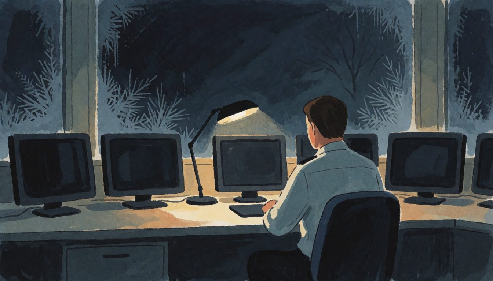
Most organisations plan as if a serious disruption might happen. This book starts from a different rule: assume it will happen. Once you do, the question is no longer whether you will be hit, but when, for how long, and what will still work while it lasts.
That rule can sound gloomy. In practice it is a relief, because it replaces a question nobody can answer with questions you can work on. Nobody can tell you whether your largest supplier will be attacked next year. Anyone can tell you what would stop if it were, and how long you could manage without it. This chapter shows what changes when you plan that way, starting with an attack on Swedish government agencies in January 2024.
Regionverket's Monday morning in chapter 0 is one such disruption. This chapter is about planning as if you knew it was coming.
One data centre, dozens of agencies
Tietoevry is one of the largest IT suppliers in the Nordic countries. In the night between Friday 19 and Saturday 20 January 2024, criminals attacked it with ransomware called Akira. The attack hit what Tietoevry described as "one part of one of our Swedish datacenters". That one part was enough to stop services for many of its customers.
One of those services was Primula, a system for HR and payroll. Statens servicecenter, the Swedish government's shared service centre, runs payroll for many agencies with Primula, and many universities use it too. When Primula went down, 126 of Statens servicecenter's customer agencies, with about 62,000 employees, lost it at once, and so did many universities. Staff could not report leave or claim expenses, and the people who ran payroll could not reach the system they did it with. Primula stayed down until 2 February.
The January salaries were paid on time, but not because anyone had planned for the attack: the salary files had already been sent to the bank before it began. If the attack had come before the files went out, many state employees could have been paid late.
What could be planned was the weeks after. Statens servicecenter had planned for something like this without knowing what it would be. Its annual report says it kept working during the incident with the help of continuity plans prepared in advance. It also says it acted quickly to secure the salary payments of the agencies hit. Nobody had predicted Akira or that particular data centre. Somebody had assumed that one day the payroll system would not be there.
Four words people mix up
Four words are often used as if they meant the same thing, and a plan that covers one is then assumed to cover all four. This book uses them as follows. The definitions are a working set, chosen so that the gaps between them show; other books and standards draw the lines differently.
Word
What it means
At Regionverket
Robustness
Withstanding the disturbances you designed for, without changing how you work
The heating plant keeps running through an ordinary power dip, because it was built to
Resilience
Adapting to things you did not design for, by changing how you work
When the login fails, the operators switch to local control and phone each other
Continuity
Keeping your most important services going at a planned, reduced level during a disruption
A written plan says which services run first and at what level when the control system is down
Survivability
The mission goes on even after something has gone badly wrong
Homes stay warm through February, whatever the cause of the trouble
Survivability is the result the other three are for.
This book is about survivability, and that choice has a practical consequence. Robustness has nothing to offer on the day something happens that nobody designed for. A continuity plan works on paper and may fail in practice, because a plan records what the organisation intends to do and is not evidence that it can do it. Survivability asks one question of both: does the mission still get done?
From "if" to "when, and for how long"
Most risk work starts by asking how likely something is. A risk matrix multiplies likelihood by impact, and the events that seem unlikely drop to the bottom of the list. That works for ordinary risks that happen often enough to estimate, and badly for the events this book is about. A ransomware attack on your largest supplier, a week without power in winter, or a law that bars a system you depend on is each rare for any one organisation. Over a few years, one of them or something like it is close to certain.
When you assume it will happen, three questions replace "how likely is it?":
When? Assume the worst moment, not an average day: payday, the coldest week, the night before a deadline.
For how long? Assume longer than feels comfortable. A storage system failed in November 2011 at Tieto, the company that became Tietoevry in 2019. Some customers waited up to six weeks for their systems, and Primula was down for two.
What still works? Ask what you can still deliver, not only what breaks.
The questions change the way you describe what you fear. Organisations usually name the cause: "a cyberattack", "a power cut", "the supplier goes bankrupt". The cause is the part you can least predict and least control; the effect and its duration are what you plan for. "A cyberattack on our control system" becomes "the control system cannot be used for two weeks in February". The second version tells you what to prepare, and it covers many causes at once. That is the aim of the whole method: coverage of effects and durations broad enough that a cause nobody named produces problems the organisation has already prepared for.
When your protection is the problem
The disruption you assume will happen does not have to be an attack. Sometimes it comes from the things you bought to protect yourself. On Friday 19 July 2024, CrowdStrike, a large security company, sent a routine update to its Falcon security software for Windows computers. The update went out at 04:09 UTC. It contained a mistake: one part of the update described 21 pieces of input, while the software on the computers supplied only 20. Computers that received the update crashed and then crashed again each time they restarted.
CrowdStrike fixed the update 78 minutes later, at 05:27 UTC. For many computers that was too late, because a computer that crashes as it starts cannot download the fix. Many had to be repaired by hand, one machine at a time. Microsoft later estimated that 8.5 million Windows devices had been affected, less than one per cent of all Windows machines. The one per cent included airlines, hospitals, banks and broadcasters.
Nobody attacked anyone. A security product that ran on the most protected computers in many organisations stopped them all at once. That is why this book treats your defences as dependencies, like any other. Security software, monitoring tools and update services have deep access to your systems by design, and they are often installed everywhere at once. So when they fail, they fail everywhere at once too.
An old idea: assume you will be hit
The definition of survivability in the box above comes from a 1997 report, Survivable Network Systems: An Emerging Discipline, by a group at the Software Engineering Institute in Pittsburgh. Its authors argued that large networked systems could never be kept completely safe, so they should be built to keep delivering their essential services even after an attacker had got in. That argument is the starting point of this book.
The idea has spread since then. In IT security it goes by the name "assume breach": plan as if an attacker is already inside. The US standards body NIST builds its guidance on cyber resiliency (SP 800-160 Volume 2, revised in 2021) around the same thinking, with four goals: anticipate, withstand, recover and adapt. Swedish civil defence planning asks society to manage at least three months of severe disruption, without naming a single cause; chapter 5 returns to that assumption. This book applies the idea to a whole organisation, not only its IT, for the people who answer for its services.
Deep dive Safety-I and Safety-II
The safety researcher Erik Hollnagel describes two ways of thinking about safety. In what he calls Safety-I, safety means as few things as possible going wrong: you study accidents, find their causes and remove them. In Safety-II, safety means as many things as possible going right. You study ordinary work and how people adjust it every day to cope with surprises, because that everyday adjusting is what keeps things working.
Both views matter for survivability. Safety-I thinking produces robust systems and fixes the causes of past incidents. Safety-II thinking explains why organisations get through events nobody planned for: people adapt, and what they adapt is the ordinary work they know. That is one reason this book asks that a fallback look as much as possible like ordinary work under worse conditions. Then what people must practise is the difference between the two. "Assume it will happen" draws on both: you prepare for the effects you can foresee, and you protect the everyday ability to adapt for the ones you cannot. Safety-II is widely used in safety research and practice, but it is a way of thinking, not a tested method, and its value is debated among practitioners.
Synthesis
Looking ahead
Assuming it will happen raises a practical problem: there is a lot that could happen, to a lot of different parts of the organisation. Chapter 2 gives you a map to see it all on one page, using the British Library's year of disruption as the example.
Further reading
Robert J. Ellison et al., Survivable Network Systems: An Emerging Discipline (CMU/SEI-97-TR-013, Software Engineering Institute, 1997, revised 1999). The report that defined survivability.
NIST, Developing Cyber-Resilient Systems: A Systems Security Engineering Approach (SP 800-160 Volume 2, Revision 1, 2021). Detailed and technical, but the clearest statement of anticipate, withstand, recover and adapt.
Erik Hollnagel, Safety-I and Safety-II: The Past and Future of Safety Management (Ashgate, 2014). The case for studying what goes right.
CrowdStrike, Channel File 291 Incident Root Cause Analysis (6 August 2024). A clear account of how one faulty update stopped millions of computers.
Chapter 02
Can We See the Whole Picture?
The book's model, shown on one incident
If you assume something bad will happen, you soon run into a practical problem. Almost anything could happen, to almost any part of the organisation: a cyberattack hits the systems, a storm hits the buildings, an illness hits the staff, a bankruptcy hits a supplier. Where do you start, and how do you know you have not forgotten a whole area?
This chapter gives you a map that fits on one page. It has two parts: five layers of an organisation where damage can land, and six stages of what an organisation does about it. The stages run from knowing what it has to learning afterwards. Here you will see it used on a single real incident: the attack on the British Library in London in October 2023. That attack touches every part of the map, and the Library has published an unusually honest account of it.
Chapter 1 asked you to plan by effect and duration rather than by cause. A map organises exactly that: what you have and what you do, not the many things that might go wrong.
One library, one Saturday
The British Library is the national library of the United Kingdom. It holds one of the largest collections in the world, runs reading rooms for researchers, puts on exhibitions and lends material to other libraries. On Saturday 28 October 2023, at 07:35, a member of its technology team found that they could not get onto the Library's network.
Within two hours it was clear this was a cyberattack. At 09:15 the Library's business continuity manager put its crisis plan into action. By 10:00 the Library's top crisis team, which it calls Gold, was meeting by WhatsApp video call, because e-mail was gone. A criminal group called Rhysida later claimed the attack. It had copied about 600 GB of files, including personal data about staff and users. It had also encrypted or destroyed much of the Library's server estate, partly to make recovery harder. The Library refused to pay a ransom, and the stolen data was published on the dark web.
The damage was deep, but it was not even. The Library's own review, published on 8 March 2024, lists what kept working:
The buildings stayed open, with exhibitions, events and reading rooms, because the security systems that run the doors still worked.
Finance, HR and payroll worked normally throughout, because they ran in the cloud and not on the Library's own servers. The review calls the cloud e-mail largely unaffected, although the crisis team could not use it on the first morning.
The Library had safe copies of its digital collections. What it lacked was working equipment to restore them onto, because the attackers had destroyed it.
Research services were the hardest hit. A searchable version of the main catalogue only came back on 15 January 2024, eleven weeks later. Several older systems, including the main system for the Library's services, could not be brought back at all. They were too old to run on the new, more secure equipment, or no longer supported by their makers.
Five layers where damage lands
A cyberattack sounds like a technology problem. The British Library's review shows how quickly it became a problem for every part of the organisation. This book sorts an organisation into five layers, and the attack reached all of them:
Layer
What it covers
At the British Library
Technology
Systems, data, networks, accounts
Servers encrypted or destroyed; old systems that could not be restored; cloud systems that kept working
People
Staff, their skills, their wellbeing
Staff data stolen; many staff unable to do their jobs; credit monitoring bought for all staff; a technology team that was already stretched
Organisation
Decisions, mandates, routines, plans
A crisis structure (Gold and Silver) that replaced normal management until mid-January
Physical
Buildings, power, equipment
Buildings, reading rooms and exhibitions stayed open throughout
Supply chain
Suppliers, partners and their access
The likely way in was a server used by outside partners and IT staff for remote access
The supply chain row has a history. The Library used many outside partners for software development and IT maintenance, and some of them had powerful accounts on its network. In late 2022, a year before the attack, the Library's own information governance group had flagged the growing number of partners with access as a risk. A review was planned for 2024. The attack came first.
Start from the mission, not the systems
The most useful thing in the British Library's review is how it measured the damage. It did not list broken systems. It went through the six things the Library exists to do, which it calls its purposes, and rated each one:
Purpose
Rating
What the review says
Culture
Green
Events continued; the Fantasy exhibition ended at 105% of its target
Business
Green / amber
Business support continued and beat its targets; no website for marketing
Learning
Green / amber
Workshops on site continued; online learning effectively paused
International
Green / amber
Partnerships continued largely unimpeded
Custodianship
Red / amber
Collections safe, but new printed material could not be registered or shelved; digitisation paused
Research
Red / amber
Reading rooms open, but only about half the physical collection reachable and most digital content unavailable
Seen this way, the attack did not "take down the Library". It hit two of its six purposes hard and the other four lightly. That is a far more useful picture for anyone deciding what to restore first. It is also why the map starts from what the organisation is for. In this book, the things an organisation is for are called its missions. Each important service that delivers a mission can be followed down through everything it depends on, and that chain is called a mission thread. Chapter 4 shows how to find yours.
Six stages, from knowing to adapting
The layers say where damage lands. The stages say what the organisation does about it, before, during and after. The book uses six, in a loop:
flowchart LR
K["Know"] --> C["Contain"]
C --> R["Recognise"]
R --> D["Degrade"]
D --> V["Recover"]
V --> A["Adapt"]
A -.-> K
The six stages. They run roughly in time order during an incident. The dotted arrow is the feedback: what you learn in Adapt changes what you know, so the loop never quite ends.
Each stage, with what happened at the British Library:
Know. Know what you have, what matters most and what it depends on. The Library knew that remote access to its own servers had no second login step (multi-factor authentication). It had decided in 2020 to leave that out for reasons of practicality and cost, and noted the risk. In its own words, the consequences were "perhaps under-appraised".
Contain. Limit how far damage can spread. Some of the Library's defences worked: the laptops and desktops were protected and not encrypted. But the shape of its old network let the attackers reach far more of the servers than a modern design would have.
Recognise. Notice that something is wrong, and believe it. The Library's monitoring blocked suspicious activity in the night of 26 October, two days before the attack. Staff investigated, found nothing obviously malicious, and unblocked the account. Only afterwards did it look like the attackers' first visit. Chapter 19 looks at why signals like this are so hard to read.
Degrade. Keep the essential parts running at a lower level. The buildings and exhibitions stayed open, and researchers could still order material by hand from a reduced catalogue. What kept going was ordinary work, done by hand under worse conditions, and that is the shape a fallback should have. What has to be practised is the difference between the two.
Recover. Get back to normal operation. Recovery took months, because there was nowhere to restore the backups and some systems could not be restored at all.
Adapt. Learn and change, so the next time goes better. In December the Library replaced its crisis structure with an 18-month programme called Rebuild & Renew, in three phases it named Respond, Adapt and Renew. It also published 16 lessons for others.
The layers and the stages are this book's own cut, a synthesis made for finding gaps. The frameworks in the deep dive below divide the work differently, and if you already use one of them, the map is meant to translate to it.
The whole map on one page
Put the layers and the stages together and you get the map: a grid with the five layers as rows and the six stages as columns. Each cell asks a question. The cell where People meets Degrade asks: how do our staff keep the essential work going when systems are down? The cell where Supply chain meets Recognise asks: would we notice if a partner's access were being misused?
For the British Library, the grid fills in like this. Each row shows one example from the review.
Layer
A stage that held
A stage that failed
Technology
Degrade: cloud systems kept e-mail, finance and payroll running
Recover: no equipment to restore backups onto; old systems could not return
People
Degrade: staff kept reading rooms going with manual processes
Know: an already stretched technology team, flagged afterwards as a recovery risk
Organisation
Recognise: the crisis plan was in action within two hours of the first sign
Know: many small accepted risks were never added up at senior level
Physical
Degrade: buildings and exhibitions open throughout
(No failure reported)
Supply chain
Recover: outside security experts brought in on day one
Contain: partners' remote access without a second login step
A grid for your own organisation shows something a list of risks cannot: the empty cells, where nobody can say whether the organisation could do that thing today. A filled cell is not the goal either. Each cell is a claim about what one important service could survive. It should answer the owner's question: can we do this today, with the people and the equipment we have? If not, where must we be, and how do we get there, with an owner, a date and a cost? Until an exercise, an incident or a test has challenged a cell, it is a hypothesis. A full grid is not the goal; useful doubt is. Chapter 8 builds the grid for Regionverket's drinking water, once the chapters before it have given you what you need to fill it in.
Deep dive Where the map comes from
The five layers draw on business continuity practice, which plans for the loss of premises, people, technology and suppliers (ISO 22301 and the Business Continuity Institute's guidelines). The six stages line up with three existing frameworks:
Stage
SEI survivability (1997)
NIST SP 800-160 Vol. 2
Hollnagel's resilience abilities
Know
Essential services and assets
Anticipate
Anticipate
Contain
Resistance
Withstand
Respond
Recognise
Recognition
Withstand
Monitor
Degrade
Recovery of essential services
Withstand, recover
Respond
Recover
Recovery
Recover
Respond
Adapt
Adaptation and evolution
Adapt
Learn
The map adds two things of its own. It splits Degrade from Recover, because keeping a reduced service running and getting back to normal are different jobs with different owners. And it puts the layers and the stages on the same page.
How the rest of the book fills in the map
Each part of the book fills in part of the map, roughly in the order of the loop. Part II is about Know, and ends with the full map in chapter 8. Part III is about Contain, Degrade and Recover: keeping the essentials running, spares that do not fail together, working by hand, leaving a supplier and starting again. Part IV takes the people and organisation layers across all stages. Part V is about Recognise and Adapt, and Part VI takes the map beyond the organisation, to infrastructure and to a country under heightened alert.
Synthesis
Looking ahead
The map is only useful if you can fill it in before the Saturday morning comes. Many of the things that saved the British Library could not have been arranged on the day: the cloud payroll, and the new equipment it had approved and bought before the attack. That equipment is why its rebuild could start in December. Chapter 3 asks what must exist before the crisis.
Further reading
British Library, Learning Lessons from the Cyber-Attack: British Library Cyber Incident Review (8 March 2024). Eighteen pages, frank and readable, and the source for this chapter. Its 16 lessons are worth reading on their own.
ISO 22301:2019, Security and resilience: Business continuity management systems. The international standard for continuity, organised around losing premises, people, technology and suppliers.
NIST, Developing Cyber-Resilient Systems (SP 800-160 Volume 2, Revision 1, 2021). The four goals of anticipate, withstand, recover and adapt, in depth.
Chapter 03
What Must Exist Before the Crisis?
What you can have in a crisis only if you built it first
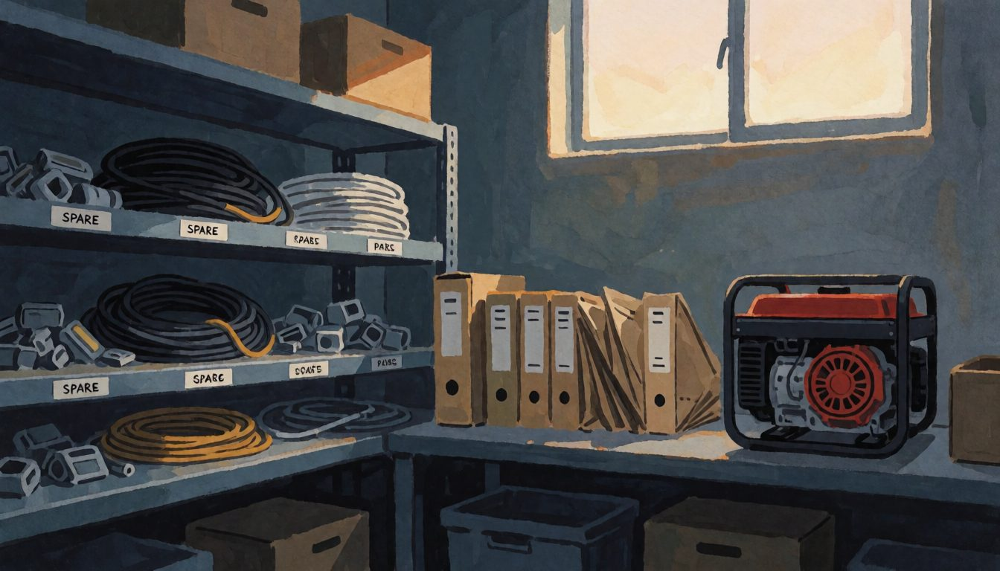
Coop is one of Sweden's large grocery chains, with about 800 stores. On the evening of Friday 2 July 2021, at about seven o'clock, the tills in most of those stores stopped working. The cause was a ransomware attack on the company that supplied Coop's tills, which reached the tills through a software tool that company used to manage them. Without tills the stores could not take payment, so they closed, at the start of the summer holidays.
Some Coop stores stayed open all weekend. The stores in Värmland, Norrbotten, Gotland, Oskarshamn and Tabergsdalen kept selling food, and so did the online shop. Coop listed them in its notice to customers as not affected. Nobody had planned it that way, as far as anyone has said. The stores that stayed open were simply not standing on the chain that broke.
This chapter is about the difference between that kind of luck and a plan. Some things can be arranged on the day a crisis starts. Many cannot: equipment, contracts, trained people and a second way of working all take months to put in place. If they are not there when the crisis begins, you will not have them during it.
Chapter 2 ended with the British Library's cloud payroll and the equipment it had ordered before the attack, neither of which could have been arranged on the Saturday morning. This chapter asks what else belongs in that category, and how you find out before you need it.
Some stores stayed open
Coop's tills came back slowly, because each one had to be dealt with in place. Over the weekend and the following week, technicians went out across the country and restored the till systems store by store. About a hundred stores had reopened by Monday 5 July. By Wednesday 7 July about 500 of the 800 were open again, and Coop announced on Thursday 8 July that all its stores were open. Chapter 6 follows the chain of suppliers that led to the tills, and how far away the attack really started.
For most of that week, those regions and the online shop were all of Coop that could still sell food. Coop in Sweden is not one company with one set of systems. Its stores are run by several regional consumer co-operatives and by a central organisation, and they do not all buy the same things in the same way. Coop did not explain publicly why the stores in Värmland, Norrbotten and the other regions were spared. What matters here is that they were built differently from the rest and did not depend on the chain that failed, and that nobody has described this as a plan. It helped Coop that week, but nobody could have counted on it in advance.
Coop is not the only organisation that was saved by something it had not planned. The kind of thing that saves you decides whether you can rely on it, so the next section sorts them into three kinds.
Designed, accidental or improvised
A fallback is whatever lets a service carry on, at some level, when the normal way of delivering it stops. Fallbacks come in three kinds, depending on how they came to exist.
A designed fallback was put in place on purpose, for this kind of day. Statens servicecenter's continuity plans for the loss of Primula in chapter 1 are one. Somebody had assumed that one day the payroll system would not be there, and had decided what to do then.
An accidental fallback exists for some other reason and happens to survive. The Coop regions are one example. Umeå University is another: it runs its own installation of Primula instead of using the one that Tietoevry hosted. According to lists compiled from Swedish Radio's reporting at the time, it was not affected. The university made that choice for its own reasons, not as a fallback.
The most famous accidental fallback belongs to the shipping company Maersk. In June 2017 an attack wiped its domain controllers, the servers that hold the accounts everyone logs in with, all over the world, all but one. The one that survived was in Ghana, where a power cut had taken the server offline before the attack spread. Chapter 13 tells how Maersk rebuilt from it.
An improvised fallback is invented on the day. Coop's technicians restoring tills store by store were improvising, and so was Nacka municipality in chapter 6, which paid social assistance by hand when its systems were gone. Improvisation is what people do when there is nothing else, and it often works better than anyone expected. But it is slow, it depends on who happens to be there, and it scales the way Coop's week did: one store at a time.
Kind
How it came to exist
Example
Can you count on it?
Designed
Put in place on purpose, for this kind of day
Statens servicecenter's continuity plans, 2024
Yes, if it is kept up and tested
Accidental
Exists for another reason and happens to survive
Coop's regions, 2021; Maersk's server in Ghana, 2017
No: nobody knows it is there until afterwards
Improvised
Invented on the day by the people present
Coop's technicians restoring tills store by store
Partly: it works at small scale, slowly, with the right people
The aim of this chapter is to turn as much as possible into the first kind. An accidental fallback that you have found and written down becomes a designed one, because now someone can keep it alive on purpose. Improvisation becomes much better when people have practised it, which is a theme of Parts IV and V.
Backups with nowhere to land
The most common designed fallback is a backup. The British Library in chapter 2 shows why a backup alone is not enough: it had safe copies of all its digital collections and nowhere to put them back. In its own review, the Library says it was "hampered by the lack of viable infrastructure on which to restore it".
The rebuild started in December 2023, and the Library's review is precise about why it could start then. The new equipment had been "approved and purchased before the attack". The Library's board had already set aside money for a new, more secure infrastructure as part of its strategy for 2023–2030. It also keeps a reserve, by policy, for unexpected events. None of that was bought for this attack. All of it was in place before the attack, which is why the rebuild could begin within weeks instead of after a procurement.
So a backup is one part of a recovery. You also need equipment to restore it onto, software that can still read it, people who know how, and the authority to spend the money. The British Library had the copies, the money and some of the equipment, and some of its old systems still could not come back.
Lead times decide what you will have
In December 2004, the US Secretary of Defense, Donald Rumsfeld, was asked by a soldier in Kuwait why their vehicles lacked armour. He answered: "You go to war with the Army you have. They're not the Army you might want or wish to have at a later time." Whatever you think of the answer, it describes every crisis. The organisation that meets the crisis is the one that exists on the morning it starts.
The reason is lead time: the time from deciding you need something to having it ready to use. Most of what a fallback needs has a long lead time. A second fuel supplier needs a procurement, and spare equipment needs a budget decision and a delivery. A trained person needs months of practice, and an agreement with a neighbouring organisation needs meetings, lawyers and a signature. During a crisis, all of these take longer, because everyone else wants the same things at the same time.
Livsmedelsverket's handbook for drinking water shows what this means in practice. It suggests that waterworks keep enough treatment chemicals to produce water for at least three months without deliveries. It also lists ways to get there that all take time: bigger stores, agreements to share chemicals with other local users, and the ability to switch between chemicals that do the same job. None of them can be arranged once the supplier has stopped delivering.
Part of Regionverket's register is below. The lead times are Regionverket's own estimates, made up for the example, but each item is the kind real utilities have to plan for.
What the fallback needs
Why
Lead time
Status today
Three months of treatment chemicals
The supplier can stop; stock is three weeks
12–18 months (budget, storage tank, permit)
Not started
A second fuel supplier for backup power
Fuel lasts two days; one supplier may be busy elsewhere
3–6 months (procurement)
Not started
Spare servers for the control system
A wiped control system needs something to rebuild onto
6–9 months (budget and delivery)
Asked for in next year's budget
Printed instructions for running the waterworks by hand
Screens may be gone
1–2 months, then a yearly review
Outdated, from 2019
Operators who have run the plant on local control
Instructions alone are not enough
About a year of practice sessions
Two of ten operators
A chemical-sharing agreement with the neighbouring municipality
Fills a gap while stock is rebuilt
3–6 months (negotiation)
Informal only
Part of Regionverket's lead-time register. Every row takes months, and none can be shortened once the crisis has started.
Each row answers the owner's three questions. The status column says whether we can do this today, with the people and the equipment we have. The first column says where we must be. The lead time and whoever can decide on it say how we get there, and the row is not closed until it has an owner, a date and a cost. That changes the conversation with whoever holds the budget. "We should have more chemicals" is easy to postpone. "If the chemicals supplier stops, we have three weeks, and closing that gap takes eighteen months" makes the cost of waiting visible.
The row about the operators is about people rather than things to buy. Running the plant on local control is the part of a bad day that differs most from ordinary work, and two of ten operators have done it. The closer a fallback is to the work people already do, the less there is to practise; what has to be practised is the difference.
Does the fallback fail with what it backs up?
A fallback is only worth having if it still works when the normal way has stopped. That sounds obvious, but many fallbacks share something with what they back up, and fail at the same moment for the same reason. This book calls that shared fate.
The British Library's cloud payroll had no shared fate with its own servers. The payroll ran on a different platform, with different accounts, so the attack on the Library's network did not reach it. Coop's regional stores had none with the till supplier's chain, for the same kind of reason. In both cases the fallback kept working because it did not stand on the same thing as the part that failed.
The CrowdStrike update in chapter 1 shows the opposite. It stopped the primary and the spare at the same time, in organisations whose two data centres, spare computers and backup sites all ran the same security software. The spares were real, but they had the same weakness as the computers they were meant to replace.
You can test for shared fate without any technical knowledge. List what the normal way needs: systems, accounts, suppliers, buildings, power, people. Then list what the fallback needs. Every item on both lists is a way for both to fail together. Each one is either acceptable, because you have decided you can live with it, or a gap.
The crisis inventory
The ideas in this chapter come together in one question, asked of one important service by the people who run it, on an ordinary day. If the normal way stopped this morning, what would we have? A crisis inventory is where the answers are written down: every fallback, everything each fallback needs, and whether it exists today in a form the people on duty could reach.
Each row in the inventory answers the same few questions:
What is the fallback, and what level of service does it give?
What does it need: equipment, copies, contracts, people, authority, instructions?
Where is each of those, and could you reach it with the normal systems down?
Does it share fate with the normal way, and how?
When was it last used or tested, and by whom?
If something is missing, what is its lead time? That item goes into the lead-time register.
The inventory tends to find three things, and this chapter has shown all of them. Some fallbacks exist only in the heads of the people who would improvise them, like Coop's technicians. Some depend on the system they are meant to replace, like Regionverket's billing export. And some were last tested so long ago that nobody is sure they still work, like Regionverket's printed instructions from 2019. Finding these on an ordinary day costs a meeting. Finding them during a crisis costs the service.
Deep dive When a fallback adds failure
Everything in this chapter assumes that fallbacks help. Researchers who study accidents have shown that a badly designed fallback can cause the failure it was meant to prevent.
The sociologist Charles Perrow argued in Normal Accidents (1984) that in systems that are both complex and tightly coupled, serious accidents are to be expected. Safety devices are part of that complexity. One of his examples is the Fermi nuclear reactor near Detroit in 1966. A metal plate, added late at the request of a safety committee, came loose and blocked the flow of coolant.
The political scientist Scott Sagan (2004) described three ways redundancy can backfire. Added parts bring their own common faults, people relax because someone else is also watching, and the extra safety is used to justify running closer to the edge. The physician Richard Cook made a related point in "How Complex Systems Fail" (1998): changes made to remove frequent small failures can create rare large ones.
The clearest technical example is the first flight of the Ariane 5 rocket, on 4 June 1996. The rocket had two identical guidance computers, one active and one on standby. Both ran the same software, and both failed on the same error, the standby first and the active one moments later. About 40 seconds after lift-off the rocket broke up. The redundancy was complete and gave no protection, because both computers shared the same fate.
None of this argues against fallbacks. It argues for simple ones that you understand, that do not share fate with what they back up, and that you have actually used. The evidence is strong that redundancy can add failure, from many documented incidents, and thin on how often it does, because nobody counts the failures that fallbacks prevented.
Synthesis
Looking ahead
A crisis inventory is written for one important service at a time. That raises the question this chapter has taken for granted: which services are the important ones, and how long can each be without its normal way of working? Chapter 4 answers that.
Further reading
Coop's notice to customers, as quoted by BleepingComputer (3 July 2021), and SVT/TT, "It-attacken mot Coop: detta har hänt" (July 2021). The sources for the Coop account.
British Library, Learning Lessons from the Cyber-Attack: British Library Cyber Incident Review (8 March 2024). The pages on recovery explain what it means to have backups but nowhere to restore them.
Livsmedelsverket, handbook on crisis preparedness for drinking water production (2024). The sections on backup power and treatment chemicals are a model of lead-time thinking for any organisation.
Andy Greenberg, "The Untold Story of NotPetya, the Most Devastating Cyberattack in History", Wired (22 August 2018). Maersk's server in Ghana, and what it is like to depend on a fallback nobody designed.
Richard I. Cook, "How Complex Systems Fail" (1998). Eighteen short points, readable in ten minutes, on why defences and failures go together.
Charles Perrow, Normal Accidents: Living with High-Risk Technologies (Basic Books, 1984; Princeton University Press, 1999). The classic argument that safety devices are part of the complexity they protect.
Part II · Start From What Must Keep Working
Part II · Introduction
Start From What Must Keep Working
What to protect, what to plan against, and what it all stands on
Once you accept that a disruption will come, the next question is what to protect. An organisation cannot keep everything running, and it should not try. This part starts from the few services that hurt people when they stop, works out how long each can be stopped, and only then asks what could stop them and what they depend on.
The chapters follow that order. Chapter 4 picks out what must keep working and how long it can stop. Chapter 5 builds a short list of scenarios, described by their effect and how long they last rather than by their cause. Chapter 6 maps what each service relies on, down through suppliers and their suppliers, and asks eight questions of every dependency. Chapter 7 prepares for what nobody can predict, by planning for a handful of effects that many different causes share. Chapter 8 puts the pieces on one page for a single service.
By the end of the part you will have the material for that page for one of your own services: what it must deliver, what it stands on, what you plan against, and where the empty cells are.
The chapters:
Chapter 4, What Must Keep Working?: the least you must do, and how long you can go without it
Chapter 5, What Should We Plan For?: a short list of scenarios everyone plans against
Chapter 6, Who Do We Rely On?: what you are really standing on
Chapter 7, How Do We Prepare for What We Can't Predict?: planning for effects instead of causes
Chapter 8, How Do the Pieces Fit Together?: the whole model on one page for one service
Chapter 04
What Must Keep Working?
The least you must do, and how long you can go without it
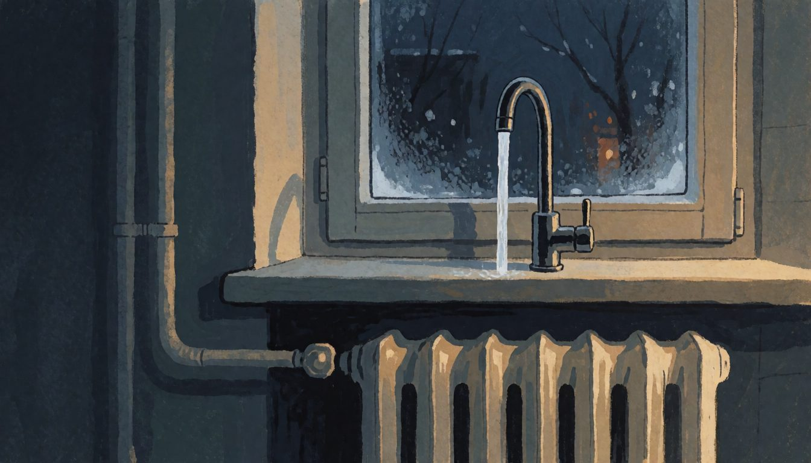
TLV is the Swedish agency that decides which medicines the state helps pay for, and at what price. One of its jobs is to pick, every month, the cheapest version of each common medicine. Pharmacies must then offer that version to their customers in place of more expensive ones that do the same thing. Drug companies compete each month to be picked, and that competition keeps prices down.
In January 2024 TLV's IT operations supplier, Tietoevry, was hit by the attack you met in chapter 1. Among the systems that went down was the one TLV uses to make the monthly choice. TLV could not run it normally for March 2024 and had to use a stand-in arrangement. The system was back for April, but the effects ran on into the middle of the month.
In October 2024 TLV published what that cost: more than 110 million kronor. Of that, 68 million fell on the public pharmaceutical benefits and patients paid 42 million out of their own pockets. TLV's own extra costs that year were reported at about five million. Almost the whole bill landed on other people.
Chapter 3 ended with a crisis inventory for one important service. This chapter decides which services are important, how long each can be without its normal way of working, and the least each must still deliver. It ends with one page per service and the question that page exists to answer: can you deliver that least, within that time, with what you have today?
The bill landed elsewhere
TLV's figures are unusual because they were published at all. Most organisations count what a disruption cost themselves: overtime, consultants, lost income. TLV also counted what it cost the system it serves.
Who
Cost of the disruption
Source
The public pharmaceutical benefits
68 million kronor
TLV, 29 October 2024
Patients, out of their own pockets
42 million kronor
TLV, 29 October 2024
TLV itself, extra costs in 2024
About 5 million kronor (forecast)
Svensk Farmaci, 16 May 2024
TLV's own cost was a small fraction of what the disruption cost others. A plan that counts only the first underrates the service.
The figures leave out a second effect. Pharmacies and wholesalers could not rely on the system when they ordered stock, and TLV's report describes the logistical problems that caused. TLV's director general said afterwards that a longer disruption could have had more serious consequences, both for what medicines cost and for whether patients could get them. A system that looked like an internal tool for a small agency steered money and medicines for the whole country.
The people a service is for carry most of the harm when it stops, and they have no say in how it is protected. That is why this chapter asks you to start from them.
From systems to services
Ask an IT department what it must keep running and you will get a list of systems. Ask the people who use those systems and you will get a list of things they need done: get paid, get medicine, keep warm. The second list is the one that matters, because a system is only important for what it lets someone do.
TLV's system shows the difference. As a system, it was one internal application among many. As a service, it was "the cheapest medicine is chosen every month, so that pharmacies, patients and the state pay less". A month without it cost more than 110 million kronor.
For Regionverket, the important services are the ones you met in chapter 0, described by what people get from them:
Heat: homes, schools, care homes and the hospital stay warm.
Water: safe drinking water comes out of the tap.
Information: customers and the public find out what is happening and what to do.
Billing: customers are billed correctly for what they used.
"The control system" is not on the list. It is something heat and water depend on, and it will appear further down, in the mission threads.
Harm over time
Harm from a stopped service grows with time, and it grows in different ways for different services. Some do no harm for days and then a great deal; others hurt within hours. To decide what must keep working, you need the shape of that growth.
For heat, the shape comes from how fast buildings cool. Energimyndigheten's figures in chapter 0 give it at −20 °C: an older timber-framed block of flats falls from +20 °C to +5 °C in about a day. Some houses take half that time. For water, the shape has a step in it. The reservoirs hold about a day's use, so nothing happens at first, and then the taps run dry. For billing, nothing harmful happens for weeks.
Service stopped for
Heat (February)
Water
Information
Billing
6 hours
Homes cooling; vulnerable residents at risk in the oldest buildings
No effect; reservoirs supply
Calls pile up; rumours start
No effect
1 day
The oldest homes near +5 °C; care homes need help
Reservoirs empty; taps run dry in places
Without news, people call 112 and the municipality
No effect
3 days
Serious risk to life; evacuation of vulnerable people
Emergency water only, and only where tanks have arrived
Trust in Regionverket falls fast
Small: invoices delayed
1 month
Damage to buildings from frozen pipes
Public health at risk; businesses closed
Lasting damage to trust
Cash flow strained; customers face a large catch-up bill
How harm grows for Regionverket's four services. Heat and water hurt other people within a day; billing hurts mostly Regionverket, and only after weeks.
The heat column assumes February. In July the same outage would barely be noticed. A plan should assume the worst moment, as chapter 1 argued, and say which moment that is for each service.
A tolerance you can defend
Once you know how harm grows, you can say where it becomes unacceptable. That point is the service's impact tolerance. It turns "as short as possible", which nobody can plan for, into a line you either stay inside or cross.
A tolerance you can defend has three properties. It is set from the harm to the people served, and not from what your current systems can manage. It names the worst moment it applies to. And it uses a second measure where time alone would mislead. "No customer without heat for more than 12 hours in winter, and care homes and the hospital never without it" says more than "heat restored within 12 hours".
The first property is the hardest, and the UK is where it has been tested against real firms. In March 2021 the Financial Conduct Authority published its policy statement PS21/3, Building operational resilience, alongside matching rules from the Bank of England's Prudential Regulation Authority. Firms had to identify their important business services, set an impact tolerance for each, and map what each depends on. Then they had to test whether they could stay within tolerance in "severe but plausible" scenarios. All of it was due by 31 March 2025. An important business service, in those rules, is one whose disruption could cause intolerable harm to the firm's clients or threaten the financial system. The firm's own losses are not the test. That is the choice this chapter asks you to make.
When the FCA reviewed the tolerances that firms had set, it found "a wide range of impact tolerances identified by firms, with limited rationale for when intolerable consumer harm or a risk to market integrity is reached". Many firms had picked a number without showing where the harm came from. The FCA also warned against choosing important services by what a firm could already recover, instead of by the harm. Ordinary business impact analyses come out optimistic for the same reasons, and for a plainer one: nobody likes to report that their own service could hurt someone within hours. The FCA's observations are its published findings; the reasons for the optimism are this book's reading of the cases, and no study has measured them.
A tolerance usually comes with a second line: the least the service must still deliver while it is disrupted. This book calls that the minimum viable service. For Regionverket's heat in February, it might be "the network kept running at a lower temperature, with the hospital, care homes and schools used as shelters supplied first". For billing, it might be "no new invoices for up to a month, but customers can still ask about the last one". The heat example shows what a good minimum service looks like: the same operators doing their ordinary work on the same network, under worse conditions, with one new rule about who comes first. The minimum viable service is what Part III of the book designs for.
Most things can wait
An organisation that protects all its services equally spends most of its money on things that could have waited. Sorting services by how fast harm comes keeps the expensive measures for the few that need them. This book uses three tiers:
Tier
Harm to others comes within
At Regionverket
What it needs
1
Hours
Heat in winter; drinking water
A way to keep going without the normal systems, practised
2
Days
Information to customers and the public
A planned way back within days, and a simple stand-in
3
Weeks or more
Billing; most office systems
Backups that can be restored, and patience
Most systems in most organisations belong in tier 3. That is good news: the hard work of Part III, keeping things going when the systems are gone, only has to be done for a handful of services. A request to put a system in tier 1 should come with an answer to "who is harmed, within hours, and how?"
The tiers also set the order of recovery. When everything is down, tier 1 services come back first, even if a tier 3 system is quicker to restore. Tieto's customers in 2011 found out what happens when nobody has decided this: the supplier chose the order itself, as chapter 6 describes.
From the service down
Once you know which services matter and how long each can wait, you can follow each one down through what it depends on. Chapter 2 called this a mission thread. The government payroll that lost its system, Primula, in the Tietoevry attack of January 2024 (chapter 1) is a good example, because its thread runs through several organisations.
flowchart TB
S["Staff paid on payday"] --> P["Payroll run in Primula"]
P --> SSC["Statens servicecenter runs payroll for agencies"]
SSC --> T["Tietoevry data centre hosts Primula"]
P --> B["Salary files sent to the bank"]
B --> BK["The bank pays out"]
The payroll thread in January 2024. The attack cut the thread at the data centre, after the salary files had already gone to the bank. January's salaries were paid because of that timing, and for no other reason.
Drawing the thread shows where it can be cut, and what has already happened by each point. Had the attack come a few days earlier, the same thread would have been cut before the bank. A thread drawn in advance lets you ask that question on an ordinary day.
Everything this chapter has asked for fits on one page per important service, which this book calls a service card. The card is the question written down so that it can be asked. Can Regionverket deliver the minimum service on the card, within the tolerance on the card, with the operators, plants and fuel it has today? If the honest answer is no, the card has found a gap. The next two lines are where you must be and how you get there, with an owner, a date and a cost. A gap that is named and left is an accepted risk with an owner and an expiry date. The card is the input to the rest of Part II: chapter 5 chooses what to plan against, chapter 6 maps the dependencies, and chapter 8 puts every answer on one page.
Field
Regionverket: heat
Service
Homes, schools, care homes and the hospital stay warm
Who is harmed, and how fast
Residents of older buildings within a day at −20 °C; care home residents first
Worst moment
A cold spell in January or February
Impact tolerance
No customer without heat for more than 12 hours in winter; the hospital and care homes never
Minimum viable service
Network running at lower temperature; hospital, care homes and schools used as shelters supplied first
Tier
1
Mission thread, first level
Wood-chip plant, oil plants, pumps and pipes, control system, electricity, fuel deliveries, operators
Owner
Head of district heating
Last reviewed
(date)
A service card for Regionverket's heat. The tolerance and minimum service are decisions for management, not for IT, and the card makes that visible.
Synthesis
Looking ahead
A tolerance says how much disruption you will accept, not what disruption to prepare for. There are countless possible causes, and no organisation can plan for each one. Chapter 5 shows how to choose a short list, starting with one sentence that steers the planning of a whole country.
Further reading
TLV, IT-attackens konsekvenser för periodens vara-systemet (October 2024, in Swedish). A rare public account of what a disruption cost the people an agency serves, not just the agency.
Financial Conduct Authority, PS21/3: Building operational resilience (March 2021), and "Operational resilience: insights and observations for firms" (May 2024). The rules, and the regulator's frank notes on how firms set their tolerances.
ISO 22301:2019, Security and resilience: Business continuity management systems, with ISO/TS 22317 on business impact analysis. The standard terms for tolerable disruption and minimum service.
Chapter 05
What Should We Plan For?
A short list everyone plans against
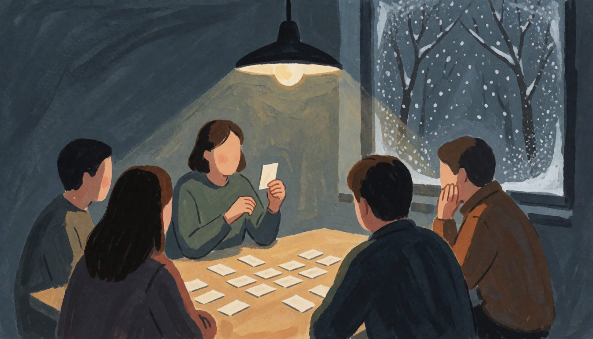
In 2020 the Swedish government sent parliament a bill on total defence for the years 2021–2025. Total defence is Sweden's name for everything the country does to prepare for war: the armed forces, and the civil defence of the rest of society. Most of the bill is about money and organisation. One sentence in it has shaped how thousands of organisations plan.
The sentence sets the starting point for total defence planning: society should be able to manage a security crisis in Europe and Sweden's neighbourhood for at least three months. The crisis it describes seriously disrupts how society functions, and for part of that time there is war. When the government set out the planning for 2025–2030, it kept the three months. Planning should now prepare for "at least three months" of a war in Europe with serious consequences for how society functions.
The sentence does not say what will break, who will attack, or how. It says how long, and that has been enough to steer the planning of municipalities, agencies and companies across the country. This chapter asks why, and what an organisation can learn from it about choosing what to plan for.
In chapter 1 you rewrote feared events as an effect and a duration: "a cyberattack" became "the control system cannot be used for two weeks in February". In chapter 4 you wrote service cards with a tolerance for each important service. This chapter puts the two together: a short list of effects to test every service card against.
One sentence steers a country
The three-month assumption works because it is easy to apply. A municipality does not need to know what a war would look like to ask a useful question. Could we keep the water running, the elderly cared for and the schools open for three months, with deliveries disrupted and some staff called up? A food wholesaler can ask the same question about its stock, and a hospital about its medicines.
The government's planning document for 2025–2030 explains what the three months are for. They give society time to adjust to wartime conditions, such as changed production and changed flows of transport and goods. The three months are a shared length of time, chosen so that the country's plans fit together, and nobody treats them as a forecast.
The best-known use of scenarios in business made the same distinction. In the early 1970s a planning group at the oil company Shell, led by Pierre Wack, wrote scenarios that took seriously a sudden rise in oil prices. When the oil crisis came in 1973, Shell's managers had already thought through what it would mean. Wack told the story in two articles in the Harvard Business Review in 1985. Scenarios are not forecasts, he wrote, and their job is to change what managers notice and how quickly they act. The story is widely retold and widely questioned, since it rests largely on the accounts of the people who did the work. This book found no study showing that organisations using scenarios do better than others. The evidence is good that scenarios change how people think about the future, and thin that they improve results.
This chapter recommends the same pattern for your own organisation. Choose a few effects and durations, write them down, and ask every part of the organisation to plan against the same list. You do not need to agree on what will happen, only on what to be ready for.
Causes multiply, effects do not
Most risk work starts by listing causes: cyberattack, storm, fire, pandemic, supplier bankruptcy, sabotage. The list grows each year, each cause seems to need its own plan, and no organisation can write and practise that many.
The way out is to notice that causes multiply and effects do not. A ransomware attack, a faulty security update and an expired certificate can all mean that nobody can log in. A fire, a flood and a police cordon can all mean that a building cannot be used. Planning for the effect prepares you for every cause that produces it. That is the aim of the whole exercise: coverage of effects, durations and dependencies broad enough that a cause nobody listed still produces a problem you have prepared for.
Phrased by cause
Phrased by effect and duration
Other causes the second version covers
A ransomware attack on our IT
Nobody can log in for two weeks
A faulty update; an expired certificate; a fault at the login provider
A winter storm
No power and no mobile network in the region for five days
Sabotage of the grid; an ice storm; a fault at the transmission operator
A pandemic
Four in ten staff unavailable for a month
A strike; staff called up to the armed forces; a heat wave
Our billing vendor goes bankrupt
The billing service is gone and will not come back
A sanctions decision; the vendor stops the product; a takeover
The same four fears, phrased two ways. The right-hand version tells you what to prepare, and it covers causes nobody listed.
One effect is easy to leave off the list: something that still works, but that you are no longer allowed to use. A law, a sanction or a court ruling can stop a service as completely as a fire. Chapter 6 calls this effect Forbidden, and chapter 12 is about it.
How bad, and how long
A scenario needs a size. Too mild and it tests nothing. Too extreme and people stop taking it seriously, because nothing would work anyway. Two phrases from British practice describe the target.
The UK financial regulators ask firms to test against severe but plausible scenarios. Severe means bad enough to break things. Plausible means that people in the room can see it happening, ideally because something like it has happened before, somewhere. The UK government's National Risk Register uses a related idea, the reasonable worst case. It is the worst version of an event that is still reasonable to plan for, leaving out the most extreme and least likely versions. The 2025 edition describes 89 risks this way.
Both phrases are about how bad. For the scenarios in this book, the setting that matters most is how long. Many organisations can manage a day without their systems. Fewer can manage a week, and fewer still have tested a month. Tieto's customers in 2011 waited up to six weeks, and Primula, the government payroll system hit in the Tietoevry attack of 2024, was down for two. Choosing a duration is choosing which of your fallbacks will be tested. One that works for a day can fail in week two, when the stock runs out or the people are exhausted.
A short list, set centrally
A risk register with 89 entries is useful as a library, a place to check that nothing has been forgotten. It is not a basis for planning, because no organisation can write, maintain and practise 89 plans. Planning needs a list short enough that every service owner can test their service card against every entry.
Two large organisations have chosen short lists. In 2016 NATO agreed seven baseline requirements for national resilience, phrased by what must keep working. They are continuity of government, energy supplies, the ability to handle large movements of people, food and water, the ability to deal with mass casualties, civil communications, and transport. In the United States, FEMA, the federal emergency agency, once planned against fifteen national planning scenarios, each named by its cause, such as a pandemic, a hurricane or a nuclear device. It now organises its response around a few community lifelines, such as energy, communications and water, which are phrased by what people need.
Both lists are also set centrally, and that matters as much as their length. If each department invents its own scenarios, the billing team will plan for a vendor failure, the control room for a storm, and nobody for both at once. When management issues one list, every plan answers the same questions, and the gaps between them show.
Eight to twelve is this book's suggestion, and the number is an argument, not a finding; no study has compared short and long scenario sets for continuity planning. Fewer than eight tends to leave out a whole kind of effect, such as a supplier you are no longer allowed to use, or a disruption that lasts for months. More than twelve is more than a service owner will work through each year. NATO's seven and Regionverket's ten sit in that range.
Imagine it has already failed
The baseline is for the organisation as a whole. A planned change, such as moving to a new system or a new supplier, needs its own scenarios too, because changes are when many failures are introduced. The psychologist Gary Klein described a way to find them in less than an hour, which he called a pre-mortem. Before the change is approved, the team is told to imagine that it is a year later and the change has failed badly. Each person then writes down, alone, every reason they can think of for the failure. The reasons are read out one by one, and the plan is changed to deal with the most serious ones.
Klein's 2007 article in the Harvard Business Review gives the reason it works. Asking "what could go wrong?" invites people to defend the plan. Telling them it has already failed makes it safe, and even clever, to find the reasons. He cites a 1989 study by Deborah Mitchell, Jay Russo and Nancy Pennington. Imagining an event had already happened increased people's ability to identify reasons for it by 30 per cent.
Regionverket's baseline
Regionverket's management has agreed a baseline of ten entries. Each has an effect, a duration and a real precedent, though none happened to Regionverket, and each points to the chapter of this book that deals with it.
#
Effect and duration
Precedent
Chapter
1
Nobody can log in to anything, for two weeks
Maersk, 2017: every domain controller but one wiped
Regionverket's planning baseline. Ten lines cover far more causes than the 89 risks in a national register, because each line is an effect.
Two entries would not appear on most risk registers. Entry 3, a service forbidden by law, has no physical cause at all. Entry 8 has no single event: it is a long period in which everything is harder. Both are on the list because their effects are as real as a storm's, and without the list nobody would plan for them.
The baseline is now the test for every service card, and the test has three steps. For each important service, management asks the owner: under each of these ten, can we stay within the tolerance today, with the people and equipment we have? Where the honest answer is no, where must we be, and how do we get there, with an owner, a date and a cost? A yes that nobody has tested is a belief; the exercises later in the book test it, and what they find must change the list or the organisation. The answers fill the crisis inventories of chapter 3 and the map of chapter 8.
Synthesis
Looking ahead
A baseline tells you what to test against, and a service card tells you what must keep working. Neither tells you what the service actually stands on, which is where the surprises hide. Chapter 6 maps the dependencies, including the suppliers' suppliers, and asks eight questions of each.
Further reading
Regeringen, Gemensamma förutsättningar för utvecklingen av totalförsvaret 2025–2030 (19 December 2024, in Swedish). Short, and the clearest statement of the three-month assumption and what it is for.
Cabinet Office, National Risk Register 2025. A library of 89 risks, each with a reasonable worst case. Useful for checking your baseline, not for replacing it.
Gary Klein, "Performing a Project Premortem", Harvard Business Review (September 2007). Two pages, and enough to run your first pre-mortem.
Pierre Wack, "Scenarios: Uncharted Waters Ahead", Harvard Business Review (September–October 1985). The Shell story, from the person who led it.
Chapter 06
Who Do We Rely On?
Are you standing on solid ground?
Your organisation runs on systems, and those systems run on things you rarely see: a data centre, a storage system, a supplier, and that supplier's suppliers. If one of those things stopped tonight, could you say which of your services would stop with it?
In November 2011, about fifty Swedish organisations found out the hard way. On Friday 25 November, a storage system failed in a data centre in Stockholm run by Tieto, one of Sweden's largest IT suppliers. A spare system took over, and a short while later it failed too. Every customer that kept its data there lost access at once.
One of the customers was Bilprovningen, the company that carried out vehicle inspections in Sweden. On Monday morning its computers were down, so its inspectors wrote the results on paper and kept working. That part went well. But Bilprovningen's computers also sent every passed inspection to Transportstyrelsen, the agency that keeps the national vehicle register. Those reports stopped arriving. In the register, those cars now looked overdue: the deadline had passed and no result had come in. So the register did what it was built to do and banned them from the road. Drivers who had just passed their inspection found their cars banned.
Nobody had drawn the line from a storage system in Stockholm to a driving ban. MSB, the Swedish civil contingencies agency, later investigated the outage and could not even list everyone who had been affected. Neither Tieto, nor its customers, nor the state had the overview. This chapter is about building that overview for your own services, before the day you need it.
In chapter 4 you wrote a service card for each important service, and in chapter 5 a short list of scenarios to plan against. A scenario can only hurt a service through something the service depends on, so the dependency map is where your scenarios meet your organisation.
Fifty customers and nobody with the picture
The outage lasted two days for Tieto and up to six weeks for its customers. Tieto repaired the faulty equipment by Sunday 27 November. The hard part came next. The storage had stopped in the middle of work, so the data on it was out of date or damaged. Every customer's data had to be restored from backups, one customer at a time, and that took much longer.
MSB's report follows the customers one by one. How long each was affected depended on what it had placed with Tieto, and where it stood in the queue:
Apoteket, the state pharmacy chain, was back first. About 350 of its pharmacies could not dispense prescriptions normally over the weekend, and all were working again by Wednesday 30 November. Tieto chose to restore Apoteket first. MSB points out that this was the supplier's own decision, not a priority set by anyone in government.
Bilprovningen got its e-mail back after almost four days. Its inspection stations had working IT again on Monday 5 December, ten days after the fault.
A large logistics company had no IT at all for eleven days, and was still not fully back to normal two months later.
Nacka municipality had placed almost everything with Tieto: finance, schools, care, e-mail and its website. It talked to residents through Twitter and Facebook, paid social assistance by hand, and did not have all its systems back until 4 January. The extra cost was at least SEK 7.5 million.
During all this, nobody could say who was affected. Tieto did not announce the problem until Sunday afternoon. On Monday, the magazine Ny Teknik published a list of government agencies that were Tieto customers, and other media repeated it. The list came from public invoice records, so it included anyone who had bought anything from Tieto; MSB itself was on it, because it had bought some project templates. The list answered "who pays Tieto?". What people needed to know was "who depends on the storage system that failed?".
The definition is deliberately wide. A purchasing register tells you whom you pay. A dependency map tells you what stops, and for whom, and you cannot work it out from the register.
Five layers, and the ones people forget
Tieto's customers found out what they depended on when it stopped. The aim of this section is to find that out on an ordinary day instead, by listing what each service needs. Making the list is easy. Making it complete is the hard part.
Ask people what a service depends on, and they name the systems they use every day. The rest gets forgotten. The five layers from chapter 2 work as a checklist that makes you ask about the rest too:
Layer
Ask
Examples for Regionverket's billing
Technology
Which systems, data, networks and accounts does the service use?
The billing system, meter readings, the customer register, the payment file to the bank, the login service everyone uses
People
Who has to be there, and who knows how it works?
Two billing specialists, the supplier's support team, the one person who understands the meter-reading import
Organisation
Which decisions, mandates, routines and agreements does it rely on?
Authority to send invoices late, the agreement with the bank, the routine for disputed bills
Physical
Which buildings, power, cooling and transport?
The office where billing staff work, the printing house for paper invoices, power to both
Supply chain
Which suppliers, and whom do they depend on?
The billing system's vendor, the vendor's cloud provider, its support subcontractor, the printing house, the postal service
Even with the checklist, some dependencies slip through. Besides running its customers' servers, Tieto sold a monitoring service that watched servers the customers ran themselves. When the storage failed, the monitoring service failed with it. At least two municipalities, Haninge and Södertälje, suddenly had no view of their own systems and had to check them by hand, far less often. In one of them, part of the e-mail system stopped working, and the manual checks did not notice for several days. Nobody would have listed "the supplier's monitoring of our servers" as something e-mail depended on. It was.
Most of the dependencies that slip through are used by every service. Because they belong to everyone, nobody lists them for any one service. Look for these in particular:
Logging in. If the accounts and passwords everyone uses stop working, every system behind them is out of reach, however healthy it is. Chapter 7 treats "we can't log in" as a problem of its own for this reason.
Finding things on the network. Computers find each other through a kind of address book called DNS. When it fails, services that are running cannot be found.
Correct time. Many systems stop working if their clocks are wrong, logins and the power grid among them. Chapter 22 follows time back to the satellites it often comes from.
Monitoring and alarms. The tools that tell you something is wrong, as Haninge and Södertälje found.
The channels you would use in a crisis. Nacka's e-mail and website were with the same supplier as everything else, so the municipality had to improvise.
Dependencies also run the other way. Bilprovningen's inspectors coped well on paper. The damage to the public came from a flow going out of Bilprovningen, to an agency whose rules assumed the flow would always arrive. Transportstyrelsen's register could not tell the difference between "no inspection took place" and "the report has not arrived yet". So when you map a service, also list who uses what it produces, and ask what they would do if it stopped arriving.
The two halves of Bilprovningen's day also show what a fallback should look like. Writing results on paper was the inspectors' ordinary work under worse conditions, and it held. What failed was the one step that differed from ordinary work, the report to the register, which nobody had thought about and paper could not replace. A fallback that looks like everyday work tends to hold; the difference between the two is what has to be found and practised.
Suppliers' suppliers
Your contract shows you one step of the chain, and the risk can sit several steps further down. The grocery chain Coop learned this in July 2021. Coop's tills came from a supplier called Visma Esscom. Visma Esscom managed the tills remotely with a tool called VSA, made by the American company Kaseya. Criminals found a flaw in VSA and used it to send ransomware to the businesses the tool was managing.
The tills stopped at about seven in the evening on Friday 2 July 2021, and most of Coop's roughly 800 Swedish stores had to close. Coop had not been attacked directly, and had no agreement with Kaseya. About 500 stores were open again by 7 July. Kaseya later said that about 50 of its direct customers had been affected, and through them between 800 and 1,500 businesses worldwide.
flowchart TB
X["Criminal group"] -. "uses a flaw in VSA" .-> K["Kaseya VSA, remote management tool"]
K --> V["Visma Esscom, till system supplier"]
V --> C["Tills in most Coop stores"]
C --> S["Shoppers"]
The chain that closed Coop's stores. Coop's contract was with the till supplier, and the weakness was in the supplier's tool, one step further down.
Everything below the first step reaches you only if the supplier tells you about it. Suppliers do not usually list their own tools, cloud providers and subcontractors unless someone asks. So ask, at every procurement and every renewal; the three questions in the tip below are enough.
How far down should you go? Go on until you reach something that many others also depend on, or something you could manage without. Most chains end in one of three places. The first is a large cloud provider or a common software product used by many organisations. The second is basic infrastructure such as power, telecoms and time (chapter 22). The third is a supplier so small that its failure is simply that supplier failing. The first is where concentration hides, and the section on concentration explains why that matters.
Eight questions for every dependency
A dependency map is a list of things. To plan, you also need to know what each of them could do to you. The usual question is "what if it goes down?", but "down" covers very different situations, and each needs a different fallback. This book uses eight short questions instead, called prompts. Each describes an effect, not a cause, so you can ask it without knowing why the dependency might fail. The aim is coverage: enough effects, durations and dependencies on the map that a cause nobody listed still produces a problem the map has a row for.
Prompt
The dependency…
Example
Gone
no longer exists, and will not come back by itself
A data centre destroyed, a supplier bankrupt, data deleted with no copy
Unreachable
still exists, but you cannot get to it
The network connection is cut, the login service is down, the supplier's support line does not answer
Wrong
still answers, but with wrong data or wrong behaviour
Meter readings that are quietly corrupt, a faulty update installed everywhere
Slow or partial
works for some, some of the time, or too slowly to use
The billing run takes three days instead of six hours, half the stores can trade
Hostile
is controlled by someone working against you
A supplier's management tool used to spread ransomware, as with Kaseya
Forbidden
still works, but you are no longer allowed to use it
Sanctions, a court order, a security rule, a feature withdrawn from your country
Unstaffed
needs people who are not available
The two specialists are ill, the supplier's staff are called up in a national emergency
Long
is hit by any of the above for months, not days
A subsea cable that takes half a year to repair, a rebuild after ransomware
The first four describe what you would see. The next three describe situations that can look the same from outside but need a different response. A hostile dependency must be cut off, not restarted. A forbidden one may be working perfectly. An unstaffed one is fine until someone needs to touch it. The last prompt, Long, changes all the other answers, because a fallback that works for a weekend may not work for three months.
A lost dependency or a broken path
Gone and Unreachable are the two that get mixed up most often, and the difference decides what you should spend money on. When Tieto's storage failed, the customers' systems lost their data and had to get it back from backups. That is Gone. A municipality whose network connection to its supplier is cut still has its data, intact, and the service is running; it just cannot reach it. That is Unreachable. Gone needs a second copy of the thing. Unreachable needs a second way to get to it. A second network connection does nothing for a destroyed data centre, and a backup in another city does nothing for staff who cannot log in.
Run the prompts in a workshop of 60 to 90 minutes per service, with someone who runs it, someone who uses it and someone who buys it. For each dependency and each prompt, write down four things: the effect on the service, how you would notice, the fallback if there is one, and the owner. The table that results is the prompt matrix. Many cells will say "not relevant", which is fine and quick. The cells that say "no fallback" are what you came for, and so are the cells that name a fallback nobody has tried, like the billing team's data export.
Deep dive Where the prompts come from, and what they add
Safety engineers have used lists of guide words for decades. In a HAZOP study (hazard and operability study, standardised as IEC 61882), a team walks through an industrial process. It asks what happens with no flow, more, less, reverse, part of, other than, early and late. Nancy Leveson's method STPA asks a similar list of every action that controls something: might the action be missing, wrong, badly timed or stopped too soon? In software, Michael Nygard's book Release It! describes the ways connections between systems fail, with slow responses among the worst. The eight prompts are this book's synthesis of the three, made for finding gaps in a 90-minute workshop:
Prompt
Closest established equivalent
What the prompt adds
Gone
HAZOP no; FMEA loss of function; ISO 22301 "loss of"
Makes it explicit that the loss is permanent
Unreachable
HAZOP no applied to the route; Nygard on integration points
Separates the dependency from the route to it
Wrong
HAZOP other than, reverse; STPA "provided incorrectly"
Already covered
Slow or partial
HAZOP less, part of, late; STPA timing; Nygard
Already covered
Hostile
STPA-Sec, STRIDE, attack trees
Brings the attacker into the same walk-through
Forbidden
DORA exit strategies; sanctions compliance
No guide-word precedent was found
Unstaffed
Business continuity's "loss of people"
Brings people into a technical walk-through
Long
Reasonable worst cases in national risk registers
No guide-word precedent was found
Forbidden and Long are this book's own additions. The research behind the book found no hazard method that uses them as guide words. Appendix B describes the methods in more depth, for services where a 90-minute workshop is not enough.
Forbidden and Long: the two nobody asks
Two of the eight prompts are seldom asked, because they do not look like failures at all. Forbidden describes a dependency that still works. Long describes one that fails in an ordinary way, but for much longer than anyone planned.
A dependency can work perfectly and still be taken away from you. That is what happened to Amsterdam Trade Bank, a small Dutch bank owned by the Russian Alfa-Bank. In April 2022, after Russia's invasion of Ukraine, the United States put sanctions on the bank. Its e-mail and cloud accounts were with Microsoft, which closed them on 12 and 14 April. Another IT supplier, which connected the bank to the European payment system, withdrew too. The bank still had enough money to pay its debts, but without its systems it could not operate, and on 22 April it was declared bankrupt. A Dutch court later ordered Microsoft to give the administrators access to the bank's data. Every system the bank used kept working the whole time. The bank was simply no longer allowed to use them.
A dependency can become forbidden in several ways:
Sanctions and export rules that bind your supplier, as with the bank, or bind you.
Your own country's law. Swedish security law decides who may handle classified information, and where. A supplier arrangement that breaks it is forbidden, however well it works.
Another country's law that binds your supplier, such as a duty to hand over data to that country's authorities.
The supplier's own decisions, such as withdrawing a feature from your country or ending a product.
The second way is the one Transportstyrelsen ran into. In 2015 the agency handed its IT operations to IBM, and IBM's delivery included subcontractors in other countries. A government inquiry later found that the agency knew far too little about what information it actually held (Ds 2018:6). You cannot know whether a supplier is allowed to handle your information if you do not know what the information is. So the Forbidden prompt starts with your own organisation: which information does this service handle, and which rules apply to it? Chapter 12 returns to this in full.
The Long prompt is easier to understand and harder to accept. Plans tend to assume that disruptions last a few days, because most of them do. The ones in this chapter that caused real damage lasted much longer. Nacka waited more than five weeks for all its systems. The Estlink 2 power cable between Estonia and Finland was damaged on 25 December 2024 and back in service on 20 June 2025, almost six months later. It took that long even though spare cable had been made in advance. For each dependency, find out how long a real repair has taken, if one has ever been done. Then ask what your fallback would look like in week six.
When everyone uses the same supplier
So far this chapter has looked at one organisation's map. Some risks only show when you put many maps together. When many organisations choose the same good supplier, they create a risk that none of them can see on its own. The larger Swedish IT incidents of the last fifteen years share that shape: one supplier failed, and many organisations failed with it at the same moment.
Year
Supplier
What failed
Who stopped
2011
Tieto
A storage system, after its spare also failed
About 50 customers, some without IT for weeks
2021
Visma Esscom, via Kaseya VSA
A remote management tool used to spread ransomware
Tills in most of Coop's 800 stores
2024
Tietoevry
Ransomware in one part of one data centre
Primula, the payroll system for 126 government agencies and many universities
2025
Miljödata
A cyberattack on a supplier of work-environment and HR systems
About 200 municipalities and regions
Fifteen years of the same lesson. Each incident started at one supplier and stopped many organisations at once.
The most recent case shows how far this reaches. Miljödata supplies systems for managing the working environment and sick leave, used by most of Sweden's municipalities. After it was attacked in August 2025, about 200 municipalities and regions lost access to the systems, according to the company's chief executive. Data about more than 1.5 million people was later published online. In September 2026 the data protection authority, IMY, fined the company SEK 1.8 million, partly because it had no real-time monitoring.
MSB saw this pattern as early as its 2012 report on the Tieto outage. It concluded that when IT operations are gathered at a few large suppliers, many organisations can be hit at the same time, and the consequences for society can be serious. The same conclusion fits every incident since. That does not make concentration a bad choice, and this book does not claim it is. The same MSB report notes that gathering IT operations at large suppliers can raise quality and cut costs. A large provider may well run systems better than a small municipality could. What the record shows is that concentration changes the shape of failure: fewer incidents, but larger ones that hit many organisations at once. Whether that is a good trade depends on how long the service can manage without the supplier, and on whether there is a fallback that uses a different one. The evidence is strong for the change in the shape of failure and still debated for the balance of costs and benefits.
From inside one organisation, concentration is invisible. Your supplier is reliable, your contract is fine, and your own risk assessment may well be correct. Knowing that a dependency is shared with many others changes two things. Your recovery will compete with everyone else's, as Tieto's customers found when the supplier chose whom to restore first. And any help from national authorities will be spread across all the organisations hit at once. Mark the shared dependencies on your map, and assume that Long applies to them.
Keeping the map alive
A dependency map starts going out of date the day it is finished. Suppliers change their subcontractors, systems get connected to new systems, people leave, and nobody tells whoever owns the map. A map is only worth the effort if it gets updated at moments when people are looking at it anyway. Three such moments are enough:
Procurement and renewal, when the supplier is answering questions anyway. Ask the three questions from the tip above and write down the answers.
Every exercise, when a scenario tests whether a fallback the map claims is real. If the exercise turns up a dependency that was missing, or a fallback that does not work, change the map and the organisation on the spot.
Every incident and near-miss, when reality shows something the map missed, as Tieto's monitoring service did for Haninge and Södertälje.
Keep one map per service, short enough to fit on a single page with the prompts beside it, with a date on every line. Keep a printed copy somewhere you would look for it if the systems holding the map were the ones that failed. The map and the matrix are not the result. They exist so that you can ask, for each dependency and each prompt: if this happens today, can we keep the service inside its tolerance with the people and equipment we have? Where the answer is no, the next two questions are where you must be and how you get there, with an owner, a date and a cost. Chapter 8 puts those answers on the same page as the rest of the model.
Synthesis
Looking ahead
A prompt workshop on a single service can fill a whiteboard. Done for every important service, it would fill a building. Chapter 7 shows how to group the answers into a few kinds of effect and prepare one fallback for each, so that you prepare for each kind once.
Further reading
MSB, Reflektioner kring samhällets skydd och beredskap vid allvarliga it-incidenter: en studie av konsekvenserna i samhället efter driftstörningen hos Tieto i november 2011 (MSB 367-12, February 2012). The customer-by-customer account of the 2011 outage this chapter draws on, in Swedish. Its conclusion on concentration ("ett stort antal aktörer kan komma att drabbas samtidigt") is in the summary on page 7.
Thomas Bull et al., Granskning av Transportstyrelsens upphandling av it-drift (Ds 2018:6). The inquiry into Transportstyrelsen's outsourcing, in Swedish. The finding quoted in this chapter reads: "man i allt för hög grad saknade relevant kunskap om vilken information myndigheten hade".
Michael Nygard, Release It! (2nd ed., Pragmatic Bookshelf, 2018). The chapter on integration points is the best short account of how connections between systems fail.
Nancy Leveson and John Thomas, STPA Handbook (2018, free online). For the two or three services where the prompts are not enough.
Steven Rinaldi, James Peerenboom and Terrence Kelly, "Identifying, understanding, and analyzing critical infrastructure interdependencies" (IEEE Control Systems, 2001). The classic paper on how infrastructures depend on each other.
Chapter 07
How Do We Prepare for What We Can't Predict?
Five kinds of effect, each prepared for once
Norsk Hydro is a Norwegian aluminium company with about 35,000 employees in 40 countries. It runs power stations, smelters and the plants that turn aluminium into window frames, car parts and building profiles. Just after midnight on 19 March 2019, Hydro's IT staff saw unusual activity on the company's servers. Ransomware was spreading through the network and locking files on computer after computer.
That night, nobody at Hydro knew who was behind the attack, how the attackers had got in or how far they had reached. The company acted anyway. It disconnected all its servers and PCs, across the whole global organisation, and told its plants to switch to manual operation as far as possible. By the next morning it had set up other ways for staff to talk to each other and to the outside world. The diagnosis came later. The decision only needed one fact: the computers could not be trusted, so the plants had to run without them.
Hydro could move that fast because "run without IT" is an answer to an effect, and it works whatever the cause. This chapter turns that idea into a method. The many gaps that the eight prompts find in chapter 6 come down to a few kinds of effect, and each kind can be prepared for once.
Chapter 1 asked you to describe feared events by effect and duration, and chapter 6 asked eight questions of every dependency. If you have tried that on a few services, you have a long list of gaps, and many of them look alike. This chapter sorts them.
Hydro acted before it knew the cause
Hydro's own account of the first two days is short. Ransomware hit the network in the night of 18 to 19 March 2019 and was detected just after midnight CET. Hydro contained it by disconnecting every server and PC worldwide, set up manual procedures and alternative channels for talking inside and outside the company, and contacted the Norwegian authorities. Over the next two weeks, production rose and stabilised on manual procedures while recovery started, "based on safety first and business priorities".
The damage was uneven. Hydro reported on the first day that its power stations and its bauxite and alumina operations were running as normal. The smelters in Norway were running normally too, but with more manual work. The business area that makes extruded profiles was hit hardest. Its plants could not reach their production systems, and several stopped for a time. By 12 April, four of the five business areas were producing at normal speed with manual workarounds. Extruded products were back at 85 to 90 per cent of normal output. Hydro estimated the cost of the first week at NOK 300–350 million, mostly lost sales in extruded products. In its report for the fourth quarter of 2019 it put the cost for the whole year at NOK 650–750 million.
Sources: Hydro, stock exchange update of 19 March 2019; Hydro, The cyber attack on Hydro in brief (12 April 2019); Hydro, fourth-quarter report 2019 (7 February 2020).
The first decision was about the effect: the IT could not be trusted, so the plants would run without it. Where the damage landed depended on how far each plant was from ordinary work when the computers went. The smelters that already ran with manual work lost little, because the fallback was their everyday work under worse conditions. The extrusion plants, whose production depended on systems they could no longer reach, lost the most, because for them "run without IT" was a different job. That difference between ordinary work and crisis work is what a fallback has to close and what has to be practised. What Hydro needed to know first was what it had lost, and the rest of this chapter organises your preparation around that question.
Many answers, five kinds of effect
Run the eight prompts from chapter 6 on a handful of services and you get a large table. Read down it, and the same few losses turn up again and again. The billing system becomes unreachable when the login fails, and so do the control system and the chat everyone would use to talk about it. The data centre being gone stops billing, the customer register and the backups at the same time. The gaps are many, but the things you lose are few, and a cause nobody foresaw should leave a loss that is already on the list.
This book groups them into five effect classes, a grouping made for finding gaps rather than a taxonomy. Each describes what the organisation has lost, whatever caused it:
We can't log in. The accounts, passwords or login service that people and systems use have stopped working, so everything behind them is out of reach.
A site is gone. A building, a plant or a data centre cannot be used. It may have burned down, lost power, flooded or been closed off by the police. The effect is the same.
A supplier is gone or forbidden. Something you buy has stopped arriving, or you are no longer allowed to use it.
People are gone. The staff you need are ill, cannot get to work, cannot be reached or have been called up elsewhere.
Data can't be trusted. The systems run, but you cannot rely on what they show or store: readings, invoices, records or the time.
The prompts and the classes are two views of the same work. The prompts ask how one dependency could let you down; the classes look across all dependencies at once and ask what the organisation as a whole would have lost. You run the prompts first and then sort their answers into the classes:
When a prompt answers…
…the effect usually lands in
Gone
A site is gone, or a supplier is gone
Unreachable
We can't log in, or a site is gone (the path to it is cut)
Wrong, Slow or partial
Data can't be trusted
Hostile
We can't log in, or data can't be trusted, often both
Forbidden
A supplier is gone or forbidden
Unstaffed
People are gone
Long
Any class; it changes how long the fallback must last
The sorting is useful because one fallback per class covers many causes at once. Regionverket's planning baseline from chapter 5 has ten scenarios. Sorted by effect, they look like this:
Regionverket scenario
Can't log in
Site gone
Supplier gone or forbidden
People gone
Data can't be trusted
1. Login service locked for two weeks
●
○
2. Main data centre permanently gone
●
3. Key cloud service forbidden in Sweden
●
4. Regional power and mobile network down for five days
●
●
5. 40% of staff unavailable for a month
●
6. Chemicals or billing supplier stops delivering
●
7. Billing or control-system data can't be trusted
●
8. Heightened alert for three months or more
○
●
9. Satellite positioning and time unreliable
○
●
10. Control room unusable for a week
●
Ten scenarios, five classes. ● is the main effect and ○ a likely second one. Every column is hit by at least two scenarios, so a fallback prepared for one class pays off several times.
Two rows hit more than one class. A regional power cut is a "site gone" for every building without backup power, and a "people gone" because staff cannot be reached on their mobiles. Heightened alert takes people away, as staff are called up to their wartime posts, and it strains suppliers. Most scenarios land mainly in one class, which is what makes the classes practical.
One fallback per class
Once the gaps are sorted, Regionverket can prepare one fallback per class instead of one per scenario. Each fallback needs an owner, who keeps it working, and a test interval, so that someone checks it regularly. Without either it falls apart, and nobody finds out until the day it is needed.
Class
Fallback at Regionverket
Owner
Tested
We can't log in
Local accounts on the control system, a small set of emergency accounts outside the cloud login, and printed operating instructions in the control room
Head of IT, with the control-room manager
Every six months, by logging in with them
A site is gone
Local control at each waterworks and heating plant, and an agreed backup control room
Head of operations
Once a year, by moving a shift
A supplier is gone or forbidden
For each critical supplier, an exit card (chapter 12) and stock to cover the time it takes to switch
Purchasing, with the service owner
At every contract renewal
People are gone
A list of key roles with two named deputies each, and a shift plan for running on half the staff
HR, with each manager
Once a year, in an exercise
Data can't be trusted
Manual readings at the plants, a way to stop the billing run, and copies of key data that the attacker could not have changed
Service owners for water, heat and billing
Every six months, by comparing manual and system readings
None of these fallbacks is new. What is new is that each covers a whole class. Local control at the plants helps whether the control room was lost to fire, a power cut or a police cordon. Emergency accounts help whether the login failed because of an attack, a faulty update or an expired certificate.
The table is a claim, and each row is a question Regionverket has to answer honestly: can we do this today, with the people and equipment we have? Can a shift run the plants from the backup control room, and has anyone ever moved one there? Does the person on duty at 03:00 know where the emergency accounts are? Where the answer is no, the row has found a gap. The next two lines are where Regionverket must be and how it gets there, with an owner, a date and a cost. The "Tested" column is how the organisation finds out whether its answer was true, and what a test finds has to change the row or the organisation. Otherwise the table describes a capability nobody has.
The independence test
A fallback only helps if it still works when the thing it replaces has failed. That sounds obvious, and it is how the fallbacks in this chapter failed. The emergency accounts are no use if they are kept in the same login service that is locked. A backup control room is no use if it sits on the same power supply as the first. Chapter 3 called this shared fate and gave a test for it. The independence test is that test, asked of each class fallback: what does it share with the thing it replaces?
Does it use the same login?
Is it in the same building, or on the same power supply?
Does it come from the same supplier, or run in the same cloud?
Does it need the same people to make it work?
Does it rely on the same data, which might be the data that cannot be trusted?
Every "yes" is a way for the fallback to fail together with the primary. Some sharing is unavoidable, and a "yes" is a reason to write down when the fallback will not help, not to throw it away. Chapter 10 looks at shared fate in depth, with the arithmetic of why two copies of the same thing so often fail together.
"We can't log in" takes the others with it
The five classes are not equal. Losing the login is the one that tends to bring the others with it. When the login fails, people cannot reach the systems. They also cannot reach the tools they would use to fix the problem: the admin consoles, the documentation, the ticket system and the chat. In many organisations the login also controls who can open doors and who can use the phones. One fault in one service turns into "a site is gone", "people are gone" and "data can't be trusted" all at once, because nobody can get in to check.
Regionverket's operator at 06:40 in chapter 0 is in that position. The control system, the e-mail, the chat and the IT support portal all sit behind the cloud login that failed. So the failed login is the problem that stops Regionverket from working on the other four.
The same happened to Meta, the company that runs Facebook, Instagram and WhatsApp and one of the largest technology companies in the world. On 4 October 2021 a routine maintenance command disconnected Meta's data centres from each other and from the outside world. The three services disappeared from the internet for about six hours. Meta's engineers then found that they could not reach the data centres to fix it. In the company's own words: "Our primary and out-of-band network access was down, so we sent engineers onsite to the data centers to have them debug the issue and restart the systems." The data centres were built to be hard to get into, so getting in took time. The internal tools the engineers would normally have used had gone down with everything else.
A login fallback has three parts. The first is a way in: break-glass accounts for the systems that matter most, and local accounts on the control system so that operators can work without the central login. The second is a way to work: printed instructions for the few tasks that cannot wait, and the knowledge of who may decide to switch to manual operation. The third is a way to talk, which has a section of its own.
A way to talk that does not share the fault
In a crisis, the first thing people need is a way to talk to each other. It is often lost with everything else, because the usual channels run on the systems that have failed. The incidents in this book show the pattern three times.
At the British Library in October 2023, the crisis team met by WhatsApp video on the first morning, because the Library's e-mail was gone (chapter 2).
At Rogers, one of Canada's largest telecom companies, a faulty configuration change on 8 July 2022 took down the company's mobile and internet services across the country. Rogers' own staff used the Rogers network too. The independent review for the Canadian regulator, CRTC, found that some staff could coordinate because they held SIM cards from other carriers under a 2015 emergency arrangement. The rest could not communicate until such SIM cards were sent out to them.
At Meta in October 2021, both the normal and the separate network access to the data centres were down, so engineers had to travel there in person.
In all three cases, the organisation found a way on the day, and lost hours doing so. The British Library's WhatsApp group ran on staff's own phones and accounts, with nobody in charge of who was in it. A channel set up in advance would have been ready at 07:35, when the first staff member found the network down, instead of at 10:00, when the crisis team first met.
The book's answer is an out-of-band platform: a small set of tools for the crisis team that shares nothing with the normal systems. No published standard describes one, so the sketch below is this book's own. It is meant to be small and cheap, and to be tested like any other fallback.
flowchart LR
T["Crisis team"]
subgraph OOB["Out-of-band platform"]
A["Own accounts not in the normal login"]
D["A few devices or phones from another operator"]
C["Chat and voice service from another supplier"]
P["Printed call-out list and key instructions"]
M["Agreed meeting place"]
end
T --> A
T --> D
T --> C
T --> P
T --> M
An out-of-band platform is a short list of things that do not share the login, the network, the building or the supplier with normal operations. Each part has to pass the independence test.
Each part answers one of the independence questions. The accounts do not use the normal login. The devices do not depend on the company network, and ideally not on the same mobile operator. The chat and voice service comes from a supplier the organisation does not otherwise use. The printed call-out list works when nothing else does, and the meeting place works when even the phones fail. In Sweden, organisations with a role in public safety and crisis management can also apply for access to Rakel, the radio system built for emergency services and public bodies. Where an organisation has it, it belongs in the same kit.
When the cause does matter
The effect classes decide the first response: what you have lost, and which fallback to bring in. Some questions can only be answered once you know the cause, and a plan that ignores them will go wrong later in the incident. Four come up again and again.
Is someone still inside? If an attacker caused the effect, restoring the systems may just give the attacker back their access, which is why Hydro disconnected every server and PC before it started recovery. A failed update or a hardware fault needs no such step. Chapter 13 deals with rebuilding when you cannot trust what is left.
Is anyone in danger? Wrong drinking water is "data can't be trusted" in its most serious form. In Östersund in 2010 and 2011, a parasite in the water made about 27,000 people ill (chapter 0). Here the cause decides what the public must be told, such as whether to boil the water, and the health authorities decide much of what happens next.
Who must be told, and by when? Swedish law treats some causes differently. Under the cybersecurity act in force since January 2026, an organisation covered by the act must send an early warning of a significant incident within 24 hours. A burst water main triggers different duties from a cyberattack, even when the effect on customers is the same.
Will it happen again soon? A one-off fault and a campaign by an attacker look the same on the first day. If it is a campaign, the next blow may already be on its way, and the fallback must last.
The gas link between Finland and Estonia shows where the line between effect and cause runs. In the small hours of 8 October 2023, the Balticconnector pipeline lost pressure and was shut down. Finnish police later found an anchor next to the damage and said it most likely came from a ship called the Newnew Polar Bear, which had dragged it along the seabed. Whether that was an accident or deliberate was still being argued long afterwards. For the operators, the open question did not change the immediate plan. Finland's gas came through a floating LNG terminal at Inkoo instead, which had begun operating in January 2023. The plan needed the effect, "the link is gone for months", and a second way to get the gas. The pipeline was back in commercial use on 22 April 2024, six and a half months later. The cause mattered to governments, police and insurers, and to the question of whether more cables would be hit. On 25 December 2024 the Estlink 2 power cable between the same two countries was damaged too, and it was back in service on 20 June 2025 (chapter 6).
Sources: Gasgrid Finland, bulletins of 11 October 2023 and 19 April 2024; Finnish National Bureau of Investigation, statements in October 2023.
So the answer to the chapter's question is a division of labour. Prepare for effects, because you cannot list every cause and you will often not know the cause on the first day. Then add a short list of steps for the few causes that change the answers to those four questions.
Deep dive All-hazards planning, and its limits
Planning by effect has a long history under the name all-hazards planning. Business continuity practice has for decades organised its solutions around the resources that can be lost (people, premises, technology and information, and suppliers) rather than around what causes the loss. ISO 22313, the guidance that accompanies the continuity standard ISO 22301, and the Business Continuity Institute's Good Practice Guidelines both work this way. In the United States, FEMA moved from the fifteen cause-based national scenarios of 2005 to "community lifelines", the services a community needs, whatever disrupts them (chapter 5).
The approach has critics, and their point is fair. A plan written for every hazard can become a plan written for none: general enough to approve, too vague to use. Specific causes also bring specific needs, such as decontamination after a chemical release or quarantine in a pandemic, that no effect class covers. Planning by effect is the consensus in continuity practice, but no study compares the outcomes for organisations that plan by effect with those that plan by cause. This book's answer, effect classes plus a short list of cause-specific steps, is argued, not measured.
Synthesis
Looking ahead
You now have every piece of the model: the services that must keep working, the scenarios to plan for, the dependencies they rest on, and a fallback for each class of effect. Chapter 8 puts them on one page for a single service, Regionverket's drinking water, and shows what the empty cells on that page tell you.
Further reading
Hydro, The cyber attack on Hydro in brief (12 April 2019). A five-page summary in the company's own words, with the timeline of the first weeks.
Santosh Janardhan, "More details about the October 4 outage" (Engineering at Meta, 5 October 2021). A short, clear account of how one command took down the network and the way back in.
Xona Partners for the CRTC, Assessment of Rogers Networks for Resiliency and Reliability Following the 8 July 2022 Outage (published July 2024). Detailed on what Rogers' staff could and could not do while their own network was down.
Business Continuity Institute, Good Practice Guidelines (2023 edition). The practitioner's handbook for continuity, organised around resources that can be lost.
Chapter 08
How Do the Pieces Fit Together?
One service, one page, and the cells nobody has filled
Chapter 2 drew a map of where damage lands and what an organisation does about it: five layers as rows, six stages as columns. For the British Library, the map was filled in after the attack, and by then it could only explain. The point of the map is to fill it in before anything happens, while there is still time to do something about the gaps.
This chapter does that for one service, Regionverket's drinking water, with pieces from the chapters you have already read. Put together, they fit on one page. Most of the cells on that page fill quickly. Three stay empty, and those three are the most useful thing on it.
The pieces are the service card from chapter 4, the baseline scenarios from chapter 5, the dependency map and the eight prompts from chapter 6, and the effect classes with their fallbacks from chapter 7.
What goes on the page
The page covers one mission thread: one service, followed down through everything it depends on. A page for "Regionverket" as a whole would be either too big to read or too vague to use. A page for "drinking water" can be read in five minutes and argued about in an hour. It is built in five steps:
flowchart TB
S["The service what it is for, how fast it hurts"]
D["Its dependencies across the five layers"]
P["The eight prompts for each dependency"]
F["Fallbacks one per effect class"]
G["The grid layers × stages"]
B["Baseline scenarios"]
S --> D --> P --> F --> G
B --> G
The page is built from the top down. The baseline scenarios come in at the end, as a test of the finished grid.
The order matters. Starting from the service keeps the page about harm to people, and a scenario can only hurt the service through something the service depends on, so the dependencies come next. The prompts and the fallbacks turn the dependencies into answers, and the grid shows those answers in one place.
The finished page is a claim the organisation makes about itself. Every cell says "we can do this", and nothing on the page proves it. Treat the page as a hypothesis about what the service can do, and treat exercises, incidents and tests as what challenges it. The five layers and six stages are this book's way of laying that hypothesis out so that gaps show, a synthesis made for finding them. There is nothing universal about five rows and six columns.
The service at the top
The top of the page says what the service is for and how fast it hurts when it stops. For Regionverket's drinking water, both come from chapter 0. The service delivers safe drinking water to about 140,000 people from two waterworks, one taking water from a lake and one, in the north of the region, from groundwater. Reservoirs and water towers hold about a day's use. After that, people need emergency water in tanks, and Livsmedelsverket's exercises suggest that it can take up to three days before all the tanks are in place. Wrong water is worse than no water, because it makes people ill before anyone knows.
The first line of the page already says something important. There is one day of reservoir against up to three days to get emergency water out, so the decision to start emergency water has to come early, well before the reservoirs run dry. The impact tolerance from chapter 4's service card goes here too: how long the service may be down, and the harm that sets that limit.
Below the service come its dependencies, sorted by the five layers. For drinking water they are:
Layer
What drinking water depends on
Technology
The control system that runs the waterworks and pumps; the cloud login in front of its operator screens; the network between the plants and the control room; the laboratory's records of water samples
People
Two operators per shift in the control room; the staff at the waterworks; the few people who know how to run each works by hand; the laboratory staff
Organisation
Who may stop a waterworks; who decides, with the municipality, to tell people to boil their water or to start emergency water; the routine for informing the public
Physical
The two waterworks; reservoirs and water towers; electricity, with backup generators and about two days of fuel
Supply chain
Treatment chemicals, with about three weeks in stock; fuel deliveries; the control-system supplier; the mobile network; the national emergency water group VAKA, which lends tanks
The list is short on purpose. It holds only the things whose loss would change what the service can do, which is chapter 6's definition of a dependency. Each line was then run through the eight prompts, and the answers were sorted into the five effect classes, as chapter 7 describes.
The grid, filled in
The grid is the heart of the page: five layers as rows, six stages as columns. Each cell holds the answer to one question: for this layer, at this stage, what is in place? The answer should name something concrete, such as a fallback, a routine or a decision right, rather than a hope.
Not every cell is either done or missing. This book uses three kinds:
A filled cell has something in place, with an owner, and someone has tested it.
A thin cell has something in place that would not last long enough, or has never been tested.
An empty cell has nothing in place, and nobody has decided what should happen.
Here is the grid for Regionverket's drinking water. Thin cells are marked (thin) and empty cells EMPTY.
Layer
Know
Contain
Recognise
Degrade
Recover
Adapt
Technology
Control system and its login on the dependency map
Control network separated from office IT
EMPTY: would anyone notice false readings?
Local control at each works; local accounts on the control system
Restore order written down, with the supplier
Findings from each exercise logged
People
Key roles listed, with deputies
Only control-room staff may change settings
Operators compare screens with readings at the plant each shift
Shift plan for half the staff (thin): never tried
EMPTY: only two people have restarted the groundwater works from cold
Debrief after every incident
Organisation
Service card with tolerance
Written rights to stop a waterworks
Alarm limits, and who is called
Who decides on boiling notices and emergency water, agreed with the municipality
Order for restoring supply area by area
Plan reviewed every year
Physical
Sites, reservoirs and generators listed
Locks and alarms at both works
Intrusion and water-level alarms
Backup generators, two days of fuel (thin)
Agreement with a fuel supplier for refills
Generator tests reviewed
Supply chain
Chemicals, fuel and control-system supplier on the map
Supplier's remote access opened only on request
Supplier must report incidents within 24 hours
EMPTY: no plan once three weeks of chemicals run out
Second laboratory for water samples
Key suppliers invited to exercises
The drinking water page for Regionverket. Twenty-five cells are filled, two are thin, and three are empty. The thin and empty cells are the findings.
Read across a row and you see one layer through a whole incident. The Physical row holds from Know to Recognise, then turns thin at Degrade, because two days of fuel is less than the three to five days that Livsmedelsverket suggests. Read down a column and you see one stage across the whole organisation. Most of the trouble sits in the Degrade column, which is common: Degrade only matters on a bad day, so it gets the least attention on a good one.
Empty cells are the finding
An empty cell is the reason for doing the page. It marks a place where nobody has decided what happens, which is much cheaper to find on an ordinary Tuesday than during an incident. A full grid is not the goal. Useful doubt is the goal: the page has done its job when the people who answer for the service can point at the cells they do not trust.
Each empty cell is the same question asked three times. Can we do this today, with the people and the equipment we have? If not, where must we be? And how do we get there: who owns it, by when, and at what cost? Regionverket's page has three, and each ends in an action with an owner and a date.
Would anyone notice false readings? (Technology, Recognise.) The operators trust what the screens show, so if the control system's data were wrong, through a fault or an attacker, they would act on it. The People row has a partial answer, because operators compare screens with readings at the plant once a shift. But nobody has decided what counts as a difference worth acting on, or what the operator does next. The action: the water service owner writes down which readings are checked by hand, how often, and what triggers a switch to local control. Due in three months.
Only two people have restarted the groundwater works from cold. (People, Recover.) Restarting a waterworks after a full stop is rare, so few people have done it, and if both are away, or have left, the knowledge goes with them. The action: the two write down the restart, step by step, and train two more people by doing a supervised restart during a planned maintenance stop. Owner: the head of operations. Due before next winter.
No plan once the chemicals run out. (Supply chain, Degrade.) Regionverket keeps about three weeks of treatment chemicals, and Livsmedelsverket's guidance says a waterworks should be able to produce water for at least three months without deliveries. That is where Regionverket must be. A bigger store is not the only way to get there. The guidance also lists sharing agreements with other local users, being able to switch between chemicals, and a planned fallback if a treatment step lacks chemicals. The action: purchasing and the water service owner choose between a larger stock, a sharing agreement and a second supplier, and take the cost to the board. Due in six months.
Running the baseline through the page
A filled page looks reassuring. The baseline scenarios from chapter 5 are the first test of whether it should. Take each scenario, ask which cells it leans on, and see whether those cells hold for as long as the scenario lasts. Some of Regionverket's scenarios barely touch drinking water. Others land squarely on the findings:
Scenario
Cells it leans on
Does the page hold?
1. Login service locked for two weeks
Technology, Degrade: local control and local accounts. People, Degrade: staff for local control
Yes for days. For two weeks it depends on the thin shift plan.
4. Regional power and mobile network down for five days
Physical, Degrade: generators and fuel. People, Degrade: reaching staff without mobiles
No. The fuel lasts about two days of the five, unless refills arrive while every other organisation is also asking for fuel.
6. Chemicals supplier stops delivering
Supply chain, Degrade
For three weeks. After that, the cell is empty.
7. Control-system data can't be trusted
Technology, Recognise. Organisation, Degrade
Only if someone notices. The Recognise cell is empty.
8. Heightened alert for three months or more
Supply chain, Degrade. People, Degrade
No. Three weeks of chemicals against three months, and staff called away to wartime posts.
The run-through adds time, which the grid alone cannot show. The fuel is enough for a short power cut and not for scenario 4; the chemicals are enough for a supplier's bad month and not for scenario 8. This is chapter 6's Long prompt again, applied to the whole page. The run-through also ranks the findings. The fuel gap turns up in the scenario most likely to arrive without warning, a long power cut in winter, and the chemicals gap in the scenario that lasts longest. Both go to the top of the list, and both are small enough to fix in a year.
The baseline is a list the organisation chose, so this test is only as broad as the list. The aim of the page is coverage: enough of the effects, durations and dependencies that a cause nobody listed still lands in a cell someone has thought about. The sharper test comes from real events. When an incident happens that Regionverket never discussed, ask whether its effects can be placed on this page. If they cannot, the incident found a row, a column or a dependency the analysis missed, and the page changes.
Keeping the page honest
A page like this drifts. Thin cells get described more kindly at each review, a fallback tested three years ago is still marked as filled, and a supplier changes its subcontractor without the Supply chain row changing. Four rules slow the drift down:
Date every cell. A filled cell says when it was last tested, and after one or two years without a new test, depending on the service, it turns thin by itself.
Name an owner for every thin and empty cell. The owner is a person, and the action has a date.
Update the page after every exercise and every incident. An exercise tests a cell the organisation believes is filled; an incident tests whichever cells it lands on. A cell that failed its test turns thin the next day, with an owner and a date for closing the gap.
Keep a printed copy where it would be needed. The page is a crisis document as well as a planning one, and a copy in the control room is worth more than a perfect version behind the login.
The page also needs a reader: the person who answers for the service goes through it once a year and asks about every thin and empty cell. A page nobody senior reads soon stops being honest.
Deep dive STPA for the most critical threads
The page asks whether something is in place for each layer and stage, and never how the controls themselves could cause harm. For the two or three most critical threads, STPA, short for System-Theoretic Process Analysis, asks that. Nancy Leveson developed it at MIT, and the STPA Handbook (Leveson and Thomas, 2018) describes it.
STPA starts by drawing the control structure: who or what controls the process, what commands they give and what feedback they get. For drinking water, the operator controls the dosing of chlorine through the control system, and gets feedback from sensors in the water. STPA then asks, for each command, how it could be unsafe: not given when needed, given when it causes harm, too early, too late, in the wrong order, stopped too soon or kept going too long. Each answer is traced back to a way it could happen: a sensor that gives a wrong reading, an operator with the wrong picture of the plant, a delay in the network.
STPA finds harm that occurs when nothing has failed: every part works as designed, and the combination still goes wrong, which is exactly what the page misses. The cost is time. A proper STPA of one thread takes days of work by people who know the process well. So this book suggests it only for the threads where wrong water or lost heat can hurt people within hours. Strength of evidence: STPA is well established in aviation, automotive and process safety, and published case studies report that it finds hazards older methods missed. Its use for organisational continuity, as here, is much less tested.
Synthesis
Looking ahead
The page tells you where the gaps are. It does not tell you how to fill them. Part III is about the patterns that do, starting with the column where most of Regionverket's findings sit. Chapter 9 asks what keeps running when the rest is gone, and who decides what closes first.
Further reading
Nancy G. Leveson and John P. Thomas, STPA Handbook (MIT, 2018). Free online, with worked examples; the place to start before running STPA on a critical thread.
Livsmedelsverket, Handboken för krisberedskap och civilt försvar inom dricksvatten (2024). The Swedish food agency's handbook for drinking water producers, with the guidance on fuel and chemicals used in this chapter. In Swedish.
British Library, Learning Lessons from the Cyber-Attack (8 March 2024). Read it again after this chapter, and try filling in the Library's grid as it might have looked before the attack.
Part III · Patterns That Keep the Mission Alive
Part III · Introduction
Patterns That Keep the Mission Alive
Minimum service, independence, manual modes, exit and clean restart
Part II showed where the gaps are. This part is about closing them. It describes five patterns that organisations use to keep their most important services going when much of what they normally rely on is gone.
The first pattern is to plan a smaller service in advance, so that you know what keeps running when the rest is gone. The second is independence: spares and backups only help if they do not fail for the same reason as what they replace. The third is the ability to work by hand, with people who know what they are trying to achieve as well as which buttons to press. The fourth is being able to leave a supplier or a product, including one that still works but that you are no longer allowed to use. The fifth is starting again from a clean state when you can no longer trust what is left.
Each chapter uses real cases where the pattern held or failed, says what the pattern costs and where it fails, and ends with an exercise on Regionverket.
The chapters:
Chapter 9, What Keeps Running When the Rest Is Gone?: planning the smaller service before you need it
Chapter 10, Why Do Spares Fail Together?: redundancy, diversity and shared fate
Chapter 11, Can We Work by Hand?: operating by hand, and knowing what you are trying to achieve
Chapter 12, What If a Working System Is Forbidden?: being ready to leave a supplier, and what sovereignty costs
Chapter 13, How Do We Start Again?: rebuilding when you can't trust what's left
Chapter 09
What Keeps Running When the Rest Is Gone?
Deciding in advance what closes first, and what must not
The ransomware attack on 28 October 2023 destroyed or encrypted much of the British Library's own server estate, and for months the Library had almost none of its own IT. Its catalogue was gone until a reduced version came back in January. Its website was gone, and so were its online journals, databases and digital collections. Staff who needed systems for their work either could not do it or had to do it by hand.
The Library still did a great deal. The building stayed open, and so did the reading rooms and the exhibitions. The Fantasy exhibition ended its run at 105 per cent of its visitor target, the Library's most successful exhibition since the pandemic. A second exhibition, on the author Malorie Blackman, reached 114 per cent. School workshops went on, with more than 6,000 students taking part after the attack. Business advice for small companies beat its targets.
None of that was planned as a response to a cyberattack. The parts of the Library that could run on a building and on people kept running, and the parts that needed servers stopped. This chapter asks whether you can make that choice deliberately: decide in advance what keeps running when the rest is gone, and in what order the rest closes.
Most of the gaps on Regionverket's drinking water page (chapter 8) sat in the Degrade column. Part III starts there.
What kept the library open
The British Library's review sorts the damage by the six purposes the Library exists for (chapter 2) and rates how badly each was hit. Culture, learning, business and international work came out green or green/amber; research and the care of the collection came out red/amber. The pattern follows from what each purpose needed.
The exhibitions needed a building, staff and objects on display, and the building's security systems still worked, so the doors could open. School workshops and adult courses on site needed rooms and teachers. Business advice could go on in person, with database access provided through partner centres elsewhere in London and the rest of the country. Finance, HR, payroll and e-mail ran in the cloud and kept working. None of these needed the Library's servers.
Research was different. Researchers need the catalogue to find things, and the systems behind it to order them. The Library kept the reading rooms open anyway, and served researchers by hand. Staff answered questions by e-mail, phone and in person, because the enquiry system and chat were gone. From 15 January 2024, researchers could search a reduced catalogue online, covering the material that could be ordered on site using manual processes. About half of the physical collection, by volume, could be reached; material in the Library's automated storage at Boston Spa could not be reached at all. What stopped altogether was the website, online learning, digitisation, access to digital collections, and the registering of new printed books received under legal deposit.
So the Library degraded purpose by purpose, by structure and luck, with no plan made beforehand, and its review recommends practising continuity plans for the total loss of all systems. Much of what the Library does needs no computers, and its payroll and its doors ran on systems the attackers did not reach. An organisation whose work runs on its systems gets no such luck by accident, so the rest of this chapter is about building that structure on purpose.
Source: British Library, Learning Lessons from the Cyber-Attack (8 March 2024), Section Two.
Decide what closes first
When an organisation loses part of its capacity, something will stop, either in an order someone chose or in the order things happen to break. Graceful degradation means choosing the order in advance.
Sweden already does this for electricity. When there is not enough power for everyone, grid companies disconnect users manually by a priority list drawn up in advance, through a process called Styrel. The list promises nobody power; it decides, before the shortage, who is cut off first.
Regionverket can draw the same kind of ladder for its own services. Each step down is taken when the one above can no longer be held:
flowchart TB
N["Normal all four services"]
R["Reduced billing paused, routine field work stops"]
M["Minimum service heat and water for all at a lower level, customer service gives outage information only"]
S["Survival heat to priority buildings first, emergency water, boiling notices"]
N -->|"Duty officer"| R
R -->|"Crisis lead"| M
M -->|"Crisis lead, with the municipality"| S
Regionverket's degradation ladder. Each step names who decides. Billing is the first thing to go, because it hurts slowly and only Regionverket itself.
The ladder follows from chapter 0's question of how fast each service hurts. Billing goes first because a month without invoices costs Regionverket money but hurts nobody else. Customer service narrows to what people need to know about the outage. Heat and water keep going as long as anything does. When they cannot reach everyone, priority goes to those who would be harmed first: hospitals, care homes and the people in the oldest buildings.
Who decides each step matters as much as the steps themselves. The first step is small and reversible, so the duty officer, the person on call around the clock, can take it alone. The middle step belongs to the crisis lead, normally the head of operations, who leads the response; chapter 15 describes both roles. The last step means telling some residents that their heat comes second, so it has to be taken with the municipality, which is responsible for the population in its area. Naming the decider in advance also answers the second half of the essential question. The order is decided on an ordinary day, and on the day itself the person on duty only decides when to take the next step.
The minimum-service mode
The minimum-service rung needs the most preparation. Chapter 4 called the least a service must still deliver its minimum viable service. The minimum-service mode is the way of working that delivers it: the smallest version of a service that still does what it is for, run in a way that can be kept up for a stated time.
A minimum-service mode needs six things written down:
A trigger: the situation that starts it, phrased as an effect ("the control system cannot be used for more than an hour"), not a cause.
What continues, and to what level.
Staffing: how many people, with which skills, on which shifts.
Manual inputs: what replaces the systems, such as readings taken by hand, paper logs and printed customer lists.
How long it can last, and what runs out first.
The way back: who decides to return to normal, and what must be checked first.
The written mode is a claim, and the question that follows is whether Regionverket could run it today, with the people and the equipment it has. If the honest answer is no: where must it be, and who gets it there, by when and at what cost?
The example also shows what a minimum-service mode should look like: ordinary work under worse conditions. The same operators run the same plant, with a printed table where the screen was and a radio where the network was. In the same way, the Library's staff fetched books by hand in the same reading rooms. The less the mode asks people to become a different organisation, the more likely it is to run. What the shift has to practise is the difference: the radio, the table, the hourly log, the handover without a screen.
Parts that can stand alone
The British Library's exhibitions kept going because they did not depend on the servers. Norsk Hydro is the aluminium company whose ransomware attack chapter 7 described. It kept its power stations going while several of its extrusion plants, which shape aluminium into products, stopped for a time. Hydro's updates do not explain the difference plant by plant, but the pattern is the same: plants that could run without the central systems kept producing, and plants that could not, stopped.
A part that can stand alone is called a cell in this book. A cell can keep its own work going for a while when the rest of the organisation is down, because it has its own way to run, its own staff who know how, and its own stock. The idea comes from the bulkheads in a ship, which divide the hull into compartments so that a leak in one does not sink the whole ship. Software engineers use the same word for parts of a system kept apart so that one failure cannot take down the rest.
Regionverket already has some cells without calling them that. Each waterworks and each heating plant can run on local control. The two waterworks draw on different water, one from a lake and one from groundwater, so a problem with one source does not stop the other. What it lacks are cells on the organisation side: every team uses the same login, the same document system and the same call-out list. A cell in the organisation means that each plant has its own printed instructions, its own local accounts and its own list of whom to call.
Cells have a price. Each one duplicates something: stock, skills, equipment, sometimes people. A cell that never needs to stand alone looks like waste on an ordinary day, and the pressure to merge it with the rest is constant. When most of Coop's stores closed in July 2021, its independent regional co-operatives kept theirs open. Nobody had planned them as a fallback, and Coop never said exactly what kept them apart (chapter 3). The separation should be chosen, and kept only where the service is important enough to pay for it.
How long can each step be held?
A minimum-service mode only lasts as long as what it runs on. A buffer is whatever lets the service keep going after its supply stops. There are three kinds:
Stock: things on hand, such as fuel, chemicals, wood chips and spare parts.
Time: the delay before harm arrives, such as the water in the reservoirs or the hours a building takes to cool.
Slack: spare capacity, most often people. A team with no slack cannot staff a minimum-service mode.
Size a buffer in days, against the scenario in the baseline from chapter 5 that leans hardest on it. For Regionverket:
Buffer
Today
Guidance
Scenario that needs it most
Gap
Fuel for backup power
About 2 days
3–5 days (Livsmedelsverket)
Power and mobile down for 5 days (scenario 4)
About 3 days
Water treatment chemicals
About 3 weeks
At least 3 months (Livsmedelsverket)
Heightened alert for 3 months (scenario 8)
About 10 weeks
Water in reservoirs
About 1 day
No set figure
Waterworks stopped
Covered only if emergency water starts on day one
Control-room staff
2 per shift
No set figure
40% of staff away for a month (scenario 5)
No spare people for local control at the plants
Sizing buffers against the baseline. The two largest gaps are where guidance and scenario agree, and both are a matter of money rather than knowledge.
Each row is the three-step question: what Regionverket has today, where it must be, and the gap. The third step, how to get there, is where buffers stall. On an ordinary day a buffer does nothing, so it is easy to cut in a drive for efficiency. That is why Regionverket's gaps are normal rather than careless (chapter 0). Closing each gap is a decision about money, with an owner and a date, and it belongs with the people who answer for the service. Chapter 17 is about who pays.
A buffer can also be a second route. In the small hours of 8 October 2023, the Balticconnector gas pipeline between Finland and Estonia was damaged and shut down. It was not back in commercial use until 22 April 2024. Finland's gas operator, Gasgrid, said from the first days that supply was secured through the LNG terminal at Inkoo, a ship that turns liquefied natural gas back into gas. Finland had leased the ship in 2022, as imports of Russian gas were ending, and it had been in commercial use since January 2023. Nobody had built the terminal as a fallback for the pipeline. It was built for a different crisis a year earlier, and it gave Finland a second way to get gas for the six months the first one was cut.
Sources: Gasgrid Finland, bulletins of 11 October 2023 and 19 April 2024; Gasgrid, "Implementation of Inkoo LNG terminal".
Your supplier's recovery is not yours
When a supplier fails, the number that matters is when your service will be back. The supplier's own recovery can be weeks earlier. The attack in January 2024 on Tietoevry, one of the largest IT suppliers in the Nordic countries, shows how far apart the two can be.
In the night of 19 to 20 January 2024, ransomware hit part of one of Tietoevry's data centres in Sweden. According to Tietoevry, it had built a new platform for the restoration within 24 hours, and restored more than 90 per cent of the affected servers from backups within four days. Then the restoration of each customer's services continued, together with the customer. With the exception of a few customers, all affected customer services were fully restored by mid-March.
For the customers, four days was not the number that counted. Primula, the payroll system that many Swedish government agencies use through Statens servicecenter, was down until 2 February, almost two weeks after the attack (chapter 1). For some customers it took until March. Each customer's systems, data and connections came back in an order the supplier decided, as Tieto's customers found in 2011 (chapter 6).
For the minimum-service mode, this sets the duration: it must last until your own service is back, which can be weeks after the supplier's servers are. When you ask a supplier about recovery, ask the second question too: "After your systems are back, how long until ours is, and where are we in the queue?"
Deep dive Perrow on coupling and complexity
The sociologist Charles Perrow studied accidents in nuclear plants, chemical works, ships and aircraft, and published his conclusions in Normal Accidents (1984). He described systems along two scales. Coupling is how tightly the parts depend on each other: in a tightly coupled system, one part's failure spreads to the next quickly, with little time or slack to stop it. Interactive complexity is how many unexpected ways the parts can affect each other. Perrow argued that in systems that are both tightly coupled and complex, serious accidents are to be expected sooner or later, however careful the operators are. He called them "normal accidents".
The ideas in this chapter are ways of loosening coupling. A buffer adds time and slack between a failure and its harm, and a cell stops a failure from spreading from one part to the next. A minimum-service mode lowers what the system must do, so that it can run with fewer parts. Perrow himself was sceptical that safety devices always help, because they add parts and new ways to fail. The physician and safety researcher Richard Cook made a related point in How Complex Systems Fail (1998): complex systems run in a degraded mode all the time. Changes meant to remove small, frequent failures can create rare, large ones.
Perrow's theory has critics. Researchers on high-reliability organisations, such as Karl Weick and Kathleen Sutcliffe, point to organisations that run tightly coupled, complex systems with very few accidents, because of the way they work. Strength of evidence: the link between tight coupling and the spread of failure is widely accepted; whether serious accidents are truly unavoidable in such systems is still debated. The mapping from Perrow's technical systems to an organisation's teams and routines is this book's own.
Synthesis
Looking ahead
Cells and buffers only help if they do not fail at the same time as what they protect. A second control room on the same power supply, or a second supplier using the same cloud, can fail together with the first. Chapter 10 asks why spares so often fail together, and what it takes to make them independent.
Further reading
British Library, Learning Lessons from the Cyber-Attack (8 March 2024), Section Two. The purpose-by-purpose account of what kept going, in four pages.
Charles Perrow, Normal Accidents: Living with High-Risk Technologies (Basic Books, 1984; updated edition Princeton University Press, 1999). The original argument about coupling and complexity, with many case studies.
Richard I. Cook, How Complex Systems Fail (University of Chicago, 1998). Eighteen short points on failure, readable in ten minutes and worth rereading.
Karl E. Weick and Kathleen M. Sutcliffe, Managing the Unexpected (3rd edition, Wiley, 2015). How high-reliability organisations keep tightly coupled systems safe through the way they work.
Chapter 10
Why Do Spares Fail Together?
Redundancy, diversity and what the copies share
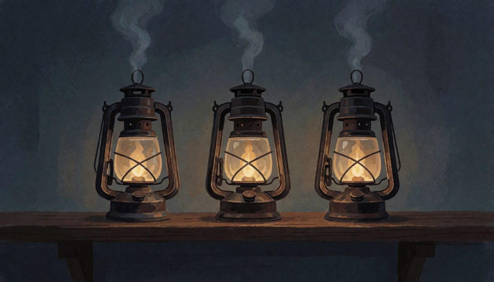
On the morning of 5 May 1983, Eastern Air Lines flight 855 took off from Miami for Nassau in the Bahamas. The aircraft was a Lockheed L-1011, a wide-body jet with three engines, and it carried 162 passengers and 10 crew. Three engines is a comfortable margin. The aircraft can fly on two, and in an emergency on one.
Shortly after 09:15, a warning light showed low oil pressure in engine number 2, and the crew shut it down. They turned back towards Miami on the other two. Then the oil pressure warnings came on for engines 1 and 3 as well. Engine 3 stopped at 09:28 and engine 1 at 09:33. For a few minutes the aircraft was gliding over the sea with no engine running. The crew managed to restart engine 2 at about 4,000 feet, and at 09:46 they landed in Miami on that one engine. Nobody was hurt.
The investigation found that all three engines had lost their oil for the same reason. During the night before, mechanics had replaced a small part on each engine, a sensor called a master chip detector. The new detectors went in without their rubber seals, called O-rings, so oil leaked out of all three engines in flight. Two mechanics had done the work, on the same night shift, in the same way.
Three engines had protected the flight against one engine failing. They gave no protection against one mistake made three times. This chapter is about that difference, and about how to find it in your own organisation before it finds you.
Chapter 3 asked whether a fallback fails together with the thing it backs up. This chapter looks closely at the most common way organisations try to keep chapter 9's minimum service running: by having two of something, and hoping they will not both stop at once.
Three engines, one night's work
Each engine on the L-1011 had its own oil system, its own pumps and its own controls. On paper the three were independent: a fault in one engine could not spread to the others, and losing one engine was a routine event in the design.
What the three engines shared lay outside the design: the people who looked after them, the parts they received from the same store, and the way the job was done that night. The US National Transportation Safety Board investigated. It found that the mechanics had fitted chip detectors without O-rings on all three engines, and that nobody had run the engines to check for leaks before the flight. One way of working, repeated three times, had turned three engines into one. Redundant parts are only as independent as everything that touches them, and here the shared thing was maintenance: the same task, done the same way, at the same time.
Aviation later wrote the danger into a rule. Since 2007, the rule has applied to US airlines that fly two-engine aircraft on long routes far from an airport. They must not work on more than one critical system of the same kind, such as both engines, in the same maintenance visit. If that cannot be avoided, a different technician must do each system, or a second qualified person must directly supervise the work. Either way, the systems are then tested on the ground before the flight. The rule limits what the FAA calls dual maintenance, and it is part of the regulations for extended operations, known as ETOPS (14 CFR 121.374(c)).
The US Federal Aviation Administration explained the rule plainly when it was issued. In its words, mistakes "made more than once during maintenance" were "the greatest threat to long-range operational safety". It had recorded ten failures of more than one engine caused by maintenance errors since 1982. The FAA does not name flight 855 as the reason for the rule, and the rule applies to two-engine aircraft, not to three-engine aircraft like the L-1011. But flight 855 is the textbook case of exactly what it prevents.
Why two of the same fail together
Most organisations protect their important services by having two of something: two servers, two data centres, two internet connections, two operators on a shift. If one stops, the other carries on. That works for one kind of failure and not for another.
The first kind is an independent failure. A disk wears out, a power supply burns, a cable is dug up. Such failures strike one copy at random, and the chance that both copies are struck at the same moment is very small. Against independent failures, a second copy works well.
The second kind is a common-cause failure: one cause that stops several copies at once. Flight 855 had one. So did the first flight of the European Ariane 5 rocket on 4 June 1996. The rocket had two identical guidance computers, one active and one on standby. Both ran the same software, which had been reused from the smaller Ariane 4. About 37 seconds after lift-off, the rocket's speed produced a number too large for one piece of that software to handle. The standby computer failed first, and the active one failed a fraction of a second later, for the same reason. The rocket broke up. Because the backup was identical, it gave no protection.
Modern IT makes common causes more likely. Physical things fail in their own way: two disks of the same model wear out at slightly different times. Software and configuration fail in exactly the same way everywhere they run, so two servers on the same version hit the same fault when the same input arrives. In the same way, two data centres fed by the same automation break on the same wrong change. The more you standardise, the cheaper and tidier your operations become, and the more of your copies share the same causes of failure.
How much does a second copy buy?
Safety engineers have a simple way to put a number on the problem. They ask what share of a component's failures would also stop its twin. That share is called the beta factor, written β. A β of 10% means that one failure in ten comes from a cause the two copies share, and stops both.
The effect is easiest to see with round numbers. Imagine one server that has a 1% chance of failing in a given month, and a second, identical server next to it. If every failure were independent (β = 0), both would fail in the same month with a chance of 1% × 1%, which is 0.01%. The pair would be a hundred times safer than one server. A shared cause stops both at once, so with a shared share β the chance of losing both is about β × 1%, plus a tiny amount from independent failures. For two servers with the same software and the same administrator, β may be 50%.
Share of failures that hit both (β)
Chance of losing both in a month
How much safer than one server
0% (fully independent)
0.01%
100 times
1%
about 0.02%
about 50 times
10%
about 0.11%
about 9 times
50%
about 0.5%
about 2 times
Two servers, each with a 1% chance of failing in a month. The shared share β, and not the number of copies, decides how much the second server buys.
Two lessons follow. The shared share sets a ceiling: however reliable each server is, the pair can never be more than about 1/β times safer than one. With β at 10% the ceiling is ten times. And a third identical server barely helps, because the shared causes stop all three just as they stopped two. To do better, you have to lower β, which means making the copies less alike or less connected.
Real values of β are hard to measure, and the numbers above are illustrations. In industrial safety systems, engineers working to the standard IEC 61508 typically use values between 1% and 10% for hardware. Nobody publishes a β for two virtual servers managed through the same console, but there is little reason to think it is lower. The deep dive at the end of this chapter shows the calculation, for readers who want to use their own figures.
What a primary and its backup share
You cannot measure β for your own services, but you can list what the copies share. Every item on the list is a way for one cause to reach both. Nuclear engineers use a similar list to analyse common-cause failures. The version below is this book's, adapted to ordinary organisations:
What the copies can share
Question to ask
Example of a shared cause
Design and software
Same product, same version, same code?
One bug, hit by the same input in both
Change
Are both changed by the same automation, at the same time?
A wrong update pushed everywhere at once
People and procedure
Are both maintained by the same team, in the same visit, from the same instructions?
Flight 855's missing seals
Identity and access
Can one account reach both?
An attacker with an administrator login reaches every copy
Supplier
Same vendor, same support desk, same cloud underneath?
One supplier incident stops all its customers
Place and power
Same building, same power feed, same flood zone, same cable route?
One storm, one fire, one anchor
Load and timing
Does the backup take over the load the primary was failing under?
The backup is overloaded by the same surge
A shared-dependency checklist. Each row is a path by which one cause can reach both copies.
The checklist is most useful when you run it against a pair you believe is independent. Regionverket has two waterworks, one taking water from a lake and one from groundwater. They are in different places, they take water from different sources, and either can supply much of the region while the other is down. On paper this is the best redundancy Regionverket has.
Each row that came out badly is a question for the people who answer for the water: can the two waterworks be run independently today, with the people and equipment Regionverket has? Where they cannot, the next questions are where the pair must be, and who gets it there, by when and at what cost. The rules in the next section are the cheapest answers; a second copy of anything is the dearest.
Rules that break the link
The ETOPS rule shows the general method: change the way work is organised, so that one mistake cannot reach two engines. The same method works in an office or a control room, and it costs far less than a third copy. Four kinds of rule cover most cases.
Never change both at once. Apply a change to one copy, wait, check that it still works, and only then change the other. That is the ETOPS rule, and it is also how careful IT teams roll out software: to a small part first, then to the rest. At Regionverket it means that a new version of the control system goes to one waterworks first, and the second only after a full day of normal operation.
Different hands, or a second pair of eyes. If the same person must work on both copies, someone else checks the work before the second copy goes back into service. At Regionverket it means the supplier's technician may not change both waterworks' settings in the same remote session without a Regionverket operator watching.
Separate the keys. No single account should be able to change or delete both copies. Backups should be protected from the same administrator who manages the systems they back up. At Regionverket, the control system's administrator accounts should not depend on the same cloud login as the office systems.
Test the backup under real conditions. A backup that has never carried real load may share the primary's weaknesses without anyone knowing. Run the plant on its backup power for a whole shift, and treat the result as the answer to whether the backup exists.
The rules apply to automation as much as to people, and a copy of the automation can itself be the shared cause. Amazon's database service DynamoDB keeps the network addresses its customers connect to up to date with an automated system that runs in several copies, for resilience. On 19 October 2025, a rare timing fault between two of those copies left the main address for DynamoDB in Amazon's us-east-1 region, in Northern Virginia, empty. From 23:48 PDT on 19 October to 02:40 PDT on 20 October, nobody could reach DynamoDB in the region. Many of Amazon's own services depended on DynamoDB, so they failed too, and some took much longer to recover. Amazon's summary gives the end of the event as 14:20 PDT on 20 October. Two copies had acted on the same record. Afterwards, Amazon switched the automation off worldwide until it had fixed the fault, a common-cause decision: the same automation ran in every region, so it could fail in every region.
Does distance make copies independent?
Many organisations spread their systems across places and count that as independence. Distance protects against fires, floods and local power cuts, and does nothing against causes that are not tied to a place.
The DynamoDB outage shows this inside one cloud. Customers in us-east-1 had spread their systems across several of Amazon's data centres in the region, called Availability Zones, and were still hit. The zones are separate buildings with separate power, but the regional DynamoDB address was shared by all of them. Physical separation had removed the physical causes and left the logical ones.
The Baltic Sea shows it on the seabed. On 25 December 2024, the power cable Estlink 2 between Finland and Estonia stopped working shortly after noon. The same day, four telecommunications cables in the Gulf of Finland were damaged too. They belonged to different companies, carried different services and had been laid at different times. Finnish police investigated a tanker, Eagle S, and found tracks on the seabed that they believe its anchor made, dozens of kilometres long. Five separate cables shared one stretch of sea, and one dragged anchor could reach them all. A similar pattern appeared in October 2023, when the Balticconnector gas pipeline and telecom cables were damaged around the same time. The same question applies to two internet connections from two operators. Do the cables share a duct into the building or a trench along the road? Do the operators share an upstream network, a power supply at the exchange or an equipment supplier? Ask both for route maps, and ask what they share further up.
The same thing can happen in a supply chain. When the till supplier of the grocery chain Coop was hit by ransomware in July 2021, most of Coop's roughly 800 Swedish stores closed, because they all used the same till system. Coop's independent regional co-operatives in Värmland, Oskarshamn, Tabergsdalen, Norrbotten and on Gotland stayed open, and so did the web shop (chapter 3). In this chapter's terms, 800 stores had a β close to 100% for one cause, and the regional co-operatives did not share it.
Two copies in two places…
Cause
Protects against
Fire, flood, a local power cut
Does not protect against
The same software or the same change
Does not protect against
The same login or the same supplier
Does not protect against
A shared cable route or seabed
Distance removes the causes that are tied to a place. Shared software, changes, logins, suppliers and routes still reach both copies.
Diversity has a price
The strongest way to lower β is diversity: making the copies different on purpose. The copies can differ in product, supplier, team, procedure or place. The backup can also be a different way of doing the job altogether, such as a paper procedure behind a computer system. Each form removes some of the rows in the checklist.
Diversity is expensive, and the cost is easy to underestimate. Two different products need two sets of skills, two support contracts and two sets of updates, and the less-used one is often the less understood. Every extra part also brings new ways to fail: the switch that moves work from one copy to the other can itself fail, or act at the wrong time. The deep dive in chapter 3 gave the research behind this: Perrow's safety devices that caused the accident they were meant to prevent, and Sagan's two human effects. People relax because a backup exists, and organisations use the extra safety to take bigger risks elsewhere.
Diversity also helps less than you might hope. In 1986, John Knight and Nancy Leveson had 27 programs written independently, by students at two universities, from the same specification. Each program was very reliable on its own, but in a million test cases the programs failed on the same inputs far more often than chance would predict. The programmers had written different code and still found the same parts of the problem hard. Diversity of authors did not give independence of failures.
So diversity is a tool to use where it counts. For most services, the best value is often diversity in the form of a different way of working: a manual procedure, a printed list, a phone tree. Such a fallback is very unlike the system it backs up, so it shares few of its causes. Chapter 11 is about exactly that.
Deep dive The beta-factor arithmetic, and what N-version software showed
The beta-factor model splits each component's failure probability p into an independent part, (1 − β)·p, and a common-cause part, β·p, that strikes all copies together. For two copies, the probability that both fail is roughly
P(both) ≈ β·p + ((1 − β)·p)²
When p is small, the squared term is tiny and the common-cause term dominates, so P(both) ≈ β·p. Dividing a single component's p by that gives the improvement, about 1/β. Adding a third identical copy only shrinks the independent term further, which was already negligible. That is the ceiling in the main text. The model is deliberately simple: it assumes identical copies and a single β for all causes. US nuclear guidance (NUREG/CR-5485) describes more detailed models that treat groups of three or more components and split causes by type, such as design, maintenance and environment.
Knight and Leveson's experiment (IEEE Transactions on Software Engineering, January 1986) is the best-known test of N-version programming, the idea of running several independently written programs side by side and taking a vote. More than one of the 27 versions failed on the same case far more often than independence would predict, and the authors rejected the independence assumption statistically. Later work has argued about how far student programs generalise to professional teams, and diverse software is still used in some aircraft flight controls. What nobody has shown is that diverse authorship alone gives the independence the simple arithmetic assumes. Treat diversity as a way to lower β, and never as a way to remove it.
Synthesis
Looking ahead
The backup least likely to share a cause with a computer system is a person working without one. But manual work only helps if it was planned, practised and allowed. Chapter 11 asks whether your organisation could work by hand, and how people decide what to do when nobody can reach them.
Further reading
National Transportation Safety Board, Eastern Air Lines, Inc., Lockheed L-1011, N334EA, Miami International Airport, Miami, Florida, May 5, 1983 (NTSB/AAR-84/04, 1984). The full investigation of flight 855, including how the chip detectors were fitted.
Federal Aviation Administration, Extended Operations (ETOPS) of Multi-Engine Airplanes, final rule, Federal Register 72, 1808 (16 January 2007). The section "Limitations on Dual Maintenance" explains the rule in plain language.
Amazon Web Services, Summary of the Amazon DynamoDB Service Disruption in the Northern Virginia (US-EAST-1) Region (October 2025). A detailed and candid account of a common cause in automation.
J. C. Knight and N. G. Leveson, "An Experimental Evaluation of the Assumption of Independence in Multiversion Programming", IEEE Transactions on Software Engineering SE-12(1) (1986). The classic evidence that diverse software still fails together.
US Nuclear Regulatory Commission, Guidelines on Modeling Common Cause Failures in Probabilistic Risk Assessment (NUREG/CR-5485, 1998). The reference on beta factors and the causes that couple redundant parts, for readers who want the method in full.
Charles Perrow, Normal Accidents: Living with High-Risk Technologies (Basic Books, 1984; Princeton University Press, 1999). Why adding safety devices can add new ways to fail.
Chapter 11
Can We Work by Hand?
Operating by hand, and knowing what you are trying to achieve
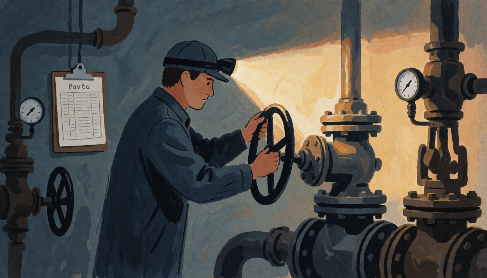
In 2011, Bilprovningen carried out vehicle inspections across Sweden. It inspected about 5.5 million vehicles a year, so on an ordinary weekday around 20,000 cars and lorries drove into its 180 inspection stations. Every inspection ended the same way: the inspector entered the result into a computer system, and the system did the rest.
On Friday 25 November 2011, a storage system failed at the IT supplier Tieto and took Bilprovningen's IT with it. Chapter 6 followed that outage through the supplier chain. Here we stay at the inspection stations. On Monday 28 November, they opened without their system. Only the telephones worked. The inspectors switched to recording every result by hand, with pen and paper, and kept inspecting. The work went slower, and later every paper result had to be typed into the system, which cost a great deal of extra work. But cars were inspected all week, until the stations had working IT again on Monday 5 December.
The inspectors could carry on because the job itself, checking brakes, lights and rust, never needed the computer. Only the record did. This chapter asks the same of your own organisation. Which parts of your important services could people carry on by hand? And what would they need to know, and be allowed to do, to manage it?
This chapter is about the manual way of running chapter 9's minimum service, the backup least likely to fail together with a computer system (chapter 10). It is also about the decisions people must make when the usual chain of command is out of reach.
Inspections without IT
Bilprovningen's week on paper shows both halves of a manual mode. One half worked well; the other caused harm to people who had nothing to do with Bilprovningen.
The half that worked was the inspection itself. An inspector does not need a computer to see that a brake is worn, and the checks, the skills and the stations were all still there. The inspectors needed a way to record results, and paper was enough. They also knew what the record was for, proof that a car had passed, so they could carry on without being told exactly how.
The half that did not work was everything that flowed out of the inspection. Normally, Bilprovningen's system sent every passed inspection to Transportstyrelsen, the agency that keeps the national vehicle register. Those reports stopped, so the register saw cars whose inspection deadline had passed with no result, and banned them from the road. The paper forms in the stations could not reach the register, and nobody had planned for that.
So a manual mode covers a whole service, including what the service sends to others. A paper form that keeps the work going inside is only half a fallback if the people outside depend on the result.
Manual modes are planned in advance
Bilprovningen was lucky that its main task needed no computer. Where the task itself needs systems, the manual mode must be built in advance. The aluminium company Norsk Hydro, whose attack opened chapter 7, shows what that looks like at scale.
Just after midnight on 19 March 2019, Hydro detected ransomware spreading through its network. It disconnected all servers and PCs throughout the company, worldwide: about 35,000 employees in 40 countries and some 170 sites. Hydro told its plants to switch to manual operations and procedures as far as they could. It also set up other channels to talk to staff and the public, because its normal ones were gone.
How far the plants could go depended on the plant. Hydro's smelters and power plants kept running, with more manual work than usual, because their processes could be run from local controls by experienced staff. The plants that shape aluminium into products had a harder time. They depended on production systems to know what to make and for whom, and several of them stopped until workarounds were found. Within two weeks, production had stabilised through workarounds and manual procedures while the company rebuilt its IT from backups. By 12 April, four of the five business areas were producing at normal speed with manual workarounds, and the fifth, Extruded Solutions, was at 85–90% of normal output. The cost, NOK 300–350 million for the first week and about NOK 650–750 million for 2019, is in chapter 7. How well a manual mode works is decided before the attack: by which processes can run locally, and by whether people know how to run them.
Sources: Hydro, "The cyber attack on Hydro in brief" (12 April 2019); Hydro, fourth-quarter report 2019.
Hydro's smelters, Bilprovningen's inspectors and Regionverket's waterworks on local control have the same shape. The manual mode that works is ordinary work under worse conditions: the same people doing the same job, with a local panel where the central system was and a paper form where the screen was. The inspectors did not become a different organisation for a week; they inspected cars and wrote on paper. Every unfamiliar step added to the bad day is one more thing that must work at 03:00 with tired people and dead phones. So design the manual mode to keep as much ordinary work as possible, and practise the difference: the paper form, the radio, the local panel, the handover of the backlog.
That difference is written down beforehand as a downtime procedure. Hospitals have used downtime procedures for years, because their records systems go down for maintenance and their patients cannot wait.
The procedure needs physical things to work with, best kept together in a downtime kit that sits where the work is done. The kit should be boring and easy to check:
In the kit
Why
At Regionverket's control room
The printed downtime procedure
The system that holds it may be gone
How to run each waterworks and heating plant on local control
Every decision and reading must be recorded for later
Shift log, readings sheet, decision log
Latest key data, printed
Decisions need numbers the system normally shows
Reservoir levels, priority customers, valve maps
A way to talk
Normal phones and chat may share the outage
Radio, a mobile from another operator, a satellite phone
A date on the cover
An out-of-date list or table misleads
Checked every quarter, by a named person
A downtime kit. Everything in it is something the system usually provides, printed or replaced in advance.
A kit on the shelf is the organisation's claim that it can work by hand. The question to put to it is whether the operators on duty tonight could run both waterworks from the local panels with what is in the kit. If the honest answer is no: where must Regionverket be, and who gets it there, by when and at what cost? The drill at the end of this chapter checks the answer.
What if the procedure does not fit?
A downtime procedure tells people what to do in the situations someone foresaw. Real disruptions bring situations nobody foresaw, and then people need to know what the procedure was for, so they can decide for themselves.
Armed forces met this problem long ago. Orders are written before a battle, the battle soon goes differently, and the officer who wrote the order cannot be reached. So modern military doctrine asks commanders to state their intent with every order. Mission command is the US Army's name for leading through orders that state intent. Its doctrine describes intent as a clear and concise expression of the purpose of the operation and the desired end state. If the plan stops fitting the situation, subordinates act to achieve the intent.
An intent has three parts. The purpose says why the service exists, in terms of the people it serves. The end state says what "good enough" looks like during a disruption. The limits say what must never happen, whatever else gives way. An intent fits on half a page, and it is written by whoever would normally make the decision.
Part
Regionverket's drinking water
Purpose
Safe drinking water for the 140,000 people in the region, with priority for the hospital, care homes and the schools on our list
End state in a disruption
Water in the pipes that is safe to drink. If we cannot achieve that, people are told within an hour, and emergency water reaches the priority list first
Limits
Never send water into the network that has not been disinfected. Never drain the reservoirs below the level needed for firefighting. Always tell the municipality before telling the public
You may
Switch either waterworks to local control, reduce pressure, close parts of the network and call in off-duty staff, without asking first. Write down what you did and why
An intent for one service, on half a page. The last row turns the intent into authority, which the next section is about.
Authority that survives a broken chain
An intent only helps if people are allowed to act on it. In most organisations, big decisions are made by named managers, and the person on the night shift is expected to call one of them. When the phones, the chat and the login are all gone, that call may never connect, so the authority to act must already be with the person on duty.
Ukraine's power grid gives an example of people acting by hand when remote control was gone. On 23 December 2015, attackers took over the control systems of three regional electricity companies. From about 15:35 local time, they opened circuit breakers remotely and cut power to about 225,000 customers. They also destroyed the software in the devices that linked the control rooms to the substations, so the companies could no longer switch the power back on from the control room. Staff went out to the substations and restored power by switching by hand. The outages lasted several hours, and for a long time afterwards the companies ran with reduced remote control.
Restoring power by hand was possible because two things were already in place: the substations could still be operated locally, and staff knew how to do it and were allowed to. Neither could have been arranged on the evening of the attack.
The same applies at Regionverket. The operator who cannot log in at 06:40 on a February Monday should not have to wait for a manager before switching the heating plant to local control. That decision is made in advance, written into the intent's "you may" row, and known by every operator. Giving the person on duty that authority in advance and in writing is called pre-delegation. The path in the figure is what the operator follows:
flowchart TB
A["Plan no longer fits"] --> B{"Can I reach the decision-maker in time?"}
B -->|yes| C["Ask, then act"]
B -->|no| D{"Is the action within the intent and limits?"}
D -->|yes| E["Act, and log what and why"]
D -->|no| F["Hold a safe state and keep trying"]
A decision path for the person on duty. The intent and the limits are written in advance, so the answer to the second question does not depend on reaching anyone.
Weeks on paper
Most downtime procedures are written for hours. Bilprovningen needed a week, some organisations have needed far longer, and a manual mode that works for a day can break down in the third week.
Østre Toten is a municipality in Norway with about 15,000 inhabitants and, according to Norwegian press reports, about 1,300 employees. During the night of 9 January 2021, attackers encrypted its systems and deleted its backups. When the staff came to work, they had pen and paper and little else, and the municipality ran its services by hand for weeks while the systems were rebuilt. The Norwegian data protection authority, Datatilsynet, later fined the municipality NOK 4 million, for failings that included missing two-factor login and backups that were not protected against being deleted.
Weeks is long enough for the manual mode itself to wear out. Long manual modes fail in ways that short ones do not:
Supplies run out. Forms, printer toner, fuel, the batteries in the radios.
People tire. Manual work is slower, so the same staff do more hours, and the people who know the old way best are often few.
Information stops flowing. Paper does not travel between departments by itself, so each team ends up with its own picture.
The backlog grows. Every day on paper adds to the work of entering it afterwards.
The answer is to plan the manual mode in stages, the way chapter 9 planned the minimum service. The first day runs on the kit. The first week needs a rota, a supply run and a daily routine for moving the paper to whoever acts on it, such as field crews and billing. Otherwise the problems customers report sit in a pile. Beyond that, someone must decide what to stop doing altogether, such as routine billing questions, so the remaining manual work stays manageable.
Keeping manual skill alive
A manual mode depends on people who know how to work by hand, and that knowledge fades if it is not used. The better the systems work, the fewer people remember how to do without them.
In 1998, Winfred Arthur and colleagues combined the results of 53 studies of skill loss. They found substantial loss when skills were not used, growing with time, and large after more than a year. Physical tasks and tasks done at speed faded less; thinking tasks, and tasks where accuracy matters most, faded more. Running a waterworks from a local panel, with valve settings and dosing to get right, sounds like the second kind.
The evidence is thinner than it looks. Most of the studies were of trained tasks in laboratories, the military or medicine, and nobody has measured how fast the manual skills of a Swedish control room fade. Treat the research as a warning that skills fade and that a year without practice is a long time, and never as a precise schedule.
The practical answer is to use the skill regularly, on purpose. A manual drill is a planned hour or shift of real work done by hand, with the system still there as a safety net. At Regionverket, it could mean running one waterworks from its local panel for one hour each quarter, with the control room watching. The drill tests what the kit claims: whether the people on shift can do the unfamiliar part of the work, and whether the lists are current, the forms are there and the radio works. What it finds changes the kit, the procedure or the roster before the next drill. A plant where local control is used routinely has already made the fallback ordinary work, and the drill only has to cover what is still unfamiliar.
Deep dive Mission command, and its machine counterpart: static stability
The idea of intent comes from a style of military leadership that the US Army calls mission command, which grew from Prussian practice in the nineteenth century. Its current doctrine (ADP 6-0, 2019) describes mission command as using orders that state intent, so that subordinates can show disciplined initiative. The doctrine's argument is that a commander can never foresee everything, and that communications will fail. An organisation that depends on every decision reaching the top will stop when the line is cut.
Mission command also has costs, and its own doctrine admits them. It needs trust built in advance, competent people and a shared understanding of the situation; without those, initiative becomes improvisation and different teams pull in different directions. Better communications also tempt leaders to control more from the top, because they can. The same temptation exists in civilian organisations with good IT: when every operator can be reached instantly, nobody writes the intent.
Engineers have a close counterpart for machines, called static stability. Amazon's engineers use the term for a system that keeps doing what it was doing when one of the things it depends on fails. The parts that do the work keep their own copy of the instructions, so they need not ask a central controller to carry on. A plant that keeps running on its last settings when the control system disappears is statically stable. An intent written in advance plays the same role for people: each person keeps a copy of the instructions that matter.
Synthesis
Looking ahead
Working by hand is a fallback for when a system stops. Sometimes the system keeps working perfectly, and you are no longer allowed to use it. Chapter 12 asks what to do when a working system is forbidden, and how to leave a supplier you cannot keep.
Further reading
MSB, Reflektioner kring samhällets skydd och beredskap vid allvarliga it-incidenter (MSB 367-12, 2012). The Swedish civil contingencies agency's account of the Tieto outage, including Bilprovningen's week on paper. In Swedish.
Norsk Hydro, "The cyber attack on Hydro in brief" (12 April 2019) and the company's later updates. A short, factual timeline of how a global manufacturer switched to manual operations.
E-ISAC and SANS ICS, Analysis of the Cyber Attack on the Ukrainian Power Grid (18 March 2016). How the attack worked and how operators restored power by hand.
US Department of the Army, ADP 6-0: Mission Command (2019). The doctrine behind intent and disciplined initiative, readable for civilians.
W. Arthur Jr., W. Bennett Jr., P. L. Stanush and T. L. McNelly, "Factors That Influence Skill Decay and Retention: A Quantitative Review and Analysis", Human Performance 11(1) (1998). The main review of how skills fade without use.
B. Weiss and M. Furr, "Static stability using Availability Zones", Amazon Builders' Library. The engineering counterpart of an intent, explained for system designers.
Chapter 12
What If a Working System Is Forbidden?
Leaving a supplier you are no longer allowed to keep
Transportstyrelsen is the Swedish Transport Agency. Among other things, it keeps the national vehicle register and the driving licence register, which hold information about almost everyone in the country. In April 2015 the agency signed a contract with IBM to run its IT operations, and IBM took over on 1 November 2015. Part of the work was to be done by IBM companies and subcontractors in other countries, including the Czech Republic and Romania.
The systems kept running, but Swedish law did not allow the arrangement. Some of the information was protected by Sweden's security protection law, and people who handle it must be security vetted. Swedish vetting does not work for foreign citizens living abroad, because the checks are made against Swedish registers. To get the outsourcing done on time, the agency's director general made exceptions from the law.
In September 2016, IBM told the agency that it could no longer guarantee the agreed service levels, because the vetting process did not work for its foreign staff. The agency now had a contract it could not legally use as intended. It looked at three ways out, and its own analysis said that none would solve the problem within two to three years.
The story became public in July 2017. IBM's contract was changed so that operations were run from Sweden, which raised its cost for 2016–2020 from 400 to 590 million kronor. From November 2024, more than seven years after the story broke, Transportstyrelsen's IT operations have been run mainly by its own staff. This chapter is about the agency's situation: a system works, but you are no longer allowed to use it. How do you leave, and how long does it take?
The Forbidden prompt from chapter 6 is a dependency that still works but that you may no longer use. The example was Amsterdam Trade Bank, cut off from its cloud services by sanctions. This chapter asks how to prepare for that, starting with the question every exit depends on: what would you actually take with you?
Seven years to leave
The government asked a senior judge to investigate, and the inquiry's report was published in 2018 (Ds 2018:6). Its dates show how quickly a working arrangement becomes forbidden, and how slowly an organisation leaves it.
When
What happened
14 April 2015
Contract with IBM signed. Hand-over planned for 1 September 2015
Autumn 2015
Staff at a subcontractor in Serbia are given access to the agency's systems before the subcontractor is approved and before any security agreement is signed
1 November 2015
IBM takes over IT operations, two months late
6 September 2016
IBM says it can no longer guarantee the agreed service, because foreign staff cannot be vetted
July 2017
The case becomes public
September 2017
Media report that running operations from Sweden has raised IBM's contract from 400 to 590 million kronor for 2016–2020
November 2024
IT operations run mainly by the agency's own staff
From signed contract to own operations took nine and a half years. Most of that time was spent leaving an arrangement that broke the law.
Why was there no quick way out? The inquiry describes the agency's three options. Demanding that IBM deliver from Sweden with vetted staff meant changing a procured contract, with legal and commercial risks. Ending the contract and buying the service again meant a new procurement, a cost for leaving the existing contract, and the risk that nobody would bid against such strict requirements. Ending the contract and running IT in-house meant building a whole operations organisation from scratch, and nobody knew how long that would take. The analysis judged it the most expensive option.
All three were slow for the same reason: the agency could not leave with the people and equipment it had. It lacked a copy of everything it ran, in a form someone else could use, and the people who knew how to run it. Those take years to build if you start when you need them.
Three ways a working system becomes forbidden
A dependency becomes forbidden when someone with the power to decide says you may no longer use it. The system itself does not change, so there is no alarm and no error message, only a letter, a law or a list.
Your own country's law
Transportstyrelsen's case came from inside Sweden, and so did the next one. In October 2020, the Swedish Post and Telecom Authority, PTS, let four operators bid for new 5G frequencies on one condition. Products from Huawei and ZTE, two Chinese makers of telecom equipment, must not be used in new installations. Existing equipment in central functions had to be phased out by 1 January 2025. Huawei appealed and lost in two courts. The operators had to replace equipment that worked, on a timetable set by the authority.
Swedish law has since tightened the rules on outsourcing. Since 2021, an organisation that wants to hand security-sensitive activity to a supplier must first assess whether that is suitable. If the activity involves information classified as secret or higher, it must also consult the supervisory authority. The authority can order the procurement to stop. For many organisations, the first thing that can forbid a supplier is their own security classification. Appendix C keeps the dated detail.
Sanctions and export rules
Sanctions can forbid a supplier to serve you, or forbid you to use a supplier. In the first case the customer is the target, as with Amsterdam Trade Bank, cut off from Microsoft's cloud within a week of US sanctions in April 2022. In the second the supplier is the target. On 20 June 2024, the US Department of Commerce decided that the Russian company Kaspersky could no longer sell its security software in the United States. From 29 September 2024 it could no longer send updates to its American customers. Their antivirus software worked on the last day as well as on the first. After that it was forbidden, and without updates it would soon be useless.
Another country's law
The third way is the least visible. A supplier based in another country must obey that country's law, wherever your data is stored. The US CLOUD Act of 2018 requires American providers to hand over data they control when US authorities lawfully ask, even if the data is stored outside the United States. On 10 June 2025, a French Senate committee questioned Microsoft France's director of public and legal affairs under oath. Could he guarantee that French citizens' data would never be passed to US authorities without French approval? He answered that he could not.
Another country's sanctions can also reach you through a supplier. In February 2025 the United States put sanctions on the chief prosecutor of the International Criminal Court in The Hague. In May 2025, the news agency AP reported that Microsoft had cancelled the prosecutor's e-mail account. Microsoft disputes this account. Its president said in June that the company had not stopped its services to the court, and described what happened as a disconnection of one sanctioned official. Later in 2025, the court was reported to have decided to move from Microsoft to openDesk, an open-source office suite backed by the German government. The case is disputed and may never be fully clear, but the mechanism is not. A supplier subject to a foreign government's sanctions may have to stop serving a person or organisation, and you would have little say in the matter. Plan for the mechanism, not for the headline.
Three things you must take with you
Leaving a supplier usually means, in people's minds, getting the data out. Data is one of three things you need, and often the easiest. An exit is complete only when you have all three.
The data. You need a complete copy, in a format another system can read, and the right to take it. For Regionverket's billing system, that means the customer register, the meter readings, the invoices, the payments and the history of each account. A monthly export file that nobody has ever opened elsewhere is a hope, not a copy.
The function. Something must do the job the old system did: another product, another supplier, your own staff, or a manual fallback for a while. Finding and buying a replacement takes months in a public organisation, because procurement has rules and deadlines, and setting it up takes more months.
The knowledge. Every system contains decisions that someone once made: tariffs, discount rules, how a meter fault is handled, which customers are billed monthly. Over the years these move from people's heads into the system's settings, and the people move on. When you leave, you must take the rules as well as the records. Transportstyrelsen had to rebuild exactly this: a whole team that knew how to run its systems.
Part of the exit
What it means
Typical lead time
Data
A copy, in a format you can use, and the right to take it
Weeks
Function
Something else that does the job
Months
Knowledge
The rules, the settings, and the people who understand them
Months to years
The three parts of an exit, with typical lead times. The data is the fastest part, and the one most plans stop at.
Could we leave today?
A full exit plan can run to many pages, and a plan is not the same as being able to leave. The question to answer first, for each critical supplier, has three steps. Could we leave today, with the people and equipment we have? If not, where must we be? And how do we get there, with an owner, a date and a cost? This book keeps the answer on one page per supplier and calls it an exit card. It is filed with the service card from chapter 4 and the prompt matrix from chapter 6. Here is the card for Regionverket's billing system, as first filled in:
Field
Regionverket billing
Service and supplier
Billing of water and heat; cloud service from a Nordic software company, hosted with a large US cloud provider
Whose law applies
Supplier in the EU; its cloud provider is US-based, so US law can reach the data
The data
Monthly export of customers and invoices, as CSV files. Meter history and payment matching not included. Never imported anywhere
The function
No alternative product identified. Manual fallback: estimated bills based on last year, for up to three months
The knowledge
Tariff rules set up by the supplier's consultant in 2021; one person at Regionverket understands them
Contract
Six months' notice; the supplier helps with exit "at current consultancy rates"; data deleted 30 days after the contract ends
Time to leave
Unknown. Rough estimate: 12–18 months, including procurement
Trigger and owner
Head of finance decides to start an exit; nobody named to run it
A first exit card. Its value is in the gaps it shows: no tested import, no alternative, knowledge held by one person, and data deleted soon after the contract ends.
The honest answer to the first question is no. Before the card was written, Regionverket believed it could leave the billing system because it had a monthly export. The card shows that the export is incomplete and untested, that nothing could take over the function, and that the rules live with one person and one consultant. The second and third questions follow from each gap: a tested import, an alternative product or supplier, the tariff rules written down and understood by a second person, and someone named to run an exit. Each becomes an action with an owner and a date, or a risk someone has accepted in writing.
The "Whose law applies" row needs a question to the supplier too. Which cloud provider and which countries does it use? Could it move to a provider under EU law only? What would it do if its provider had to stop serving it?
Test the export
Every supplier will tell you that you can get your data out. The only way to know is to try. An export can fail in quiet ways: fields missing, histories cut off, codes that only the old system understands, files too large to open. Each is found in an afternoon on an ordinary day, and in a panic on the day you must leave.
A useful test has four steps. Take a full export and load it into something else, even a spreadsheet or a test database. Check that you can answer real questions from it, such as "what does customer 10432 owe, and why?" Then record how long it took and what was missing. At Regionverket, the first test found that the export had no meter history at all, so a new system could not have calculated a single correct bill. The finding turned "we have an export" on the card into an action with an owner, which is what the test is for.
Testing the function and the knowledge is harder, but the same idea applies. Ask the one person who understands the tariff rules to write them down, and ask someone else to check a bill by hand from that description alone. Ask a second supplier for a rough plan and time estimate to take over. Neither costs much, and both turn the "Time to leave" row from a guess into an estimate.
When the cloud is the lifeboat
So far this chapter has treated foreign suppliers as a risk. Ukraine's experience in 2022 shows the other side. Until early 2022, Ukrainian law required much government data to be stored on servers inside Ukraine. A week before Russia's full-scale invasion on 24 February, Ukraine's parliament changed the law to allow government and private data to be moved to the cloud.
The change came just in time. In the first days of the war, Ukraine's government worked with Amazon Web Services to move its most important registers out of the country. These were the population register, land and property records, tax records and education records. Rugged storage devices were flown in through Poland, filled with data and taken out again. Government servers in Ukraine were within reach of missiles and attackers; the copies abroad were not.
The ability to run the state on a foreign company's computers kept its records alive. The dependency that is a Forbidden risk in peacetime was a lifeline in war. What made it usable was the ability to move quickly and a law that allowed it.
Sovereignty is a range of choices. Keeping everything in-house, under Swedish law, protects against the Forbidden prompt. It can also expose you more to Gone and Long, if all your systems sit in one building in one country. Using a foreign cloud does the opposite. Neither choice is safe in every scenario; what protects you in both is knowing how you would move, and having tested it.
Deep dive The CLOUD Act, Schrems II and DORA Article 28
Three legal texts shape the Forbidden prompt for European organisations that use American suppliers; Appendix C keeps their dates and case numbers. The US CLOUD Act, the Clarifying Lawful Overseas Use of Data Act of March 2018, covers data in a US provider's "possession, custody, or control". Served with a lawful order, the provider must preserve and disclose it "regardless of whether" it is stored inside or outside the United States. It can challenge an order in some circumstances, for example when it conflicts with the law of a country that has an agreement with the US. An EU data centre of a US provider therefore does not, on its own, put data out of reach of US authorities.
Schrems II (Court of Justice of the EU, 16 July 2020, case C-311/18) found that US surveillance law did not give Europeans protection equivalent to EU law. It struck down the Privacy Shield, the arrangement many companies relied on for sending personal data to the US. Standard contract clauses remained valid, but only if the exporter checks that the data is protected in practice. In July 2023 the European Commission adopted a new arrangement, the EU–US Data Privacy Framework, and the EU's General Court upheld it in September 2025. The Court of Justice has struck down two earlier arrangements, so an organisation that depends on this one should know what it would do if it fell.
DORA, the Digital Operational Resilience Act (Regulation (EU) 2022/2554, applying from 17 January 2025), covers banks, insurers and other financial firms. Article 28(8) requires exit strategies for ICT services that support critical or important functions. They must take account of a provider failing, its service getting worse and the arrangement ending, and they must be documented and tested. Regionverket is not covered by DORA, but the requirement is a good template for any organisation that wants to take exits seriously. Under all three texts the practical question is the one on the exit card: how long would it take us to move, and have we tried?
Synthesis
Looking ahead
Leaving a supplier means starting again somewhere else. So does recovering from an attack that leaves your own systems untrustworthy. In both cases, the question is the same: in what order do you bring things back, and how do you know they are clean? Chapter 13 asks how to start again.
Further reading
Granskning av Transportstyrelsens upphandling av it-drift (Ds 2018:6). The inquiry's detailed account of the outsourcing, the exceptions from the law and the agency's options. In Swedish.
Regulation (EU) 2022/2554 on digital operational resilience for the financial sector (DORA), Article 28. The clearest legal text on exit strategies, useful outside finance too.
Court of Justice of the European Union, judgment of 16 July 2020, Data Protection Commissioner v Facebook Ireland and Maximillian Schrems (C-311/18). The Schrems II ruling.
US Bureau of Industry and Security, Final Determination on Kaspersky Lab (20 June 2024). A short, official example of a working product becoming forbidden on a set date.
Rechtbank Amsterdam, ECLI:NL:RBAMS:2022:4452 (2022). The court ruling on Amsterdam Trade Bank's access to its own data. In Dutch.
Chapter 13
How Do We Start Again?
Rebuilding when you can't trust what's left
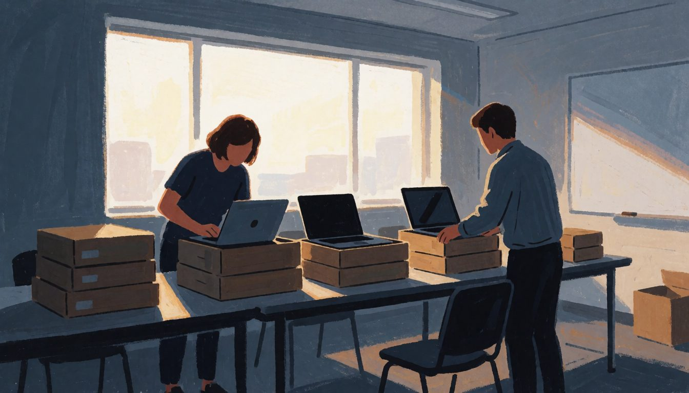
A.P. Møller-Maersk is one of the largest shipping companies in the world. On Tuesday 27 June 2017, a piece of malware later named NotPetya came in through accounting software installed on one computer in Maersk's office in Odessa, Ukraine. Within hours it spread through Maersk's network and wiped its computers. The ports that Maersk ran stopped working at 17 of its 76 terminals. Gates were down, cranes stood still, and trucks were turned away.
Maersk set up a recovery centre in its IT office in Maidenhead, west of London. The team there soon found backups of almost all its servers, between three and seven days old. What they could not find was a copy of the domain controllers: the servers that hold every user account and decide who may log in to what. Maersk had about 150 of them, set up to copy their data to each other so that any one could replace the others. For that reason nobody had backed them up. NotPetya wiped every one that was on the network. As one Maersk IT worker remembered thinking, "If we can't recover our domain controllers, we can't recover anything."
After calling IT staff around the world, the team found one domain controller that had survived, in an office in Ghana. A power cut had knocked it offline before the attack, so the malware never reached it. The network link from Ghana was too slow to copy it to the UK, and nobody in the Ghana office had a British visa. So one employee flew from Ghana to Nigeria with the hard drive and handed it to a colleague at the airport, who flew on to Heathrow. Only then could Maersk start to rebuild.
Maersk's domain controllers were the spares that copy each other and fail together, from chapter 10. This chapter is about the Recover stage of the loop: what you do once the damage is done and you have to start again.
One server in Ghana
With the drive from Ghana in Maidenhead, the rebuild could start. Maersk's recovery centre ran around the clock. Up to 400 Maersk staff and as many as 200 consultants from Deloitte worked there. All the old computers were confiscated, in case they spread the malware again, and staff bought new laptops and Wi-Fi hotspots from local shops.
The ports, meanwhile, kept going by hand as far as they could. Staff taped paper documents to containers and took orders through personal Gmail accounts, WhatsApp and Excel. "I can tell you it's a fairly bizarre experience to find yourself booking 500 shipping containers via WhatsApp, but that's what we did," one customer told Wired. The workaround was ordinary work under worse conditions: the same bookings, on tools the staff and their customers already used every day. That is the shape a fallback should have. What has to be practised is the difference. For the ports, that was how to book without the system and how to keep track of what had been booked.
Maersk's chairman, Jim Hagemann Snabe, later described the result at the World Economic Forum in Davos in January 2018. In about ten days, the company reinstalled its entire network: 4,000 servers and 45,000 PCs. Snabe credited "human resilience". He said shipping volume fell by only about 20 percent during the outage, thanks to the manual workarounds. The full recovery took longer. Some of the Maidenhead staff kept working day and night for close to two months to rebuild Maersk's software. The company's own first estimate of the cost, in its interim report of August 2017, was USD 200–300 million.
Two things in the story decide the rest of this chapter. A whole global company waited for one kind of data, the list of who is allowed to do what. Without it, none of the restored servers would have let anyone in. And copies that stay in step with each other also stay in step with the damage. The other 149 domain controllers were online, connected and up to date, which is exactly why they were lost. The one that saved Maersk survived because it was disconnected, and it was disconnected by accident. Nothing in the plan would have kept it safe.
Source: Andy Greenberg, "The Untold Story of NotPetya, the Most Devastating Cyberattack in History", Wired, 22 August 2018, based on interviews.
Restore or rebuild?
There are two ways to bring a system back, and they assume different things about what you have left.
To restore is to put the system back the way it was, from a copy. You take last night's backup and load it onto the same kind of equipment. Restoring works well after an accident: a disk fails, a file is deleted, a server room floods. The copy is good, and the only problem is getting it back in place.
To rebuild is to set the system up again from clean parts: new or wiped equipment, software installed from the vendor, settings applied from a written record. Then you bring in only the data you can trust. Rebuilding is slower, but it is often the only safe option after an attack. An attacker who has been inside your network for weeks may have changed settings, created hidden accounts or planted programs that start again when you restore. If you restore the whole server, you restore the attacker too.
Restore
Rebuild
What you start from
A copy of the system as it was
Clean equipment, software from the vendor, written settings
What you assume
The copy is good
Nothing on the old systems can be trusted
Typical cause
Hardware failure, mistake, fire, flood
Attack, or damage you cannot see the edges of
Speed
Hours to days
Days to months
What you need in advance
Working backups and something to restore them onto
Installation media, licences, written settings, people who know how, and clean backups of data
Most real recoveries mix the two: you rebuild the systems and restore the data. Maersk rebuilt its servers and PCs from scratch, and restored the account data from the copy in Ghana. The British Library did the same. It decided that its old servers could not be trusted and rebuilt on new equipment, and it had to check each set of data before loading it. In its own words, "each dataset will need to be validated to ensure its integrity before being restored on the Library's new infrastructure."
That sentence answers part of this chapter's essential question. Data comes back only once someone has checked two things. The first is that it is not damaged, for example that encryption by the attacker has not reached the copy. The second is that it does not carry the attack with it. Chapter 7 called this effect class "data can't be trusted". It is the hardest one to recover from, because the copy you would restore from may be part of the problem.
What comes back first?
Systems cannot all come back at once, and they cannot come back in any order, because each needs the ones below it. A billing system needs a database, the database needs a server, the server needs a network, and the people who log in need accounts. The dependency map from chapter 6 tells you the order: the things at the bottom come first.
At the bottom of almost every map is identity: the service that knows who every user is and what they may do. In Maersk's case it was the domain controllers. At Regionverket it is the cloud login service that sits under almost every system. Until identity works, nobody can log in to restore anything else. And until you trust it, nothing you rebuild on top of it can be trusted either, because an attacker with an administrator account can undo your work.
The order that most recovery guides follow looks like this:
flowchart TB
A["Step 1: A clean place to work separate network, clean laptops"] --> B["Step 2: Network and name lookup"]
B --> C["Step 3: Identity accounts and administrator rights"]
C --> D["Step 4: Backup system and checked data"]
D --> E["Step 5: Systems that keep people safe"]
E --> F["Step 6: Systems that bring in money"]
F --> G["Step 7: Everything else"]
A typical restore order. Each step needs the ones above it. Identity comes before the systems people actually use, because nothing can be rebuilt safely without it.
Two steps are easy to forget. Before you rebuild anything, you need somewhere safe to work from: a separate network, clean computers, and a way for the recovery team to talk that does not run through the damaged systems. Maersk bought new laptops and Wi-Fi hotspots in Maidenhead for exactly this reason. And the backup system is itself a system, with its own server, software and accounts, and it must work before you can restore anything from it.
Steps five to seven come from your own priorities. The ranking of services by how fast their loss hurts people, from chapter 4, is your restore order once the foundations are back.
Backups need somewhere to land
Most organisations count their backups as their recovery plan. The British Library, from chapter 3, shows what that misses. The Library had secure copies of all its digital collections. What it lacked, in its own words, was "viable infrastructure on which to restore it", because the attackers had destroyed servers to make recovery harder. Work to rebuild that infrastructure began in December 2023 and was planned to finish in mid-April 2024. Only after that could the phased restoration of systems start. The Library had approved and bought the equipment before the attack; without that earlier purchase, the wait would have been longer still.
A backup is useful only if four things are true at the same time. The copy exists and is clean, and there is equipment to load it onto. There are software and licences that can read it, and there are people who know how to do it. Each of these can fail in a crisis.
The copy itself must survive the attack. Maersk's synchronised domain controllers did not, because they were online. Attackers now look for backups first and delete or encrypt them before they set off the main attack. Two kinds of copy resist this. An offline backup is a tape in a safe or a disk in a drawer; the Ghana server was one by accident. An immutable backup stays online, which makes it faster to use, but its protection depends on the storage working as promised.
The equipment is the second condition, and it has the longest lead time: servers, network equipment and licences can take months to deliver. A cloud provider can sometimes supply equipment within hours, but only if you have an account, a tested way to load your backups there, and someone who has done it before.
The people are the fourth condition. A small IT team, like Regionverket's, may know how to restore one server from backup. Rebuilding an entire identity service from nothing is a different task, done perhaps once in a career. Maersk filled the gap with hundreds of consultants. A smaller organisation needs to know in advance whom it would call, and whether that firm would have time for it on the same day as many other customers.
Deep dive Clean rooms and the NIST recovery guide
A clean room, sometimes called an isolated recovery environment, is a separate place to rebuild from. It has its own network, its own computers and its own administrator accounts, with no connection to the damaged systems. Data comes in only after it has been checked. Systems move out to normal use only once they are rebuilt and checked too. Some organisations build one in advance, in a cloud account kept apart from the everyday one. Others plan to set it up on the day, as Maersk did in Maidenhead. A permanent one costs money every year and must be kept up to date, or it will be out of step with the systems it is meant to rebuild. A plan to build one on the day is cheap, but it depends on equipment, people and time you may not have. Strength of evidence: the guides agree that you need a clean place to rebuild from; there is little published evidence on which of the two approaches recovers faster.
NIST's Guide for Cybersecurity Event Recovery (SP 800-184, December 2016) treats recovery as something to plan and practise long before it is needed. It splits recovery into a tactical phase, getting the damaged systems back, and a strategic phase, improving the organisation so the next event does less harm. It recommends deciding the order of recovery from the organisation's priorities and dependencies, testing recovery plans regularly, and knowing which data and systems you can trust before you bring them back.
Recovery runs for months
The crisis and the recovery are different jobs. In the crisis, a small team makes fast decisions to keep the essentials running. In the recovery, many teams rebuild and replace systems over months, and the decisions are about money, order and quality. A crisis team that keeps running the recovery keeps the organisation in emergency mode far longer than it can bear.
The British Library made this switch explicit. Its two crisis teams, called Gold and Silver, ran the response from the attack on 28 October 2023 until the situation stabilised in mid-January. On 20 December 2023, the Library's board approved a new recovery programme called Rebuild & Renew to take over the longer recovery. It had its own board and ran for 18 months, in three phases:
Phase
Length
What it does
Who leads
Respond
Days to weeks
Crisis management: contain the damage, keep the essentials running, decide what to rebuild
The crisis team
Adapt
6 months
Temporary solutions that restore services, internal processes and partnerships
A programme board, with a project for this phase
Renew
18 months
A new, more resilient infrastructure, and permanent solutions: upgraded systems or new ones
The same programme board, with its own project
The British Library's three phases ran at the same time, not one after the other. The temporary solutions of Adapt kept the Library working while Renew built what would replace them.
The Library also gave small fixes their own track inside Adapt, so that they would not get "lost" among the large projects.
A recovery programme also has to deal with systems that cannot come back. Some of the British Library's old systems were gone for good, because their vendor no longer supported them or because they would not run on the new, more secure equipment. Its main library services platform was one of them, and recovery meant replacing it. The Library's lesson eight puts it plainly: "'Legacy' systems are not just hard to maintain and secure, they are extremely hard to restore."
How long does it really take?
Every recovery plan contains a time: "billing restored within 48 hours". Few of those times have ever been measured; they are estimates made by adding up the time each step should take. Real recoveries take longer, for reasons that only appear when you try. The backup software needs a licence key that was in the old system. The person who knows the restore order is on holiday. The equipment arrives, but the network settings for it were stored on a server that is gone.
The only way to know is to rehearse the recovery and time it. A timed restore test takes one service and brings it back from its backups, onto spare or cloud equipment, using only what the plan says you would have. Somebody writes down when each step starts and ends, and where the team got stuck. The total is the real recovery time. It is almost always longer than the plan, and the gap is what the rehearsal is for. The test checks a capability the organisation believes it has, and each place the team got stuck becomes a change with an owner and a date.
Start small. Restore one server from an offline backup into a separate network, and time it. Then restore a whole service, such as billing, and check that the data is complete. Then, once a year, rehearse the hardest case: rebuilding identity from nothing. Most organisations have never done that, and their written plans assume it takes hours. Chapter 20 fits these rehearsals into a wider programme of exercises.
Synthesis
Looking ahead
This chapter ends Part III and its patterns for keeping services alive and getting them back. Each pattern depends on people who can talk to each other while the systems are down. The British Library's crisis team met on WhatsApp, and Maersk's customers booked containers the same way. Chapter 14 asks how you reach people when everything is down.
Further reading
Andy Greenberg, "The Untold Story of NotPetya, the Most Devastating Cyberattack in History", Wired (22 August 2018), and the book Sandworm (Doubleday, 2019). The source of the Maersk story, told through the people in the recovery centre.
British Library, Learning Lessons from the Cyber-Attack: British Library Cyber Incident Review (8 March 2024). Section Three describes the switch from crisis teams to the Rebuild & Renew programme; Section Four explains why old systems could not be restored.
NIST, Guide for Cybersecurity Event Recovery (SP 800-184, December 2016). How to plan, order and test a recovery, written for organisations rather than specialists.
Microsoft, Active Directory Forest Recovery Guide (Microsoft Learn). The step-by-step version of the hardest case in this chapter, for the engineers who would do it. See also Appendix D.
Part IV · The People Who Carry It
Part IV · Introduction
The People Who Carry It
Communication, command, staffing, money and the printed handbook
Every pattern in Part III depends on people: someone has to notice, decide, tell others, switch to the manual routine and keep doing it for weeks. Incident reviews return to the same human questions again and again. Who decided? How did people hear what to do? Who was still at work when the first week turned into the third? Who paid?
This part takes those questions one at a time. The chapters are practical, and most end with an exercise that a small group can run in under an hour.
The chapters:
Chapter 14, How Do We Reach People When Everything Is Down?: how each group, from staff to customers to authorities, hears what it needs when the usual channels are down
Chapter 15, Who Decides at 03:00?: who decides, how decisions are shared with others in the same crisis, and working with other organisations
Chapter 16, Who Is Still Working in Week Three?: staffing a disruption that lasts, including key people and fatigue
Chapter 17, Who Pays?: who pays and who helps: contracts, insurance, reserves and mutual aid
Chapter 18, What Does Everyone Do When There Is No Screen?: what every employee does when the systems are gone, and how to write that down so it can be printed and kept
Chapter 14
How Do We Reach People When Everything Is Down?
How each audience hears what it needs when systems fail
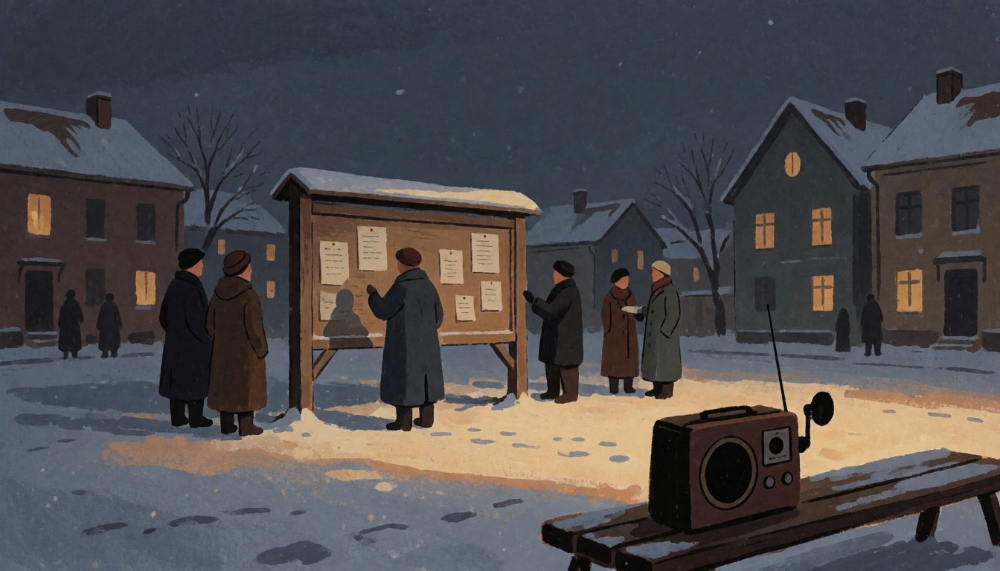
Rogers is one of Canada's three large telecom operators. Shortly before 05:00 on Friday 8 July 2022, Rogers' engineers made a planned change to routers in its network. The change removed a filter, and the network's central routers were flooded with more routing information than they could handle. They crashed. Mobile, home internet and landline services went down across the country at once, for more than 12 million customers. People could not call 911 from Rogers phones, and card payments through Interac, Canada's debit network, stopped working in shops. Many customers were without service for about fifteen hours, and some for longer.
The people who had to fix the outage had a problem of their own. Their work phones ran on Rogers' network, so they could not call each other. Some of them had SIM cards from the competitors Bell and Telus, handed out in 2015 under an emergency arrangement between the operators. That helped them talk. But staff working from home could not reach Rogers' systems either, and engineers had to travel to the sites where the routers stood. The review commissioned by the Canadian regulator found that this delayed the recovery.
Rogers is a telecom company, so its outage took its own phones with it. Most organisations are in a milder version of the same position. The phones, chat, e-mail and alerting tools they would use in a crisis run on the same mobile network, the same login and the same power as everything else.
Every pattern in Part III assumed that people could be told what to do: switch to paper, run the plant on local control, start the restore. That telling is itself a service with dependencies, and the prompts of chapter 6 apply to it. What happens to your call-out list if the mobile network is Gone, or your chat tool is Unreachable?
The phones were part of the outage
When an organisation's systems fail, the tools it uses to talk about the failure often fail with them. Three incidents from earlier chapters show the pattern, and how people got round it.
When the British Library was attacked in October 2023, its top crisis team had no e-mail on the first morning. It met at 10:00 that day by WhatsApp video call. With the website and intranet gone, the Library spoke to the public through its social media accounts. News for staff was passed down through e-mail where it worked and through WhatsApp.
The aluminium maker Norsk Hydro was hit by ransomware in the early hours of 19 March 2019, and the attack locked files on servers and PCs across the company. Its managers needed to tell 35,000 employees at 170 sites in 40 countries, fast, not to connect anything to the network. Hydro's computers were the problem, so they used paper and phones. Executives handwrote warning signs, one of which read, in part, "Please do not connect any devices to the Hydro network." They photographed the signs with their smartphones and texted the pictures to managers at plants around the world. At each plant, staff printed the signs and put them up at entrances, in stairwells and by the lifts. In the following days, Hydro held daily press conferences and webcasts, posted updates on Facebook, set up a temporary website and let journalists into its control rooms. Its openness earned it wide praise. Source: Microsoft, "Hackers hit Norsk Hydro with ransomware. The company responded with transparency" (16 December 2019), and Hydro's own account of the attack.
When Storm Gudrun cut power to 730,000 electricity customers in southern Sweden in January 2005, the phones went too. According to the Swedish parliament's follow-up report, more than a quarter of a million telephone subscribers could not use their phones. The batteries in mobile base stations lasted between two and eight hours. The emergency number 112 was overloaded and at times out of service, and safety alarms for elderly people living at home stopped working.
The channels that worked in these cases had two things in common. They did not depend on the thing that had failed. WhatsApp did not use the Library's servers, text messages did not use Hydro's network, and the SIM cards at Rogers used a different operator's network. In Gudrun, almost nothing that needed power worked for long, because power was what had failed. And they were ordinary. A personal phone, a text message and a sheet of paper are tools people use every day, so nobody had to learn anything at 05:00. A fallback should look as much as possible like ordinary work under worse conditions. What has to be practised is the difference, here which channel to pick up and whom to reach on it.
Six things communication has to do
"We need to communicate" can mean six different things in a crisis, going to different people at different speeds through different channels. Treating them as one job is why crisis plans so often have a single "communication" section that covers press releases and nothing else.
Job
What it is
At Regionverket
Direction
Telling people what to do, and who decided
"Run the heating plant on local control until 14:00"
Status
What is happening, what works, what does not
The situation picture (lägesbild) at each briefing
Coordination
Agreeing with other organisations who does what
With the municipalities about emergency water, with the region about care homes
Sensemaking
Working out together what is really going on
"Is this an attack or a fault? What would tell us?"
Meaning-making
Explaining to the public what it means for them, and why
"Your heating may be lower tonight. This is what to do."
Required reports
Reports the law requires, within set times
Incident reports to the authorities; a personal data breach report
Direction and status go mostly inside the organisation, where speed matters most. Coordination goes across organisations and needs a shared picture, which chapter 15 covers. Sensemaking happens inside the crisis team and needs a channel where people can talk back and forth. Meaning-making goes to the public and the media, where trust matters as much as speed. The crisis researchers Arjen Boin, Paul 't Hart and colleagues call it one of the core tasks of crisis leadership. The task is to give the public an account of what happened and what it means that people can believe.
Required reports have deadlines set by law. Under Sweden's Cybersecurity Act (cybersäkerhetslagen, SFS 2025:1506), an organisation covered by the law must send an early warning about a significant incident within 24 hours. A fuller report follows within 72 hours and a final report within a month. A personal data breach must be reported to the data protection authority within 72 hours under the GDPR. Appendix C keeps the dated detail. These reports go to specific authorities through specific channels, often web portals. Write down how you would send them if your own e-mail and login were gone.
Four ways to reach each audience
Military planners use a simple rule for communication: have four ways to reach someone, each with a different weakness. The four are called PACE, for primary, alternate, contingency and emergency. The primary channel is the one you normally use, and the alternate is almost as good. The contingency is slower or more awkward but still works, and the emergency channel is the last resort, often with no technology at all.
A call-out app, text messages, mobile calls and WhatsApp look like four channels, but all four run on the mobile network. If the mobile network is down, as it was for Rogers' customers and in Gudrun, all four go at once. This is the shared fate of chapter 3, applied to communication. A quick way to check is to draw what each channel stands on. Regionverket's first draft looked like this:
flowchart LR
P["Power"] --> M["Mobile network"]
P --> L["Cloud login"]
M --> A["Call-out app"]
M --> S["Text messages"]
L --> A
L --> T["Chat and e-mail"]
M --> W["WhatsApp group"]
Regionverket's first PACE plan for staff. The four channels looked separate, but three of them need the mobile network and two need the cloud login. A power cut lasting more than a few hours takes them all.
After the drawing, Regionverket rebuilt its plan so that each step from primary to emergency removes one dependency. For each audience it asked: what if the mobile network is gone, and what if the login is gone?
Audience
Primary
Alternate
Contingency
Emergency
Crisis team and control room
Mobile phones
Landline phones in the control room and at the plants
Radio, if Regionverket has joined Rakel, Sweden's radio network for emergency and preparedness work
Meet in person at the control room
All staff
Call-out app
Text messages from a list on paper
Phone tree: each manager calls their own team
Standing rule: if you cannot reach anyone, go to your normal workplace at the start of your next shift
The public
Website and social media
Local radio and the municipalities' channels
Important public message (VMA) through the authorities, for water that is unsafe to drink
Printed notices at emergency water points and in stairwells
Care homes and hospitals
Named contact by phone
Through the region's or municipality's crisis team
A visit by car from the nearest plant
Agreed in advance: if heat or water stops for more than two hours, assume it will last and start your own plan
Regionverket's PACE plan after the review. Each column down to the right removes one dependency. The emergency column needs no technology at all, only a rule that everyone knows in advance.
Each cell in the table is a claim that has to pass one question: could we reach this audience this way today, with the people and equipment we have? "If Regionverket has joined Rakel" is not yet a yes. For each cell that fails, the plan must say where Regionverket needs to be, and who gets it there, by when and at what cost.
The emergency column deserves the most thought. A standing rule, such as "go to your workplace", works when nothing else does, but only if everyone learned it beforehand, so it belongs in every new employee's introduction. Chapter 18 comes back to the printed handbook that carries rules like this.
Staff hear first
Staff answer the phone when customers call, meet the public at the door, and are asked by neighbours what is going on. If they learn about the crisis from the news, they cannot answer, and they lose trust in their own leaders. They are also the people you need to work long hours for weeks.
The British Library made this a rule. Its review says that staff always saw new statements to the public, such as press releases and blog posts by the chief executive, before the public did. That gave them time to digest the news before users started asking. The Library also worked closely with its trade unions, which took staff concerns to management and passed information and advice to affected staff at the grassroots level. In a crisis where staff personal data had been stolen, that second channel mattered. The rule costs almost nothing: any statement to the public goes to all staff first, even five minutes before, by the fastest staff channel that still works. It carries one line on what staff should say if a customer asks.
The Library's review is also honest about what was hard. In the early stages the Library had to control information tightly, so as not to help the attackers, and it could not say when services would return. That caused frustration among researchers and affected staff morale. Fast and trusted pulled against each other, and the Library chose to say less, and pay a price in frustration, rather than say something wrong.
A fixed rhythm of briefings
In the first hours of a crisis, everyone wants news, and the people who have it are too busy to give it. The usual result is a stream of interruptions to the crisis team and a vacuum outside it. A fixed rhythm solves both. The crisis team announces that it will give an update at set times, for example 08:00, 12:00 and 16:00, even if nothing has changed, and people stop asking in between.
Norsk Hydro's daily press conferences at its headquarters in Oslo and its daily webcasts, where senior staff answered questions, were this rhythm in public. Inside the organisation, each briefing follows the same order: what has happened since the last one, what works and what does not, what has been decided, and when the next briefing is. Saying "nothing new" at a fixed time builds more trust than silence.
Direction, the first of the six jobs, needs one more step. When a decision is passed on by phone or radio, the person receiving it repeats it back in their own words, and the sender confirms. This is called read-back; it comes from aviation and the military, where a misheard instruction can kill, and in a crisis it catches the misunderstandings that tired people make. "Run the plant on local control until 14:00" read back as "until 4" is a mistake you want to catch on the call, not at 16:00.
Does the call-out actually work?
A call-out list is a dependency like any other, and it decays: people change numbers, leave, go on parental leave or move to another team. The only way to know whether it works is to use it. A call-out test sends a message to everyone on the list, at a time they do not expect, and asks them to reply. You count how many replied within 30 minutes, within an hour and within four hours.
Start with the primary channel, because it is the easiest. Then test the alternate and contingency channels on their own, and time each one. Send the text messages from the paper list without the app, or run the phone tree with managers calling their teams. The first test usually finds wrong numbers, people who did not know they were on the list, and managers whose own team list was out of date. Each finding changes the list or the plan; a test that changes nothing was not worth the interruption.
Test the emergency channel too, in a tabletop exercise. Ask a group of new employees what they would do if they heard nothing from anyone after a storm. If their answers differ, the standing rule is not yet known, and it is not yet a channel.
Deep dive Rich and lean channels, and the CDC's six principles
Why did the British Library's crisis team insist on a video call, when e-mail had worked well every other day? The organisational researchers Richard Daft and Robert Lengel offered an answer in 1986 with their theory of media richness. Channels differ in how much they carry: tone of voice, facial expression, the chance to ask a question and get an answer at once. Face to face is the richest, then video, phone, written messages and finally bulk notices. Daft and Lengel argued that unclear, ambiguous situations need rich channels, while routine information can go by lean ones. A crisis team working out what is going on needs rich channels; a standing rule like "go to your workplace" can travel on the leanest of all, a printed card. The theory has been tested many times since, with mixed results: people often choose channels by habit, by what their colleagues use, or by what is available. Strength of evidence: that ambiguous problems are easier to solve in conversation is widely accepted; that people choose channels by richness is contested.
For communication with the public, the US Centers for Disease Control and Prevention (CDC) teach six principles in their Crisis and Emergency Risk Communication (CERC) programme. They are: be first, be right, be credible, express empathy, promote action and show respect. The first two pull against each other, which is the tension in this chapter's essential question. CERC's answer is to be first with what you know, say clearly what you do not know yet, and say when you will update. That is the fixed rhythm of briefings, seen from the public's side.
Synthesis
Looking ahead
Reaching people is half the problem. The other half is deciding what to tell them, and who has the right to decide. When several organisations are hit by the same failure, as in the attack on Tietoevry, each one sees only its own part. Chapter 15 asks who decides at 03:00.
Further reading
Xona Partners for the CRTC, Assessment of Rogers Networks for Resiliency and Reliability Following the 8 July 2022 Outage (executive summary, July 2024). How a single change took down a national network and why recovery was slow.
British Library, Learning Lessons from the Cyber-Attack (8 March 2024), Section Three. A short, honest account of crisis communication with users, staff and unions.
Microsoft, "Hackers hit Norsk Hydro with ransomware. The company responded with transparency" (16 December 2019). Hydro's communication in the first week, told by the people who did it.
Arjen Boin, Paul 't Hart, Eric Stern and Bengt Sundelius, The Politics of Crisis Management (2nd edition, Cambridge University Press, 2016). The standard text on sense-making and meaning-making as tasks of crisis leadership.
CDC, Crisis and Emergency Risk Communication (CERC) Manual (2014, updated online). Practical guidance on what to tell the public, when and how.
Richard Daft and Robert Lengel, "Organizational Information Requirements, Media Richness and Structural Design", Management Science 32(5), 1986. The original media richness paper.
Chapter 15
Who Decides at 03:00?
Command, coordination and collaboration
Tietoevry is one of the largest IT suppliers in the Nordic countries. In the night between 19 and 20 January 2024, ransomware hit one part of one of its Swedish data centres, and many of its customers lost services at once (chapter 1). The question for this chapter is who was in charge that night.
Statens servicecenter, the government's shared service centre, ran payroll for other agencies on Primula, one of the systems that went down. According to its annual report, the outage hit 126 of its customer agencies and about 62,000 government employees. It set up its crisis team and worked in close dialogue with both Tietoevry and the customer agencies throughout. Afterwards it evaluated its own handling, both internally and with outside help. Meanwhile, Tietoevry's other customers, among them the retailer Rusta and the cinema chain Filmstaden, each dealt with the same supplier about their own systems. Each organisation could see its own part of the damage. None of them could see the whole.
Ten days later, on 30 January, the minister for civil defence, Carl-Oskar Bohlin, gathered the heads of seven agencies to discuss the attack. The government's press release quoted the minister as saying that the agencies needed a common understanding of what had happened. This chapter is about reaching that understanding before the event instead of after it. In a crisis that hits many organisations at once, who decides, and how do they come to share one picture of what is going on?
Reaching people, the subject of chapter 14, is no use unless someone has decided what to tell them. This chapter covers the deciding: inside your organisation, and between organisations that share a problem but have no common boss.
Many customers, no shared picture
When a supplier is hit, each customer sees the incident from its own side. It knows which of its own systems are down, what its own contract says, and what the supplier chooses to tell it. It cannot see how many other customers are affected, which of them the supplier will help first, or whether the problem will grow.
The supplier sees more, but it has its own priorities: it is fighting the attack, protecting its reputation and answering hundreds of customers at once. In the Tieto outage of 2011 (chapter 6), the supplier itself decided to restore the pharmacy chain Apoteket first, and no authority had set that priority.
In the first hours of the 2024 attack, three questions mattered to many organisations at once, and none could answer alone:
Which important services in society are affected, across all the customers?
In what order will the supplier restore them, and who decides that order?
Is this a criminal attack on one supplier, or part of something larger?
Statens servicecenter's role shows one partial answer. It sat between the supplier and 126 customer agencies and could speak for all of them. It could also take a decision none of them could take alone, about how January's salaries would be paid. Its annual report says the salaries were paid as usual, which was partly luck, because the salary files had already gone to the bank. But the structure was right: one organisation with a mandate, a crisis team and a channel to every customer.
Roles before names
Inside one organisation, the question "who decides?" has a well-tested answer. You decide the roles in advance and name several people for each one. The roles exist whether or not the usual manager is reachable, so at 03:00 the person on duty knows which role they hold and what they may decide alone.
Most crisis organisations have three levels. The British emergency services call them Gold, Silver and Bronze, and many organisations have copied the names. The British Library used Gold and Silver teams during its attack, and they replaced normal management until mid-January.
flowchart LR
G["Gold (strategic): what are we trying to achieve?"] --> S["Silver (tactical): how do we achieve it?"]
S --> B1["Bronze: control room"]
S --> B2["Bronze: field teams"]
S --> B3["Bronze: IT recovery"]
G -.- L["Liaison to other organisations"]
S -.- P["Situation picture and decision log"]
The three levels of a crisis organisation. Gold sets the aim, Silver decides how to reach it, and Bronze does the work. Support roles keep the picture and the record, and keep in touch with other organisations.
Gold is the strategic level. It decides what the organisation is trying to achieve in the crisis, what it will give up, and what it will spend. At Regionverket, this is the chief executive or a deputy.
Silver is the tactical level. It turns Gold's aims into a plan and decides how to use the people and equipment available. At Regionverket, this is the crisis lead, normally the head of operations.
Bronze is the operational level: the people who do the work, such as the control room shift, the field teams and the IT team.
The US Incident Command System, used by American emergency services, adds a useful idea: a fixed set of roles beside the leader. The roles cover operations, planning and the situation picture, logistics, finance, communication and contact with other organisations. In a small organisation one person may hold several roles. What matters is that every role has an owner, and that the owner knows it.
Every role also needs deputies, and one is not enough. A crisis that runs for weeks needs shifts, and people fall ill, are on holiday or are hit by the same storm as everyone else. This book's suggestion is at least three people per role: the holder and two deputies. A roster with three names is a claim to check. Could each role be filled tonight, with the people on it? Does each of them know what they may decide alone? Where the answer is no, the roster needs a name, a date and an owner. The crisis structure is itself one of the largest differences between ordinary work and crisis work, used perhaps once in years. Working under it is therefore something an exercise has to test. Chapter 16 looks at staffing for weeks rather than hours.
How Sweden coordinates without a boss
Between organisations, usually nobody is in charge. A municipality cannot order an energy company to do anything, and an energy company cannot order its IT supplier to restore it first. Sweden's crisis system is built on this fact.
The starting point is the responsibility principle (ansvarsprincipen): whoever is responsible for something on an ordinary day is also responsible for it in a crisis. Regionverket remains responsible for heat and water when the storm comes. The municipality remains responsible for its care homes. Nobody takes over, and nobody can hand their responsibility to someone else.
That leaves a gap: organisations acting on their own responsibility may work against each other, compete for the same generators or tell the public different things. Sweden's answer is samverkan, which roughly means structured cooperation. MSB, the Swedish civil contingencies agency that is now the civil defence agency MCF, describes it in its guidance Gemensamma grunder, shared foundations for cooperation and command in disruptions to society. The full title is in the further reading. Organisations that cooperate try to reach two things:
Inriktning, or direction: a shared view of what they are trying to achieve together, for example "keep the care homes warm first".
Samordning, or coordination: dividing the work so that their actions fit together, for example who brings generators to which care home.
In practice this happens in regular meetings between the organisations involved, often led by the county administrative board (länsstyrelsen) at regional level. Each meeting starts with the situation, agrees the direction, divides the work and sets the next meeting. Nobody votes and nobody gives orders. The meeting works if the organisations come with a mandate to commit their own resources, and fails if they send someone who can only take notes.
A shared situation picture
No group can agree on direction if its members see different situations. The tool for seeing the same thing is the situation picture, in Swedish the lägesbild. It is a short, regularly updated description of what has happened, what it is causing, and what is being done. MSB describes it as information selected and put together to give an overview, an understanding, or a basis for decisions and actions.
A good situation picture keeps two kinds of statement apart. Facts are things someone has seen or confirmed: "the groundwater waterworks has been on backup power since 15:10". Assumptions are judgements and forecasts: "the fuel will last until Tuesday evening". Mixing them is how rumours become decisions. The support material that comes with MSB's Gemensamma grunder splits each heading into a fact part and an assumption part, for exactly this reason.
Heading
Facts (confirmed)
Assumptions (judged)
Event
Cloud login locked since 06:40; power cut in the north since 15:00
The attack began days earlier; power back within 48 hours
Consequences
North waterworks on backup power; 3 care homes report falling temperatures
Fuel lasts until Tuesday evening; more care homes affected by morning
Actions
Heating plant on local control; emergency water ordered for two areas
Fuel delivery possible Monday if roads are open
Resources
2 generators free; 14 field staff on shift
Half of the night shift unreachable
Actors and cooperation
Municipalities and region informed at 16:00
The county administrative board will call a meeting tonight
A situation picture for Regionverket, using the five headings of MSB's support material. Keeping confirmed facts and judged assumptions in separate columns shows the crisis team which decisions rest on guesses.
The situation picture also has to travel. Regionverket's picture feeds into the municipalities' pictures, which feed into the county's, which feeds into the national one. Each level combines the pictures below it into a combined situation picture (samlad lägesbild). For this to work, the organisations below must report at agreed times and in an agreed format, and the levels above must report back. A picture that only goes upwards stops being sent.
Customers of one supplier, together
The Swedish cooperation system was built for floods, storms and fires, where the organisations involved are mostly public, local and known to each other. In a supplier incident the customers may be agencies, companies and municipalities spread across the country, with nothing in common except the supplier. No county administrative board calls them together, because the problem has no geography.
Customers can still act together, if they prepare. The simplest step is to know who the other customers of your most important suppliers are. Some suppliers run user groups; some sectors have their own networks, such as the trade associations for water and energy companies. Agree a short list of contacts at other customers before anything happens. On the first day it lets you compare notes: what the supplier has told each of you, which systems are down, and what the queue looks like. A shared service centre such as Statens servicecenter already does this for its customers: one channel to the supplier, one picture of who is affected, and the mandate to act for all.
Two levels of working together are worth telling apart. When organisations coordinate, each keeps its own decisions and they share information so that their actions do not clash. When they collaborate, they make decisions together, share resources and accept a common plan. An example is a joint request to the supplier for a restore order based on harm to the public rather than on contract size. Collaboration is stronger, but it takes trust, mandates and time that do not appear on the day.
Deep dive From conflicted to edge: five ways organisations work together
NATO's research group SAS-065 published a maturity model for command and control in 2010, known as N2C2M2. It was written for military coalitions, where forces from several countries must work together without a single chain of command. It describes five approaches, from least to most joined up:
Conflicted: each organisation acts alone, and their actions may clash.
De-conflicted: they agree to stay out of each other's way, for example by dividing areas.
Coordinated: they share information and adjust their plans so that their actions support each other.
Collaborative: they plan together and share resources towards a common aim.
Edge: information and decisions flow freely, and the group organises itself around the problem.
The model's central claim is that no approach is best everywhere. A more joined-up approach handles complex, fast-changing problems better, but it needs more trust, more shared information and more practice. An organisation should therefore be able to move up the scale when the problem demands it, and not try to start at the top with partners it has never worked with. Strength of evidence: the model comes from experiments and simulations; it is widely cited but has had little testing in civilian crises. Seen through it, the Tietoevry customers mostly ended up between conflicted and de-conflicted: each dealt with the supplier alone. A user group with an agreed contact list would move them to coordinated, and a joint agreement on restore priorities to collaborative.
Decisions on the record
A crisis team makes dozens of decisions a day, on thin information and under pressure. Weeks later, someone will ask why it chose as it did: a board, an auditor, a journalist or a court. Memory will not be enough; the answer is a decision log, kept by someone whose only job in the meeting is to write it.
Each entry records the time, the decision, who made it, what the decision rested on (facts and assumptions, as in the situation picture), what alternatives were considered, and when it should be reviewed. A good log also records decisions not to act, such as "decided not to inform customers yet, because the scope is unknown; review at 16:00".
The log protects the people who decide: a choice that looks wrong afterwards often looks reasonable when you can see what was known at the time. Chapter 21 builds on this, because learning from an incident without blame depends on knowing what people knew when they acted. The British Library's Gold and Silver teams recorded practical lessons throughout the incident, so that they could be fed back into future practice and procedures.
Synthesis
Looking ahead
A roster with two deputies per role looks safe on paper. But in a crisis that runs for weeks, the deputies are needed too, and so are their families, their sleep and their own homes. Chapter 16 asks who is still working in week three.
Further reading
MSB, Gemensamma grunder för samverkan och ledning vid samhällsstörningar (the guidance and its support material, msb.se/samverkanledning). Sweden's shared approach to cooperation, direction and situation pictures. In Swedish.
Statens servicecenter, Årsredovisning 2024. Pages 25–26 describe the handling of the Primula outage for 126 customer agencies, and the internal and external evaluations that followed. In Swedish.
NATO SAS-065, NATO NEC C2 Maturity Model (CCRP, 2010). The five approaches from conflicted to edge, with the reasoning behind them.
Gary Klein, Paul Feltovich, Jeffrey Bradshaw and David Woods, "Common Ground and Coordination in Joint Activity", in Organizational Simulation (Wiley, 2005). Why people working together need a shared picture, and how it breaks down.
JESIP, Joint Doctrine: The Interoperability Framework (UK). The British approach to strategic, tactical and operational command across emergency services.
Chapter 16
Who Is Still Working in Week Three?
Staffing a crisis that lasts weeks, not hours
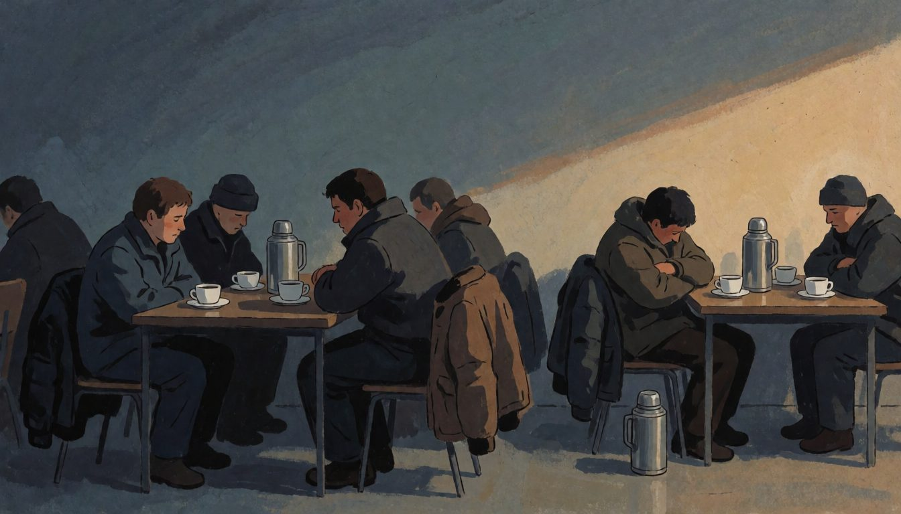
Norsk Hydro is the Norwegian aluminium company with about 35,000 employees in 40 countries. In the night of 19 March 2019, ransomware spread through its network, and it disconnected every server and PC it had (chapter 7). Its plants switched to manual procedures, and staff went back to paper (chapter 11). This chapter follows the people who did that work.
The first days went better than anyone could have hoped. Hydro said it was working around the clock with all the people it had, together with outside experts. Some of its machines had been automated for so long that nobody in the current workforce had ever run them by hand, so retired employees came back to help. Within two weeks, production had stabilised on manual workarounds. Then, on 1 April, as the third week began, a power failure at the Karmøy plant cut production again. The same tired people now had a second problem on top of the first. Most of Hydro's operations took six to eight weeks to get back to normal.
A crisis plan usually says who is called, who leads and where people meet. It seldom says who will still be working three weeks later, when the first enthusiasm has gone, the manual work is still twice as slow, and the next thing goes wrong.
The roles of chapter 15 and the manual work of chapter 11 both assume there are people to fill them. This chapter checks that assumption, for as long as the crisis lasts.
Why week three is the hard part
A crisis that lasts weeks needs more people than a normal day. Manual work is slower than the system it replaces, so the same output takes more hands. Someone must also run the recovery, talk to customers and authorities, and do the ordinary work that did not stop. All of this lands on the same staff.
The British Library, whose attack in October 2023 runs through this book, saw both sides of this. Its review says that many staff could not do large parts of their jobs, and those who could had to follow "more onerous manual processes". Its technology department was overstretched before the attack and had staff shortages, and rebuilding the whole IT estate now fell on that same department. The review lists this as a risk in its own right: that the department would not have the capacity or the skills to carry the rebuild.
So the shape of a long crisis is uneven. In the first hours everyone stays, so nobody is rested for day 2. In the first week the same few experts are needed in the control room and in the recovery. By the third week the work has grown and the energy has not. The people who carried the first days are tired, and a few are on sick leave. A second problem arrives, and the knowledge of the old system still sits in one head. From the fourth week, people drift back to their normal jobs before the crisis is over, or burn out staying.
The Regionverket baseline from chapter 5 already gives the lengths to plan for: 40% of staff unavailable for a month, nobody able to log in for two weeks, heightened alert for three months. Each of its ten scenarios is a staffing problem as much as a technical one.
Plan the shifts from hour zero
The most important staffing decision in a long crisis is made in the first hour, and it is usually made by default. When something serious happens, everyone comes in and nobody goes home. By the next morning the whole team has been awake for a day, and there is nobody fresh to take over. People will not send themselves home, so the crisis lead, or someone the crisis lead names for it, splits the team into shifts within the first hour. The people who go home are told when to come back and are not called before then unless the plan says so.
Regionverket's control room shows what this looks like. It normally has two operators per shift, around the clock. At 06:40 on the Monday from chapter 0, the night operators cannot log in, and the plants must be watched and steered by hand. That takes more people than the system did: someone at each heating plant, someone at each waterworks, and someone in the control room keeping the overall picture. The day shift arrives at 07:00 and the night operators want to stay. The duty officer sends them home at 08:00, after a handover, and tells them to be back at 19:00. Field staff are moved to the plants, and two operators on leave are called in for the next night shift, not for now. The decision that keeps the control room working on Wednesday is taken on Monday at 08:00. It feels wrong at the time, because the night operators know the most about what happened. This plan fills the thin cell at People and Degrade on the page from chapter 8.
Little of this is new to Regionverket. The control room already runs in shifts with a handover, and the duty officer already decides who is on. The crisis roster is the ordinary roster under worse conditions: more posts to fill, a limit on hours, and a handover written down because a tired person forgets. What is new is running the plants by hand and sending people home against their will, and those are the parts to practise. The less a crisis asks people to do that they have never done, the more likely they are to still be doing it in week three.
A shift plan for a long crisis needs fewer rules than people expect. Three are enough to start. Fixed shifts, often twelve hours in a crisis, with a written handover that says what has happened, what is decided, what is open and who to call. A limit on hours, which gives the shift leader a reason to send people home, with an exception rule that says who may approve a longer shift and how it is recorded. And rotation for the crisis roles too, because a crisis lead who has been awake for twenty hours makes worse decisions than their deputy would.
Organisations that handle long incidents for a living have written such limits down. In the United States, the crews that fight wildfires follow standards from the National Wildfire Coordinating Group. The standards give at least one hour of rest for every two hours of work, and allow shifts over 16 hours only as an approved exception. An assignment lasts at most 14 days, followed by two days off. The numbers are written for physical work in the field, but the idea transfers: a crisis that lasts weeks is run in rotations, planned before people are exhausted.
For Regionverket's control room on the Monday in February, the three rules give a plan like this:
Shift
Control room
Heating plants
Waterworks
Crisis lead
Day (07–19)
2 operators
1 per plant, by hand
1 per works, by hand
Crisis lead A
Night (19–07)
2 operators
1 per plant, by hand
1 per works, by hand
Deputy B, on call
Rest
Everyone else not on shift, off for at least 11 hours, told when to return; the next shift's people are named
Day 8 onwards
Second team takes over for a week; first team works normal hours on recovery and backlog
The table is the easy part. The question is whether Regionverket can fill it today, with the people it has, for as long as the baseline says. If not, the plan should say where it must be and who gets it there, by when and at what cost. The answer may be a second team trained to run a plant by hand, an agreement with a neighbouring utility, or a smaller minimum service that fewer people can carry.
Key persons and their deputies
Hydro's retired employees came back because they knew something the current staff did not: how to run the machines by hand. The knowledge was not written down anywhere useful, and it existed only in people who no longer worked there. Hydro was lucky that they were willing and able to help, and a plan should not depend on that kind of luck.
Every organisation has key persons. Some are obvious, like the only engineer who understands the old control system. Others are found only when they are missing: the person in finance who knows how to pay a supplier when the payment system is down, or the caretaker with the keys to the backup generator. To find them, go through each critical activity and ask: if this person were unavailable for a month, from tomorrow, what would stop?
The answers go into a key-person register. It names each key person, what only they can do, who their deputy is, and whether the deputy could actually do it today. The column that matters is "Deputy ready?", because a deputy who has never done the task is a name on a list. Where the answer is no, the Action column says what closes the gap, with an owner and a date.
Role
What only they can do today
Deputy
Deputy ready?
Action
Control system engineer
Restart the control system servers; knows the supplier's support routine
Second engineer
Partly: has watched, never done it alone
Deputy leads the next restart test, with the engineer watching
Chemicals buyer
Order treatment chemicals outside the normal supplier
None named
No
Name a deputy; write down the two alternative suppliers and how to pay them
Billing administrator
Run a billing batch by hand; contact at the billing vendor
Finance controller
Yes, practised in spring
None this year
Crisis lead (head of operations)
Decide on steps down the degradation ladder; speak for Regionverket
Operations manager
Yes, but the deputy is also on the control room rota
Name a second deputy outside operations
Two things come up almost every time an organisation fills in this table. The first is the deputy who is also somebody else's key person, like the operations manager above, who in a long crisis is needed in two places at once. The second is the role with no deputy at all, because the knowledge was never seen as important until someone asked.
Other claims on your people
In a long crisis, your organisation is not the only one that needs your staff. Two other claims matter most: the state's, if the country goes to heightened alert, and the family's, always.
Total defence duty
In Sweden, everyone who lives in the country is part of its total defence from the year they turn 16 until the end of the year they turn 70. This is called total defence duty. In November 2024 every household received the brochure In case of crisis or war. It gives the rule for most people in one line: during a heightened state of alert, go to work as usual, unless you have been assigned a specific wartime posting.
That posting is called krigsplacering, and a person who has one must report to that place under heightened alert. Many people already have one. Members of the Home Guard (Hemvärnet) have a krigsplacering in the armed forces, and so do people placed by a municipality, a region or another company. If one of your operators is in the Home Guard, they will not be in your control room when the alert comes, whatever your organisation thinks of its own importance. They will be with their unit, and until that is settled the plan must assume they are gone.
An employer whose work must go on under heightened alert can apply to have its own staff placed with it, and this is not only for public bodies. The Swedish Energy Agency has written guidance for the energy sector, and it tells district heating companies like Regionverket to bring such questions to the Energy Agency. The decision itself is made by the Swedish Defence Conscription and Assessment Agency (Plikt- och prövningsverket). It keeps the register of who is placed where and makes sure nobody has more than one krigsplacering.
flowchart TB
A["List the roles a critical service needs under alert"] --> B["List the people in those roles"]
B --> C["Check the list against the national register"]
C --> D{"Already placed elsewhere?"}
D -- "No" --> E["Apply to place them with you"]
D -- "Yes" --> F["Talk to the other employer; find a replacement"]
E --> G["Tell each person in writing; review the list every year"]
F --> G
Checking who will really be available under heightened alert. The check against the national register is what shows that a key operator is already in the Home Guard.
The Energy Agency's guidance gives the order of work shown above. It starts from which activities must keep going and which roles they need, and checks the people in those roles against the national register. Where two employers want the same person, they talk, and the principle is that each person is placed where they do the most good for the total defence. The guidance adds two points that are easy to miss. Suppliers and consultants who keep a critical function running should place their staff too, and staff who are not Swedish citizens need another plan. The list must be protected and reviewed at least once a year.
Chapter 23 covers heightened alert as a whole. For staffing, the lesson is to find out now which of your key persons belong to someone else when the alert comes.
Families come first
The other claim is older and stronger. People who do not know whether their family is safe do not come to work, or they come and cannot think about anything else. In a long power cut, a storm or a war, staff with small children, elderly parents or a partner in another essential job will have to solve that first.
The same brochure asks every household in Sweden to be able to manage on its own for at least a week, and an employer can build on that. If staff in critical roles have water, food, heat and a plan for children and relatives at home, they are far more likely to turn up in week three. This is sometimes called family readiness. Some organisations help with it directly: they give advice, check that key staff have a plan, and agree in advance how staff on long shifts can reach their families.
Looking after people is part of the operation
Wellbeing sounds like something for after the crisis. The British Library treated it as part of the response. The attackers had stolen personal data about its staff, and the Library assumed that staff data was compromised. It immediately bought a credit monitoring and identity protection service for all staff, some former staff and board members. It worked with the trade unions, which helped answer staff concerns. And it made sure that staff always saw new public statements before the public did, so that they were not surprised by questions from users. Its lesson 13 for others says that plans for a cyber incident should include provisions for staff wellbeing, because attacks are deeply upsetting for staff whose data is stolen and whose work is disrupted. Upset and worried people make more mistakes and leave sooner, and in a crisis that lasts months that is an operational risk.
Wellbeing in a long crisis comes down to a few concrete things. People know when their shift ends and when they are next needed. Someone other than the person themselves decides when they have worked too long. Staff hear news from inside the organisation before they read it outside. The practical worries are handled: data protection, overtime pay, food on long shifts, transport when the buses do not run. And the people who carried the worst weeks are thanked, and given time off when it is over.
The second of these answers the essential question. People cannot judge their own fatigue well, and in a crisis they are under pressure to keep going, so the decision to stop must belong to someone else. The shift leader decides for the shift, the crisis lead for the shift leaders, and the crisis lead's deputy for the crisis lead. Write it into the role descriptions from chapter 15.
Deep dive Fatigue and decision quality: what the evidence says
The best-known evidence on fatigue comes from laboratory studies that compare staying awake with drinking alcohol. In a study published in 2000, Williamson and Feyer kept 39 people, most of them transport workers, awake for 28 hours and tested them on a range of tasks. For them, 17 to 19 hours without sleep meant the hours between 22:30 and 01:00. By then, performance on some tests was as bad as or worse than at a blood alcohol level of 0.05%. After longer without sleep, performance reached the level of 0.1%, the highest dose given. A person who started work at 07:00 and is still there at midnight therefore performs, on some tasks, like someone who would not be allowed to drive in many countries. They are also the person most likely to insist that they are fine.
Strength of evidence: strong that lack of sleep impairs reaction time and accuracy on simple tasks; weaker for complex decisions, which are hard to test in a laboratory. No published study was found on how staffing holds up over a multi-week IT crisis. The rules in this chapter therefore rest on laboratory results, on practice in fields such as wildfire fighting, and on incident reviews like the British Library's.
Synthesis
Looking ahead
Shifts, deputies, overtime and the help of retirees all cost money, and so does everything else in a long crisis. Some of it may be recovered from a supplier or an insurer, but much of it will not. Chapter 17 asks who pays.
Further reading
Norsk Hydro, The cyber attack on Hydro in brief (presentation, updated 12 April 2019). Hydro's own timeline of the first weeks, including the Karmøy power failure.
Havtil (Norwegian Ocean Industry Authority), "Ransomware taught key lessons" (8 May 2023). Hydro's manual operations, the retirees who came back, and the six to eight weeks of recovery.
British Library, Learning Lessons from the Cyber-Attack (8 March 2024). See the sections on staff, the risks to the technology department's capacity, and lesson 13 on wellbeing.
Energimyndigheten and Svenska kraftnät, Krigsplacering av medarbetare inom energisektorn (guidance, December 2022). A short, practical guide to checking and placing staff, written for energy companies but useful for anyone.
A. M. Williamson and A.-M. Feyer, "Moderate sleep deprivation produces impairments in cognitive and motor performance equivalent to legally prescribed levels of alcohol intoxication", Occupational and Environmental Medicine 57 (2000). The study behind the comparison of fatigue with alcohol.
Chapter 17
Who Pays?
Who pays, who helps, and what you signed
TLV is a small Swedish agency that decides which medicines the state helps pay for. Every month it publishes a list that tells pharmacies which version of each medicine to sell: the cheapest one on offer, so that patients and the state pay as little as possible. In January 2024 criminals attacked Tietoevry, the IT supplier that ran TLV's systems, and TLV's systems went down. For March 2024, TLV could not produce the list.
Without the list, pharmacies could not switch to the cheapest version, and prices stayed higher than they should have been. TLV later worked out the bill: just over 110 million kronor, for March and part of April. About 68 million of it fell on the state's medicine budget, and about 42 million on patients. None of that was TLV's own money, and none of it could be cut by working harder.
The obvious next step was to ask the supplier to pay. TLV did reach an agreement with Tietoevry in the spring of 2025, but its terms are confidential. In October 2025 TLV's head of legal affairs, Hanna Abrahamsson, said that it is practically impossible for many agencies, especially the smaller ones, to take a supplier to court for breach of contract. They do not have the lawyers, the money or the time. TLV has since proposed that a central state body should pursue such claims on behalf of agencies, so that a small agency does not stand alone against a large supplier.
Chapter 4 showed that most of the harm from TLV's outage landed on other people, and chapter 6 asked what your suppliers really give you. This chapter asks what happens to the money: what the contract promises when the supplier fails, who else can help, and who can spend what in the first hour.
Why claims cover only part of the loss
TLV was one of many organisations hit by the attack on Tietoevry in January 2024. Several asked for compensation, and the reported claims show the problem in one table.
Who
What was reported
When
Granngården, a farm and garden retail chain
Estimated its costs from the attack at about 100 million kronor and prepared to sue
August 2024
Four regions (Sörmland, Västernorrland, Blekinge, Västerbotten)
Claimed 12.5 million kronor together, arguing that Tietoevry had not kept the agreed level of security
October 2024
TLV
Costs to the state and patients of just over 110 million kronor; a confidential agreement in spring 2025
October 2024 and 2025
Tietoevry
Had set aside up to 10 million euros, about 115 million kronor, for compensation to all customers
After the second quarter of 2024
The last row is the one to read twice. Tietoevry's provision for every customer together was about the same size as one retail chain's own estimate of its loss. Even if every claim had been sound, there was not enough money set aside to cover them. That is the usual shape, for three reasons. Contracts cap what the supplier owes. Most IT contracts limit liability to a sum tied to the fees and exclude indirect losses such as lost sales, so the customer's real loss is usually much larger. The harm lands on people outside the contract: TLV's 110 million fell on the state's budget and on patients, and neither had signed anything with Tietoevry. And claiming takes resources the customer does not have: a small organisation can seldom match a large supplier's lawyers, and a dispute can take years.
So the first lesson about money is uncomfortable. When a supplier fails, you will pay for most of it yourself, and so will the people you serve. A claim is worth making; it does not replace a plan for paying.
What the contract actually promises
A contract for an IT service is read when it is signed and when it is renewed, both times with price and features in mind. The clauses that matter in a crisis are read by nobody until the crisis comes.
Regionverket's billing system is a cloud service from a Swedish vendor, which rents its servers from a large cloud provider. Chapter 6 found two weak spots. If the vendor disappears, the only fallback is a monthly data export that nobody has ever tried to load. And the contract says nothing about an outage longer than 30 days. The contract's terms are made up for Regionverket, but they are the ones common in such services. It promises 99.5% availability per month. If the vendor misses it, Regionverket gets a service credit: a discount on next month's fee, at most 10% of it. The vendor's total liability is capped at twelve months of fees. Losses of income and other indirect losses are excluded. Events outside the vendor's control, such as war, cyberattacks by states and failures at "third-party providers", count as force majeure. At the end of the contract, the vendor will return Regionverket's data "in a standard format" within 90 days.
Now the billing system is down for five weeks. Regionverket cannot send invoices, borrows money to cover the gap, and pays staff overtime to handle angry customers. The service credit is worth a few thousand kronor, and because the cloud provider's outage may count as force majeure, even the credit is in doubt. The contract was written to keep the vendor's risk small and predictable, and nobody had checked it against Regionverket's baseline.
To read a contract for a crisis, hold it up against your baseline. Take each scenario from chapter 5 that touches the service and ask what the contract says will happen. The contract covers it, is silent, or excludes it, and silence and exclusion are both findings.
Baseline scenario
Question for the contract
Typical answer
What to ask for
Supplier stops delivering
Do we get our data, in a form we can load, and how fast?
Data returned within 90 days, format not defined
A tested export, monthly, in a named format; return within days
Primary data centre gone
Where does the service recover, and how long may it take?
"Commercially reasonable efforts"
A stated recovery time and a recovery site; the right to see the last test
Product forbidden in Sweden
What happens if law or sanctions stop the service?
Notice within hours of a suspected incident; access to logs
Outage longer than 30 days
What changes after a month?
Silent; service credit only
Right to end without penalty; help moving to another supplier
Heightened alert
Will the vendor keep staff and priority for us?
Silent
A named contact; the vendor's own continuity plan; staff placed under krigsplacering where it applies
A contract test against the baseline. Most rows end in "silent". Each silent row is a question to raise at the next renewal, or a gap to cover in your own plan.
Each silent row is a capability question. Can Regionverket get its billing data back today, in a form it can load, with the export it has? If not, where must it be, who gets it there, by when and at what cost? A gap with an owner and a date is being closed; a gap named and left is a risk someone has accepted (chapter 21).
What insurance and reserves pay for
If suppliers pay only a small part, the rest must come from insurance or from the organisation's own money. Neither covers everything.
Norsk Hydro, whose staff ran plants by hand after the ransomware attack in March 2019 (chapters 11 and 16), was insured against the attack. In its report for the fourth quarter of 2019, Hydro put the cost of the attack for the year at about 650 to 750 million Norwegian kroner. Later it gave a total of about 800 million. It recognised about 220 million kroner of insurance compensation in 2019, and a further 113 million in the first quarter of 2020. So even a large company with insurance in place paid most of the first year's cost itself. The insurance came months after the loss, when the cash had already been needed.
The British Library ran its own servers, so there was no supplier to claim against, and its review does not mention insurance. What it had instead was a reserve. Its review says that it is Library policy to hold an unrestricted reserve at all times, designed to help it through unexpected incidents. The board had also set aside funds for new, secure infrastructure before the attack, as part of its next strategy, and much of that spending was brought forward. By the time of the review, the Library had not asked its government department for extra money.
Insurance pays back part of a large loss, later, and only for what the policy covers. A reserve is money the organisation already has and can use at once, for whatever the crisis needs. Most organisations need some of both, and a clear view of which costs fall outside each.
Deep dive What cyber insurance leaves out
The biggest open question in cyber insurance is whether an attack by a state is covered. The question became real after NotPetya in 2017, the malware that also hit Maersk (chapter 13). The pharmaceutical company Merck put its losses at about 1.4 billion dollars and claimed on its property insurance. Its insurers refused, citing the policy's exclusion for "hostile or warlike action". In May 2023 a New Jersey appeals court ruled for Merck: the exclusion did not mention cyber operations, and NotPetya did not amount to military action. The parties settled in January 2024 on confidential terms.
The insurance market had already moved. In August 2022, Lloyd's of London told its members that every standalone cyber policy must exclude losses from state-backed cyber attacks, for policies starting on or after 31 March 2023. The wording must also say how the parties will decide whether an attack was state-backed.
For Regionverket, this means reading the exclusions before the attack, and asking how attribution to a state would be decided and by whom. It also means assuming that the scenarios most likely under heightened alert (chapter 23) are the ones least likely to be covered.
Strength of evidence: the court ruling and the Lloyd's requirement are documented. How insurers apply the new exclusions in practice is not yet tested in court.
Help from others, agreed in advance
Help from others often matters more than money, because what you need in the first days is people, equipment and capacity that cannot be bought quickly.
On 8 July 2022, Rogers, one of Canada's largest telecom operators, had an outage that stopped its mobile and fixed networks across the country (chapter 14). Canada's industry minister gave the operators 60 days to agree how they would help each other. On 9 September 2022 a Memorandum of Understanding on Telecommunications Reliability took effect, signed by Rogers, its competitors and several smaller operators. It has three parts. Emergency roaming lets one operator's customers use another's network during a major outage. Mutual assistance covers help such as equipment and staff. A communications protocol says how the public and the government are told what is happening. Competitors agreed because the government asked them to. But the shape of the agreement is useful anywhere: agreed in advance, naming what kind of help is given, and settling how the public is told.
Swedish drinking water already has a national form of this. Livsmedelsverket, the Swedish food agency, runs a national water disaster group called VAKA. A municipality with an acute problem in its drinking water can ask VAKA for expert advice and laboratory analysis. It can also borrow emergency water tanks and equipment, which are kept at six places around the country. Regionverket can count on that, as long as someone in the control room knows how to ask.
VAKA does not lend operators, spare pumps or a district heating engineer. For those, Regionverket needs agreements with its neighbours, and such an agreement should settle five things:
What each party can offer: named kinds of staff, equipment and spare parts, and how many.
Who may ask, and how, including when the phones and e-mail are down.
Who leads the people who come to help, and who is liable for their work.
Who pays, and when: usually the party that asks, at agreed rates, invoiced afterwards.
When help may be refused, for example when the helper is hit by the same storm.
The last point is the weakness of mutual aid. Neighbours share weather, power grids and often suppliers, so in a regional storm or a shared supplier's outage the neighbour may need help as badly as you do. Chapter 3 called this shared fate, and it applies to helpers too.
Money in the first hour
In the first hours of a crisis, the money problem is who may spend anything at all. A duty officer at 03:00 may need to hire a generator, or book a hotel for staff who cannot get home. They may need to buy laptops in a shop, or pay a specialist firm a large fee before it will start. Normal rules say that purchases over a certain amount need two signatures, a procurement, or a decision by someone who is asleep or unreachable.
The British Library's Gold and Silver committees, which replaced normal management during the crisis, could approve workarounds and spending to restore critical processes quickly. The money existed because of the reserve; the authority to use it existed because the crisis plan gave it to the crisis team.
A pre-authorisation needs to say four things: who may spend, how much, on what, and how it is recorded. For Regionverket it could look like this:
Role
Up to
For
Recorded in
Duty officer
100,000 kronor
Fuel, generator hire, food and transport for staff, emergency repairs
The crisis log, with receipts
Crisis lead
1 million kronor
Specialist help, equipment, hotel rooms, overtime above normal limits
The amounts are illustrations; the structure is the point. The board decides it once, on an ordinary day, and the decision is printed in the crisis handbook (chapter 18). Shops, suppliers and hotels must also be able to get paid. Two simple things solve many first-night problems. One is a payment card for the duty officer that does not depend on the organisation's own systems. The other is a list of suppliers who will deliver on an invoice.
Synthesis
Looking ahead
Pre-authorised spending, mutual aid contacts and the first steps of the crisis plan are only useful if people can find them when the screens are dark. Chapter 18 asks what every employee should have on paper.
Further reading
Upphandling24, "I princip omöjligt driva process" (23 October 2025). The interview with TLV's head of legal affairs on why small agencies cannot pursue large suppliers (in Swedish; the title means "practically impossible to go to court").
TLV, "It-attack ledde till problem för apoteken och omfattande extra samhällskostnader" (29 October 2024). TLV's own account of the 110 million kronor.
Government of Canada, "Statement from Minister Champagne on Canada's Telecommunications Reliability Agenda following Rogers' outage on July 8, 2022" (7 September 2022), and the Memorandum of Understanding on Telecommunications Reliability. A short model of mutual aid between competitors.
Norsk Hydro, "Fourth quarter 2019: Firm response in weak markets" (7 February 2020). The cost of the attack and the insurance recognised, in Hydro's own figures.
Lloyd's, Market Bulletin Y5381, "State backed cyber-attack exclusions" (16 August 2022). The rule that changed what cyber insurance covers.
Chapter 18
What Does Everyone Do When There Is No Screen?
A printed handbook that every employee can read
In October 2024 the Swedish government presented a new edition of a small brochure. Its title was Om krisen eller kriget kommer, in English In case of crisis or war. Between 18 and 29 November, a copy went by post to every household in Sweden, more than five million of them. It is short, has simple pictures, and needs no login, no network and no power to read.
Most of the brochure is practical advice: store water and food, be ready to manage on your own for at least a week, learn what the warning sirens mean. A few lines do something more. One tells every working person what to do if the country goes to heightened alert: go to work as usual, unless you have been given a specific wartime posting. Another says that if Sweden is attacked, the country will never surrender, and that any suggestion to the contrary is false.
Those two lines are written for a moment when nobody can give new instructions. Phones may be down, and some messages may be fake. Each reader already knows what is expected of them, and what to ignore. This chapter asks what every employee in your organisation should know without a screen, and whether you have anything like the brochure: a short, printed text that tells them.
The last few chapters gave you manual modes and intent, ways to reach people, roles that decide, shifts and deputies, and money that can be spent at once (chapters 11 to 17). Most of it is stored in systems. This chapter puts the part everyone needs on paper.
What the brochure does well
The brochure is written for ten million people, most of whom will read it once and put it in a drawer. That sets hard limits, and the limits explain why it works. Four things are worth copying. It is on paper and already delivered, in the drawer before the network goes down. It states intent, not only steps. The line "go to work as usual" tells people what the country is trying to achieve, so that they can work out the details themselves (chapter 11 called this intent). It says what to ignore, and the line about false surrender messages protects people against the one message an attacker would most like to send. And it contains nothing secret, no shelters, plans or people, so an enemy can read every word without learning anything useful.
Professions that deal with failure every day use the same idea. Airline pilots have a quick reference handbook, often on paper, with checklists for engine fires, electrical failures and other emergencies, because a crisis is not the time to search a screen. In the United States, the SAFER guide on contingency planning is written for hospitals that use electronic health records. It says each patient care area should keep enough paper forms to care for its patients for at least eight hours. It also recommends a small reference card or checklist that helps staff find the resources and actions they need during an outage.
If it would be a problem in the newspaper, leave it out
A handbook that every employee holds will not stay inside the organisation. Copies will be left on trains, photographed, given to a new consultant on day one, and kept by people who leave. If it contains anything that would help an attacker, it will help an attacker.
Cryptographers worked this out long ago. In 1883 the Dutch cryptographer Auguste Kerckhoffs set out rules for military ciphers. One of them says that a system must not depend on being kept secret: it must still be safe if it falls into the enemy's hands, and only the key needs protecting. The handbook is the system, which everyone may see. The few details that would really help an attacker are the key, and they are kept somewhere else.
Swedish public bodies have an extra reason to follow the rule. Under the principle of public access to official records, documents held by agencies, municipalities and regions are public unless a specific secrecy rule applies. The same goes for companies that municipalities or regions control. Many Swedish utilities are owned by municipalities, so their handbook may be a public document that anyone can ask to read. Writing it to be public from the start avoids the problem.
What goes in the handbook
A crisis handbook should be short enough to read in ten minutes and to keep in a jacket pocket or a desk drawer; ten to twenty pages is plenty. It is the part of the crisis plan that every employee needs, in the order they will need it. The full plan is longer and kept by the people who lead. For Regionverket, that is eight sections:
Section
What it says at Regionverket
Comes from
1. Our intent
Keep heat and safe water going to the people who need them most. Protect staff. Tell the public the truth.
An outline for Regionverket's crisis handbook. Every line can be read by an attacker without harm. The details that make it work, such as numbers, places and passwords, are in the restricted annex.
The writing matters as much as the content. In 1990 two human factors researchers working for NASA, Asaf Degani and Earl Wiener, studied how airline crews use their checklists, and ended their report with design guidelines. Several apply directly to a handbook. Put the most critical items first, because the reader may be interrupted after the first few lines. Break long lists into short ones, each tied to one task, which is what one page per department does. Describe the state you want, not only the action: "valves closed" tells the reader what to check, "checked" does not. And expect pressure to skip it: Degani and Wiener warn that checklists are highly vulnerable to pressure to save time, so keep the handbook short enough that skipping it saves nothing.
Regionverket's first draft of section 2 was a paragraph: "In the event of a major IT incident, staff should follow the instructions of the crisis organisation and use alternative channels as appropriate." A new customer service agent reads it at 07:30 on the Monday from chapter 0, with no screen and no instructions. They do not know what the crisis organisation is, who belongs to it, or what an alternative channel would be. The page is rewritten as five lines, most important first. Stay at your workplace, or go to it if you are on your way. Do not log in, restart or plug in anything. Report to your manager, or to the shift leader in the control room if your manager is not there. Listen to Sveriges Radio P4 every hour for public news. If you get an order you did not expect, confirm it by phoning the control room before you act.
The first version was correct and useless. The second names places, people by role and actions, so a newcomer can follow it without asking anyone. Notice also what the five lines ask for: go where you always go, report to the person you always report to, phone the number you already know. The handbook works because it asks people to do familiar things under worse conditions. The only new habits are the two prohibitions, do not restart anything and confirm unexpected orders, and those are the lines worth practising. Every unfamiliar step a handbook adds to a bad day is one more thing the organisation must prove its people will do.
The restricted annex
Some things that people need in a crisis must not be public. The handbook can only point to them. They go in a restricted annex: a separate document, held by fewer people, protected like other sensitive material, and kept up to date by a named owner.
In the handbook (everyone)
In the restricted annex (named holders)
"There is a backup control room. The shift leader decides when to move there."
The address, how to get in, and what is there
"If you cannot log in, do not try to work around it. Report to your shift leader."
Break-glass accounts and how to use them
"Call the control room on its known number to confirm unusual orders."
Direct numbers, satellite phone numbers, radio channels
"Some staff are placed here under heightened alert. Tell your manager if you are placed elsewhere."
The list of who is placed where, and who replaces whom
"Critical posts are staffed around the clock."
How many people are at each critical post, and when
The annex has the opposite weakness to the handbook. Because it is restricted, it can end up with too few people, in too few places, or behind the very login that has failed. Three rules help. Print it and number the copies, each with a named holder and a place, because an annex that exists only in a document system is useless when that system is down. Put copies where the work is: the control room, the backup control room, the crisis lead and the deputy each need one. A safe at head office is not enough if head office cannot be reached. And give it one owner and a date, because phone numbers and names go stale fast. The owner updates the annex whenever a fact changes and replaces every copy at least once a year. The Energy Agency's guidance on krigsplacering asks for the same care with the list of who is placed where (chapter 16), a typical annex item.
Read it aloud, and revise it every year
A handbook is only as good as what a stranger can do with it. So the question to ask of it is the one this book asks of every plan: can a newcomer, with the handbook and nothing else, get through the first hour today? The way to find out is to give it to someone who did not write it, ideally someone new, and ask them to read it aloud during an exercise. Every time they hesitate, ask a question or have to guess, the handbook has a gap. People who wrote it cannot see these gaps, because they fill them in from memory without noticing. Each gap becomes a change with an owner and a date, and the next reading checks that it was made.
The SAFER guide makes the same point for hospitals. It says that at any time, many organisations are likely to have employees who do not know how to work on paper. It recommends that staff are trained and tested on downtime procedures, with unannounced downtime drills at least once a year.
A handbook also goes out of date in ways that are easy to miss. Review it on a fixed date each year, and whenever one of four things happens. A crisis role changes hands, or the roles themselves change. A system it relies on is replaced (a new phone system, a new login). An exercise or a real incident shows a gap, or the organisation takes on a new service, site or supplier that matters in a crisis.
How much difference does a printed handbook make? No evaluation was found of whether the national brochure changed what people actually do. The evidence for printed checklists is stronger in aviation and medicine, where they are used every day, and weaker for documents read once a year. A handbook that has been read aloud in an exercise is the best evidence most organisations will have.
Deep dive Why checklists fail, and how Degani and Wiener say to design them
Degani and Wiener's report, Human Factors of Flight-Deck Checklists: The Normal Checklist (NASA, 1990), opens with a paradox. The checklist had long been seen as the foundation of pilot standardisation and cockpit safety. Yet the improper use or non-use of checklists was often cited as a cause of, or a factor in, aircraft accidents. Something that simple was failing in practice, and nobody had studied why.
Their answer was that a checklist sits between several pressures: the regulator, the aircraft maker, the airline's culture and the pilots who use it. Production pressure, the need to keep to the schedule, encourages crews to rush or skip it. Mergers bring together crews used to different checklists. A checklist that grows long gets used less carefully.
The report ends with sixteen guidelines. Besides those in the main text, three are useful outside aviation. Use the same names for the same things everywhere, so that people do not have to translate. Put the completion of a list as its last item, so that everyone knows it is finished. And avoid tying the checklist so tightly to other tasks that one delay stops everything: leave room to catch up. A crisis handbook is used far less often than a flight-deck checklist, which makes the guidelines more important. The reader has not practised, is under stress, and may be interrupted at any moment.
Synthesis
Looking ahead
A handbook tells people what to do once they know something is wrong. The harder problem often comes first: noticing the early signs, and believing them. Chapter 19 asks whether you would notice.
Further reading
Swedish Civil Contingencies Agency (MSB, now the Swedish Civil Defence Agency, MCF), In case of crisis or war (MSB2398, November 2024). The brochure itself, 32 pages, in Swedish, English and many other languages. Read it as a model of writing for people with no screen.
Asaf Degani and Earl L. Wiener, Human Factors of Flight-Deck Checklists: The Normal Checklist (NASA Contractor Report 177549, May 1990). The study behind most modern thinking on checklist design; the guidelines are in Appendix A.
Office of the National Coordinator for Health IT, SAFER Guide: Contingency Planning (2025 edition). A practical self-assessment for running a hospital without its records system, easy to adapt to other organisations.
Auguste Kerckhoffs, "La cryptographie militaire", Journal des sciences militaires (1883). The origin of the rule that a system must stay safe when the enemy knows it.
Part V · Prove It, and Keep Proving It
Part V · Introduction
Prove It, and Keep Proving It
Seeing trouble, practising failure and learning without blame
Until a fallback has been tried, nobody knows whether it works. This part is about finding that out before the day, and about noticing when a fallback that once worked has stopped working. It also covers what to do afterwards, so that each incident and each exercise leaves the organisation better prepared than before.
Chapter 19 asks whether you would notice trouble early, and whether you would believe the signal when it came. Chapter 20 describes how to test fallbacks, from a discussion around a table to switching the real system off, and how to build a programme of exercises over several years. Chapter 21 explains how a series of decisions that each made sense at the time can add up to disaster, and how to learn from that without looking for someone to blame.
The exercises at the end of most chapters in this book are a start. This part shows how to turn them into a habit.
The chapters:
Chapter 19, Would We Notice?: would you notice, and would you believe it?
Chapter 20, How Do We Know Our Fallbacks Work?: testing fallbacks, from the tabletop to the real thing
Chapter 21, How Do Good Decisions Add Up to Disaster?: how reasonable decisions add up, and how to learn without blame
Chapter 19
Would We Notice?
Would you notice, and would you believe it?
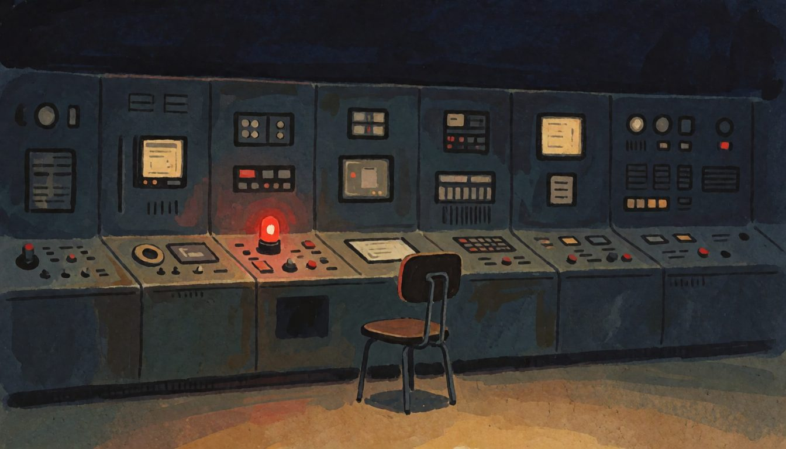
The British Library's network was quiet in the early hours of Thursday 26 October 2023. At 00:21 the Library's monitoring system saw something it did not like and blocked it automatically. At 01:15 it sent an alert to the IT Security Manager, who got up and went to work on it.
The manager did several sensible things. They extended the automatic block beyond its normal expiry, ran a scan for weaknesses, which found nothing, and watched the activity logs. Nothing happened again. At 07:00 the matter went to the infrastructure team, who went through the logs in detail and found nothing obviously malicious. They reset the password of the account involved and unblocked it later that day.
Two days later, on Saturday 28 October, the attack described in chapter 2 began. Looking back, the Library and its advisers believe the activity on 26 October was the attackers looking around the network before they struck. The signal had arrived, been seen and been handled. It had not been believed.
Recognise is the stage of the loop in chapter 2 where you notice that something is wrong and believe it. It is the step before everything the book has covered so far, and it is often where the most time is lost.
An alert two days before the attack
It is easy to read the opening story as a mistake by one person. The Library's own review does not tell it that way. The manager acted within an hour, in the middle of the night, and a second team took over in the morning. Every step was reasonable, and every check came back clean.
What nobody could see was the rest of the picture. Later forensic work showed that the attackers had been on the network since 23:29 the evening before. They had started moving around it three minutes later, quietly enough to leave nothing obviously malicious in the logs. The table shows what was known at each moment, next to what we know now.
When
What happened
What the Library knew at the time
Wed 25 Oct, 23:29
First evidence of an outside presence on the network
Nothing
Wed 25 Oct, 23:32
First evidence of movement around the network
Nothing
Thu 26 Oct, 00:21
Monitoring blocks the suspect activity automatically
Nothing yet; the block happens on its own
Thu 26 Oct, 01:15
Alert reaches the IT Security Manager
Possible malicious activity, now blocked
Thu 26 Oct, 07:00
Case passed to the infrastructure team
No repeat activity; scan found nothing
Thu 26 Oct, later
Password reset, account unblocked
Nothing obviously malicious in the logs
Sat 28 Oct, 01:30
About 440 GB leaves the network, seen later by the internet provider
Nothing
Sat 28 Oct, 07:35
Staff cannot reach the network
The attack is under way
The British Library's signal-to-action timeline. The one signal that reached a person was handled properly, and was still read as something that had been dealt with. Source: British Library, Learning Lessons from the Cyber-Attack (March 2024), pages 5 and 6.
Notice the last column. Between the alert and the attack, nothing the Library could see said "attack". So the question is what would have had to be in place for an unclear sign to get a deeper look. The Library answered that itself, in the fourth of its sixteen lessons. An in-depth security review should follow even the smallest signs of intrusion, because an attacker who gets in can quickly settle in and hide from routine checks. A summary that blames the security manager hides the rule that was missing.
Why real warnings look like noise
A weak signal is an early sign of trouble that is unclear enough to have an innocent explanation. Take a blocked login, an invoice run that takes twice as long as usual, a pump that trips and restarts, or a supplier who is slow to answer. Each could mean something serious, and each usually means nothing. If they always meant trouble, people would act on them every time.
Most organisations see many such signals every day, and nearly all of them really are noise. A security team that chased every blocked login to the bottom would do nothing else, so people learn, quite rightly, to close the routine ones quickly. The trouble starts when a real warning looks exactly like the routine ones, as the British Library's blocked login did.
There is a second, slower way that warnings fade. When something that should not happen keeps happening without harm, people start to treat it as normal. The sociologist Diane Vaughan called this normalisation of deviance, in her study of the decision to launch the space shuttle Challenger in 1986. Damage to the seals in the shuttle's boosters had been seen on earlier flights. Each flight that came back safely made the damage look a little more acceptable, until it was treated as an expected part of flying.
The same thing happens on a much smaller scale in ordinary organisations. A backup job that fails every few weeks becomes "the job that fails sometimes". Nobody decides to accept the risk; it is accepted one quiet night at a time. At Regionverket, for six weeks, the chlorine reading at one of the waterworks has dropped below its alarm level for about twenty minutes most nights, then recovered. The operators on the night shift have learned that it clears on its own, and they acknowledge the alarm without calling anyone. The day shift never sees it, because it is gone by morning. Then a new operator, on their first week of nights, asks why the alarm keeps coming. Nobody knows. A check finds that the dosing pump has been wearing out and that the night-time drop is getting a little longer each week.
The alarm worked every night. What failed was the step from "it clears on its own" to "someone finds out why". A signal that repeats without explanation is a question nobody has answered yet. It is also the first empty cell on the page from chapter 8 in practice: nobody had decided which readings were worth acting on.
Deep dive Vaughan and the Challenger decision
On 28 January 1986 the space shuttle Challenger broke up 73 seconds after launch, and all seven crew members died. The cause was a seal, an O-ring, in a joint of one of the solid rocket boosters. It failed to seal in the cold of that morning, which was colder than any earlier shuttle launch.
The evening before, engineers at Morton Thiokol, the company that made the boosters, argued against launching in such cold. After a long teleconference with NASA, Thiokol's managers reversed their engineers' recommendation, and the launch went ahead. The presidential commission that investigated the accident (the Rogers Commission) criticised the decision-making process, and the story is often told as one of managers overruling engineers under schedule pressure.
Diane Vaughan's book The Challenger Launch Decision (1996) tells a different story. She went through years of records and found that damage to the O-rings had been seen on many earlier flights. Each time, engineers studied it, judged that it was within what the design could tolerate, and flew again. Each safe flight then became evidence that the damage was acceptable. By January 1986, O-ring damage was a normal, documented part of the programme. Vaughan argues that the people involved followed the rules and the culture of their organisation, and that this is exactly why the danger was hard to see from inside.
Strength of evidence: Vaughan's account is widely accepted in safety research and was echoed by the board that investigated the loss of Columbia in 2003. It is one study of one organisation, so how far it applies elsewhere is a matter of judgement. The book uses it because the pattern is easy to recognise in ordinary work. Chapter 21 returns to it from the side of decisions.
Escalate what you cannot explain
The British Library case points to a specific weak spot. The alert was closed because the checks found nothing, and finding nothing is not the same as finding an explanation. A blocked login that turns out to be a member of staff with a mistyped password has been explained. A blocked login where nobody can say who or why has only been searched.
That difference is the basis of a simple rule. An escalation rule says which signals must go further than the person who first sees them, how fast, and to whom. The rule this chapter suggests is short: a signal may be closed only with a written explanation. If nobody can explain it, it goes up, however clean the checks look.
flowchart TB
A["A signal arrives"] --> B{"Can we explain it?"}
B -- "Yes" --> C["Close it, with the explanation written down"]
B -- "No" --> D["Escalate: a deeper look within a set time"]
D --> E{"Explained now?"}
E -- "Yes" --> C
E -- "No" --> F["Treat as an incident until proven otherwise"]
C --> G["Weekly look: did this kind of signal repeat?"]
An escalation rule built on explanation, not on whether the checks found something. Signals that nobody can explain go up, and closed signals are still counted, so a repeating pattern gets noticed.
The rule is cheap on most days, because most signals have an explanation that someone can write in one line. It is expensive on a few days, when a deeper look takes a specialist's time and finds nothing. That cost is the point: the organisation pays a little, often, for the chance of hearing about an attack two days early instead of on the Saturday morning.
A rule on paper is not the same as being able to follow it. Someone must own it, usually the head of security or of operations, and defend the time it costs when a busy team asks to skip it. And the deeper look must be something the organisation can do today, at 03:00, with the people it has. The Library's second lesson was to keep outside security experts on call, because a small in-house team cannot always do the deeper look itself, least of all at night. If nobody could do it tonight, that gap needs an owner, a date and a budget before the rule means anything. The near-miss review in this chapter's exercise tests exactly this: would the rule have sent a real signal further, and could anyone have taken the deeper look? What it finds should change the rule, or the staffing behind it.
The rule also covers signals that something is wrong rather than hostile: the Wrong prompt of chapter 6, a dependency that keeps answering but with bad data. Wrong data is often first noticed by the people who use it, long before any monitoring raises an alarm. A billing clerk who sees that a customer's water use has doubled overnight is looking at a weak signal. With the rule, the question "can we explain it?" goes to someone who can find out whether it is one meter or all of them.
What you cannot see at all
A signal that is misread is one problem. A signal that never exists is a worse one. Some things in an organisation are simply not measured, or are measured too roughly, or are recorded somewhere nobody can reach on a bad day. This book calls each of these a data gap: something you would need to see in order to recognise or understand a disruption, and cannot.
The clearest recent example comes from the electricity grid. At 12:33 on Monday 28 April 2025, the power systems of Spain and Portugal collapsed, and almost the whole Iberian Peninsula lost electricity. Restoring it took 16 hours in Spain and 12 hours in Portugal. The European network of grid operators, ENTSO-E, set up a panel of 49 experts to find out what had happened. The panel published its final report on 20 March 2026, almost a year later.
The control rooms were not blind that day. In the half hour before the blackout, grid operators saw two periods of power swings, called oscillations, from 12:03 to 12:08 and from 12:19 to 12:22. They took action to damp them: they cut exports to France, connected extra lines in southern Spain and changed how a link to France was run. The report found that these steps did damp the swings, but by their nature they also raised the voltage in the Iberian grid. A few minutes later, power plants began disconnecting to protect themselves from the high voltage. Each plant that left raised the voltage further, until the whole system went down.
What the panel could not see shaped its work as much as what it could. Its report has a whole section on collecting data, because getting complete, good data "proved very challenging". Some power plants that tripped before the blackout had no fault recordings, so the panel found the overall chain of events but could not say why those plants had disconnected. At one substation, the voltage at the moment of a trip had to be estimated indirectly, because there was no detailed measurement at that point. During restoration, the operators could not see enough of the smaller facilities on local grids. One of the panel's recommendations asks for real-time visibility down to local lines, a standard package of data within 24 hours of an event, and regular joint drills to check both.
Organisations meet the same problem after a cyberattack, when the logs that would show how the attacker moved were never kept, or were stored on the servers the attacker destroyed. A data gap hurts twice: once when you fail to recognise trouble, and again when you try to learn from it.
You can look for your own data gaps before an incident by taking each scenario in your baseline from chapter 5 and asking three questions. What would we need to see to recognise this early? Do we see it today? Who would be looking at 03:00? The table shows the first answers for four of Regionverket's ten scenarios.
Baseline scenario
What we would need to see
Do we see it today?
Who looks at 03:00?
Login service locked for two weeks
Unusual sign-ins and changes to administrator accounts
Logged by the cloud service, but kept for 30 days and read by nobody
Nobody
Control system data cannot be trusted
A second, independent reading of key values: flow, chlorine, temperature
Only for chlorine, by weekly lab samples
The operator, who sees only the control system
Chemicals supplier stops delivering
Early news of trouble at the supplier, and our own stock level
Stock checked weekly by hand; no view of the supplier
Nobody
Regional power and mobile down for five days
Generator fuel level and run time at both waterworks
Read on site only
Whoever drives out
Every "nobody" and "read on site only" in the table is a finding, like an empty cell on the page in chapter 8. Not all of them need fixing. Some gaps are cheap to close, such as reading the sign-in logs that already exist; others are expensive, such as a second, independent set of sensors. For each one, the organisation decides: close it, with an owner, a date and a cost, or live with it as an accepted risk with an expiry date (chapter 21). The decision is taken on an ordinary day instead of discovered on the night. The questions will not find every gap; the aim is that a cause you have never discussed still shows up as a signal on a thread someone is already watching.
A weekly look for leaders
Most leaders see incidents: things that went wrong badly enough to be reported. They seldom see the signals that were closed, or the near misses: events that could have caused harm but did not, often by luck. Yet these are where weak signals and normalisation of deviance show up first, while they are still cheap to deal with.
A weekly look of fifteen minutes, in an existing meeting, changes that. It goes through a short list prepared by operations and security. The list holds the signals closed without an explanation, the ones that repeated, the near misses, and any alarm that people have started to acknowledge without acting. The leader does not judge each item. The job is to ask the questions a busy team stops asking:
Which of these did we close without knowing why it happened?
Has anything on this list been here before? How many weeks in a row?
Which of these would we have wanted to hear about at 03:00?
Is there anything we have stopped measuring, or can no longer see?
The questions protect the people on the front line as well as the organisation. An operator who escalates a signal that turns out to be nothing should hear that this was the right call. If the weekly look only ever discusses mistakes, people learn to close things without telling anyone, and the signals stop reaching anyone.
Synthesis
Looking ahead
Recognising trouble early is only useful if the response then works. Most organisations believe their fallbacks work because they are written down. Chapter 20 asks how you would actually know, and starts with a company that had practised many disasters, but not the one that came.
Further reading
British Library, Learning Lessons from the Cyber-Attack: British Library Cyber Incident Review (8 March 2024). Pages 5 and 6 give the timeline of 25 and 26 October used in this chapter.
ENTSO-E Expert Panel, Final Report on the Grid Incident in Spain and Portugal on 28 April 2025 (20 March 2026). Very long; the first chapter summarises the event and has a section on why the data was so hard to collect.
Diane Vaughan, The Challenger Launch Decision: Risky Technology, Culture, and Deviance at NASA (University of Chicago Press, 1996). The source of normalisation of deviance, and a careful account of how reasonable people accepted growing risk.
Karl E. Weick and Kathleen M. Sutcliffe, Managing the Unexpected (3rd edition, Wiley, 2015). How organisations that must not fail pay attention to small signs of trouble.
Chapter 20
How Do We Know Our Fallbacks Work?
The kinds of exercise, what each one proves, and how to plan them over years
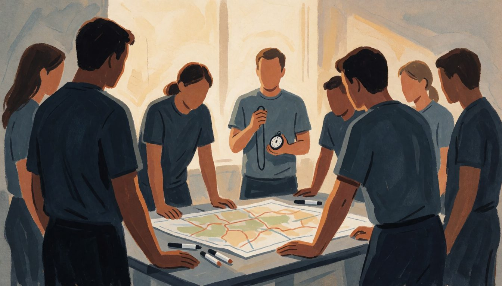
Meta, the company behind Facebook, Instagram and WhatsApp, runs some of the largest computer networks in the world, and it has practised failure for years. In exercises it calls "storms", it takes a service, a data centre or a whole region offline on purpose, to see what breaks and to train people in bringing it back.
On Monday 4 October 2021, at about 15:40 UTC, Facebook, Instagram and WhatsApp disappeared from the internet. A routine command, meant to check the capacity of Meta's backbone network, accidentally cut every connection in it. An audit tool that should have stopped the command had a bug and let it through. Within minutes the company's data centres could no longer reach each other, and the rest of the internet could no longer find them. It took until about 21:00 UTC before the services began to return.
The next day, Meta's head of infrastructure published an account. Part of the recovery had gone well, he wrote, thanks to the storm drills. The company had practised many times how to bring a huge load back onto its data centres without overloading them. He also wrote this: "we've never previously run a storm that simulated our global backbone being taken offline." The practised part went smoothly. The unpractised part took most of the day.
Every chapter so far has ended with a tabletop exercise on Regionverket, run the way chapter 0 described. This chapter asks what exercises can and cannot tell you, which kinds exist beyond the tabletop, and how to plan them over years.
The storm Meta never ran
The cut backbone was only the start of Meta's problem. Its own staff used the same network as everyone else, so the internal tools that engineers would normally use to find and fix a fault went down too. So did remote access to the equipment, including the separate route kept for emergencies (chapter 7). Meta had to send engineers to the data centres in person.
Getting in took time. Meta's data centres are built to be hard to enter, and once inside, the routers are built to be hard to change, even for someone standing next to them. On 4 October those protections stood between the engineers and the fix. Meta's own conclusion was that the trade was still worth it: "greatly increased day-to-day security vs. a slower recovery from a hopefully rare event like this."
Once the network was back, the practised part began. Turning everything on at once could have overloaded the data centres, whose power use can swing by tens of megawatts. Engineers brought services back in steps, as the storms had taught them, and they came back without further failures.
Sources: Meta Engineering, "More details about the October 4 outage" (5 October 2021); Cloudflare's account of the same day, for the times.
Nobody had practised losing the network that every recovery tool depended on. An exercise programme protects you only against the failures it includes, and the failures that take away your tools for responding are among the most dangerous. Few organisations practise as much as Meta, so the lesson is not about how much. Every exercise programme has edges, a real event tends to land just outside them, and this chapter is about drawing those edges deliberately.
What each kind of exercise can prove
An exercise does not create a capability. The people, the authority, the equipment, the supplier agreements and the fallbacks have to exist before it, built by the work the earlier chapters describe. The exercise is the reality check: can we do this today, with the people and equipment we have? It finds where the honest answer is no, measures how long the thing really takes, and keeps alive the skills that ordinary work does not use. Practice maintains a skill. It cannot replace a missing supplier agreement, a server that was never bought, a person nobody can stand in for, or a fallback nobody engineered.
Each kind of exercise checks something specific. The tabletop exercises in this book have one big limit, and the Swedish exercise guidance says so plainly. The players discuss what they would do, but they do not do it. A tabletop tests assumptions, decision rights and coordination. It cannot prove that the organisation is able to act, because for that, people have to act.
The US exercise doctrine, HSEEP, sorts exercises into two families. In discussion-based exercises, people talk through a scenario: seminars, workshops, tabletops and games. In operations-based exercises, people carry out real actions, in three sizes:
A drill tests whether one task can be done by the people who would have to do it, usually in one team. Switching a waterworks to local manual control, with a stopwatch running, is a drill.
A functional exercise tests several functions working together in real time, while the field work is only simulated. A crisis team that runs a whole morning from its backup control room, sending orders to people who play the field teams, is one. Run for a day or longer, it also tests staffing, endurance and handovers.
A full-scale exercise moves real people and real equipment, often across several organisations, as if the event were happening. It is the most realistic kind and by far the most expensive.
IT and engineering teams have their own forms, which fit into the same families. A restore test takes a backup and restores it onto real equipment, times the whole job and checks that the result works. It is the only test that shows whether recovery is real and how long it takes. A game day is a planned day on which a team causes a failure on purpose in a real system and practises the response. Chaos engineering makes such experiments routine. Netflix popularised the idea. In 2011 it described a tool called Chaos Monkey, which switched off random servers in its live service during working hours, so that engineers had to build systems that survived it.
Kind
What people do
What it can show
Rough cost
Tabletop exercise
Discuss a scenario
Gaps in plans, roles and assumptions; who decides
Hours, a few people
Drill
Carry out one task for real
Whether that task works, and how long it takes
Hours, one team
Restore test
Restore real data onto real equipment
Whether recovery works, and its real duration
Days, the IT team
Game day, chaos experiment
Cause a failure in a real system
Whether the system and team cope with that failure
Days to plan; some risk to the service
Functional exercise
Run several functions in real time; field work simulated
Whether command, coordination and communication hold up
Weeks to plan, a day to run
Full-scale exercise
Move real people and equipment
Whether the whole response works, end to end
Months to plan, many organisations
Kinds of exercise, from cheapest to most expensive. Each one proves more than the one above it, and costs more. Use the cheap ones often and the expensive ones where only action will answer the question.
If the question is "who decides whether to cut off the heating to a district?", a tabletop will answer it. If the question is "can we run the waterworks by hand for eight hours?", only a drill will. A sensible programme uses tabletops to find the questions and drills to answer the ones that matter most.
What a good tabletop needs
Chapter 0 introduced the roles and running order of a tabletop. Designing one takes a few more decisions, in a fixed order. The Swedish guidance puts it simply: decide why and what before how.
flowchart TB
P["Purpose: why we exercise"] --> O["Two or three objectives"]
O --> S["Scenario and starting situation"]
S --> I["Injects that make it worse"]
I --> Q["Questions for each inject"]
Q --> H["Hot wash, straight after"]
H --> A["Action plan: owner and date for each finding"]
A -. "next exercise checks it" .-> O
The anatomy of a tabletop. The design runs from purpose to questions; the value comes at the bottom, in the action plan, which the next exercise should check.
The objectives say what the exercise should find out, in terms someone can check afterwards. "Practise crisis management" is too vague; "find out who can decide to switch the heating plant to local control when the login service is down" is an objective. Two or three are enough for a half-day exercise.
The scenario comes from your baseline, phrased by effect and duration as in chapter 5, so that the exercise tests something you have decided to plan for. A good starting situation is specific: a day, a time, the weather, who is on duty.
The injects move the story on, and this is where Meta's lesson matters most. The best injects take away something the players were counting on: the chat tool, the phone list, the deputy, the backup control room, the supplier's support line. An inject like that tests how much the response relies on one tool, one person, one supplier or one assumption. Every exercise should have at least one, because real events often remove exactly those things.
The hot wash and the action plan are where the exercise pays for itself. Every finding is a place where "can we do this today?" turned out to be a no. The action plan follows it through: where must we be, and how do we get there, with an owner, a date and a cost. A gap the organisation chooses to leave is written down instead as an accepted risk with an owner and an expiry date. The next exercise starts by checking whether the actions were done. The Swedish guidance calls a visible change one of the most important results an exercise can produce. A lively discussion with no action plan has only confirmed what everyone already believed.
Practise the recovery and the manual work
Most organisations practise the failures they know best, one system at a time. The British Library had continuity plans for its individual systems before the ransomware attack of October 2023, and departments had used them. Its review's sixth lesson asked for more: "Business continuity plans for the total outage of all systems need to be practised regularly, in addition to those relating to individual systems and services."
A total outage is a different problem, because the workarounds for single failures usually rely on the systems that are still up. The paper form needs the printer, the backup phone list is in the shared folder, and the manual process needs someone to log the decisions in the case system. When everything is down, those workarounds go with it, and only practice will show which ones.
Two kinds of practice matter most here, and both need real action. The first is the restore test. A backup that has never been restored is a plan for recovery, and the plan may be wrong. A restore test answers three questions: does the restore work, how long does it take, and does anyone other than the person who set it up know how to do it? Chapter 13 showed why the order of restoring matters; a timed restore test shows whether your order works.
The second is manual work. Chapter 11 described designed manual modes, such as running a waterworks on local control or taking customer reports on paper. Those modes decay if nobody uses them, and how fast depends on how far they are from ordinary work. A fallback that looks like the everyday job under worse conditions needs little practice, because people do most of it every week. What has to be practised is the difference between the ordinary day and the bad one: the switch to local control, the paper form, the decision taken without the usual system. One shift per quarter on local control, with the normal system ready as a safety net, keeps that difference familiar. It also shows which steps of the written procedure no longer match reality.
An exercise calendar
A single exercise answers a few questions. A programme planned over several years makes sure the important questions all get asked. Without one, organisations tend to repeat the scenario they find easiest, often a cyberattack on IT. They never reach the awkward ones, such as losing a third of the staff or a supplier being forbidden.
The simplest plan rotates through the baseline. Regionverket has ten baseline scenarios from chapter 5, written by effect and duration rather than by cause. The calendar does not try to predict the next event. Its aim is to cover enough effects, durations and dependencies that a cause nobody discussed still produces problems the organisation has already worked through. Over three years, every scenario gets at least one tabletop, and the most important ones also get a drill or restore test. Every year ends with one larger exercise that combines several scenarios.
Quarter
Year 1
Year 2
Year 3
Q1
Tabletop: login service locked for two weeks
Tabletop: control system data cannot be trusted
Tabletop: key site cannot be reached
Q2
Restore test: identity and customer register
Drill: one shift on local control at a waterworks
Restore test: control system from clean media
Q3
Tabletop: 40% of staff unavailable for a month
Tabletop: billing supplier stops delivering
Tabletop: time signals (GNSS) unreliable
Q4
Functional exercise: power and mobile down for five days
Tabletop: key cloud service forbidden in Sweden
Functional exercise: three months of heightened alert
Every quarter
One manual-hour drill in one department; follow-up of open actions
A three-year exercise calendar for Regionverket. Every baseline scenario gets a tabletop, the most important get a drill or restore test, and each year ends with one larger exercise. Open actions are checked every quarter.
The calendar is also a commitment that leaders can see. If the Q2 restore test is postponed twice, that is visible in the same way as a missed budget line, and someone has to decide whether to accept it.
Some exercises are bigger than any one organisation. Sweden runs national exercises in its total defence, the combined military and civil effort to prepare for war and heightened alert. The current series, Övning av totalförsvar (ÖTF), runs from 2025 to 2027 and ends with a system-testing exercise in spring 2027. Ask your county administrative board or sector authority how to take part. A national exercise tests the things you cannot test alone, such as how you would reach the municipality and the county when the mobile network is down.
Exercise debt
Every exercise produces findings. If they are acted on, the organisation changes. If they are not, the next exercise finds the same gaps, people stop taking the exercises seriously, and the plans drift further from reality. This book calls that build-up exercise debt. The restore nobody has timed and the manual mode nobody has used for three years are part of it too. Both look fine on paper, and neither has been shown to work.
The way to keep it down is to judge an exercise by what changed afterwards. Three numbers are enough, in the same report as the exercise calendar:
How many findings from the last year's exercises are closed, open, or past their date?
How many of the important fallbacks have been exercised for real, by drill or restore test, in the last two years?
How many findings came up again in a later exercise?
The last number is the most telling. A finding that appears in two exercises a year apart means the organisation saw a gap, agreed to close it, and did not. That deserves a leader's attention more than any exercise score.
Deep dive What evidence links exercises to outcomes?
The evidence that exercising makes organisations survive disruption better is real but weaker than most people assume. Chapter 0 gave the best-studied part, the health emergency research by Skryabina and colleagues. Exercises improve knowledge, confidence and understanding of roles (2017). Responders to the 2017 terrorist attacks in the United Kingdom who had recently exercised a similar scenario felt better prepared (2020). Neither study could say whether that leads to better real responses, and the second rests on what the responders said about themselves.
Engineering organisations offer reports rather than studies. Meta credits its storm drills for the smooth restart in October 2021. Netflix engineers describe chaos engineering as a way to build confidence that a service will withstand failures in production (Basiri and colleagues, IEEE Software, 2016). Google has described its company-wide disaster recovery tests, known as DiRT (Krishnan, ACM Queue, 2012). These are first-hand accounts from organisations that chose to practise, with no comparison against organisations that did not. Inquiries after real events point the same way: the British Library asked for practised total-outage plans, and the Iberian blackout panel recommended regular joint drills between grid operators and producers.
Strength of evidence: good that exercises improve knowledge and find gaps; plausible but not shown that they improve outcomes in real events. The case for exercising rests mainly on its low cost and on what it finds, which is why the findings are only worth something once they are closed.
Synthesis
Looking ahead
Exercises and incidents both produce findings, and some of those findings are about decisions: why something was accepted, postponed or left out. It is tempting to look for the person who decided wrong. Chapter 21 shows why that seldom helps, and how reasonable decisions can add up to a disaster.
Further reading
Meta Engineering, "More details about the October 4 outage" (Santosh Janardhan, 5 October 2021). A short, candid account of the outage and of what the storm drills did and did not cover.
Cloudflare blog, "Understanding how Facebook disappeared from the Internet" (4 October 2021). The view from outside, and the source of the times used in this chapter.
MSB, Övningsvägledning: Metodhäfte – Seminarieövning (MSB2286, 2023) and Metodhäfte – Utvärdering av övning (MSB2233, 2023). The Swedish guides to running and evaluating exercises. In Swedish.
FEMA, Homeland Security Exercise and Evaluation Program (HSEEP) (2020). The US doctrine, with clear definitions of each kind of exercise and of the improvement plan that follows.
Casey Rosenthal and Nora Jones, Chaos Engineering: System Resiliency in Practice (O'Reilly, 2020). The engineering forms of exercise, from the people who built them at Netflix and elsewhere.
Kelly Shortridge with Aaron Rinehart, Security Chaos Engineering (O'Reilly, 2023). The same ideas applied to security: practising attacks on your own systems.
Chapter 21
How Do Good Decisions Add Up to Disaster?
Local rationality, drift, and reviews that learn without blame
In 2020 the British Library made its staff's remote work safer. It introduced multi-factor authentication, a second login step such as a code on a phone, for its cloud services: e-mail, Teams and Word. It was a sensible project, and it was finished.
One part was left out on purpose. Logging in to the Library's own network, including its own servers, would not get the second step for now. The reasons were practicality, cost and the impact on other work under way. The network was due to be renewed, and adding the second step to the old one would have been hard. The gap was noted as a risk at the time, with other protections listed against it.
Three and a half years later, the attackers who hit the Library in October 2023 most likely came in through exactly that gap. The Library's review says of the 2020 decision that its possible consequences were "perhaps under-appraised". Nobody broke a rule. Several sensible people made a reasonable choice, wrote it down, and moved on. This chapter is about how choices like that add up, and what an organisation can do about it without looking for someone to blame.
Chapter 19 showed how warnings come to look normal, and chapter 20 how exercise findings pile up when nobody acts on them. Both belong to the Adapt stage of the loop from chapter 2, and so does learning from decisions that turned out badly.
A reasonable decision in 2020
The 2020 decision was one of a series. Read in order, the Library's review shows how a remote access route became the most likely way in, through steps that were each sensible on their own.
In February 2020, the Library installed a new server for remote access, used by outside partners and its own IT administrators to work on the Library's systems. It replaced an older remote access system that had been judged not secure enough, so the new server was itself an improvement. Then the Covid-19 pandemic came, and remote work grew quickly, including work by outside partners on many IT projects. Later in 2020 came the decision about the second login step.
flowchart TB
A["Feb 2020: new remote access server, safer than the old one"] --> B["2020: pandemic, more remote work by partners and staff"]
B --> C["2020: second login step for cloud; own network left until renewal"]
C --> D["2022: old systems mean a security certification lapses"]
D --> E["Late 2022: partner access flagged as a growing risk"]
E --> F["Review planned for 2024"]
F --> G["Oct 2023: attack, most likely through the remote access server"]
The British Library's drift timeline. Every step was reasonable, several were improvements, and the risk was written down twice. What grew in between was the gap between the plan to fix it and the time it took. Source: British Library, Learning Lessons from the Cyber-Attack (March 2024), pages 6 and 18.
Two more steps followed. In 2022 the Library stopped meeting the UK's Cyber Essentials Plus security standard, because the standard had changed and some of its older core systems could not meet it until they were replaced. In late 2022, its information governance group flagged the growing number of outside partners with access as a risk, and a review was planned for 2024. The attack came first, in October 2023.
The UK data protection regulator, the ICO, looked at the case afterwards. Its statement of April 2025 says the attack "escalated because of the lack of multi-factor authentication on an administrator account". It commended the Library for being open about the weaknesses behind the incident, decided that a further investigation would not be the best use of its resources, and imposed no fine.
Why it made sense at the time
Safety researchers call what the British Library's review describes local rationality. People do what makes sense to them at the time, given their goals, what they know and what they are paying attention to. Seen from inside the situation, the decision was reasonable. Seen from after the outcome, it can look careless or even reckless.
What makes it look careless afterwards is hindsight bias. Once you know how the story ended, the path to that ending looks clear, and the warning signs look obvious. The people at the time saw many paths and many signs, most of which led nowhere. The physician and safety researcher Richard Cook put it in one line in his short paper How Complex Systems Fail (1998): hindsight biases assessments of human performance after an accident.
Cook made a related point that matters for any review. In complex organisations, a serious failure needs several things to go wrong at once, because many defences have to fail together. So the search for a single root cause is misguided: naming one hides the others. At the British Library the missing second login step mattered. So did the old network that let the attackers spread, the growing number of partners with powerful accounts, and the old systems that could not be restored. Fixing only the login would have fixed one of several.
How a run of success builds confidence
The safety researcher Sidney Dekker calls this pattern drift. In Drift into Failure (2011), he describes how organisations move towards disaster in small steps, each one a sensible response to pressure on cost, time and workload. No step looks like a big change, and each step that ends well makes the next one easier. The organisation does not decide to take a large risk. It arrives there.
In the cases in this chapter, the engine of drift is success. Every time a shortcut works, it becomes a little more normal, the pattern chapter 19 called normalisation of deviance. CrowdStrike, the security company whose faulty update crashed 8.5 million Windows computers on 19 July 2024 (chapter 1), shows how this works in months.
In February 2024, CrowdStrike released a new version of its security software that could read a new type of detection content. Between March and April, four pieces of that content went out to customers, and in CrowdStrike's own words they "performed as expected in production". On 19 July, two more pieces went out. A bug in CrowdStrike's checking tool, the Content Validator, let one of them through although it contained faulty data.
CrowdStrike's own review explains why the July content was released: the release relied on "trust in the checks performed in the Content Validator, and previous successful IPC Template Instance deployments". Four safe releases had built trust in the process, and the trust was reasonable, because the process had worked every time. What four safe releases could not show was a bug in the checking tool that none of them had triggered. The content also went to all customers at once; afterwards, CrowdStrike committed to releasing such content in stages.
Date in 2024
What happened
What it did to confidence
28 February
New software version that can read the new content type
A new capability, tested before release
5 March
Stress test passed; first content of the new type released
The process works
8–24 April
Three more releases, all fine in production
The process keeps working
19 July, 04:09 UTC
Two more releases; one passes the checks despite faulty data
Released on the strength of the earlier successes
Drift at CrowdStrike, from its own preliminary review (24 July 2024). Each successful release was real evidence that the process worked, and together they made a check with an untriggered bug look trustworthy.
A long run without incidents is weak evidence that something is safe. It shows that the conditions which would cause a failure have not yet occurred; the British Library's old network had been fine for years too. A leader who hears "it has always worked" should ask what would have to happen for it not to work, and whether that has ever been tried.
Reviews that reconstruct the decision
If decisions that end badly were usually reasonable at the time, a review that looks for the person who got it wrong will learn little. It also teaches everyone else to hide their own reasonable decisions in future. The alternative is a blameless review. It sets out to understand why each decision made sense to the people who took it, so that the organisation can change the conditions that made it sensible.
The idea spread in software engineering through a blog post by John Allspaw, then at the online marketplace Etsy, in May 2012. He described reviews in which engineers give a detailed account of what they did, when, what they expected, what they assumed and what they saw, without fear of punishment. The account is only useful if it is honest, and it is only honest if telling it is safe.
A review that reconstructs a decision asks questions like these:
What did the people involved know at the time, and what could they not know?
What were they trying to achieve, and what else were they being asked to do?
Which other options did they consider, and why did those look worse?
What had happened the last few times they, or others, made a similar choice?
What would have had to be different for another choice to look better?
The last question is where the findings come from. At the British Library, the answers would point to three conditions. One is the cost of changing an old network that was about to be replaced. Another is a small technology team under pressure. The third is risk processes that escalated big risks but did not add up the small ones. An organisation can change those. It cannot change "someone should have known better".
A risk register with dates
The British Library's seventh lesson is about the risk register, and it is written for leaders. Its risk processes did send the big risks, the ones outside the Library's appetite for risk, up to senior management. They showed less well how many smaller risks were being carried in total. The lesson asks that every security risk accepted at an operational level is flagged upwards, so that someone sees the whole.
Adding up is one half of the answer. The other half is time. Most accepted risks are accepted "for now": until the renewal, until the upgrade, until next year's budget. That is a reasonable thing to write, and it is exactly how drift gets in, because "for now" has no end. Every accepted risk is a gap the organisation has decided not to close yet. The register holds the rest of that decision: an owner, a reason, and an expiry date. When the date comes, the risk must be accepted again by someone at the next level up, with the reason written again. The register records what has been left undone and who answers for it; it is not itself a preparation.
Field
Example from Regionverket
Why it is there
Risk
Control system supplier's remote access uses a password only
Says what is accepted, in plain words
Accepted by, and when
Head of IT, March 2021
Shows who decided, so the decision can be revisited
Reason
Old control system to be replaced in 2023
The condition the acceptance depends on
Expires
December 2023
Forces a new decision when the condition has not been met
Times renewed
2 (2023, 2025)
The clearest sign of drift
Accepted next time by
Head of operations; then the chief executive
Each renewal moves the decision one level up
The "times renewed" field turns the register into a drift indicator, a number that rises as an organisation slides, before anything goes wrong. A leader can follow a handful of them each quarter:
accepted risks past their expiry date, and risks renewed more than once;
temporary exceptions older than the end date they were given;
upgrades and replacements postponed more than once;
exercise findings that came up again (the exercise debt of chapter 20);
alarms acknowledged without action for more than a few weeks (chapter 19).
None of these numbers proves that disaster is coming. Together, they show whether the organisation is making the same reasonable "for now" decision again and again, which is the shape that drift takes.
Learning without blame, the Swedish way
Sweden has run blameless investigations by law for more than thirty years. The Swedish Accident Investigation Authority, Statens haverikommission (SHK), works under the law on the investigation of accidents (lag (1990:712) om undersökning av olyckor). It investigates serious accidents and incidents in aviation, shipping and rail, and other accidents that cause many deaths or great damage. The law gives an investigation three purposes: to find out as far as possible what happened and why, to give a basis for measures that prevent it happening again, and to give a basis for judging the rescue effort.
SHK's reports also state what an investigation is not for. The standard wording says, in short, that SHK investigates from a safety point of view, so that similar events can be avoided. Its investigations do not aim to apportion blame or responsibility, whether in criminal, civil or administrative law. Questions of guilt and damages are left to the courts, the police and the insurers, in separate processes.
Three features of the SHK model carry over to any organisation. The first is separation: the review that learns is a different process from the one that judges, and what people say in one is not used in the other. A board that wants to know whether anyone was negligent can still have an honest review, as long as the two questions are asked in two rooms. The second is independence: the people who investigate are not the ones whose decisions are under review. The third is openness: SHK publishes its reports and addresses its recommendations to the organisations that can act on them. The British Library's published review, which the ICO commended for its openness, is a rare example of an organisation doing the third on its own.
Deep dive Cook, Dekker, Allspaw, and the argument about accountability
Three writers shaped the way this chapter treats decisions. Richard Cook's How Complex Systems Fail (1998, revised 2000) is eighteen short points, written from his work on safety in hospitals. This chapter uses four of them:
complex systems are heavily defended, so catastrophe needs several failures at once;
attributing an accident to a single root cause is fundamentally wrong;
hindsight biases assessments of human performance;
changes made to remove frequent small failures can open the way to rare, large ones.
Sidney Dekker's Drift into Failure (2011) adds the long view, and his Field Guide to Understanding 'Human Error' (3rd edition, 2014) is the practical companion, with methods for reconstructing decisions. John Allspaw's blog post "Blameless PostMortems and a Just Culture" (Etsy, 2012) brought these ideas into software operations, where the practice has since spread widely.
The open question is how blame-free a review can and should be. One position holds that any hint of punishment destroys honest accounts, so reviews should be entirely free of consequences for individuals. Dekker's later work on "just culture" argues for this in a restorative form: after harm, ask who was hurt, what they need and whose obligation it is to meet that need. Another position, common among regulators and in law, holds that some acts, such as deliberate violations or gross negligence, must have consequences. It also holds that a review culture that never names them loses public trust. The SHK model keeps learning and blame in separate processes and lets both exist.
Strength of evidence: that hindsight bias distorts judgement of past decisions is well established in psychology. That blameless reviews produce more and better findings is widely reported by practitioners, but rests on experience rather than controlled comparison. Where to draw the line for individual accountability is a question of values as much as evidence, and each organisation has to decide it before the incident.
Synthesis
Looking ahead
So far, the book has stayed mostly inside the organisation and its suppliers. Much of what your services stand on belongs to nobody you have a contract with: the power grid, the mobile networks, the satellite time signals. Part VI looks beyond your own walls, starting in chapter 22 with what your IT stands on.
Further reading
Richard I. Cook, How Complex Systems Fail (Cognitive Technologies Laboratory, University of Chicago, 1998, revised 2000). Four pages, eighteen points; the best short introduction to how safety researchers think about failure.
Sidney Dekker, Drift into Failure: From Hunting Broken Components to Understanding Complex Systems (Ashgate, 2011). How reasonable steps add up to disaster.
Sidney Dekker, The Field Guide to Understanding 'Human Error' (3rd edition, Ashgate, 2014). Practical methods for reconstructing decisions after an incident.
John Allspaw, "Blameless PostMortems and a Just Culture" (Etsy Code as Craft blog, May 2012). The short post that brought blameless reviews into software operations.
CrowdStrike, "Falcon Content Update Preliminary Post Incident Report" (24 July 2024). The timeline of releases before 19 July, in CrowdStrike's own words.
Statens haverikommission, published investigation reports (shk.se). Any recent report shows the model of independent investigation without blame. In Swedish, many with English summaries.
Part VI · Beyond Your Own Walls
Part VI · Introduction
Beyond Your Own Walls
Infrastructure, heightened alert and making the case
Everything so far has been about what one organisation can do inside its own walls, or agree with the organisations next to it. Its services also stand on things it does not control and shares with everyone around it: the power grid, the telecom networks, the satellite signals that keep clocks in step, and the state's plans for war. This last part looks at those, and at what they mean for an organisation's own plans.
Chapter 22 follows your dependencies down to power, telecom and time, and uses real repair records to show how long they can stay broken. Chapter 23 asks what changes under heightened alert, when several kinds of disruption come at once and last for months, and how to make the case for paying for fallbacks that last that long.
Both chapters end where the book started, with Regionverket and the question of how long it can carry on. The answer is measured in hours and weeks, and this part shows how to count them. The epilogue then returns to the ordinary working week, where most of that counting gets done.
The chapters:
Chapter 22, What Does Our IT Stand On?: power, telecom and time, and how long they take to come back
Chapter 23, Three Months or a Weekend?: what changes under heightened alert, and how to make the case for paying for it
Chapter 22
What Does Our IT Stand On?
Power, telecom and time, and how long they take to come back
Finland and Estonia are joined by two electricity cables under the Gulf of Finland. The larger one, Estlink 2, can carry 650 megawatts, about two thirds of what the two countries can send each other. On Christmas Day 2024 it stopped. Finnish investigators soon suspected an oil tanker, the Eagle S, of dragging its anchor across the seabed. Several telecom cables in the same waters were damaged on the same day.
The two grid companies, Fingrid in Finland and Elering in Estonia, did most things right. They had spare cable made and stored in advance, and they inspected the seabed within days. In January 2025 they were still looking for a ship that could do the repair. In the end they chose a general construction vessel, because waiting for a specialised cable ship would have taken longer. The work at sea began in May, and about one kilometre of cable was replaced. Estlink 2 was back in commercial use on 20 June 2025, almost six months after it failed. The repair cost was estimated at €50–60 million, shared between the two companies.
Six months is what a well-prepared repair of a cable on the seabed takes. If your services depend on something like that, then somewhere in your plans there should be a scenario that lasts six months. This chapter follows your dependencies down to the things almost everything stands on: electricity, telecom and time.
Chapter 6 followed Regionverket's dependencies through suppliers and their suppliers, and asked eight questions of each, including Long. This chapter follows the chain to the bottom, where the dependencies are shared by everyone in the region, and uses real repair times to say how long Long is.
Power, telecom and time
Almost every service an organisation delivers rests on three infrastructures that it does not own. The first is electricity, from the grid and from whatever backup power the organisation keeps. The second is telecom: the fibre, the mobile network and the internet connections that carry calls and data. The third is time, the precise clock signal that networks, control systems and payments use to agree on what happened when. Most of that time comes from satellites, through the global navigation satellite systems (GNSS) such as GPS and Galileo.
Your IT sits on top of all three. A data centre needs power and cooling. A cloud service needs the networks between you and it. A login service needs the network, and its security checks need clocks that agree. When people say "the IT is down", the cause is often one floor further down. Regionverket's stack shows the shape.
flowchart TB
S["Water, heat, billing, customer service"] --> IT["IT: control system, login, billing, phones"]
IT --> T["Telecom: fibre, mobile network"]
IT --> P["Power: grid and backup"]
T --> P
T --> TM["Time: GNSS signals"]
P --> TM
P --> F["Fuel for backup power"]
F --> T
Regionverket's infrastructure stack. The arrows point to what each layer needs. Telecom needs power, power needs time and fuel, and ordering fuel needs a working phone, so the bottom of the stack is a tangle rather than a floor.
The bottom of the diagram is not tidy. Telecom needs power, because base stations and switches run on electricity. Parts of the grid need telecom and precise time to control and protect it. And the fuel for Regionverket's backup generators arrives on a lorry that someone ordered by phone and paid for through a bank. These loops are why, in every case in this chapter, a failure at the bottom moved on from where it started.
How one failure spreads to the next
A failure in one infrastructure often causes a failure in the next. The storm Gudrun, which chapter 14 described from the side of the phones, shows how. On 8 and 9 January 2005 it swept across southern Sweden and felled trees across large areas of forest. The trees brought down power lines, and at the worst point 730,000 electricity customers had no power. Half of them got it back within a day. Some waited more than a month, according to the government's later bill on the storm.
The power cut then spread to the phones. Mobile base stations had batteries that lasted between two and eight hours. When the batteries ran out, more than a quarter of a million subscribers could no longer use their phones. The emergency number 112 was overloaded and at times out of service, and the safety alarms that elderly people wear to call for help stopped working. The second failure hurt more people in more serious ways than the first, and it came after a delay that nobody watching the power lines would have noticed.
A cascade does not need a storm. Rogers, one of Canada's largest telecom operators, had one on 8 July 2022 (chapter 14). Early that morning, during a planned upgrade of its core network, a configuration change made the network's routers fail. Mobile, home phone and internet service stopped for more than 12 million customers, and services came back gradually until the next morning. People could not reach the emergency number 911 from Rogers phones. Card payments failed in shops across Canada, because Interac, the national debit card network, used Rogers for its connections. The payment network and the emergency service ran on Rogers's telecom links, so a failure in one company's network became a failure in two other infrastructures. Few of the shops that could not take cards had ever thought of themselves as Rogers customers. The Canadian regulator, the CRTC, later had the outage investigated by an outside firm. Canada's operators agreed to help each other in outages, including emergency roaming between networks, the kind of mutual aid chapter 17 described.
Both cases have the same shape: the first failure was in one infrastructure, and the damage that reached people came through another. If you map your dependencies only one level down, you see the first failure and miss the second. So map down until you reach power, telecom and time, and then ask what each of them needs. Ask your important suppliers which telecom operator they use, too, because two of your dependencies can share an operator without either of them telling you.
Deep dive Four ways infrastructures depend on each other
Steven Rinaldi, James Peerenboom and Terrence Kelly worked at US national laboratories. In 2001 they published a paper in IEEE Control Systems Magazine that is still the standard starting point for this subject. They described four kinds of interdependency between infrastructures:
Physical: one infrastructure needs what another produces, as a pump needs electricity.
Cyber: one depends on information sent through another, as the grid's control system depends on telecom.
Geographic: two are in the same place, so one event hits both, as a storm hits power lines and mobile masts in the same forest.
Logical: one affects another through decisions, markets or rules rather than physical links, as fuel prices change when many buyers want fuel at once.
They also named three ways failures move between infrastructures. A cascading failure passes from one to the next, as Gudrun's power cut passed to the phones. An escalating failure makes an existing failure worse or slower to fix, as repair crews who cannot call each other work more slowly. A common-cause failure hits several infrastructures at once from one event, as Gudrun hit power and telecom lines in the same forest. The framework helps a workshop ask better questions about each line on the map. It does not predict how a cascade will run, and the authors said themselves that modelling interdependencies at scale was a hard, open research problem.
Repair records as scenario data
The Long prompt from chapter 6 asks what happens if a dependency stays broken for a long time. "Long" is easy to underestimate when you guess, and easier to get right from how long real failures have lasted. The table collects repair times from public reports: the cases in this chapter, the Iberian blackout from chapter 19, and three more failures of the same three infrastructures.
Failure
Infrastructure
Time to restore
Source
Iberian blackout, 28 April 2025
Power, two whole countries
12 hours in Portugal, 16 hours in Spain
ENTSO-E final report, March 2026
Rogers, 8 July 2022
Mobile, phone and internet
About 15 hours for many customers, longer for some
CRTC
C-Lion1 cable, November 2024
Telecom cable, Finland to Germany
About 10 days
Cinia
C-Lion1 cable, December 2024
The same cable, damaged again
12 days (25 December to 6 January)
Cinia
Galileo, July 2019
Satellite navigation and time
About a week
EUSPA
Storm Gudrun, January 2005
Power in rural southern Sweden
Half within a day; some more than a month
Prop. 2005/06:27
Estlink 2, January 2024
Power cable, Finland to Estonia
About seven months
ERR, quoting Fingrid and Elering
Estlink 2, December 2024
The same cable, damaged again
Almost six months
Fingrid
Real repair times range from hours to more than half a year. The long ones all needed something physical to move: crews through fallen forest, a ship to the right place in the right season, a new piece of cable.
Failures that can be fixed from a control room or a keyboard, like the Rogers change or the restart of the Iberian grid, take hours to a day or two. Failures that need people, ships and materials in the field take weeks or months. The slowest are on the seabed, where a repair depends on a free ship, calm weather and the right season. And the same cable can fail twice in one year: Estlink 2 was out for about seven months in 2024 before it failed again on Christmas Day.
That gives you a way to build Long scenarios. For each dependency at the bottom of your map, ask what kind of repair it would need, and take your duration from the nearest real case. A cloud service that fails through a software error is a Rogers kind of failure: plan for a day or two. A fibre route cut in the ground is a matter of days. A cable under the sea, a large transformer or a destroyed building is a matter of months. Write the case next to the duration, so that whoever reads the plan can see where the number came from. The aim is to have the hours, the days and the months covered, so that whichever cable or storm comes next, its duration is one you have already planned for.
Time is a dependency too
Precise time is the dependency organisations are least likely to know they have. Mobile networks need it to keep base stations in step, power grids use it to measure and protect the network, and payment systems and logs need timestamps that agree. Much of that time comes, directly or through someone else's equipment, from the signals of satellite navigation systems. Those signals are weak by the time they reach the ground, so they are easy to drown out (jamming) or imitate (spoofing).
In 2018 the British government's Office for Science published a review, known as a Blackett review, of how much the United Kingdom depended on satellite time and position. It found that even careful operators "may not be completely aware of the magnitude of their reliance". One reason is that many computers set their clocks from internet time services, and some of those services take their own time from satellites. The review recommended that operators of critical services find out what they depend on. It also recommended that they keep backup clocks that can carry on without the satellites for a while, which engineers call holdover.
The review describes what holdover is worth. On 26 January 2016, while an old GPS satellite was being taken out of service, a faulty data upload made GPS time wrong by about 13.7 microseconds for several hours. A British telecom operator received hundreds of timing alarms. Its own atomic clocks kept the network running, but clearing the alarms took four days. Elsewhere, digital radio services in the United Kingdom were lost and there were problems with digital television in Spain. The same error did very different harm depending on whether each user had a clock that could hold time on its own. The operator with holdover had a nuisance, and the users without it had an outage.
For organisations around the Baltic Sea, unreliable satellite signals are no longer a rare event. In September 2025 the Swedish Transport Agency, Transportstyrelsen, said that aircraft reported disrupted satellite navigation "almost daily". The reports covered both jamming and spoofing, and the affected area had grown from the sea to land. Finland's telecom regulator reported interference near its eastern border that affected mobile networks as well as navigation. Regionverket does not fly aircraft, but its mobile network, its control system's clocks and its suppliers' equipment may all take time from the same signals.
You probably cannot answer the time question on your own. Ask your engineers and your telecom and control-system suppliers three things: where each important system gets its time, what happens to it if satellite time is lost or wrong, and how long it can hold time without the satellites. The answers belong on the dependency map, at the bottom.
Who gets power back first?
When power is short, someone has to decide who gets it. In Sweden, the national grid operator, Svenska kraftnät, may have to order grid companies to cut some customers off by hand. When it does, a plan called Styrel says who should be spared: users important to life, health and the functioning of society, as far as the situation allows. Styrel is run by the Swedish Energy Agency, Energimyndigheten, together with the county boards, municipalities and grid companies. Chapter 9 gave it as an example of an order decided in advance. Water and heating plants are often on the list.
Being on the Styrel list does not guarantee power. Energimyndigheten says so plainly: being identified as an important user is not a promise that you will be spared. Styrel also rations a shortage, when there is some power to share. In a total blackout like the Iberian one of April 2025 (chapter 19), the order in which areas come back depends on how the grid can technically be restarted, regardless of who is most important. So the list helps, but your plan must still work without it, and your own fuel is the only part of your autonomy that you control.
A few agreements made before the day make a large difference. Talk to your grid company and your municipality about which of your sites are in Styrel, and what that means and does not mean. Agree with your fuel supplier, or better two, how deliveries work when roads are hard, phones are down and everyone wants fuel at once. Livsmedelsverket's handbook warns that long weekends cut refuelling capacity and that fuel will be in demand under heightened alert. And ask your telecom operator how long the base stations near your sites run on battery.
Synthesis
Looking ahead
A regional blackout lasts hours or days. Heightened alert can last months, and it changes more than the infrastructure: staff, suppliers, laws and priorities all shift at once. Chapter 23 asks whether your plans are made for three months or for a weekend.
Further reading
Steven M. Rinaldi, James P. Peerenboom and Terrence K. Kelly, "Identifying, Understanding, and Analyzing Critical Infrastructure Interdependencies", IEEE Control Systems Magazine 21(6), 2001. The four kinds of interdependency and three kinds of failure, still the vocabulary of the field.
UK Government Office for Science, Satellite-derived Time and Position: A Study of Critical Dependencies (the Blackett review, January 2018). Short, clear and the best introduction to the dependency nobody sees.
ENTSO-E Expert Panel, Final Report on the Grid Incident in Spain and Portugal on 28 April 2025 (20 March 2026). A detailed account of how two countries' grids were restarted.
Regeringens proposition 2005/06:27, Leveranssäkra elnät. The Swedish government's account of Storm Gudrun's effects on power and telecom, in Swedish.
Livsmedelsverket, Handboken för krisberedskap och civilt försvar inom dricksvatten (2024). Practical guidance on fuel, chemicals and backup power for water producers, in Swedish.
Chapter 23
Three Months or a Weekend?
What changes under heightened alert, and how to make the case for paying for it
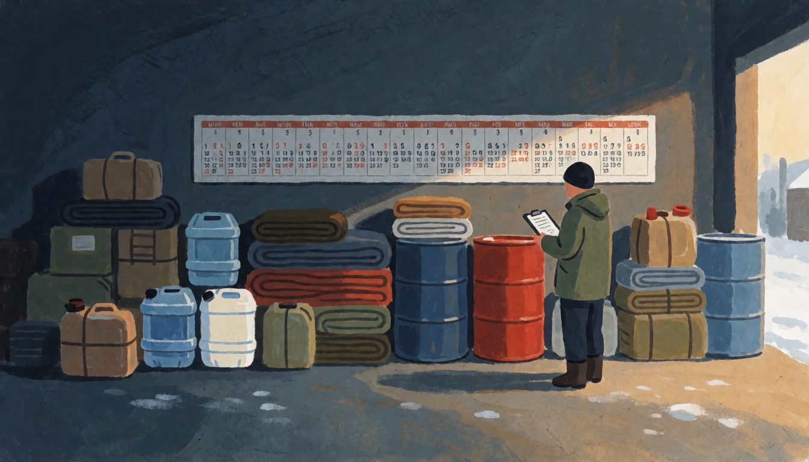
In 2015 the Swedish government decided that the country should once again plan for war. The armed forces had their plans. Civil defence is the work that government agencies, municipalities, regions and companies do so that society keeps functioning in war. It had largely stopped after the Cold War and had to be rebuilt.
Ten years later, Sweden's National Audit Office, Riksrevisionen, looked at how the rebuilding had gone. Its report of 13 March 2025 found that until 2022 civil defence had been built up slowly. From 2015 to 2018 there was no money set aside for it at all. From 2018 there was a little over 400 million kronor a year, and larger sums came only with the defence bill for 2021–2025. The work really got going in 2022, after Russia's full-scale invasion of Ukraine. Riksrevisionen named three reasons for the slow start. Nobody had said clearly what should be achieved, by whom and by when. Responsibility between sectors was unclear, and the money was neither long-term nor predictable.
Those three reasons apply to any organisation. Preparations stall when goals are unclear, owners are unclear and money has to be argued for again every year. This last chapter asks what changes when the disruption lasts for months under heightened alert, and how to make the case for paying for the difference.
Chapter 5 introduced the planning baseline, a short list of effects with durations, and chapter 22 measured how long the infrastructure under your services can stay broken. This chapter puts the two together for the longest scenario on the list.
What changes under heightened alert
Heightened alert is a legal state, defined in Sweden's law on total defence and heightened alert from 1992.
The government has also said how long organisations should plan for. Its decision of 19 December 2024 sets out the common planning basis for total defence. Military and civil defence should prepare to handle, for at least three months, a war in Europe that seriously affects how society functions. Three months gives society time to change over to wartime conditions, with different production, transport and flows of goods. In that time the most important functions keep running, and the public sector supports those who cannot cope on their own.
For an organisation like Regionverket, heightened alert is not one new scenario. It makes several of the eight prompts from chapter 6 worse at the same time, and for longer than any ordinary disruption. It is also the hardest test of whether the baseline covers enough. Nobody has lived through the cause, so the question is whether its effects still land on prompts, durations and fallbacks the organisation has already worked on. Where they do not, the analysis missed a category.
Prompt
On an ordinary bad day
Under three months of heightened alert
Long
Hours to days; occasionally weeks
Months, with no date for the end
Unstaffed
Illness, holidays, a key person away
Staff called up to the armed forces or placed elsewhere in total defence, as well as illness and exhaustion (chapter 16)
Gone
A supplier fails or goes bankrupt
Suppliers' capacity goes to defence and to customers with higher priority; transport and supply chains are disrupted
Hostile
Criminal ransomware, for money
Attacks meant to disrupt society, with more patience and resources
Forbidden
Sanctions or a new law in peacetime
Decisions by the government on what is prioritised, and limits on what may be shared or published
Unreachable
A broken network route
Damaged infrastructure repaired slowly, because repair crews and materials are needed everywhere
Under heightened alert several prompts get worse at once. The fallbacks that cover each prompt on an ordinary day were rarely sized for months, or for all of them together.
The uncomfortable part of the table is that the disruption is also happening to the people who must respond. The operators who would run the manual mode may be called up, tired or worried about their families. The suppliers who would deliver are delivering to someone else, and a second problem arrives before the first is over. The government's decision adds one more condition: in decisive phases, such as the start of an attack, civil resources will be used in the way that best supports the military defence. Some of the help Regionverket would count on in a peacetime crisis, from fuel deliveries to the municipality's own staff, may not be theirs to call on. A plan that works only if others help on the first day is a peacetime plan.
Which laws ask for what
Several laws ask organisations to prepare, and they overlap. Read one at a time, they look like separate compliance projects. Placed on the loop from chapter 2, they ask for many of the same things and leave the same gaps. The table describes the position in October 2026. Laws in this area change often, and Appendix C keeps a dated list.
Law
Who it covers
What it asks for
Where on the loop
Cybersäkerhetslagen (SFS 2025:1506), Sweden's version of the EU's NIS2 directive, in force since 15 January 2026
Medium and large organisations in listed sectors, including drinking water and district heating
Risk management measures, including continuity, backups, disaster recovery and crisis management; reporting of significant incidents (early warning within 24 hours, report within 72 hours, final report within a month); training for management
Know, Contain, Recognise, Recover, Adapt
A new law on the resilience of critical operators, implementing the EU's CER directive
Operators that the authorities identify as critical
Risk assessments and resilience measures, incident reporting. Proposed by the government in July 2026 to take effect on 1 January 2027; before the Riksdag in October 2026
Know, Degrade, Recover
Säkerhetsskyddslagen (2018:585), the protective security act
Activities of importance to Sweden's security
A security protection analysis, protection of sensitive information, security-cleared staff, protective security in procurement
Know, Contain
The act on municipal crisis preparedness (2006:544)
Municipalities and regions, and so the owners of most Swedish utilities
Risk and vulnerability analyses, plans for crises and for heightened alert
Know, Degrade
The act on total defence and heightened alert (1992:1403), and the ordinance on government agencies' preparedness (2022:524)
The state and its agencies; sector agencies such as Livsmedelsverket and Energimyndigheten guide the organisations in their sector
Planning for heightened alert and war; the sector agencies issue guidance and requests
Know, Degrade, Adapt
The main obligations placed on the loop, as of October 2026. Most of them ask you to know your risks and to report; fewer say how long your fallbacks must last.
The laws share a great deal. A good dependency map and a good planning baseline answer a large part of several laws at once: the cybersecurity law's risk management, the coming resilience law's risk assessment and the municipal risk and vulnerability analysis. Treat them as one piece of work with several readers.
The laws also leave the same thing out. They ask you to manage risks, keep plans and report incidents, and they say little about duration. Only the planning assumption of three months says how long, and it is a planning basis for total defence, not a requirement you can be fined for missing. An organisation can follow every law in the table and still have fallbacks that last a weekend. The laws set a floor; the planning baseline is where you decide what you need.
Will our fallbacks last three months?
Most fallbacks are sized for the disruptions that people remember. A manual routine is written for a day, a stock of paper forms lasts a week, and backup power has fuel for the time it usually takes to get the grid back. None of that is wrong for an ordinary crisis. The question here is what happens when the fallback has to carry the service for three months.
Regionverket's two known gaps show the difference. Livsmedelsverket's handbook for drinking water suggests fuel for three to five days of backup power and treatment chemicals for at least three months without deliveries. Regionverket has fuel for about two days and chemicals for about three weeks. The fuel gap matters in a regional blackout. The chemicals gap matters under heightened alert, when deliveries may stop for longer than three weeks and other water producers are trying to buy the same chemicals. The handbook's ways to close it are larger stocks, sharing agreements with other local users, and the ability to switch between different chemicals that do the same job.
A useful way to test any fallback is to play it forward in three steps.
Week one. Does it start? Who switches to it, with what instructions, and where are they kept?
Week six. Can it still run? The people working it need rest and replacements, consumables run out, and small faults that were tolerable for a day pile up.
Month three. Is it still the right fallback? By now the organisation is running a different service, at a lower level, with different people. Someone must decide what to stop doing for good.
The example also shows which fallbacks last. Manual operation ran out in week six because only two people knew the difference between it and the ordinary day. A fallback that looks like ordinary work under worse conditions can be run by more people for longer. So the design question for three months is how small that difference can be made. The practice question is who, beyond the two experts, has done the different part.
Making the case on one page
Closing a gap like Regionverket's chemicals costs money every year, for an event that may never come. The people who decide on that money need a case they can read in a few minutes. Real costs from real incidents help, because they show what not paying has cost others.
The Dental and Pharmaceutical Benefits Agency, TLV, is the agency whose bill chapters 4 and 17 followed. It sets the prices of medicines in Sweden, and every month it decides which of several interchangeable medicines pharmacies should offer, normally the cheapest. When the IT supplier Tietoevry was hit by ransomware in January 2024, TLV could not produce that choice for March 2024. Pharmacies used workarounds, more expensive medicines were sold, and the effects ran on into April. The extra cost was a little over 110 million kronor, of which 68 million fell on the state's drug benefit scheme and 42 million on patients.
The Swedish Transport Agency, Transportstyrelsen, paid in a different way. In 2017 it became public that the agency's IT, outsourced to IBM, had been run with access from abroad. The contract was changed so that operations would be run from Sweden, which raised it from 400 to 590 million kronor, an extra 190 million. From November 2024 the agency ran its IT operations in-house (chapter 12).
Both costs were paid after the event, and most of TLV's was paid by others. That is why preparation is hard to fund. The cost of preparing is certain, visible and yours, while the cost of not preparing is uncertain, comes later and often lands on someone else. A good case makes the second cost as concrete as the first. It answers the board's three questions: what we can do today, where we must be, and how we get there, with an owner, a date and a cost.
Line
What to write
Regionverket's chemicals, as an example
Scenario
One line from the baseline, with its duration
No deliveries of treatment chemicals for three months under heightened alert
What it does to people
Who is harmed, how soon, how badly
After about three weeks, the waterworks cannot treat water for 140,000 people
What we have today
The current fallback and how long it lasts
Stock for about three weeks; no sharing agreement
What we propose
The change, and how long it makes the fallback last
Raise stocks to three months; agree to share with two nearby water producers
Cost
One-off and yearly
Storage and stock (estimate from the purchasing team)
Comparison
A real cost of a similar failure, with its source
Livsmedelsverket's estimate for the Östersund outbreak, or a cost from your own sector
What stays uncovered
The part of the scenario the proposal does not fix
A failure lasting longer than three months; contaminated stock
Owner and date
Who does it, by when
Head of water production, before next winter
A one-page case. The "what stays uncovered" line is the one decision makers most often miss and most need: it tells them what they are still accepting.
Keep the case to one page and one scenario. A board can decide on one gap at a time, and the next case is easier once the first has been closed and checked. Put a number on the harm to people as well as on the money. Regionverket's strongest argument is that 140,000 people would lose their water after three weeks, and the guidance says three months.
Deep dive Does preparation pay? What the evidence says
The best evidence comes from natural hazards in the built environment. The US National Institute of Building Sciences estimated in 2019 that federal grants for reducing natural-hazard risk save about six dollars for every dollar spent. A World Bank study the same year estimated that making power, water and transport in low- and middle-income countries more resilient would return about four dollars for each dollar invested. Both figures come from models, but they are large and point the same way.
There is also evidence on why preparation is underfunded. Andrew Healy and Neil Malhotra studied US elections and found that voters rewarded politicians for spending on disaster relief but not on preparedness. Yet by the authors' estimate a dollar of preparedness was worth about fifteen dollars of later damage avoided. The UK government's Resilience Framework of 2022 admits that most of its emergency spending goes to response and recovery, and commits to building a better evidence base for prevention.
What is missing is good evidence for the measures in this book: continuity plans, exercises, redundant IT and manual fallbacks. No rigorous study of their return was found in the research for this book. Strength of evidence: strong that preventing damage to infrastructure pays on average; moderate that decision makers systematically underinvest; weak for any specific return on an organisation's continuity work. So make each case on its own scenario and its own numbers, without borrowing a ratio from another field.
How much of the baseline do we cover?
A one-page case closes one gap. The board also needs the whole picture: how much of the baseline is covered, and where the largest gaps are. The simplest view is a table with one row per scenario and three questions: is there a fallback, has it been tested, and does it last as long as the scenario says?
Regionverket's coverage at the start of the book, before its exercises. Where there is no fallback, or where someone has counted (fuel and chemicals), the answer is a clear no; everywhere else the honest answer is "unknown", and that is itself the finding.
The table is uncomfortable to fill in honestly, and that is its value. Each row is the organisation's claim about what it can do today, and the exercises and incidents that follow test the claim. Regionverket's managers can answer "how long" only where someone has counted: fuel and chemicals. Everywhere else the answer is "unknown", because no fallback has been run for longer than a day. The exercises in this book turn those unknowns into numbers, one row at a time, towards a table the organisation has reason to believe. That is a different thing from a table with every cell filled.
The three empty cells on the drinking-water page from chapter 8 belong in the same review. The chemicals gap is the one-page case above. The false-readings gap became the escalation rule in chapter 19. The cold restart of the groundwater waterworks still has only an owner and a date.
Show the table to the board once a year, next to the register of obligations and the one-page cases that were decided. Over a few years it shows whether the organisation is closing its gaps or only describing them. It also answers the question Riksrevisionen found missing: what should be achieved, by whom and by when.
Synthesis
Looking ahead
This is the last chapter. The epilogue steps back from heightened alert and asks what the capabilities in this book look like on an ordinary Monday, when there is time to practise them.
Further reading
Riksrevisionen, Den statliga styrningen av det civila försvarets uppbyggnad (RiR 2025:4, 13 March 2025). The audit behind this chapter's opening, in Swedish. Its phrase for the build-up before 2022 is "saktfärdigt", slow.
Regeringen, Gemensamma förutsättningar för utvecklingen av totalförsvaret 2025–2030 (decision of 19 December 2024). The source of the three-month planning assumption, in Swedish and only fourteen pages.
Lag (1992:1403) om totalförsvar och höjd beredskap. The short law that defines heightened alert.
Andrew Healy and Neil Malhotra, "Myopic Voters and Natural Disaster Policy", American Political Science Review 103(3), 2009. Why preparedness is underfunded even when it pays.
TLV, "It-attack ledde till problem för apoteken och omfattande extra samhällskostnader" (29 October 2024). A short, concrete account of what one supplier's incident cost society, in Swedish.
Back matter
Epilogue
Everyday Survivability
The capabilities that save you in a crisis are everyday ones
The book began at 06:40 on a Monday in February, with Regionverket's operator unable to log in, the temperature at −18 °C and the heating plant running on the settings it had at midnight. The questions then were whom to call, what could still be seen and how long there was. By now you can answer them for Regionverket. The question that remains is how an organisation gets to the point where its own operator can answer them without a book.
Most of the capabilities in these chapters are ordinary habits that an organisation either practises every week or does not have when it needs them. A crisis does not create them. It shows whether they were there.
Five habits that do the work
Looking back over the chapters, five habits come up again and again. None of them needs a crisis to practise.
Small changes, often. A change made in a small step that can be undone is easier to understand when something goes wrong, and quicker to reverse. Doing things often works the same way for fallbacks: a manual routine or a restore that people have done recently is one they can do on the day (chapter 20).
Known dependencies. A dependency map that is updated at every procurement, every exercise and every incident (chapter 6) is never more than a few months out of date. One drawn for an audit is out of date the day after.
Short feedback loops. Weak signals, near-misses and small failures are cheap lessons if someone looks at them within days (chapter 19). Left for a year, they become the story of the next large incident.
Deputies for everything. Every role that matters in a crisis has a named deputy who has actually done the job, on an ordinary day, recently (chapter 16). Holidays are the cheapest exercise there is.
Honest reviews. After every incident and every exercise, the organisation asks what made sense to the people at the time, writes the findings as actions with owners and dates, and checks them at the next review (chapter 21).
Each habit is simple. That is deliberate. Chapter 3 argued that a fallback should be as simple as it can be and still work, and the same holds for habits: a routine that needs a project to run will not be run. A routine that fits into an ordinary week will be.
The Monday-morning test
Here is a test you can run on any Monday morning, in about an hour, with the people who would be in the room if something went wrong. Pick one important service and answer each question out loud. Write down every answer that starts with "I think" or "probably".
If nobody could log in at 06:40 today, who would notice first, and whom would they call?
Where is the printed list of phone numbers, and when was it last checked?
What is the least this service must do, and how many hours can it go without doing it?
What does it stand on, two levels down, and which of those does it share with many others?
Which fallback would we use, when did we last use it, and how long would it last?
Who decides to switch to it, and who decides if that person is away?
How many hours do we have without the grid and the mobile network?
What did our last exercise find, and which of its actions are done?
An organisation that can answer all eight with facts rather than guesses is well prepared for most of what this book describes. One that cannot has found its next piece of work, and found it on a quiet Monday rather than on the day.
Back matter · Appendix A
Appendix A: Tabletop Exercises
Setup, injects, facilitator notes and hidden discussion answers for every exercise
Every exercise in this book is a tabletop exercise on Regionverket, run the way chapter 0 describes: an exercise director who owns it, a neutral facilitator who runs it, and an evaluator who takes notes and leads the hot wash. Each entry below gives the purpose, who should take part, the setup, the injects with timings and the questions for each, and facilitator notes with hints and the answers groups usually reach. The method follows MSB's guidance on seminar exercises (MSB2286, 2023) and FEMA's HSEEP (2020).
Exercise
Chapter
Title and length
A.0
0
Exercise 0, warm-up (20 min): the login screen
A.1
1
Certainty reframe for Regionverket (20 min)
A.3
3
Crisis inventory for Regionverket billing (40 min)
A.4
4
Service cards for water, heat and billing (45 min)
A.5
5
Pre-mortem on a planned migration (40 min)
A.6
6
Prompt workshop on the billing SaaS (60 min)
A.7
7
Nobody can log in at 07:00 (45 min)
A.8
8
Build the page for district heating (60 min)
A.9
9
40% of staff out for a month (45 min)
A.10
10
One bad change, everywhere at once (40 min)
A.11
11
Waterworks on local control (45 min)
A.12
12
A feature barred in Sweden from Monday (45 min)
A.13
13
Rebuild identity from nothing: how long? (45 min)
A.14
14
Mobile network down, all staff to reach (40 min)
A.15
15
A supplier incident with three customers (60 min)
A.16
16
Five absences that would stop us (30 min)
A.17
17
Read the billing contract against the baseline (45 min)
A.18
18
Day one of a blackout, a new hire (30 min)
A.19
19
Near-miss review (30 min)
A.20
20
Design your own tabletop (60 min)
A.21
21
Blameless review of an earlier exercise (45 min)
A.22
22
Power and mobile down for five days (60 min)
A.23
23
Three months of heightened alert (60 min)
A.0 The login screen
Chapter:0 · Time: 20 minutes · Players: 2–8; works alone as a written exercise
Purpose: a warm-up that shows how much of an organisation's response depends on logging in.
Setup (3 min): the facilitator reads the Monday morning scene from chapter 0: 06:40, −18 °C, the operator on duty cannot log in to the system that runs the heating plant, and the phone still works.
Time
Inject
Question to the players
+3 min
(Starting situation)
What can the operator still see and control without logging in? What is on paper in the control room?
+8 min
"The second operator tries on another computer. Same result."
Whom do you call first, second and third? How do you reach them?
+13 min
"The company chat and the IT support portal use the same login."
How does the IT team find out? Who decides whether to switch the heating plant to local manual control?
Hot wash (5 min): what did we assume we could do that needs a login? Write down one thing to check this week.
Facilitator notes
Hint If the group says "we would just call IT"
Ask where the IT team's on-call number is written down, and whether that list is printed. Ask what happens if the IT team's own tools also sit behind the login.
Discussion answers What usually comes out
Most groups find that the operator can see less than they expected, that the call-out list lives in a system behind the login, and that nobody is sure who may decide to switch to manual control. Those three findings come back in chapter 7 (the "can't log in" effect class), chapter 11 (working by hand) and chapter 15 (who decides). A good result is one checked fact by the end of the week: for example, whether the control room has a printed call-out list.
A.1 If becomes when
Chapter:1 · Time: 20 minutes · Players: 3–8, ideally including someone who owns the risk register
Purpose: practise rewriting feared events as effects and durations, and see what each rewrite reveals.
Setup (3 min): the facilitator shows Regionverket's three feared events from chapter 1: a cyberattack, a long power cut, the chemicals supplier failing.
Time
Inject
Question to the players
+3 min
(Starting situation)
Rewrite each event as an effect and a duration. Choose the worst moment, not an average day.
+10 min
"It is the first week of February, and the forecast says −20 °C."
Which of your three rewrites gets worse? What would still work in the first 24 hours?
+15 min
"The security software on every computer has just received a faulty update."
Which of your rewrites already covers this, without naming the cause?
Hot wash (5 min): which rewrite pointed at a gap nobody had written down? Who owns that gap?
Facilitator notes
Hint If the group keeps naming causes
Ask "and what does that do to us?" until the answer is an effect: something that stops, for a stated time. "A cyberattack" becomes "nobody can log in"; "a storm" becomes "no power and no mobile network".
Discussion answers What usually comes out
The third inject (the faulty update) is usually covered by the "nobody can log in" or "computers unusable" rewrite, which is the point: effects cover many causes. Groups often find that the power rewrite collides with the two days of fuel at the waterworks, and the chemicals rewrite with the three weeks of stock. A good result is two or three gaps named with an owner, to be followed up in chapter 4 and chapter 5.
A.3 Crisis inventory for billing
Chapter:3 · Time: 40 minutes · Players: 3–8, ideally someone who runs billing, someone from customer service and someone who holds a budget
Purpose: list what Regionverket would actually have if billing stopped, find the fallbacks that share fate with billing, and put every missing item into a lead-time register.
Setup (5 min): the facilitator explains that billing runs as a cloud service, that the billing team downloads a list of customers and meter readings every month, and that the file is kept in the company's file storage behind the same cloud login as everything else. Draw two columns on the board: "what the normal way needs" and "what each fallback needs".
Round 1 (15 min): list every fallback for billing the players can think of, including ones that exist only in someone's head. For each, fill in the two columns and circle every item that appears in both.
Time
Inject
Question to the players
+20 min
"The vendor's platform is gone. The vendor says it will be at least a month before it is back."
Which of your fallbacks still work? Who decides whether to send estimated invoices, and on what data?
+27 min
"It is the same morning the cloud login fails, as in chapter 0."
Which fallbacks are now out of reach? What would it cost to remove that shared fate?
Debrief (13 min): write every missing item into a lead-time register with a lead time, a person who can decide on it and its status today. Choose the one item with the longest lead time, and give it an owner and a date.
Facilitator notes
Hint If the group says "the vendor has backups"
Ask where the vendor would restore them, and how long that took the British Library (chapter 3). Then ask what Regionverket itself would hold during that month, and whether anyone has ever opened the monthly export outside the billing system.
Discussion answers What usually comes out
Most groups find that the monthly export is the only real fallback, that it sits behind the same login as everything else, and that nobody has tried to produce an invoice from it. Moving one copy to a computer outside the cloud login is cheap and quick. The longer items are usually a documented way to send estimated invoices, which needs a management decision and a legal check, and a second person who knows how the billing data is built. Customer service often points out that the first need is not invoices at all, but a way to answer customers who ask about their last one.
A.4 Service cards for water, heat and billing
Chapter:4 · Time: 45 minutes · Players: 4–8, ideally including the people who own heat, water and billing, and someone from management who can make decisions
Purpose: write service cards for three services, set tolerances from the harm to the people served, and see where the group disagrees about whose harm counts.
Setup (5 min): the facilitator shows the heat card from chapter 4 and the table of harm over time. Split the players into three pairs or small groups, one each for water, heat and billing.
Round 1 (15 min): each group writes its card: the service in plain words, who is harmed and how fast, the worst moment, the tolerance in time and one second measure, the minimum viable service, the tier and the first level of the mission thread.
Time
Inject
Question to the players
+20 min
"The finance director asks why billing is not tier 1, since it brings in all the money."
The billing group answers. Where does the money belong on the card?
+27 min
"The water group's tolerance turns out to be exactly as long as today's restore time for the control system."
Was the tolerance set from the harm or from the systems? What would it be if set from the harm?
+33 min
"A faulty update doubles one invoice run."
Does the billing card have a tolerance for wrong invoices as well as for none? Which is tighter?
Debrief (7 min): lay the three cards side by side. Which tolerance was hardest to agree on, and whose harm did the disagreement turn on? Write down who in management must confirm each tolerance, and by when.
Facilitator notes
Hint If a group cannot agree on a tolerance
Ask the group to describe the first person outside Regionverket who would be harmed, and when. For heat that is a resident of an old building in a cold spell; for water, a care home when the reservoirs run dry. Then ask how long that person could wait. The tolerance follows from the answer, not from the systems.
Discussion answers What usually comes out
Heat and water end up in tier 1 with tolerances measured in hours, and billing in tier 3 with a tolerance of weeks for no invoices but a much tighter one for wrong invoices. Groups often find that the water tolerance depends on how fast emergency water can be delivered, which can take up to three days (chapter 0), so the minimum viable service must say who gets water first. The most useful finding is usually that nobody in the room has the authority to set the tolerances, which is a management decision.
A.5 Pre-mortem on a planned migration
Chapter:5 · Time: 40 minutes · Players: 4–10, ideally including the people who will carry out the change, an operator from the control room, and someone who will not be affected by it
Purpose: find what could make a planned change fail before it is approved, and check the change against the planning baseline.
Setup (5 min): the facilitator describes the plan. Next spring, Regionverket will move the control room's user accounts into the company's cloud login, so that operators need only one password. The project has a budget and a date. Then the facilitator says: "It is next February. The move has gone badly wrong. Why?"
Round 1 (10 min): each player writes, alone and in silence, every reason for the failure they can think of. Then the facilitator goes round the table, one reason per player per round, until all are on the board.
Time
Inject
Question to the players
+15 min
(The list on the board)
Which reasons point to an entry in Regionverket's baseline? Mark each one with the entry number.
+25 min
"The project manager says the cloud login has 99.9 per cent availability in the contract."
Which baseline entries does that figure not cover? What happens to the control room in the remaining hours?
Debrief (10 min): choose the three most serious reasons. For each, write one change to the plan, or one condition that must be met before the move is approved, with an owner.
Facilitator notes
Hint If the group starts defending the plan
Remind everyone that the failure has already happened; the task is to explain it, not to prevent it. If the room goes quiet, ask the control room operator what they would do at 06:40 on a cold Monday if the login failed after the move.
Discussion answers What usually comes out
The strongest finding is usually that the move makes baseline entry 1, nobody can log in for two weeks, much worse: the control room would join everything else behind one login, which is exactly the Monday morning in chapter 0. Common conditions for approval are a local account on the control system that works without the cloud login, printed instructions for using it, and a test before the move. Groups also tend to find that entry 4 matters, since the cloud login needs the internet connection, and entry 3, if the login provider could be forbidden. The availability figure covers neither.
A.6 Prompt workshop on the billing system
Chapter:6 · Time: 60 minutes · Players: 4–8, ideally someone who runs billing, someone from customer service, someone who buys IT, and one person who knows nothing about billing
Purpose: practise the eight prompts on one real dependency, and find the cells with no fallback.
Setup (10 min): the facilitator draws the billing service in the middle of a whiteboard and asks the players to add its dependencies, layer by layer, using the table in chapter 6. Stop after ten minutes, whatever is on the board.
Round 1 (20 min): take the billing system and ask the eight prompts in order. For each, write the effect, how you would notice, the fallback and the owner. Do not argue about likelihood; the prompts are about effects.
Time
Inject
Question to the players
+25 min
"The vendor e-mails: our support team is down to one person for the next three weeks."
Which prompt is this? What changes in your answers to the others?
+35 min
"Customer service reports that customers are calling about invoices that are twice the usual amount."
How would you know whether this is Wrong or an attack (Hostile)? Who decides to stop the next billing run?
+45 min
"The vendor's cloud provider announces it will stop serving customers in two countries from next month. Sweden is not one of them, yet."
Run Forbidden and Long. What would you need to know from the vendor today?
Debrief (10 min): list every cell with no fallback. The players choose three to fix first and write one sentence on why each. Record dependencies that were missing from the board at the start.
Facilitator notes
Hint If the board stays thin
Ask where the people who would handle a billing failure would get their information from: the customer register, the meter data, the bank's confirmation of payments, the login service. Ask who depends on billing's outputs: the bank, the debt collection agency, the finance department's month-end close.
Discussion answers What usually comes out
Most groups find a working answer for Unreachable on their own side, and none for Gone beyond "the vendor has backups". The monthly export is often named as the fallback for Gone; ask whether anyone has ever imported it anywhere, and how long that would take. The second inject (Unstaffed) usually shows that the vendor's knowledge of the configuration sits with very few people. The third inject (Forbidden) usually ends with "we would have to ask the vendor", which is the finding: write the question down and send it. A good result is three named gaps with owners, not a complete matrix.
A.7 Nobody can log in at 07:00
Chapter:7 · Time: 45 minutes · Players: 4–8, ideally including someone from IT, the control-room manager, someone from customer service and the person who would lead the crisis team
Purpose: work through the effect class "we can't log in" across the whole organisation, and test whether the prepared fallbacks are really independent of the login.
Setup (5 min): the facilitator reads the starting situation: it is Tuesday at 07:00 in November, +2 °C and raining. Nobody at Regionverket can log in to anything that uses the cloud login. That includes the control system's operator screens, e-mail, chat, the IT support portal and the document system. The phones work. The plants are running on their last settings. The facilitator hands out the fallback table from chapter 7, or the players' own version of it.
Time
Inject
Question to the players
+5 min
(Starting situation)
List the first five things that stop, in the order they hurt someone outside Regionverket. Which fallback covers each?
+15 min
"IT reports that the emergency accounts are stored in the password manager. The password manager also uses the cloud login."
Which fallbacks fail the independence test? What can the control room still do with local accounts and paper?
+25 min
"The login provider's status page says: 'We are investigating unusual activity affecting some customers.' Two other utilities in the region call to say they have the same problem."
Does knowing that this may be an attack change anything you do now? What must you not do until you know more? Who must be told, and by when?
+35 min
"It is now Wednesday 07:00. The login is still down, and the provider gives no estimate."
What does the crisis team need to run for a week instead of a day? Who is on shift tonight, and how do you reach them?
Hot wash (5 min): which fallback did we trust that turned out to share the login? Who owns fixing it, and by when?
Facilitator notes
Hint If the group says "IT will fix it"
Ask what IT will log in with, and where its instructions are kept. Ask how IT will tell the rest of the organisation what is happening when e-mail and chat are down. If the group answers "by phone", ask where the phone numbers are written down.
Discussion answers What usually comes out
Most groups put the control room first and customer service second, and find that billing can wait for days. The second inject usually exposes at least one fallback that shares the login: emergency accounts, the call-out list or the incident plan. The third inject is about cause. A good answer keeps the effect-based response going and adds the cause-specific steps: do not reconnect or reset accounts in ways that could help an attacker, and check the reporting duties under the cybersecurity act (an early warning within 24 hours if it is a significant incident). The fourth inject usually shows that nobody has planned shifts for the crisis team itself, which leads to chapter 16.
A.8 Build the page for district heating
Chapter:8 · Time: 60 minutes · Players: 4–8, ideally someone who runs the heating plants, a control-room operator, someone from purchasing and someone who answers for the heating service
Purpose: build the one-page map for a second mission thread, find its thin and empty cells, and see which gaps it shares with drinking water.
Setup (5 min): the facilitator puts up an empty grid (five layers by six stages) and the drinking water page from chapter 8 for reference. Remind the players of the heating facts from chapter 0: a combined heat and power plant burning wood chips, two smaller oil-fired plants for the coldest days and for when the main plant is down, pumps in the pipe network, and the cooling table.
Round 1 (20 min): write the top of the page (what heating is for, how fast it hurts at −18 °C) and list the dependencies across the five layers. Then fill in the grid, marking each cell as filled, thin or empty. Do not argue about wording; if the group disagrees whether a cell is filled, mark it thin.
Time
Inject
Question to the players
+25 min
"Run scenario 4: regional power and mobile network down for five days, in the first week of February."
Which cells does it lean on? How long do the oil-fired plants run on the oil in their tanks? Can the network pumps run without grid power?
+35 min
"The wood-chip supplier calls: its lorries are being requisitioned for another use under heightened alert, from Monday."
Which cell does this hit? How many days of chips are on site? What does the page say happens then?
+45 min
"Put the drinking water page next to yours."
Which dependencies do the two pages share? Which single action would close a gap on both?
Debrief (10 min): list every thin and empty cell, write an action with an owner and a date for the two that matter most, and note every shared dependency.
Facilitator notes
Hint If the grid fills too easily
For every filled cell, ask when it was last tested and by whom. A cell that cannot answer that is thin. Ask especially about Recover: who has restarted the main plant after a full stop in winter, and how long did it take?
Discussion answers What usually comes out
Groups usually find the same gap as on the water page in the Physical row at Degrade: backup power that lasts too few days, and fuel that every other organisation will also want. They often find that the network pumps are the weak point, because heat can reach buildings by natural circulation only if the network keeps running. The wood-chip inject usually exposes an empty Supply chain cell. Shared dependencies are typically power, fuel, the login, the control room and the same few skilled people. One fix that helps both pages, such as a larger fuel store or a second fuel supplier, is often the first action chosen.
A.9 40% of staff out for a month
Chapter:9 · Time: 45 minutes · Players: 4–8, ideally the control-room manager, someone from HR, a manager from the field teams and the person who would lead the crisis team
Purpose: use the degradation ladder and the minimum-service mode when the loss is people, not systems, and find the buffer of slack that is missing.
Setup (5 min): the facilitator reads the starting situation: it is the second week of January. A severe flu wave has reached the region, and the health authorities expect it to last at least a month. From Monday, about 40% of Regionverket's staff are expected to be away at any one time, spread unevenly across teams. All systems work normally. The facilitator puts up the degradation ladder from chapter 9.
Time
Inject
Question to the players
+5 min
(Starting situation)
Which rung of the ladder do you move to on Monday, and who decides? What stops first?
+15 min
"Of the six people who can run the groundwater works by hand, three are ill. One of the remaining three is also on the control-room rota."
Draw up the control-room and plant shifts for week two. Which skill runs out first? Who can learn it quickly, and from whom?
+25 min
"The temperature drops to −20 °C. The main heating plant trips and must be restarted. The two people who have done a cold restart are both away."
Do you move further down the ladder? Who do you call outside Regionverket for help, and is that arranged in advance?
+35 min
"Week four. Staff who have worked double shifts for three weeks start reporting sick with exhaustion."
How do you protect the people still working? What would you have needed in place a year ago?
Hot wash (5 min): which buffer of slack would have made the month easier? Estimate its cost, and name an owner for the decision.
Facilitator notes
Hint If the group says "we would bring in temporary staff"
Ask who, from where, and how long they would need before they could safely work in a control room or at a waterworks. Ask whether other utilities in the region would be hit by the same flu wave at the same time, and whether they are counting on the same contractors.
Discussion answers What usually comes out
Most groups move to the reduced step at once (billing and routine field work paused) and find that this frees people but not the right skills. The second inject shows that a handful of people hold the skills for manual operation, and that the shift plan for half the staff, if there is one, assumes them all. The cold restart inject usually exposes that nobody outside Regionverket has been arranged to help, which leads to mutual aid with neighbouring utilities (chapter 17). The fourth inject leads to chapter 16: a minimum-service mode must be staffed for its whole length, with rest built in from the first day.
A.10 One bad change, everywhere at once
Chapter:10 · Time: 40 minutes · Players: 3–8, ideally a control-room operator, someone from IT, someone who manages the control-system supplier, and a manager who signs off changes
Purpose: find what Regionverket's redundant plants share, and design rules that stop one change from reaching all of them.
Setup (5 min): the facilitator reads the scene. It is a Tuesday in October. At 18:00 the control-system supplier installs a routine update, remotely, on the systems that run both waterworks and the main heating plant. Everyone has been told it is low risk. At 19:20 the operators notice that the readings from all three plants have stopped changing.
Time
Inject
Question to the players
+5 min
(Starting situation)
What do the operators know, and what can they still control from the control room? Which plant do you deal with first?
+12 min
"The supplier's on-call engineer says the update cannot be rolled back remotely tonight. Someone must go to each plant."
Who goes where? Which plants can run on local control, and for how long?
+20 min
"It turns out the same supplier account installed the update on all three plants in one session."
Run the shared-dependency checklist from chapter 10. Which rows did the three plants share tonight?
+28 min
"The supplier asks whether it may install the corrected update on all three plants tomorrow morning."
What do you answer, and what rules do you set before saying yes?
Hot wash (7 min): write down three rules for changes to the control system, in the style of the ETOPS rule. For each, name who would enforce it and what it would cost.
Facilitator notes
Hint If the group says "the supplier should just test better"
Ask what Regionverket itself controls. Better testing at the supplier helps, but Regionverket decides when, where and in what order changes reach its plants. Ask who at Regionverket approved tonight's update, and whether anyone could have said "one plant first".
Discussion answers What usually comes out
Groups usually find four shared rows: the same software, the same change at the same time, the same supplier account, and the same control room. Typical rules are: updates go to one plant at a time, with a full day of normal operation before the next; a Regionverket operator watches every remote session; the supplier's account cannot reach all plants at once; and every plant has a printed local-control procedure that was practised in the last quarter. Ask the group whether the two oil-fired heating plants should get updates on a different schedule from the main plant, since they are the backup. Most groups also realise that nobody at Regionverket has a list of what the supplier can change remotely.
A.11 Waterworks on local control
Chapter:11 · Time: 45 minutes · Players: 3–8, ideally both shifts' operators, a waterworks technician, the duty officer on call, and someone from customer service
Purpose: practise running the waterworks by hand, decide what the operators may do without reaching a manager, and find what is missing from the downtime kit.
Setup (5 min): the facilitator reads the scene. It is 02:10 on a Saturday in November. The login to the control system stops working. At 02:30 a storm cuts the power in half the region, including the area around the lake waterworks. The control room can no longer see either waterworks. The duty officer's mobile goes straight to voicemail. Hand out the intent for drinking water from chapter 11, if the group has written one; otherwise hand out nothing.
Time
Inject
Question to the players
+5 min
(Starting situation)
What do the two operators do in the first 15 minutes? Who goes where, and what do they take with them?
+13 min
"The lake waterworks' backup generator has started. The technician on site says the chlorine dosing pump shows an alarm."
May the operators keep sending water into the network? Who decides, and on what basis?
+22 min
"It is 04:00. The reservoir levels, read by hand, are falling faster than usual. Nobody has reached the duty officer."
What may the operators do without asking? What do they write down?
+32 min
"The power company estimates that power will return on Sunday evening. The generator has fuel for about two days."
Plan the next 36 hours: staffing, fuel, readings, and who tells the municipality and the public.
Hot wash (8 min): list what the operators needed that was not in the control room, and every decision they hesitated over. Each item becomes an action with an owner and a date: either something added to the kit, or a line added to the intent.
Facilitator notes
Hint If the group waits for the duty officer
Keep the manager unreachable. Ask the operators what they would do if nobody answered until 06:00, and whether anything written down allows it. If the group has no written intent, stop for two minutes and ask them to write the "limits" row together. It usually takes less time than they expect.
Discussion answers What usually comes out
The dosing alarm is the decision groups find hardest. The limit in chapter 11's example intent, never send water into the network that has not been disinfected, answers it: the operators stop sending water from that waterworks and rely on the reservoirs and the groundwater works while the technician fixes the pump. Groups without a written limit often argue for ten minutes and then do the same thing, which shows why the limit belongs on paper. Common gaps in the kit are printed reservoir and valve maps, the supplier's on-call number, a working radio and a log sheet. Most groups also find that the two-day fuel stock becomes the limiting factor on Sunday, which links to chapters 0 and 9. Note who in the group knew how to run the local panel; if it was one person, that is a finding for chapter 16.
A.12 A feature barred in Sweden from Monday
Chapter:12 · Time: 45 minutes · Players: 3–8, ideally someone who runs billing, the head of finance, someone who buys IT, a lawyer or security officer, and someone from customer service
Purpose: work through a Forbidden dependency that is also Long, and test the exit card for the billing system.
Setup (5 min): the facilitator reads the scene. It is a Thursday in March. The billing system's supplier e-mails all customers: because of new export rules in the country where its cloud provider is based, the feature that matches incoming payments to invoices will not be available to customers in Sweden from Monday. The rest of the system keeps working. The supplier does not know for how long. Hand out the exit card from chapter 12.
Time
Inject
Question to the players
+5 min
(Starting situation)
What exactly stops on Monday? Who notices first, and when does it start to hurt: customers, finance or the bank?
+13 min
"Finance says about 30,000 payments arrive each month. Matching them by hand takes about two minutes each."
Can Regionverket match payments by hand? With whom, and for how long? What stops while they do it?
+22 min
"The supplier confirms the feature will not return in Sweden. It offers a different payment-matching service, run by a partner in another country."
Run the Forbidden prompt on the partner. What would you need to know before accepting?
+32 min
"The head of finance asks: should we start leaving the billing system altogether?"
Use the exit card. What would leaving take, in data, function and knowledge, and how long? What do you decide today?
Hot wash (8 min): update the exit card with what you learned. Name the three gaps that would cost most if this happened for real, and who closes each.
Facilitator notes
Hint If the group says "this can't happen"
Point to chapter 12: Kaspersky's customers in the United States lost updates on a set date, and the 5G operators in Sweden had to replace working equipment. Ask the group to suspend judgement on how likely it is, and treat it as a test of the exit card. The prompts are about effects, not likelihood.
Discussion answers What usually comes out
The second inject's numbers matter: 30,000 payments at two minutes each is about 1,000 hours a month, roughly six full-time people. Groups find they cannot staff that for long without stopping something else, which turns a narrow Forbidden problem into a Long one. Most groups decide to accept the partner service only after asking where it runs and under which law, and to start a small exit study in parallel. The exit card usually turns out to be thinner than the group expected: no tested import, tariff rules held by one person, and data deleted soon after the contract ends. A good outcome is a decision to test the export within a month and to add exit terms at the next contract renewal.
A.13 Rebuild identity from nothing
Chapter:13 · Time: 45 minutes · Players: 3–8, ideally including someone from the IT team, someone who owns the control system, and a manager who can approve spending
Purpose: estimate, honestly, how long it would take to rebuild Regionverket's login service from nothing, and find the steps that depend on the thing being rebuilt.
Setup (5 min): the facilitator reads the scenario from the example in chapter 13. An attacker has encrypted Regionverket's own servers and holds administrator accounts in its cloud login service. Investigators say the attacker has been inside for at least three weeks. The heating plants and waterworks run on local control; nobody can log in to anything.
Time
Inject
Question to the players
+5 min
(Starting situation)
List, in order, every step from "nobody can log in" to "the control room operators can log in to the control system's screens again". Who does each step, and how long does it take?
+15 min
"The cloud provider's support asks you to prove you are Regionverket. Its usual check is a call to an administrator's registered mobile number, or an e-mail to an administrator's address."
Both belong to accounts the attacker controls. How do you prove who you are? Who at Regionverket has the contract and the customer number, and where are they written down?
+25 min
"The backups of your servers are online and between one and 30 days old. The investigators cannot yet say exactly when the attacker arrived."
Which backup would you restore from, and what would you rebuild instead? What do you need to know first?
+32 min
"The IT consultancy you planned to call has twelve other customers hit by the same attack. It can send one person on Thursday."
What changes in your timeline? What could you do yourselves, and what would you stop doing?
Hot wash (8 min): add up the times. Compare the total with what Regionverket's continuity plan says. Write each step that depends on the broken login as a finding with an owner and a date.
Facilitator notes
Hint If the group's timeline is a few hours
Ask them to walk through each step aloud: where they sit, which computer they use, which password they type, and where they read the instructions. Ask where the clean laptops come from, and how they connect to the internet without the company network. Ask who decides which of 420 people get their accounts back first.
Discussion answers What usually comes out
Groups usually find that proving their identity to the cloud provider is the first blocker, and that nobody has written down the contract details, the break-glass accounts or the provider's emergency contact outside the systems that are locked. The timeline typically grows from hours to days once the clean place to work, the outside help and the order of accounts are counted. A common finding is that the restore order has never been agreed, so the group argues about billing against the control system. Good actions: a printed recovery card with the provider's emergency contact and the contract number; break-glass administrator accounts kept offline (see chapter 18); a named consultancy with a retainer; and a timed restore test of one service into a separate cloud account.
A.14 Mobile network down, all staff to reach
Chapter:14 · Time: 40 minutes · Players: 4–8, ideally including a line manager, someone from HR, the head of communications and a control room operator
Purpose: test Regionverket's PACE plan for staff against a long loss of the mobile network, and find out whether the emergency channel is really known.
Setup (3 min): the facilitator reads the scenario. It is a Tuesday in November. The cloud login has been locked by an attacker since 06:40. At 15:00 a storm cuts power in large parts of the region. By 18:00 the mobile network is down almost everywhere, as base station batteries run out. The operator expects it back in about two days. The next shift change is at 07:00.
Time
Inject
Question to the players
+3 min
(Starting situation)
How do you reach all 420 staff before 07:00? Go through the PACE plan for staff in chapter 14, level by level. Which levels still work?
+12 min
"The printed call-out list in the control room is from March. HR says about 40 people have joined or left since."
What do you do about the people who are not on the list? Who knows who they are?
+20 min
"A local radio station offers to read a message from Regionverket on the morning news at 06:00."
What would you say to staff in 30 seconds, knowing the public hears it too? What must staff not hear first from the radio?
+27 min
"At 07:15, 60 people have turned up at the groundwater waterworks, which has no power, and nobody is there to tell them what to do."
What should the standing rule have said? Who is in charge at each site when nobody can be called?
Hot wash (8 min): for each level of the PACE plan, say whether it worked and why. Agree one change to the standing rule and one to the printed call-out list, each with an owner.
Facilitator notes
Hint If the group relies on texting
Remind them that texts need the mobile network too. Ask which phones in the company still work without it: landlines in the plants, radio if Regionverket has joined Rakel, satellite phones if any. Ask where those are kept and who has the numbers.
Discussion answers What usually comes out
Most groups find that the primary and alternate channels for staff both depend on the mobile network, and that the phone tree also does, because managers call their teams on mobiles. The emergency channel, the standing rule, is the one that reaches most people, and most groups find it is not written down, or says only "go to your workplace" without saying what to do there. Good actions: a standing rule with a meeting point and a named person in charge at each site; a printed call-out list updated monthly with a date on it; and a call-out test of the phone tree without mobiles, using landlines only. The radio inject usually shows that nobody has agreed what may be said publicly to staff, which links to the rule in chapter 14 that staff hear first.
A.15 A supplier incident with three customers
Chapter:15 · Time: 60 minutes · Players: 6–12 in three groups of 2–4, each playing one utility; the facilitator or a second facilitator plays the supplier
Purpose: practise moving from each customer dealing with a supplier alone to a coordinated, and if possible collaborative, response.
Setup (8 min): the facilitator explains the scenario. The supplier that maintains Regionverket's control system also serves two other utilities: one in the next region that supplies only district heating, and one that supplies only water. On Saturday at 02:00 the supplier is hit by ransomware. Its remote access to all three customers is cut, and it says its own systems must be rebuilt before it can help anyone. Each group receives a card describing its own utility, its contract and how long it can run without the supplier. The cards differ: the heating-only utility has three days of local operation in hand, Regionverket one, and the water utility a week.
Time
Inject
Question to the players
+8 min
(Starting situation; groups in separate corners)
Each group: what do you need from the supplier, by when? Who in your organisation decides, and what may your representative agree to without calling home?
+20 min
The supplier (played by the facilitator) tells each group separately: "We can restore one customer at a time, about one per day. We will start with the customer with the largest contract."
Is that order right? What do you know about the other two customers, and how could you find out more?
+30 min
"The three representatives may meet for 15 minutes." The groups send one person each to a joint meeting.
Agree a situation picture across the three utilities, with facts and assumptions apart. Can you agree a joint request to the supplier on the restore order?
+45 min
"The county administrative board calls: has anyone got an overview of which heat and water services in the county depend on this supplier?"
Who answers, with what? Does the joint meeting change your answer?
Debrief (12 min): place the response on the scale from chapter 15's deep dive: conflicted, de-conflicted, coordinated, collaborative. What would have to exist before the incident to move one step up? Write each answer as an action with an owner.
Facilitator notes
Hint If the groups only argue for themselves at the joint meeting
Ask each representative to say, in one sentence, who is hurt first if their utility is restored last. Put the three answers side by side and ask whether "largest contract first" or "people hurt first" is the better rule, and who has the standing to propose it to the supplier.
Discussion answers What usually comes out
Groups usually find that they did not know the other customers existed, let alone whom to call there, so the first 20 minutes are conflicted: each pushes the supplier alone. In the joint meeting, the differing buffers on the cards usually lead to an agreed order (Regionverket first, then heating, then water), which is a collaborative outcome, but only because the facilitator arranged the meeting. The county inject shows that no one holds the overview. Good actions: ask key suppliers for a contact at their other customers in the same sector; agree in the contract that restore order follows harm to the public; give the representative a written mandate; and add the supplier to the dependency map with the Long prompt marked.
A.16 Five absences that would stop us
Chapter:16 · Time: 30 minutes · Players: 3–8, ideally including a line manager from operations, someone from HR and the person who leads Regionverket's crisis team
Purpose: find the people whose absence would stop a critical service, and test whether their deputies could take over.
Setup (3 min): the facilitator reminds the players of Regionverket's four services from chapter 0 and of baseline scenario 5 from chapter 5: 40% of staff unavailable for a month. Each player writes down, alone and without discussion, the five people whose absence for a month would hurt Regionverket most. Roles, not names, if the group prefers.
Time
Inject
Question to the players
+3 min
(Starting situation)
Compare your lists. Which roles are on most lists? For each of the top five, who is the deputy, and has the deputy done the task alone?
+12 min
"A flu wave has kept a third of the staff at home for a week. Two of the control room operators are among them."
Can the control room still run two per shift around the clock? Who decides who works extra, and who sends people home?
+20 min
"The government has decided on heightened alert. One of your five people is in the Home Guard."
Who replaces that person from tomorrow? Did anyone know about the Home Guard before this inject?
Hot wash (5 min): which role has no deputy who could do the work today? Write one action for it, with an owner and a date. Agree who will check the staff list against the krigsplacering register.
Facilitator notes
Hint If every list contains only managers
Ask who would actually do the work if the plants ran by hand for a month. Ask who has the keys, the passwords, the supplier contacts and the knowledge of the old systems. The caretaker, the chemicals buyer and the person who knows the control system often matter more than the chief executive.
Discussion answers What usually comes out
Most groups find at least one role with no deputy, and at least one deputy who covers two roles at once, often a senior operations manager who is both the crisis lead's deputy and on the control room rota. The flu inject usually shows that ten operators are barely enough for two per shift around the clock once a third are away; the arithmetic in chapter 16's box on counting heads gives the real number. The Home Guard inject usually surprises the group, because nobody has checked. The most common action is to run the staff list against the national register, as the Energy Agency's guidance describes.
A.17 Read the billing contract against the baseline
Chapter:17 · Time: 45 minutes · Players: 3–6, ideally someone who buys IT, someone from billing or finance, and someone who has read the crisis plan; a lawyer is welcome but not needed
Purpose: practise reading a contract as a crisis document, and turn its silences into questions for the supplier or gaps in your own plan.
Setup (5 min): the facilitator hands out the terms of Regionverket's billing contract from the example in chapter 17 (99.5% availability, service credit up to 10% of the monthly fee, liability capped at twelve months of fees, indirect losses excluded, force majeure including third-party providers, data returned within 90 days in a standard format). If the group has a real contract for a critical service, use that instead. Each player gets three scenarios from the Regionverket baseline in chapter 5.
Time
Inject
Question to the players
+5 min
(Starting situation)
For each of your scenarios: does the contract cover it, say nothing, or exclude it? Write the clause, or "silent".
+20 min
"Day 12 of a billing outage. The vendor says its cloud provider is to blame and that this counts as force majeure."
What does Regionverket get under the contract? What has the outage cost so far, roughly, and who is paying it?
+30 min
"The vendor offers to raise the liability cap to 24 months of fees, in return for a longer contract."
Is that worth having? What would you ask for instead?
Debrief (10 min): list every "silent" and "excluded" row. For each, decide one of three things: ask the vendor at renewal, cover it in Regionverket's own plan, or accept it and write down who accepted it. Give each a name and a date.
Facilitator notes
Hint If the group gets lost in legal wording
Bring it back to one question per scenario: "On day 5 of this, what do we actually get from the vendor: our data, our service, or money?" The answer is usually "money, a little, much later", and that is the finding.
Discussion answers What usually comes out
Most rows end up silent or excluded: forbidden products, untrustworthy data, heightened alert and long outages are rarely in the contract at all. The force majeure inject usually shows that the vendor's own supplier failure may release the vendor completely. On the last inject, most groups decide that a higher cap is worth less than a tested monthly export, a stated recovery time and the right to leave without a fee after 30 days. A common action is to try loading the monthly export into something, anything, before the renewal.
A.18 Day one of a blackout, a new hire
Chapter:18 · Time: 30 minutes · Players: 3–8, including one person who did not write the crisis handbook, ideally someone who joined the organisation recently
Purpose: test a crisis handbook the only way that works: by having someone who does not know the plan try to follow it.
Setup (3 min): the facilitator gives the newest person in the room a printed copy of the handbook (Regionverket's outline from chapter 18, or your own) and nothing else. Their role: it is their fourth day at Regionverket, in customer service. It is 07:20 on a winter morning. The power is out across the region, mobile phones show no signal, and the office is dark. Everyone else plays colleagues who know no more than the handbook says.
Time
Inject
Question to the players
+3 min
(Starting situation)
The new hire reads section 2 aloud and says what they will do in the next ten minutes. Where did they hesitate?
+10 min
"A man in a high-visibility vest arrives and says he is from the power company. He asks for the code to the substation next to the waterworks."
What does the handbook tell the new hire to do? Who do they ask, and how, with no phones?
+18 min
"A colleague's phone gets one bar of signal and a text arrives: 'From crisis lead: all staff go home, the office is closing.'"
Should the new hire follow it? What in the handbook helps them decide?
Hot wash (5 min): list every moment the new hire had to guess or ask. Each one is a line to add or rewrite. Agree who will update the handbook, and when it will next be read aloud.
Facilitator notes
Hint If the authors keep helping the new hire
Stop them, kindly. The point of the exercise is that the authors are not there on the real morning. Ask them to write down what they wanted to say instead. Those notes are the missing lines of the handbook.
Discussion answers What usually comes out
The first inject usually shows that the handbook says where to go but not who to report to when the manager is not there. The second tests section 8, what to ignore: a good handbook tells staff never to give out codes or access on request, and to send the visitor to the control room. The third is the most useful. A handbook that says how orders are confirmed lets the new hire treat an unconfirmed text with care, whoever it claims to come from. Groups also often find that the handbook assumes a working phone somewhere in it.
A.19 Near-miss review
Chapter:19 · Time: 30 minutes · Players: 3–8, ideally a control room operator, someone from IT or security, and the manager who owns the supplier contract
Purpose: practise reviewing a near miss as a weak signal, and write an escalation rule that would have sent it further.
Setup (5 min): the facilitator reads the near miss. At 02:10 on a Sunday in March, Regionverket's monitoring records a remote login to the control system using the supplier's account. The operator on the night shift sees the notice, assumes it is planned maintenance and acknowledges it. On Monday morning, an IT technician sees the same entry, writes "supplier maintenance" in the log and closes it. Nobody contacts the supplier. Nothing else unusual happens.
Time
Inject
Question to the players
+5 min
(Starting situation)
Rebuild the timeline. What did the operator and the technician each know, and what could they have checked? Was "supplier maintenance" an explanation or an assumption?
+12 min
"The supplier's maintenance calendar, found in an e-mail, shows no work planned that weekend."
Who should have asked the supplier, and through which contact? How fast should this have gone, and to whom?
+18 min
"A search of last year's logs finds four more supplier logins at night, all closed the same way."
Is this a single near miss or a pattern of normalisation? What would the weekly look from chapter 19 have shown?
Hot wash (7 min): write Regionverket's escalation rule for supplier access in no more than five sentences: what goes up, how fast, to whom, and who confirms with the supplier. Name the owner of the rule.
Facilitator notes
Hint If the group says "the operator did nothing wrong"
Agree, and keep going. The review is about the rule, not the operator. Ask what the operator would have needed to know, or be allowed to do, for a different action to be the obvious one at 02:10: a list of planned supplier work, a number to call, permission to wake someone.
Discussion answers What usually comes out
Most groups find that nobody owned the question "was this login expected?", and that confirming it with the supplier was nobody's job. A good rule usually says that supplier logins outside agreed windows are confirmed with the supplier through a known contact, not through the account that logged in, within a set time, and are treated as an incident if they cannot be confirmed. Groups often add that the supplier must announce its maintenance in advance. The third inject tends to lead to a finding about the weekly look: the four earlier logins were each explained away, and nobody saw them together.
A.20 Design your own tabletop
Chapter:20 · Time: 60 minutes · Players: 4–8, split into two design teams if there are more than five; one person who will later act as facilitator
Purpose: practise designing a tabletop exercise from a baseline scenario, with objectives that can be checked and injects that take tools away, and test the design on colleagues.
Setup (5 min): the facilitator hands out Regionverket's ten baseline scenarios from chapter 5 and the tabletop anatomy from chapter 20. Each team picks one scenario that no earlier exercise in the book has covered, for example the chemicals supplier stopping deliveries or time signals becoming unreliable.
Design (25 min): each team writes the purpose, two objectives someone could check afterwards, a starting situation (day, time, weather, who is on duty), three injects of which at least one removes a tool for responding, two questions for each inject, and the hot wash questions.
Time
Inject
Question to the players
+30 min
"The exercise director says you have half the time you planned: 45 minutes instead of 90."
Which inject do you cut, and which objective goes with it? What does that tell you about your priorities?
+35 min
(Test run) Each team runs the first 15 minutes of its design, with the other team as players.
Did the starting situation make the players act, or did they start by asking for more information? Did the first question produce a decision?
+50 min
"The chief executive asks what this exercise will cost and what it will prove."
Answer in two sentences. Would a drill or a restore test answer one of your objectives better than a tabletop?
Debrief (10 min): each team names one change to its design after the test run, and who will own the action plan when the exercise is run for real. Put the exercise in Regionverket's calendar.
Facilitator notes
Hint If the objectives stay vague
Ask the team how they would know, after the exercise, whether the objective was met. "Practise our response" cannot be checked. "Find out who can order an extra chemicals delivery from a second supplier, and how long it takes" can. If the team cannot say how they would check it, the objective needs another round.
Discussion answers What usually comes out
Most first designs have too many injects and too few decisions: a good story that the players watch rather than act in. The test run usually shows this within ten minutes. Teams also tend to forget the inject that removes a tool; when they add it (the phone list is in the system that is down, the deputy is on leave), the discussion gets much sharper. The cost question often leads a team to move one objective to a drill, which is the right outcome: the tabletop finds the question, the drill answers it.
A.21 Blameless review of an earlier exercise
Chapter:21 · Time: 45 minutes · Players: 4–8, including if possible the owners of the open actions and someone from senior management; a facilitator from outside the team
Purpose: practise reconstructing decisions in context instead of judging them, using a case where the decisions were to put something off.
Setup (5 min): the director explains the rule of the review: what people say will not be used to judge them, and the findings will be about conditions, not people. The facilitator then shows the action plan from the login-screen exercise (A.0) run a year ago. Of four actions, one is done (printing the control room call-out list). Three are open: make the IT on-call number reachable without the login; agree who may decide to switch the heating plant to local control; check whether the company chat works when the cloud login is down.
Time
Inject
Question to the players
+5 min
(Starting situation)
For each open action, reconstruct why it made sense to put it off. What else was the owner asked to do that year? What did they know? Who would have noticed if it had been done?
+20 min
"The owner of the decision-rights action says: 'I raised it twice in the management meeting and it was moved to the next agenda both times.'"
Where does the condition behind this action sit: with the owner, the meeting, or the way actions are followed up? What would have made it get done?
+30 min
"A board member asks who is responsible for the fact that three of four actions are still open."
How do you answer looking back, and how do you answer looking forward? Write the answer you would give the board in three sentences.
Hot wash (10 min): write each finding as a condition ("actions without a date on the management agenda are moved indefinitely"), with an owner and a date. Decide which drift indicator from chapter 21 would have shown this earlier.
Facilitator notes
Hint If the discussion turns to who failed
Stop it gently and ask the reconstruction questions again: what did they know, what were they trying to achieve, what else was competing for their time? If the group keeps returning to a person, ask what would happen if that person left tomorrow: would the condition change, or would the next person put the action off for the same reasons?
Discussion answers What usually comes out
Groups usually find that the actions were reasonable to postpone one at a time, and that nothing in the organisation added them up or noticed when they were postponed again. Typical findings: actions had owners but no one who checked them; the management meeting had no slot for exercise actions; the decision-rights question needed a decision above the owner's level, which nobody had arranged. The board answer usually ends up as: looking back, the follow-up process failed and here is why; looking forward, these named people own these fixes by these dates. This is exercise debt from chapter 20 seen through the lens of drift.
A.22 Power and mobile down for five days
Chapter:22 · Time: 60 minutes · Players: 4–8, ideally someone from water production, someone from heating, the control room, customer service, and whoever buys fuel
Purpose: find the hour at which each important service first gets worse when the grid and the mobile network are down, and the buffer that runs out.
Setup (10 min): the facilitator reads the starting situation: a Tuesday in late November, a storm overnight, +2 °C and wet. At 05:00 the regional grid goes down, and by 08:00 the mobile network in most of the region is dark. The grid company says restoration will take "several days". The players draw the infrastructure stack for drinking water from chapter 22 and write the hours of autonomy for each buffer they know of.
Time
Inject
Question to the players
+10 min
(Starting situation, hour 3)
What still works? Who is on duty, and how do you reach the people who are not?
+20 min
"Day 2, 14:00. The fuel supplier says it cannot deliver before Friday: its own depot has no power for its pumps."
How much fuel is left at each site? Which site do you keep running if you must choose? Who decides?
+30 min
"Day 3. Operators at a remote pumping station report that its clock and the control room's clock disagree by several minutes, and the logs no longer line up."
What takes its time from where? Does it matter for running the plant today, or only for the record?
+40 min
"Day 4. The municipality asks for emergency water at the hospital and two care homes, and wants to know when the taps will fail in the north of the region."
What do you tell the municipality, and how do you get the message there? What is your best estimate, and how sure are you?
Debrief (10 min): for each service, write the hour it first got worse and the buffer that ran out. Choose the two changes that would add the most hours, and give each an owner and a date.
Facilitator notes
Hint If the group assumes the grid will be back on day 1
Show the repair-time table from chapter 22. Storm Gudrun left some customers without power for more than a month. Ask what the plan looks like if the grid company's estimate of "several days" is wrong by a week.
Discussion answers What usually comes out
Most groups find that fuel sets the limit for the plants, at about two days, and that the mobile network sets the limit for what the control room can see, much sooner. Few know how long the base stations near their sites run on battery, or how fuel is ordered and paid for when phones and card payments are down. The time inject usually reveals that nobody knows where the control system gets its time; that is a good finding even though it does not stop the water. The municipality inject often shows that there is no agreed way to send a message to the municipality without the mobile network.
A.23 Three months of heightened alert
Chapter:23 · Time: 60 minutes · Players: 4–8, ideally including a member of the management team, someone who handles staffing, someone from water production and someone who buys chemicals or fuel
Purpose: play one service forward through three months of heightened alert, find what runs out first, and write a one-page case for the gap that matters most.
Setup (10 min): the facilitator reads the starting situation: the government has declared raised alert (skärpt beredskap). Nothing is broken yet at Regionverket. Deliveries are slower, staff with duties in total defence have been called up, and the authorities expect the situation to last for months. The players choose the drinking water service and write down its fallbacks.
Time
Inject
Question to the players
+10 min
"Week one. Seven of Regionverket's staff, three of them operators, report for duty elsewhere in total defence."
Who covers the control room and the waterworks? How many shifts can you staff, for how long?
+20 min
"Week three. The chemicals supplier says deliveries are rationed between customers and Regionverket will get half its usual amount, with no date for full deliveries."
How long does the stock last at half deliveries? Who else nearby uses the same chemicals? What would you stop doing?
+35 min
"Week six. A cyberattack makes the control system's data at one waterworks untrustworthy. Nobody is hurt yet."
Can you run that waterworks by hand for weeks, with the staff you have left? What is the first thing that runs out?
+45 min
"Month three. The board asks what it should fund now, so that the next long period goes better."
Which single change would add the most weeks? Fill in the one-page case from chapter 23.
Debrief (5 min): fill in the heightened-alert row of the coverage table. Read the one-page case aloud, including the line on what stays uncovered, and agree who will take it to the board.
Facilitator notes
Hint If the group treats heightened alert as a short crisis
Ask the players to name the day they expect it to be over. When they cannot, ask what their plan looks like on day 60. Remind them of the government's planning basis of at least three months.
Hint If the group says the authorities will provide
Point out that in decisive phases, civil resources go where they best support the military defence. Ask which of Regionverket's needs the authorities have actually promised to meet, in writing.
Discussion answers What usually comes out
People run out before things do. Most groups find that only a few operators can run a plant by hand, and that the plan quietly assumed all of them would be available. The chemicals inject shows the three-week stock against the three months in Livsmedelsverket's guidance, and often leads to the idea of sharing agreements with neighbouring water producers. Groups that write the one-page case find the "what stays uncovered" line the hardest, and the most useful to the board. A common finding is that nobody knows which staff have duties elsewhere in total defence; that list is cheap to make and belongs in the action plan.
Back matter · Appendix B
Appendix B: Analysis Methods
The methods behind the book's workshops, in more depth
The chapters use a few simple tools: the service card in chapter 4, the planning baseline in chapter 5, the eight prompts in chapter 6 and the page in chapter 8. They are deliberately light, so that a group can use them in a workshop of an hour or two. Each of them borrows from older and heavier methods, developed in safety engineering, security and business continuity.
This appendix describes those methods for the reader who needs more. Perhaps a regulator wants a recognised method, a service is too critical for a 90-minute workshop, or an analyst asks where the prompts come from. It says what each method is for, when it is worth the effort, and where it falls short. None of them is needed to use the book.
A minimum kit
Most organisations do not need every method. The order below is the one this book follows, and it is enough for most services.
Start from the mission. List the important services and follow each one down as a mission thread (chapter 2). Rate how fast its loss hurts people, and set a tolerance (chapter 4).
Agree what to plan for. Write a short planning baseline of effects and durations, and test plans against it with a pre-mortem (chapter 5).
Map the dependencies in five layers and ask the eight prompts of each one (chapter 6).
Put it on one page for each critical thread, and keep the empty cells visible (chapter 8).
Go deeper only where it pays. Use STPA on the two or three threads where a wrong action can hurt people within hours. Use the NIST catalogue as a checklist when you design or buy something new.
Close the loop with exercises, because no analysis shows whether people will do what the plan says (chapter 20).
The rest of this appendix follows the same order.
Methods that start from the mission
Survivable network analysis. The Software Engineering Institute at Carnegie Mellon published its Survivable Network Analysis method in September 2000 (CMU/SEI-2000-TR-013). It starts from the organisation's mission, identifies the essential services that support it, and then asks how each service would resist an attack, recognise one and recover from one. The report is dated and written for networks, but its order of questions is the one this book uses: mission first, then services, then the systems underneath. MITRE's crown jewels analysis does the same job for defence and government, tracing missions to the assets they cannot do without.
Business impact analysis (BIA) is the core of business continuity. For each activity, it asks how the harm grows over time when the activity stops. It then sets targets: how long the activity may be down, how much data may be lost, and what minimum level must be kept. ISO 22301 requires one, and ISO/TS 22317 describes how to do it. Its weakness is that the answers are usually self-reported by the people who run each activity, and they tend to be optimistic. It also often stays with the continuity team and never reaches the engineers who would have to deliver the targets.
Impact tolerance is the British financial regulators' version, and chapter 4 uses it. Firms set a maximum tolerable disruption for each important business service, measured from the harm to customers, and must show that they could stay within it in severe but plausible scenarios. The Financial Conduct Authority's notes from 2024 warn against the commonest shortcut: setting the tolerance from how long recovery currently takes, instead of from how long people can bear the loss.
Methods that ask what could go wrong
These methods come from engineering, where they have been used for decades. They differ in where they start: from a component, from a process, from an outcome you want to avoid, or from the way control works.
FMEA (failure mode and effects analysis, standardised as IEC 60812) works from the bottom up. For each component it lists the ways it can fail and what each failure does to the rest. It suits well-understood equipment, such as a pump or a generator. It is weak at failures that come from interactions between parts that each work, and it tends to consider one failure at a time.
HAZOP (hazard and operability study, IEC 61882) walks a team through a process, one part at a time, with a fixed list of guide words: no, more, less, reverse, part of, other than, early, late. The guide words are what make it thorough, because they force the team to ask questions it would otherwise skip. The eight prompts in chapter 6 work the same way.
Fault trees work from the top down. You name an outcome you want to avoid, such as "salaries not paid on time", and break it into the combinations of events that could cause it. They are good for one specific outcome, and they make shared causes visible: if the same event appears under both branches of an AND, the redundancy is not real. They assume you already know how the causes connect. Attack trees, introduced by Bruce Schneier in 1999, do the same for an attacker's goal. They are useful for thinking through how an attacker could reach a mission-level harm, but they cover only deliberate attacks, and they grow quickly.
STPA (System-Theoretic Process Analysis) was developed by Nancy Leveson at MIT. Chapter 8 describes it in a deep dive. It draws the control structure, meaning who controls what, with which commands and what feedback. It then asks how each command could be unsafe: not given, given when harmful, too early, too late, or stopped too soon. Its strength is that it finds harm that occurs when every part works as designed. STPA-Sec applies the same steps to security. The cost is days of work per thread by people who know the process well. The STPA Handbook (Leveson and Thomas, 2018) is free and has worked examples.
FRAM (the Functional Resonance Analysis Method) was developed by Erik Hollnagel. It describes an activity as a set of functions and looks at how the normal variation in each one can combine into an unexpected outcome. It is good at showing the difference between work as it is imagined in procedures and work as it is actually done, and it is often used after an incident. It is qualitative and can grow large.
Method
Starts from
Use it when
Watch out for
Business impact analysis
Activities and the harm over time
Setting priorities and tolerances
Optimistic, self-reported answers
Dependency mapping with the eight prompts
One service and what it stands on
Always; it is the core of the book
Maps go stale; logins, names and time are easy to miss
FMEA
Components
Well-understood equipment
Misses interactions between working parts
HAZOP
A process, with guide words
Physical processes such as water treatment
Slow; needs the right people in the room
Fault tree
One outcome to avoid
A specific outcome, such as "no heat to the hospital"
Assumes you know how the causes connect
Attack tree
An attacker's goal
Thinking through attack paths to mission harm
Covers only attacks; grows quickly
STPA and STPA-Sec
The control structure
The two or three threads where a wrong action hurts people fast
Days of work per thread
FRAM
Functions and their normal variation
Understanding how work is really done; after incidents
Qualitative; can sprawl
Pre-mortem and scenarios
A failure that has already happened
Before a large change; testing a plan
Limited by the group's imagination
NIST SP 800-160 Vol. 2
Goals and techniques for resilience
Design reviews and purchases
Heavy; must be cut down to fit
Wardley mapping
The value chain and how mature each part is
Sourcing and exit decisions
Not a method for finding hazards
The methods side by side. The light tools in the chapters are enough for most services; the heavier methods earn their cost on the few threads where harm comes fast.
The eight prompts and the older guide words
The eight prompts are this book's own list, but six of them have a close match in older methods. The deep dive in chapter 6 sets out the matches. In short, Gone, Unreachable, Wrong and Slow or partial correspond to HAZOP's "no", "other than", "less", "part of" and "late", and to STPA's questions about commands that are missing, wrong or badly timed. Hostile corresponds to attack trees and STPA-Sec, and Unstaffed to business continuity's "loss of people". Forbidden and Long have no guide-word precedent that the research behind this book could find. They come from exit rules such as DORA's and from the reasonable worst cases in national risk registers.
If you already run HAZOP or FMEA on a process, you do not need to replace it. Add the two missing prompts, Forbidden and Long, and add a column for the people and suppliers the process depends on.
Methods that imagine the failure
Scenario planning writes a few different but plausible futures and asks how a plan would fare in each. Pierre Wack described how Shell used it in the 1970s (chapter 5). The pre-mortem, described by Gary Klein in 2007, is the quick version: the group imagines that a plan has already failed and writes down why. It takes half an hour and gives people permission to say what they would otherwise keep to themselves. Both are limited by imagination, which is why this book pairs them with a planning baseline set from real repair records and national assumptions.
Catalogues and maps
NIST SP 800-160 Volume 2 (Revision 1, 2021) is the most complete catalogue of ways to make systems cyber-resilient. It organises them under four goals: anticipate, withstand, recover and adapt. Below those come objectives, and below the objectives a long list of techniques and approaches. Reading it from cover to cover is hard work. Used as a checklist during a design review or a purchase, it is very useful: for each goal, which of the techniques does this design use, and which does it leave out on purpose?
Wardley mapping was developed by Simon Wardley. It places each part of a service on two axes: how visible it is to the user, and how mature it is, from custom-built to a standard commodity. It does not find hazards. It helps with the sourcing decisions in chapter 12: which parts you could replace quickly because many suppliers offer them, and which are so specialised that leaving would take years.
Back matter · Appendix C
Appendix C: Regulatory Reference
Dated: what applies, from when
The chapters mention laws where they matter to a decision. This appendix collects them in one place, with the dates that decide whether they apply to you yet. Chapter 23 places the main obligations on the loop and argues that they set a floor rather than a plan. The tables below are the reference behind that argument.
Agencies and sectors
Three changes to the Swedish system took effect in 2026. Documents written before them use the old names.
What changed
From
What it means for you
MSB, the Swedish Civil Contingencies Agency, became MCF, the Swedish Civil Defence Agency (Myndigheten för civilt försvar)
1 January 2026
Guidance published before 2026 carries the MSB name and is now hosted by MCF. The book cites it under the name it was published with.
Cert-SE and MCF's other operational cyber security work moved to the National Cyber Security Centre (NCSC) at FRA, the National Defence Radio Establishment
1 July 2026
Check where incident reports and requests for support now go, and update the contact details in your crisis handbook.
The preparedness sectors in the ordinance on government agencies' preparedness (förordning 2022:524) now number twelve; the latest amendment, SFS 2026:620, took effect on 1 July 2026
1 July 2026 (latest change)
Drinking water sits in the sector for food supply and drinking water, led by Livsmedelsverket. District heating sits in the energy supply sector, led by Energimyndigheten together with Svenska kraftnät.
Security and resilience
Law
In force
Who it covers
What it asks for
Chapters
Cybersäkerhetslagen (SFS 2025:1506), with the cybersäkerhetsförordning (SFS 2025:1507). Sweden's implementation of the EU's NIS2 directive (Directive (EU) 2022/2555). Replaces the NIS law (2018:1174).
Issued 11 December 2025; in force 15 January 2026
Medium and large organisations in listed sectors, among them drinking water and energy, including district heating
Risk management measures, including continuity, backups, disaster recovery and crisis management; reporting of significant incidents: an early warning within 24 hours, an incident report within 72 hours and a final report within one month; cybersecurity training for management
A new law on the resilience of critical operators, implementing the EU's CER directive (Directive (EU) 2022/2557). Government bill prop. 2025/26:303, En ny lag för ökad motståndskraft hos kritiska verksamhetsutövare.
Proposed for 1 January 2027. The bill was submitted on 14 July 2026 and is before the Riksdag in October 2026.
Operators that the authorities identify as critical in designated sectors, public or private
Measures to increase resilience, built on a risk assessment; reporting of certain incidents; supervision. The bill also proposes higher administrative fines under the protective security act for private operators.
Säkerhetsskyddslagen (SFS 2018:585), the protective security act
In force since 1 April 2019. Amendments in force from 1 December 2021 (prop. 2020/21:194).
Activities of importance to Sweden's security, public or private
A security protection analysis; protection of sensitive information; security-vetted staff. Since 1 December 2021, a documented suitability assessment before outsourcing or other arrangements that would give someone else access to security-sensitive activity, and in some cases consultation with the supervisory authority, which can stop the arrangement.
DORA, the Digital Operational Resilience Act (Regulation (EU) 2022/2554)
Applies from 17 January 2025
Financial firms and, through them, their critical ICT suppliers
ICT risk management, incident reporting, resilience testing, and management of ICT third-party risk. Article 28(8) requires exit strategies for ICT services that support critical or important functions. Not binding on a utility, but a useful template.
A personal data breach must be reported to the supervisory authority, in Sweden IMY, within 72 hours of becoming aware of it, unless it is unlikely to result in a risk to people
Lag (1992:1403) om totalförsvar och höjd beredskap
In force
Defines heightened alert (höjd beredskap) in two levels, skärpt and högsta beredskap. The government declares them; if Sweden is at war, the highest level applies automatically.
Förordning (2022:524) om statliga myndigheters beredskap
In force since 1 October 2022; latest amendment SFS 2026:620 (1 July 2026)
The preparedness duties of government agencies, the twelve preparedness sectors and the agencies that lead each one. Sector agencies give guidance to organisations in their sector.
Guidance is not law, but the sector agencies use it to say what they expect, and the book relies on it for Regionverket.
Livsmedelsverket, the handbook on crisis preparedness and civil defence for drinking water (2024). It suggests fuel for three to five days of backup power and treatment chemicals for at least three months without deliveries (chapters 0, 8 and 23).
Livsmedelsverket, regulations on drinking water (LIVSFS 2022:12).
Energimyndigheten, the guide to placing staff in the energy sector under total defence (2022), used in chapter 16.
MSB (now MCF), Gemensamma grunder för samverkan och ledning vid samhällsstörningar, the shared Swedish approach to cooperation and command (chapter 15).
Back matter · Appendix D
Appendix D: For Engineers
Design patterns, recovery engineering, platforms and observability
The chapters are written for the person who decides what must keep working. This appendix is for the people who build it: architects, platform and operations engineers, developers and the suppliers who run systems on the organisation's behalf. Each section takes one decision from the chapters and describes what it means in engineering terms. Each one ends with the question a leader is likely to ask you, so that you can prepare the answer.
The appendix is short on purpose. It points to the established engineering literature, and says where that literature is weak.
A failure domain is the set of things that fail together when one cause strikes. A server is one, a rack is a larger one, a data centre and a cloud region are larger still. Cloud providers sell separate failure domains inside a region as availability zones: separate buildings, with separate power and cooling.
The physical separation is real, but it covers only physical causes. Chapter 10 describes the DynamoDB outage of 19 and 20 October 2025. An automated system that kept DynamoDB's address records up to date ran in several copies, and a rare timing fault between two of them left the regional address empty. Customers who had spread their systems over several zones were hit anyway, because every zone used the same regional address. The logical layer above the buildings was a single failure domain.
For each critical service, list what the copies share in the logical layers as well as the physical one:
the control plane that creates, changes and scales resources, and the regional services it depends on
name resolution (DNS) and the certificates the service presents
the identity service that both copies log in to
the deployment pipeline and configuration store that update both
the security agent, monitoring agent and update service installed on both
the supplier, the support team and the account they are billed under
The shared-dependency checklist in chapter 10 is the leader's version of this list. A useful design rule follows from it: anything that must keep working during an incident should depend only on the data plane, the parts that serve requests, and not on the control plane being able to make changes. Amazon's engineers call this static stability (chapter 11; Weiss and Furr, "Static stability using Availability Zones", Amazon Builders' Library).
The question you will be asked: "If we lose the zone, the region or the provider, which of our services keep running, and what do the copies still share?"
D.2 Degrading on purpose
Chapter 9 asks leaders to decide in advance what closes first and what must keep running. Engineering makes those decisions executable.
Feature flags and degraded modes. Every function the degradation ladder says can close should be switchable off on its own, by a person on duty, without a deployment. Test the switches, and keep the list of them where the person on duty can read it without logging in.
Load shedding. When demand exceeds capacity, refuse the least important work early and cheaply, instead of serving everything slowly. The ranking comes from the service tiers in chapter 4.
Cells and bulkheads. Divide a system so that one fault, one bad customer or one bad change reaches only one part. Each cell has its own capacity and, ideally, its own data. The organisational cells in chapter 9 need technical cells underneath them: a plant that can run alone needs local accounts, local data and local control that do not call home.
Offline modes. Systems used in the field should keep working without the network, cache what they need for a shift, and queue what they record until the connection returns. Decide what the user sees when the cache is old.
The question you will be asked: "If we have to run the minimum-service mode tomorrow, which switches do we flip, who may flip them, and when did we last try?"
D.3 Changes that cannot reach everything at once
Many of the largest outages in this book were caused by a change, not an attack: a configuration change at Rogers, a maintenance command at Meta, a content update at CrowdStrike. In each case one change reached a very large part of the system before anyone could stop it.
The engineering answer is a staged rollout. A change goes first to a small part of the system, the team watches it there, and it spreads further only when it has behaved. The stages should follow the failure domains in D.1, so that a bad change stops inside one of them. CrowdStrike's content update of 19 July 2024 went to all customers at once; afterwards, CrowdStrike committed to releasing such content in stages (chapter 21).
Two further rules come from aviation's rule against dual maintenance (chapter 10). Never apply the same change to a primary and its backup in the same window, and never let the same person make both changes without someone checking in between. Automation counts as a person here: the pipeline that updates both copies of a system is a shared cause.
Finally, watch for the drift described in chapter 21. A release process that has worked many times builds trust in its checks, and the trust is reasonable until the checks themselves have a fault. Test the checking tools too, and do not let a run of good releases shorten the stages.
The question you will be asked: "What is the largest part of our systems that one change can reach before someone can stop it?"
D.4 Identity first
Identity is at the bottom of almost every dependency map. Chapter 13 tells how Maersk had about 150 domain controllers that copied their data to each other, and how NotPetya wiped every one that was online in June 2017. The one that survived, in Ghana, was offline by accident. Until it reached the recovery team in the UK, nothing else could be rebuilt.
Back up identity separately. Replication between domain controllers or identity tenants is not a backup: it copies damage as fast as it copies data. Keep offline or immutable backups of the directory itself, and of the configuration of any cloud identity service, including conditional access rules, roles and application registrations.
Rehearse a forest recovery. Microsoft's Active Directory Forest Recovery Guide describes the steps. Most organisations have never done it end to end. Do it once a year in an isolated network, and time it.
Break-glass accounts. Keep a small number of emergency administrator accounts that do not depend on the normal login path: no federation, no dependence on the normal multi-factor service, credentials stored offline and split between people. Alert on every use. Test that they work every quarter (chapter 7).
Local accounts where people must keep working. Control systems and other systems that must run without the central login need local accounts, managed and reviewed like any other.
Separate administration. Administrator accounts should be separate from everyday accounts, and the most powerful ones should be used only from dedicated devices. An attacker who takes an administrator account can undo any recovery.
The question you will be asked: "If nobody can log in tomorrow, how do we get back in, and how long does rebuilding the login take?"
D.5 Backups that survive, and somewhere to restore them
A recovery needs three things: a copy the attacker could not reach, something to restore it onto, and people who have done it before.
The copy. Attackers now look for backups first and delete or encrypt them before they set off the main attack. An offline backup is physically disconnected. An immutable backup stays online but cannot be changed or deleted for a set period, even by an administrator (chapter 13). Use separate credentials for the backup system, and make sure the backup system's own configuration, keys and catalogue are also backed up somewhere it does not depend on.
Somewhere to land. The British Library had safe copies of its collections. The infrastructure to restore them onto had been destroyed or could not be trusted, and some of its old systems could not be restored at all (chapter 3). For each critical service, write down what it would be restored onto: which hardware or cloud account, with what network and identity, and how long it takes to obtain. A clean room, an isolated environment with its own network, devices and administrator accounts, is the place to rebuild and check systems before they return to use. It can be built in advance, for example as a separate cloud account, or planned and equipped for the day.
Measured times. Plans often assume a restore takes a day. Chapter 20 describes Regionverket's first full restore test of its customer register: the restore itself took nine hours, and the whole job took eleven days. Measure the whole job: obtaining equipment, restoring identity, restoring the data, starting the application, and checking that the data is complete and correct. Use the measured time in the plans.
NIST's Guide for Cybersecurity Event Recovery (SP 800-184, 2016) covers planning and testing recovery. It recommends deciding the recovery order from the organisation's priorities and dependencies, and knowing which data and systems can be trusted before they come back.
The question you will be asked: "When did we last restore this service from scratch, how long did it take, and who did it?"
D.6 Platforms you can rebuild
Restoring an old server brings back whatever was wrong with it, including an attacker's foothold. Rebuilding from a known description is often safer, and chapter 13 discusses when to choose each. Rebuilding is only quick if the description exists.
Infrastructure as code. Networks, servers, cloud resources and their settings are described in files kept under version control, so that the whole environment can be recreated from the files.
GitOps. The running system is continuously brought into line with what the repository describes. The repository becomes the record of what should exist. The repository and the pipeline are then critical dependencies, and need their own backups outside the platform they build.
Policy as code. Security and configuration rules are written as checks that run automatically on every change, so that a rebuilt system meets the same rules as the old one.
Internal developer platforms. A shared platform that teams build on can make every service rebuildable in the same way. It also concentrates risk: the platform becomes a shared cause for everything on it, and must be the first thing you can rebuild.
Test rebuildability the same way as restores: rebuild one service from nothing in an isolated account, and time it.
The question you will be asked: "Could we rebuild this service on new equipment from what is written down, without the people who built it?"
D.7 The out-of-band platform
Chapter 7 asks for a small set of tools that lets the crisis team talk when the normal systems are gone. The British Library's crisis team met on WhatsApp on staff's own phones. At Rogers in 2022, staff whose work phones ran on Rogers' network could not call each other, except those who had SIM cards from other operators. At Meta in 2021, in the company's own words, "our primary and out-of-band network access was down", and engineers had to go to the data centres in person.
No published standard describes such a platform. This reference design follows the independence test in chapter 7: each part must not share the login, the network, the building or the supplier with normal operations.
Part
Design
Must not share
Identity
A separate identity domain, or accounts held directly in the communication service, with multi-factor authentication that does not use the normal service
The organisation's login
Communication service
Chat and voice from a supplier the organisation does not otherwise use; where possible a second service on a different cloud provider, or a small service run on premises
The normal collaboration suite and its cloud provider
Devices
A few phones or laptops kept charged, with SIM cards from a different mobile operator, not enrolled in the normal device management
The company network, the normal device management, the normal operator
Membership
Set up in advance for the crisis team and key suppliers, with a named owner who checks it every quarter
The normal directory, which may be down
Paper
Printed start-up instructions, call-out list and the first actions for each effect class
Everything
Testing
One ordinary meeting a quarter on the platform; a full start-up from the printed instructions once a year
In Sweden, organisations with a role in crisis management can apply for access to Rakel, the radio network for emergency and preparedness work. Where available, it belongs in the same kit.
The question you will be asked: "If the login, the e-mail and the mobile network are all down at 07:00, how does the crisis team meet, and when did we last try it?"
D.8 Monitoring that survives the incident
Monitoring is a dependency like any other, and it often fails with what it watches. In the Tieto outage of 2011, the supplier's monitoring service failed together with the storage it was meant to watch, and two municipalities lost sight of their own servers (chapter 6). At Rogers and Meta, the tools engineers would have used to diagnose the fault ran on the network that had failed.
Outside the failure domain. Run at least the basic checks, such as whether the service answers and whether the login works, from somewhere that does not share the network, the cloud account or the login with what they watch. Alerts should reach people through a channel that does not depend on the systems being watched.
Logs the attacker cannot delete. Send security logs to storage outside the attacker's likely reach, with retention long enough to reconstruct an attack that started weeks before it was found. Chapter 19 calls the missing ones data gaps: they hurt once when you fail to recognise trouble, and again when you try to learn from it.
A data-gap analysis. For each scenario on the planning baseline, ask what you would need to see to recognise it early, whether you see it today, and who would be looking at 03:00. The investigators of the Iberian blackout of April 2025 could not say why some plants had disconnected, because the data was not there (chapter 19).
Time sources. Many systems take their time, directly or indirectly, from satellite navigation signals, which can be jammed, spoofed or simply wrong. On 26 January 2016 GPS time was wrong by about 13.7 microseconds for several hours. Users whose own clocks could hold time without the satellites had alarms, and users without them had outages (chapter 22). Know where each important system gets its time, use more than one source, monitor the offset between them, and know how long each system can hold time on its own.
A view for leaders. The weekly look in chapter 19 needs a small, plain list: unexplained alerts closed this week, near misses, and the status of the escalation rule. Build it from the monitoring you have; do not let it depend on a dashboard that needs the normal login.
The question you will be asked: "If our main systems go dark, what can we still see, and from where?"
D.9 Service levels as tolerances
Chapter 4 asks leaders to set an impact tolerance for each important service: the longest disruption the people it serves can bear, and the minimum service that must continue. Engineering teams usually express reliability as service level objectives (SLOs), such as "99.9 per cent of requests succeed within one second over 30 days". The two should be linked, but they measure different things.
An SLO describes ordinary performance over a period and averages away the rare, long outage. A tolerance describes the worst single disruption that is acceptable. A service can meet its SLO for a year and still break its tolerance in one afternoon. So keep the SLOs for daily operation. Add to each critical service a few measures that follow the tolerance: the longest single outage this year, the measured restore time from D.5, and whether the minimum-service mode from D.2 has been tested. Report those to leaders next to the service card.
The question you will be asked: "Would the design stay within the tolerance in each scenario on our baseline, and what evidence do we have?"
Back matter
Case Sources
The best primary source for each case, and where it is used
Much of what is written about continuity and resilience falls into two groups. Standards tell you what to have, but not how it fails. Research explains how things fail, but rarely says what to do on Monday. The most useful reading for this book's reader is often neither. It is the frank account an organisation wrote after its own bad day.
This guide picks a small number of sources from the further reading at the end of each chapter, says why each one earned its place, and suggests an order for three kinds of reader. Every source listed here is cited in the chapters, where you will find the full reference. Publication details were checked in October 2026. Several of the Swedish sources are in Swedish only, and are marked as such.
If you only read three things
Reading paths
Choose the path that matches your role. Each step assumes the ones before.
flowchart TB
S["This book, Parts I and II"] --> B["British Library review and Cook"]
B --> L["Path A, leaders: Dekker, Boin et al., the planning basis"]
B --> C["Path B, coordinators: ISO 22301, MSB exercise guides, HSEEP"]
B --> E["Path C, engineers: Nygard, NIST SP 800-184, STPA Handbook"]
Three reading paths. They share a common start and divide according to whether you lead, coordinate or build.
Path A: the leader who answers for the services
The British Library review and Cook, as above.
TLV's account of what the Tietoevry attack cost (October 2024, in Swedish). What one supplier's incident cost the people an agency serves: more than 110 million kronor, most of it paid by others, with chapter 4 and chapter 17.
The government's planning basis for total defence 2025–2030 (19 December 2024, in Swedish). Fourteen pages, and the source of the three-month assumption, with chapter 5 and chapter 23.
Boin, 't Hart, Stern and Sundelius, The Politics of Crisis Management, with Part IV.
Path B: the preparedness or continuity coordinator
The British Library review, Cook and MSB 367-12.
ISO 22301, with ISO/TS 22317 on business impact analysis, and the BCI Good Practice Guidelines, with Part II.
MSB's exercise guides on seminar exercises and on evaluation, and FEMA's HSEEP, before you run the exercises in Appendix A.
Gemensamma grunder för samverkan och ledning, with chapter 15.
The Livsmedelsverket handbook for drinking water, or your own sector's equivalent, with chapter 23.
Path C: the engineer who builds what is decided
The British Library review and Cook, then Appendix D.
Nygard, Release It!, on how connections between systems fail.
The incident reports from AWS (October 2025), Meta (October 2021) and CrowdStrike (July and August 2024), and Greenberg's account of NotPetya at Maersk.
NIST SP 800-184 on recovery, and Microsoft's Active Directory Forest Recovery Guide.
Leveson and Thomas, STPA Handbook, for the most critical threads, and Rosenthal and Jones, Chaos Engineering, for practising failure.
Incident reports, with reasons
The cases in this book come mostly from reports like these. They are the closest you will get to being in the room.
British Library, Learning Lessons from the Cyber-Attack (8 March 2024). See above. Section Two covers what kept going; Sections Three and Four cover recovery.
MSB, MSB 367-12 on the Tieto outage of 2011 (2012, in Swedish). See above.
Thomas Bull et al., Granskning av Transportstyrelsens upphandling av it-drift (Ds 2018:6, in Swedish). How an agency outsourced its IT in breach of the law, and why leaving took years. Read with chapter 12.
Andy Greenberg, "The Untold Story of NotPetya, the Most Devastating Cyberattack in History", Wired (22 August 2018). Maersk's recovery, and the domain controller in Ghana, told through the people who did it. Read with chapter 13.
Hydro, The cyber attack on Hydro in brief (12 April 2019), and Havtil, "Ransomware taught key lessons" (8 May 2023). A global manufacturer on manual operations, and the people who kept it running. Read with chapters 7 and 16.
Xona Partners for the CRTC, the assessment of Rogers' networks after the outage of 8 July 2022 (published July 2024). What a telecom company's staff could not do when their own network was down. Read with chapter 14.
Santosh Janardhan, "More details about the October 4 outage" (Engineering at Meta, 5 October 2021). Short and candid, including what the storm drills did and did not cover.
CrowdStrike, the preliminary post-incident report (24 July 2024) and the root cause analysis of Channel File 291 (6 August 2024). How a trusted process let a faulty update through. Read with chapters 1 and 21.
Amazon Web Services, the summary of the DynamoDB disruption in us-east-1 (October 2025). A common cause in automation, inside one cloud region. Read with chapter 10.
ENTSO-E Expert Panel, the final report on the blackout in Spain and Portugal of 28 April 2025 (20 March 2026). Very long; the first chapter summarises the event, and the report explains why the data was so hard to collect. Read with chapters 19 and 22.
NTSB, the report on Eastern Air Lines flight 855 (NTSB/AAR-84/04, 1984). Three engines, one night's maintenance. Read with chapter 10.
Swedish official sources
Regeringen, Gemensamma förutsättningar för utvecklingen av totalförsvaret 2025–2030 (19 December 2024, in Swedish). The three-month planning assumption, in fourteen pages.
Riksrevisionen, Den statliga styrningen av det civila försvarets uppbyggnad (RiR 2025:4, in Swedish). The national audit office on how slowly civil defence was rebuilt. Read with chapter 23.
MSB (now MCF), Övningsvägledning: Metodhäfte – Seminarieövning (MSB2286, 2023) and Metodhäfte – Utvärdering av övning (MSB2233, 2023), in Swedish. How to run and evaluate a seminar exercise, the format of this book's exercises.
MSB (now MCF), Gemensamma grunder för samverkan och ledning vid samhällsstörningar, in Swedish. Sweden's shared approach to cooperation, command and situation pictures.
MCF (formerly MSB), In case of crisis or war (2024). The brochure sent to every household, in many languages, and a model of writing for people with no screen. Read with chapter 18.
Livsmedelsverket, Handboken för krisberedskap och civilt försvar inom dricksvatten (2024, in Swedish). Practical guidance on fuel, chemicals and backup power, built around two fictional organisations.
Energimyndigheten, Hur snabbt blir huset kallt vid el- eller värmeavbrott? (ET 2007:40, in Swedish), the source of the cooling times in chapter 0, and Krigsplacering av medarbetare inom energisektorn (guidance with Svenska kraftnät, 2022), used in chapter 16.
Statens servicecenter, Årsredovisning 2024 (in Swedish). Pages 25–26 describe the Primula outage for 126 customer agencies.
Standards and frameworks
ISO 22301:2019, Security and resilience: Business continuity management systems, with ISO/TS 22317 on business impact analysis. The common language of continuity. Read it for the terms and the management system; it says less about how things fail.
Business Continuity Institute, Good Practice Guidelines (2023 edition). The practitioner's handbook.
NIST, Developing Cyber-Resilient Systems (SP 800-160 Volume 2, Revision 1, 2021). The four goals of anticipate, withstand, recover and adapt, with a large catalogue of techniques. Best used as a checklist (Appendix B).
NIST, Guide for Cybersecurity Event Recovery (SP 800-184, 2016). Planning and testing recovery, written for organisations.
Financial Conduct Authority, PS21/3 Building operational resilience (2021) and its insights and observations for firms (May 2024). Impact tolerances, and the regulator's frank notes on how firms set them.
Robert J. Ellison et al., Survivable Network Systems: An Emerging Discipline (CMU/SEI-97-TR-013, 1997). The report that defined survivability.
Nancy Leveson and John Thomas, STPA Handbook (2018, free online).
FEMA, Homeland Security Exercise and Evaluation Program (HSEEP, 2020), and CISA's free tabletop exercise packages.
Books and papers on how systems and organisations fail
Charles Perrow, Normal Accidents (1984; updated edition 1999). Coupling and complexity, and why safety devices can add new ways to fail. Read with chapters 9 and 10.
Diane Vaughan, The Challenger Launch Decision (1996). The source of "normalisation of deviance". Long, and worth it. Read with chapter 19.
Sidney Dekker, Drift into Failure (2011) and The Field Guide to Understanding 'Human Error' (3rd edition, 2014). How reasonable steps add up to disaster, and how to review decisions without blame.
Karl E. Weick and Kathleen M. Sutcliffe, Managing the Unexpected (3rd edition, 2015). How organisations that must not fail notice small signs of trouble.
Erik Hollnagel, Safety-I and Safety-II (2014). The case for studying what goes right as well as what goes wrong.
J. C. Knight and N. G. Leveson, "An Experimental Evaluation of the Assumption of Independence in Multiversion Programming" (1986). The classic evidence that diverse software still fails together.
Steven Rinaldi, James Peerenboom and Terrence Kelly, "Identifying, Understanding, and Analyzing Critical Infrastructure Interdependencies" (2001). How infrastructures depend on each other. Read with chapter 22.
Michael Nygard, Release It! (2nd edition, 2018). The chapter on integration points is the best short account of how connections between systems fail.
Crisis leadership, communication and exercises
Arjen Boin, Paul 't Hart, Eric Stern and Bengt Sundelius, The Politics of Crisis Management (2nd edition, 2016). Sense-making and meaning-making as tasks of crisis leadership.
CDC, Crisis and Emergency Risk Communication (CERC) manual. Practical guidance on what to tell the public, when and how.
JESIP, Joint Doctrine: The Interoperability Framework. The British approach to strategic, tactical and operational command.
Gary Klein, "Performing a Project Premortem", Harvard Business Review (September 2007). Two pages, and enough to run your first pre-mortem.
Asaf Degani and Earl L. Wiener, Human Factors of Flight-Deck Checklists: The Normal Checklist (NASA, 1990). How to write a checklist people will use. Read with chapter 18.
Casey Rosenthal and Nora Jones, Chaos Engineering (2020), and Kelly Shortridge with Aaron Rinehart, Security Chaos Engineering (2023). The engineering forms of exercise.
John Allspaw, "Blameless PostMortems and a Just Culture" (2012). The short post that brought blameless reviews into software operations.
Andrew Healy and Neil Malhotra, "Myopic Voters and Natural Disaster Policy" (2009). Why preparedness is underfunded even when it pays. Read with chapter 23.
Back matter
Glossary
Key terms with the chapter where each is introduced
Term
Definition
Ch.
Accepted risk
A known risk that someone has decided to live with for a stated reason; in this book it always has an owner and an expiry date
21
Accidental fallback
A fallback that exists for another reason and happens to survive; nobody knows it is there until afterwards
3
Action plan
The list of findings from an exercise, each with an owner and a date, followed up until done
0, 20
Adapt
The loop stage of learning and changing after an incident
2, 21
All-hazards planning
Planning around the resources or services that can be lost, whatever causes the loss, instead of around a list of causes
7
Assume breach
Security practice of planning as if an attacker is already inside your systems
1
Assume it will happen
The book's first rule: plan as if a serious disruption is certain, and ask when, for how long and what still works
1
Beta factor (β)
The share of a component's failures that would also stop its redundant twin; a pair can be at most about 1/β times safer than one component
10
Blameless review
A review that sets out to understand why each decision made sense at the time, so the conditions behind it can be changed; accountability points forward, to owners of fixes
21
Break-glass account
An emergency account kept outside the normal login, used only when the normal way in has failed; each use is logged and the password changed afterwards
7, 18
Broken path
A broken way of reaching a dependency that still exists; needs a second route, not a second copy
6
Buffer
Whatever lets a service keep going after its supply stops: stock (things on hand), time (delay before harm) or slack (spare capacity, often people); sized in days against the baseline
9
Call-out test
An unannounced message to everyone on a call-out list, counting how many reply within set times
14
Cascade
A failure in one infrastructure that causes a failure in another, often after a delay when a buffer such as a battery or fuel tank runs out
22
Cell
A part of the organisation that can keep its own work going for a while when the rest is down, with its own way to run, its own staff and its own stock; the organisational form of a bulkhead
9
Chaos engineering
Making failure experiments on live systems routine, so that systems and teams are built to survive them
20
Civil defence
The work of agencies, municipalities, regions, companies and others so that society keeps functioning in war; with military defence it makes up total defence
23
Clean room
A separate place to rebuild from after an attack, with its own network, computers and administrator accounts and no connection to the damaged systems; also called an isolated recovery environment
13
CLOUD Act
US law of 2018 under which US providers must hand over data they control on a lawful order, wherever the data is stored
12
Collaborate
Organisations deciding together, sharing resources and following a common plan; stronger than coordinating, but needs trust and mandates prepared in advance
15
Combined situation picture
A situation picture that combines those of several organisations, for a sector, a region or the country; in Swedish, samlad lägesbild
15
Common-cause failure
One cause that stops several redundant parts at the same time, such as shared software, a shared change, a shared login, a shared supplier or a shared place
10
Concentration risk
The risk that arises when many organisations depend on the same supplier, product or infrastructure, so that one failure stops all of them at once
6, 23
Contain
The loop stage of limiting how far damage can spread
2
Continuity
Keeping the most important services going at a planned, reduced level during a disruption
1
Contract test
Reading a contract scenario by scenario against the baseline, and recording whether it covers, is silent on or excludes each one
17
Coordinate
Organisations sharing information so their actions do not clash, while each keeps its own decisions
15
Coupling
How tightly the parts of a system depend on each other; in a tightly coupled system a failure spreads quickly, with little time or slack to stop it (Perrow)
9
Coverage table
One row per scenario on the baseline, asking whether there is a fallback, whether it has been tested and whether it lasts as long as the scenario
23
Crisis handbook
A short printed document every employee holds, saying what the organisation is trying to achieve in a crisis and what each person does when systems and instructions are not available; public-safe by design
18
Crisis inventory
A list, for one important service, of every fallback and everything each needs, checked against what exists today
3
Data gap
Something you would need to see in order to recognise or understand a disruption, and cannot: not measured, too rough, or out of reach on a bad day
19
Decision log
A running record of each crisis decision: time, who decided, what it rested on, alternatives and when to review it
15
Degradation ladder
A service's planned steps down from normal, each with a trigger, what stops, what continues and who decides
9
Degrade
The loop stage of keeping the essential parts running at a lower level
2, 9, 11
Dependency
Anything a service needs in order to deliver that the service does not control by itself
6
Deputy
The person named to take over a key person's role, and who has actually done the work; recorded in the key-person register
16
Designed fallback
A fallback put in place on purpose for this kind of day, kept up and tested
3
Diversity
Making redundant parts deliberately different, in product, supplier, people, procedure or place, to lower the share of failures they have in common
10
DORA
The EU's Digital Operational Resilience Act (Regulation 2022/2554), which requires financial firms to have tested exit strategies for critical ICT suppliers
12
Downtime kit
The physical things a downtime procedure needs, kept together where the work is done: printed procedure, contact lists, forms, key data, a way to talk
11
Downtime procedure
A written, practised way of carrying on an important task without the system that normally supports it, including how the backlog is entered afterwards
11
Drift
An organisation's slide towards failure through small steps, each reasonable under pressure and made easier by earlier success (Dekker, 2011)
21
Drift indicator
A number that rises as an organisation drifts, before anything goes wrong, such as accepted risks renewed more than once
21
Drill
An exercise in which one team carries out one specific task for real, such as switching to local manual control
20
Dual maintenance
Maintenance on more than one redundant system in the same visit; aviation's ETOPS rule forbids it, or requires a second person and a ground test
10
Duty officer
The person on call around the clock who may take the first decisions and call in the crisis team; in Swedish, tjänsteman i beredskap (TiB)
15
Effect and duration
Describing a feared event by what stops and for how long, instead of by its cause
1, 5, 7
Effect class
A group of disruptions that leave the organisation with the same loss, whatever the cause. The book uses five: we can't log in; a site is gone; a supplier is gone or forbidden; people are gone; data can't be trusted
7
Eight prompts
Gone, Unreachable, Wrong, Slow or partial, Hostile, Forbidden, Unstaffed, Long: eight effects to ask of every dependency
6, 7
Empty cell
A cell on the page where nothing is in place and nobody has decided what should happen; the main finding of the page
8
Escalation rule
A rule saying which signals must go further than the person who first sees them, how fast and to whom; in this book, a signal is closed only with a written explanation
19
Evaluator
The person in an exercise who takes notes against its goals and leads the hot wash
0
Exercise calendar
A plan of exercises over several years that rotates through the baseline scenarios and mixes tabletops, drills and larger exercises
20
Exercise debt
The gap between what plans promise and what exercises have shown: open findings from earlier exercises, plus fallbacks never exercised
20
Exercise director
The person who owns an exercise, opens and closes it, and can stop it
0
Exit
Leaving a supplier without stopping the service; complete only when you have the data, a replacement for the function, and the knowledge of how the service works
12
Exit card
A one-page summary per critical supplier of what leaving would take: data, function, knowledge, contract terms, whose law applies, time to leave and owner
12
Exit strategy
A plan, made in advance, for leaving a supplier without stopping the service
12
Facilitator
The neutral person who runs an exercise discussion, keeps time and introduces the injects
0
Fallback
Whatever lets a service carry on, at some level, when the normal way of delivering it stops; designed, accidental or improvised
3
Family readiness
Staff having water, food, heat and a plan for children and relatives at home, so that they can come to work in a long crisis
16
Filled cell
A cell on the page with something in place, an owner and a recent test
8
Five layers
Technology, people, organisation, physical and supply chain: the parts of an organisation where a disruption can land
2, 6
Fixed rhythm of briefings
Updates given at set times, even when nothing has changed, so that people stop asking in between
14
Force majeure
A contract clause that frees a party from its obligations when events outside its control stop it; often wide enough to include a supplier's own suppliers
17
Fourth party / Nth party
Your supplier's supplier, and further down the chain
6
Full-scale exercise
An exercise that moves real people and equipment, often across several organisations, as if the event were happening
20
Functional exercise
An exercise in which several functions work together in real time, while field work is only simulated
20
Game day
A planned day on which a team causes a failure on purpose in a real system and practises the response
20
GNSS
Global navigation satellite systems such as GPS and Galileo; besides position, they supply the precise time many networks and systems depend on
22
Gold, Silver and Bronze
Three levels of crisis management: strategic (the aim), tactical (how to reach it) and operational (doing the work)
15
Graceful degradation
A planned sequence of reduced service levels, decided in advance, so that the most important services are the last to stop
9
Heightened alert
Höjd beredskap: the Swedish state of readiness, with the levels raised alert (skärpt beredskap) and highest alert (högsta beredskap); highest alert applies automatically in war
23
Hindsight bias
The tendency, once the outcome is known, to see the path to it as obvious and the people involved as careless
21
Holdover
A backup clock's ability to keep accurate time for a while without satellite signals
22
Hot wash
A short debrief held straight after an exercise, while memories are fresh
0, 20
Hours of autonomy
How long a service can keep running on what is on site, without the grid, the mobile network or deliveries
22
Identity
The service that knows who every user is and what they may do; at the bottom of almost every restore order
13
Immutable backup
A backup that stays online but cannot be changed or deleted for a set period, even by an administrator
13
Impact tolerance
The most disruption to an important service you will accept, in time and, where useful, a second measure; set by the harm to the people served
4
Important service
Something an organisation delivers to people outside it that would cause them serious harm if it stopped
4
Improvised fallback
A fallback invented on the day by the people present; often works at small scale, slowly
3
Independence test
Asking what a fallback shares with the thing it replaces (login, building, power, supplier, people, data), to find when it would fail together with it
7
Independent failure
A failure that strikes one copy at random, without affecting the others
10
Infrastructure stack
A service's dependencies followed down to power, telecom, time and fuel, with the buffers between them
22
Inject
A new event introduced during an exercise to move the scenario on
0, 20
Inriktning
Swedish: agreeing on what to achieve together in a crisis; direction
15
Intent
A short statement, written in advance, of a service's purpose, its acceptable end state in a disruption and its limits, so people can decide on their own when nobody can be reached
11
Interactive complexity
How many unexpected ways the parts of a system can affect each other (Perrow)
9
Interdependency
Infrastructures depending on each other, physically, through information, by location or through decisions and markets (Rinaldi, Peerenboom and Kelly, 2001)
22
Jamming
Drowning out satellite navigation signals so receivers lose position and time
22
Jurisdiction
Whose law applies to a supplier and to your data; a supplier based abroad must obey its home country's law wherever your data is stored
12
Key person
A person whose absence would stop or seriously slow a critical activity, because they have knowledge, skills, access or authority nobody else has
16
Key-person register
A list of key persons, what only they can do, their deputies and whether each deputy is ready today
16
Know
The loop stage of knowing what you have, what matters most and what it depends on
2
Krigsplacering
A wartime posting: the place a person must report to under heightened alert, decided by the Swedish Defence Conscription and Assessment Agency; nobody may have more than one
16
Lead time
The time from deciding you need something to having it ready to use
3
Lead-time register
A list of what fallbacks need that takes long to put in place, with lead time, decision-maker and status
3
Liability cap
The most a supplier will ever pay for failing, whatever the loss; usually tied to the fees and far below the customer's loss
17
Local rationality
The principle that people's actions made sense to them at the time, given their goals, knowledge and pressures
21
The loop
Know, Contain, Recognise, Degrade, Recover and Adapt: the six stages of what an organisation does about disruption
2, 23
Manual drill
A planned hour or shift of real work done by hand while the system is still available as a safety net
11
The map
The five layers as rows and the six stages as columns, a grid that asks one question in each cell; the heart of the page
2, 8
Maximum tolerable period of disruption (MTPD)
The ISO continuity standards' measure of how long a disruption can last before its effects become unacceptable
4
Media richness
How much a channel carries beyond the words (tone, faces, the chance to ask back); ambiguous problems need rich channels (Daft and Lengel, 1986)
14
Minimum viable service
The least an important service must still deliver during a disruption, and to whom; ISO 22301's minimum business continuity objective
4
Minimum-service mode
The smallest version of a service that still does what it is for, written down with a trigger, staffing, manual inputs, duration and the way back
9
Mission
What an organisation exists to do; the starting point of the map
2
Mission command
A military style of leadership in which orders state intent, so that subordinates can use their own initiative when the plan no longer fits
11
Mission thread
An important service followed down through everything it depends on
2, 4, 8
Mutual aid
An agreement, made in advance, that organisations will help each other in a crisis with staff, equipment or capacity, saying how help is asked for and who pays
17
Near miss
An event that could have caused harm but did not, often by luck
19
Normalisation of deviance
The gradual acceptance of something that should not happen, because it keeps happening without harm (Vaughan, 1996)
19
Offline backup
A backup that is physically disconnected from the network, so nothing on the network can reach it
13
One-page case
A decision paper for closing one gap: scenario, harm, today's fallback, proposal, cost, comparison, what stays uncovered, owner and date
23
Out-of-band platform
A small set of accounts, devices, channels, printed lists and a meeting place for the crisis team, sharing nothing with normal operations
7
PACE plan
Four ways to reach an audience (primary, alternate, contingency, emergency), each failing for a different reason
14
The page
The map filled in for one mission thread: the service, its dependencies, the prompts, the fallbacks and the grid of layers and stages, on one page
8
Planning baseline
A short list, usually eight to twelve, of effects and durations with real precedents that the whole organisation plans against; issued by management
5
Pre-authorised crisis spending
A decision taken in advance that named crisis roles may spend up to a set amount on set things when the crisis plan is activated, recorded and reviewed afterwards
17
Pre-delegation
Giving the person on duty, in advance and in writing, the authority to take named actions without asking first
11
Pre-mortem
Imagining that a planned change has already failed and listing the reasons, before it is approved (Klein, 2007)
5
Prompt matrix
A table of dependencies against the eight prompts, recording effect, detection, fallback and owner
6
Public-safe rule
If a sentence in the crisis handbook would be a problem printed in the newspaper, it goes in the restricted annex or nowhere
18
Read-back
Repeating a decision back in your own words so the sender can confirm it was heard correctly
14
Reasonable worst case
The worst version of an event that is still reasonable to plan for; used by the UK National Risk Register
5
Rebuild
Setting a system up again from clean parts, then bringing in only data that has been checked; usually needed after an attack
13
Recognise
The loop stage of noticing that something is wrong, and believing it
2, 19
Recover
The loop stage of getting back to normal operation
2, 13
Recovery programme
The planned, months-long work of restoring and replacing systems after the crisis phase is over, run with its own board and phases
13
Regionverket
The fictional regional water and district heating utility used as the running example
0
Register of obligations
One list of legal requirements, each line marked with its stage on the loop and the scenario it relates to
23
Repair record
A list of how long real failures took to repair, used to set the duration of Long scenarios
22
Reserve
Money an organisation holds for unexpected events and can use at once, unlike insurance, which pays part of a loss later
17
Resilience
Adapting to things you did not design for, by changing how you work
1
Responsibility principle
Whoever is responsible for something on an ordinary day is also responsible for it in a crisis; in Swedish, ansvarsprincipen
15
Restore
Putting a system back the way it was from a copy; suits accidents where the copy is good
13
Restore order
The order in which systems are brought back, set by what depends on what and then by how fast each service's loss hurts people
13
Restore test
Restoring a service from its backups onto real equipment, using only what the plan says you would have, timing each step and checking that the result works
13, 20
Restricted annex
The separate, protected part of the crisis handbook with sensitive details such as addresses, break-glass accounts and staffing lists; printed in numbered copies with named holders
18
Robustness
Withstanding the disturbances you designed for, without changing how you work
1
Samordning
Swedish: dividing the work so that different organisations' actions fit together; coordination
15
Samverkan
Swedish: structured cooperation through which independent organisations agree direction and divide work, without any of them commanding the others
15
Sanctions
Legal restrictions imposed by a state or the EU that can forbid a supplier to serve you, or forbid you to use a supplier
12
Schrems II
The EU Court of Justice ruling of 16 July 2020 (C-311/18) that struck down the EU–US Privacy Shield because of US surveillance law
12
Service card
One page per important service: who is harmed and how fast, worst moment, tolerance, minimum viable service, tier, mission thread and owner
4
Service credit
A discount on future fees when a supplier misses an agreed service level
17
Severe but plausible
A scenario bad enough to break things that people can still see happening; used by UK financial regulators
4, 5
Shared fate
When a fallback depends on something the thing it backs up also depends on, so that one failure stops both
3, 10
Shared-dependency checklist
A list of the things a primary and its backup can share (software, change, people, access, supplier, place, load), used to find common causes
10
Situation picture
A short, regularly updated description of what has happened, what it is causing and what is being done, with facts and assumptions kept apart; in Swedish, lägesbild
14, 15
Six jobs of crisis communication
Direction, status, coordination, sensemaking, meaning-making and required reports: different jobs, audiences and speeds that all get called communication
14
Spoofing
Sending false satellite navigation signals so receivers report a wrong position or time
22
Staffing for duration
Planning who does the work of a crisis for as long as it lasts: shifts, rest, deputies and replacements
16
Standing rule
A rule everyone knows in advance that works when no channel does, such as "if you cannot reach anyone, go to your workplace at the start of your next shift"
14
Static stability
A system's ability to keep doing what it was doing when something it depends on fails, because each part keeps its own copy of what it needs
11
STPA
System-Theoretic Process Analysis, a safety method by Nancy Leveson that asks how each control action could be unsafe, including when nothing has failed
8
Styrel
Sweden's planning for which electricity users to spare when power must be cut by hand in a shortage; a place on the list is not a guarantee
22
Survivability
The capability to fulfil the mission in a timely manner despite attacks, failures or accidents (SEI, 1997)
1
Tabletop exercise
An exercise in which players discuss how they would act in a scenario, without carrying out the actions; in Swedish, seminarieövning
0, 20
Thin cell
A cell on the page with something in place that would not last long enough, or has never been tested
8
Three-month planning assumption
The Swedish government's planning basis that total defence should be able to handle, for at least three months, a war in Europe that seriously affects society
5, 23
Tier
A grouping of services by how fast harm reaches others: 1 within hours, 2 within days, 3 within weeks or more
4
Total defence duty
The Swedish duty, from the year a person turns 16 to the end of the year they turn 70, to serve in the total defence in war or the threat of war
16
Transitive dependency
A dependency of a dependency
6, 23
Weak signal
An early sign of trouble that is ambiguous: it has an innocent explanation as well as a serious one, and usually turns out to be harmless
19
Back matter · remove before print
Verification Register
What must be checked before print
Corrected or settled by the fact check (2026-10-07)
Miljödata: IMY announced a SEK 1.8 million fine on 22 September 2026 (GDPR art. 32.1). 2.2 million people covered (company figure, repeated by IMY) and data on more than 1.5 million people published (prosecutor, 16 September 2025) are different measures. About 200 municipalities and regions is the CEO's figure; "80% of municipalities" is secondary only, IMY says "the majority". The prosecutor closed the investigation on 14 April 2026.
AWS us-east-1: the post-event summary says the event ended at 14:20 PDT on 20 October; 15:01 comes from the live Health Dashboard. DNS restored 02:25, DynamoDB reachable 02:40, DWFM recovered 05:28, EC2 normal 13:50 (all PDT). Partial Failure ch. 16 gives the DNS outage as 23:48–02:40, which agrees.
Cybersäkerhetslagen: SFS 2025:1506, issued 11 December 2025, in force 15 January 2026.
CrowdStrike: 21 fields defined, 20 supplied; released 04:09 UTC, remediated (CrowdStrike's word) 05:27 UTC.
ENTSO-E final report: 20 March 2026, 472 pages, 49 experts, 21 new recommendations plus updates to two earlier ones. It does not say "first blackout caused by overvoltage"; ENTSO-E says "first of its kind". Restoration took 12 hours in Portugal and 16 in Spain.
Maersk: the surviving domain controller was in Ghana; the disk was handed over at an airport in Nigeria (Wired does not say Lagos).
Transportstyrelsen: the extra 190 MSEK (400 → 590 MSEK) paid IBM to run operations from Sweden after the scandal. It did not pay for taking IT in-house. In-house since November 2024 is confirmed; about 180 staff is a 2022 plan figure.
TLV: 110 MSEK (68 + 42) confirmed, for March 2024 plus the half-April sell-off, not "one month". No source for "a couple of hundred million"; TLV's other figures add up to about 150 MSEK.
Eastern 855: two mechanics, not one. No FAA text names the flight; 14 CFR 121.374 covers two-engine ETOPS aircraft only. Present it as an illustration of the rule.
Norsk Hydro: NOK 650–750 million for 2019, later about 800 million in total; about NOK 220 million insurance recognised in 2019. 170 sites and 35,000 employees in 40 countries; "22,000 computers" is not in Hydro's own sources.
Gudrun: 730,000 electricity customers (not people). The 24-hour rule applied from 1 January 2011 in Ellagen, which is repealed from 1 January 2027 (SFS 2026:1282); the rule continues in the new Elmarknadslag (SFS 2026:1281), 7 kap. 5 §.
Synnovis: 10,152 appointments and 1,710 procedures postponed; fully restored by December 2024. No primary source for paper workarounds.
Coop: unaffected were coop.se, Värmland, Oskarshamn, Tabergsdalen, Norrbotten and Gotland. About 500 of 800 stores open by 7 July; "all by 8 July" is Coop's announcement.
Primula, January 2024: Statens servicecenter's annual report 2024 (pp. 25–26) says the outage hit 126 customer agencies and about 62,000 government employees. The book uses those figures.
Transportstyrelsen: the hand-over to IBM was planned for 1 September 2015 and took place on 1 November 2015 (Ds 2018:6).
Quotes and titles checked against the originals (2026-10-08)
Every source quote and publication title in the book, about a hundred, was checked against its original. The reports, with sources and original wording, are in vi_maste_overleva/research/verify/. The items below changed the text or settle an open point.
Rumsfeld (8 December 2004, Camp Buehring): the DoD transcript reads "You go to war with the Army you have. They're not the Army you might want or wish to have at a later time." The book now uses that wording, not the wire-service version.
FEMA: the fifteen National Planning Scenarios date from 2005; Community Lifelines were developed in 2018–2019 and formalised in the National Response Framework, 4th edition. Chapter 7 now says so.
Norsk Hydro: Microsoft's article "Hackers hit Norsk Hydro with ransomware. The company responded with transparency" is dated 16 December 2019, not 17 December.
MSB 367-12 (2012): the title is Reflektioner kring samhällets skydd och beredskap vid allvarliga it-incidenter. Chapter 11 gave an invented title.
Energimyndigheten and Svenska kraftnät: the guidance is Krigsplacering av medarbetare inom energisektorn (December 2022).
The brochure Om krisen eller kriget kommer / In case of crisis or war: MSB2398, November 2024, 32 pages, published by MSB (MCF since 1 January 2026). The "go to work as usual" rule is on p. 9 and "we will never give up" on p. 5.
Säkerhetsskyddslagen: consultation with the supervisory authority is required only when the activity involves information classified as secret (hemlig) or higher. Chapter 12 said it was always required; corrected.
Tietoevry, January 2024: the English release (21 January) and the Swedish one (20 January) both checked; the quote follows the English.
Transportstyrelsen on GPS interference in the Baltic Sea (4 September 2025): "almost daily" matches the Swedish "nästan dagligen".
NCSC at FRA from 1 July 2026, the definition of höjd beredskap (SFS 1992:1403, 1 §) and SFS 2026:1281, 2026:1282, 2026:1522 and 2026:620: checked in the SFS texts.
ICO and the British Library: the ICO statement is dated 30 April 2025 in the research notes; the press reported it on 12 May 2025. The book's "April 2025" follows the statement.
The Blackett review on satellite-derived time was published in 2018, as the book says.
Cook, How Complex Systems Fail, the CLOUD Act wording (18 U.S.C. § 2713) and the Dekker titles are checked; the wording matches.
Still unverified
Kalix kommun: the attack was in December 2021, not 2022; the reported cost of about SEK 3 million has no primary source.
Regionverket domain facts still missing: emergency water litres per person, typical reservoir buffer in hours, district heating customer counts. Suggested size from real utilities: 300–600 staff.
Umeå University running Primula itself and being unaffected: one secondary source only. Confirm with the university. (Umeå had a separate attack in May 2024; don't mix them up.)
ICC/Microsoft: AP's report and Microsoft's denial are both confirmed; the move to openDesk was announced in October 2025, completion not confirmed. Treat the mechanism as contested.
Leap-second outages 2012; Schroeder and Gibson (FAST 2007); Airbus dissimilar flight-control computers; transformer lead times; Finnish threat models.
Hollnagel, Woods, Leveson, the VOID and ROC were cited from general knowledge: check editions and quotations. (Cook and the Dekker titles were checked on 2026-10-08.)
Consistency with Partial Failure
AWS us-east-1 2025 is case 3 in its chapter 16: use the same times (they agree with the summary above).
Static stability, bulkheads, cell-based architecture, load shedding and graceful degradation are defined in its chapter 11: same definitions, written out here so this book stands alone.
The independence assumption behind redundancy is in its chapter 1: the beta-factor argument in chapter 10 must agree with it.
The book's own claims (no direct precedent found)
Forbidden and Long as guidewords
A reference architecture for an out-of-band platform independent of the primary identity domain, across providers
Explicit robustness × independence phrasing
A full mapping of technical patterns onto organisations
Short, effect-phrased, centrally issued baseline including legal and duration effects
Still unverified, by chapter (from the chapter fact checks)
The full notes, including what was settled and from which source, are in we_must_survive/research/verify/.
Chapter 3
Umeå University ran Primula itself and was unaffected: secondary only (Nikka Systems list from SR, 25 Jan 2024). Text says "according to lists compiled from Swedish Radio's reporting".
Why Coop's regional stores were spared: not documented; text says Coop did not explain it.
"Coop's stores are run by several regional consumer co-operatives and by a central organisation": general knowledge of Coop's structure, not checked against a primary source.
Perrow page numbers (domain.md item 10).
Regionverket lead times in the register are invented for the example (stated in the text).
Chapter 4
ISO term placement: MBCO is in ISO 22301:2019; MTPD defined in ISO 22300 vocabulary. Chapter says "the ISO continuity standards".
Regionverket's tolerances, tiers and harm table are constructed for the example.
Chapter 5
NATO seven baseline requirements (Warsaw 2016): list as commonly published by NATO; check against nato.int.
Klein, HBR Sept 2007, citing Mitchell, Russo & Pennington (1989), 30 per cent: from memory of the article.
Wack, HBR 1985; Shell and 1973: standard account.
The 2026 NRR edition "95 risks" from the dossier was NOT used (not verified).
"Eight to twelve" is the book's argument; stated as such.
Chapter 7
Rakel: text says organisations with a role in public safety and crisis management "can apply for access". General MSB/MCF policy; exact eligibility wording not checked.
The out-of-band platform is the book's own design (no reference architecture found), stated as such in the text.
Chapter 10
"Engineers working to IEC 61508 typically use β between 1% and 10% for hardware": from 61508 Association slides ("in practical use ... normally in the range 1% to 10%"); IEC 61508-6 Annex D itself not read.
Beta table values are illustrative arithmetic (p = 1%/month), not data.
NUREG/CR-5485 described from secondary summaries (coupling factors: design, hardware, function, installation, maintenance, environment); document not opened. Year given as 1998.
Claim that us-east-1 customers spread across Availability Zones were still hit: inference from the shared regional endpoint in AWS's summary; AWS does not phrase it this way.
Chapter 11
Østre Toten: attack night of 9 January 2021, backups deleted, NOK 4 million fine from Datatilsynet (EDPB national news 2022, IAPP; not opened directly). "About 1,300 employees with pen and paper" is from Norwegian press (Oppland Arbeiderblad via SKUP report); text attributes it to press reports. "About 15,000 inhabitants" from general knowledge (SSB ~14,900); "for weeks" is press. The dossier's "about 1,000 PCs" and "16 MNOK state support" were not found and are not used.
"Mission command grew from Prussian practice in the nineteenth century": general knowledge (Auftragstaktik), not checked.
Hospitals using downtime procedures: general statement; ONC SAFER guides not cited.
Chapter 12
"Since 2021" for the säkerhetsskyddslag duty to assess suitability and consult the supervisory authority before transferring security-sensitive activity (4 kap. 7–11 §§ for outsourcing, 13–17 §§ for transfers; the supervisory authority can order measures and prohibit the procedure). Amendment SFS 2021:952, in force 1 December 2021 (checked in SFS).
"The story became public in July 2017": general knowledge; the inquiry was commissioned 17 Aug 2017.
Exit card contents for Regionverket are fictional (CSV export, Nordic supplier on US cloud, six months' notice).
Chapter 13
Wired is interview-based (secondary). The 20 percent volume figure is Snabe's own claim.
The restore order figure is the book's synthesis of common guidance, not a quote from one source.
Chapter 14
PACE is described as military practice; no civilian evidence base (as the plan noted). The PACE matrix and the "six jobs" are the book's own synthesis.
Rakel described only as an option "if Regionverket has joined"; VMA mentioned only as requested "through the authorities" for unsafe drinking water. Check who may request a VMA for drinking water before print.
Daft and Lengel 1986 and CDC CERC six principles from standard knowledge.
Chapter 15
Gemensamma grunder: publication numbers (MSB2456, MSB2483 in the plan) not confirmed; the text cites the title and the web address only.
N2C2M2 (NATO SAS-065, CCRP 2010) five approaches, ICS roles, JESIP, ansvarsprincipen, TiB: standard knowledge.
Storm Gudrun was planned as a case here; used in chapter 14 instead (telecom facts), not in chapter 15.
Chapter 16
"Home Guard members have a krigsplacering in the armed forces": standard knowledge, not checked against a primary source in this session.
No published data on how staffing holds up over multi-week IT crises (stated in text as such).
Regionverket shift table and register are fictional illustrations.
Chapter 17
Regionverket billing contract terms are fictional and labelled as such in the text.
Pre-authorisation amounts (100,000 / 1 million kronor) are illustrations, labelled as such.
Where the Tietoevry-TLV agreement was concluded: "spring" is from one secondary article.
Chapter 18
No evaluation found of whether the brochure changes behaviour (stated in text).
"Many Swedish utilities are owned by municipalities": general knowledge; Regionverket's ownership is not stated in ch. 0, so the text keeps it conditional.
Aviation QRH described in general terms only.
Chapter 19
That CAIB (2003) "echoed" Vaughan: from general knowledge (Vaughan advised the board and is cited in ch. 8 of its report); check before print.
Weick and Sutcliffe 3rd ed. (Wiley, 2015): edition/year from memory.
Chapter 20
Chaos Monkey described by Netflix in 2011 ("The Netflix Simian Army", July 2011) running in business hours: from memory.
Krishnan, "Weathering the Unexpected", ACM Queue 10(9), 2012: existence confirmed via search, content not read (403).
Basiri et al., "Chaos Engineering", IEEE Software 33(3), 2016: from memory.
HSEEP definitions of drill / functional / full-scale paraphrased from memory of HSEEP 2020; domain.md only quotes the discussion-based side.
Chapter 21
Dekker, Drift into Failure (Ashgate, 2011); Field Guide 3rd ed. (Ashgate, 2014); restorative just culture questions (Dekker, Just Culture, 3rd ed., 2016): from memory.
Regionverket supplier-access exception (2021, renewed 2023 and 2025) is fictional, introduced here; consistent with nothing elsewhere yet. Chapters 6, 10 or 22 may describe the control-system supplier's access; integrator should check.
Chapter 22
Regionverket: control-room links to remote pumping stations over the mobile network; heating plant backup covering main pumps for two days: new fictional details, consistent with ch00 (fuel ~2 days, reservoirs ~1 day).
Billing vendor in two Stockholm data centres with an 8-hour restore promise (test-yourself scenario): fictional, check against other chapters' description of the billing vendor.
Chapter 23
"Planning for civil defence had largely stopped after the Cold War": general knowledge, implied by the 2015 decision to "resume" planning; no single source cited.
LEH (2006:544) applies to municipalities and regions; "owners of most Swedish utilities" is general knowledge.
Regionverket scenario details (seven staff called up, half chemical deliveries, operators called up in the manual-operation example) are fictional.
Coverage table rows: fictional status for Regionverket "at the start of the book"; may need aligning with what chapters 9–13 decide about Regionverket's fallbacks.